Проверка 404 авторских сценариев
Все 404 числовых примеров ТВХ подготовлены. Это само по себе не означает, что обучение и независимая проверка завершены.
Исключены по просьбе автора: №23, №54, №59, №85, №109. Исходные изображения сохранены.
Подготовка примера, обучение весов и проверка качества — разные этапы. Эта страница показывает покрытие сохранённого набора и причины недопуска. Метрики доходности здесь не рассчитываются; автоматических сделок нет. Прежний test уже просматривался и не является новой независимой проверкой.
Сохранённое обучение и ошибки
Сохранённый отчёт обучения. Веса направления обучены на 320 сценариях, веса входа — на 329. Примеры test не обновляли веса.
- Направление: 7 ошибок из 72 примеров test.
- Вход: 20 пропусков из 75 авторских ТВХ; 5 ранних срабатываний из 16 проверенных состояний ожидания.
Это совпадение с авторскими метками, а не доходность. Исторический test уже просматривался; результаты не являются новой независимой проверкой. Ожидание не означает убыточную сделку.
Направление без назначения спорной ТВХ
Для отдельной модели D1 допущены 392 сценариев; веса обучены на 320. Совпадение на историческом test: 65/72. Для входа по-прежнему ожидают уточнения 0 сценариев.
Закрытие D1 здесь — момент наблюдения направления, а не назначенная точка входа. Новые ТВХ не созданы. Эта модель сохранена отдельно от пары market_v2.
Отчёт отдельного обучения направленияПроверка связки market_v2
Одновременно верное направление и положительная оценка входа: 52/72. Ранние срабатывания: 5/16 проверенных ожиданий.
Признаки H1 пересчитаны по предсказанной стороне. Проверена сохранённая пара market_v2; отдельная расширенная модель D1 в эту связку не подставлялась. Это выбранные авторские эпизоды, а не поиск на непрерывном рынке или проверка доходности.
Отчёт проверки связкиНаправление по закрытым D1 и H1
Допущены 404 сценария, включая случаи, где сторона определяется по H1. Веса обучены на 329; test — 75. Авторское направление не используется для преобразования признаков этой модели.
Направление на test: 69/75. Совместно направление и вход по предсказанной стороне: 52/75. Ранних срабатываний: 8/16 проверенных ожиданий.
Отчёт направления D1/H1 · Проверка связки на всём test
Это проверка выбранных исторических состояний при заданном уровне, не доходность и не сканирование непрерывного рынка.
Что ещё нужно разобрать (0)
- Нет недопущенных примеров в текущем наборе.
Показано 404 из 404
| Сценарий | Инструмент | Подготовка | Время состояния H1 | Фактическое закрытие D1 |
|---|---|---|---|---|
| №1 | BTCUSDT | ПодготовленЧисловой пример подготовлен | 2026-05-12 00:00 UTCЗакрытый час | 2026-05-12 00:00 UTC |
Разбор, источники и оригиналыПодпись автора: 10 МАЯ 2026. Направление с учётом уточнений: short. D1: Подтверждено: matched_geometry Состояние после закрытия отмеченного часа. Точная цена исполнения не восстановлена.
Опорная цена и время состояния не являются подтверждённым исполнением сделки. Смещение авторской отметки показано отдельно от фактической границы UTC. Проверка авторской отметки · OHLC дневки · OHLC часовика Авторский контекст D1: У верхней синей линии возврат под уровень после выхода выше; далее снижение. Авторский контекст H1: Стрелка на закрытии дневки у уровня; вход сразу после закрытия. Ниже оригиналы для проверки разметки. Они содержат последующие бары; полный рисунок не является входом числовой модели. 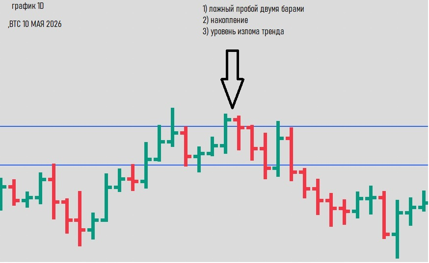 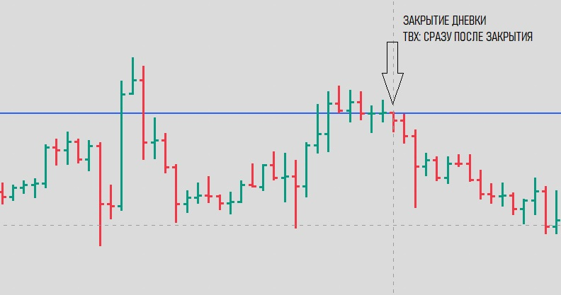 | ||||
| №2 | BTCUSDT | ПодготовленЧисловой пример подготовлен | 2026-05-09 10:00 UTCЗакрытый час | 2026-05-09 00:00 UTC |
Разбор, источники и оригиналыПодпись автора: 8 МАЯ 2026. Направление с учётом уточнений: long. D1: Подтверждено: matched_geometry Состояние после закрытия отмеченного часа. Точная цена исполнения не восстановлена.
Опорная цена и время состояния не являются подтверждённым исполнением сделки. Смещение авторской отметки показано отдельно от фактической границы UTC. Проверка авторской отметки · OHLC дневки · OHLC часовика Авторский контекст D1: Откат к нижней из двух линий с проколом вниз и возвратом. Авторский контекст H1: Вход сразу после закрытия дневки, уже выше нижней линии. Ниже оригиналы для проверки разметки. Они содержат последующие бары; полный рисунок не является входом числовой модели. 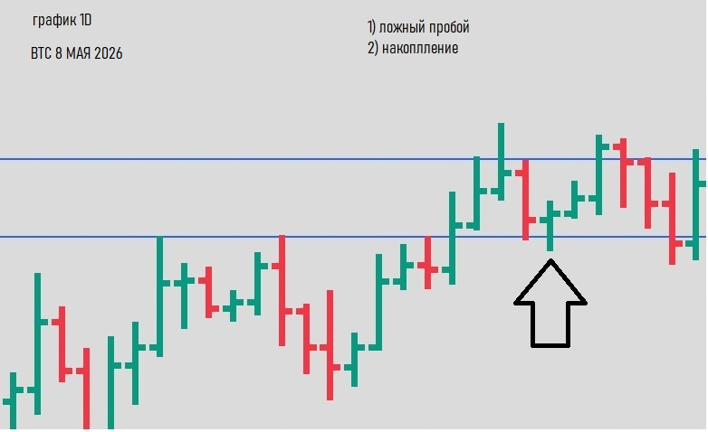 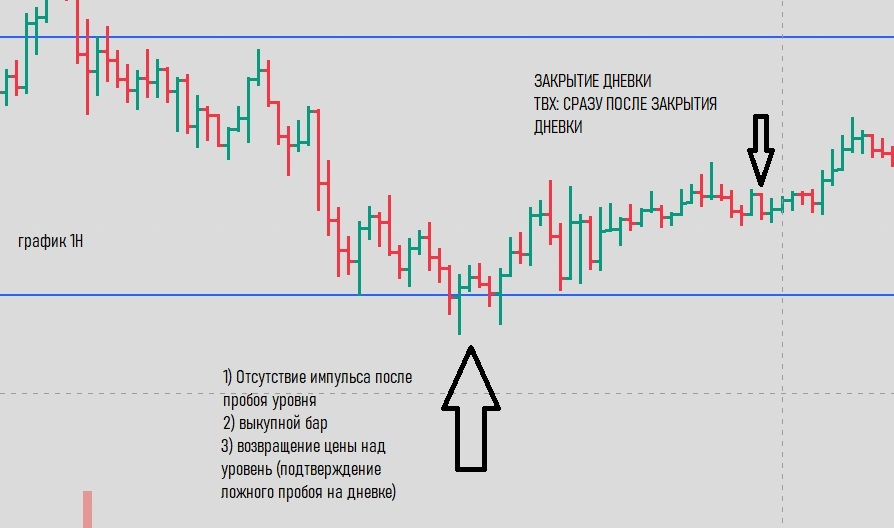 | ||||
| №3 | BTCUSDT | ПодготовленЧисловой пример подготовлен | 2026-05-04 14:00 UTCПеред часом · приближение | 2026-05-04 00:00 UTC |
Разбор, источники и оригиналыПодпись автора: 4 МАЯ 2026. Направление с учётом уточнений: long. D1: Подтверждено: matched_geometry Приближение перед отмеченным часом: точная минута входа внутри него ещё не восстановлена.
Опорная цена и время состояния не являются подтверждённым исполнением сделки. Смещение авторской отметки показано отдельно от фактической границы UTC. Проверка авторской отметки · OHLC дневки · OHLC часовика Авторский контекст D1: Подход снизу к средней линии и выход вверх. Авторский контекст H1: Первый ТВХ над линией после накопления; повторный ТВХ после возврата из глубокого ухода под уровень. Ниже оригиналы для проверки разметки. Они содержат последующие бары; полный рисунок не является входом числовой модели. 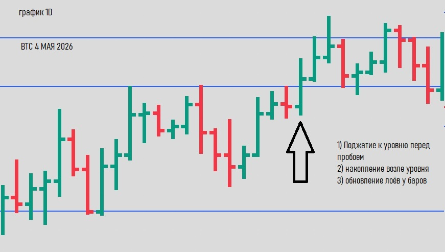 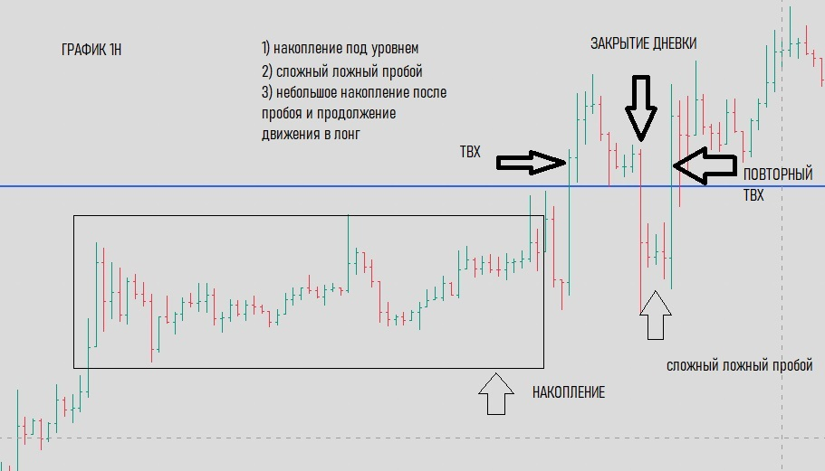 | ||||
| №4 | BTCUSDT | ПодготовленЧисловой пример подготовлен | 2026-04-27 04:00 UTCПеред часом · приближение | 2026-04-27 00:00 UTC |
Разбор, источники и оригиналыПодпись автора: 27 АПРЕЛЯ 2026. Направление с учётом уточнений: short. D1: Подтверждено: matched_geometry Приближение перед отмеченным часом: точная минута входа внутри него ещё не восстановлена.
Опорная цена и время состояния не являются подтверждённым исполнением сделки. Смещение авторской отметки показано отдельно от фактической границы UTC. Проверка авторской отметки · OHLC дневки · OHLC часовика Авторский контекст D1: Отбой вниз от верхней синей линии. Авторский контекст H1: Стрелка после хвостатого касания и серии баров под линией перед падением. Ниже оригиналы для проверки разметки. Они содержат последующие бары; полный рисунок не является входом числовой модели. 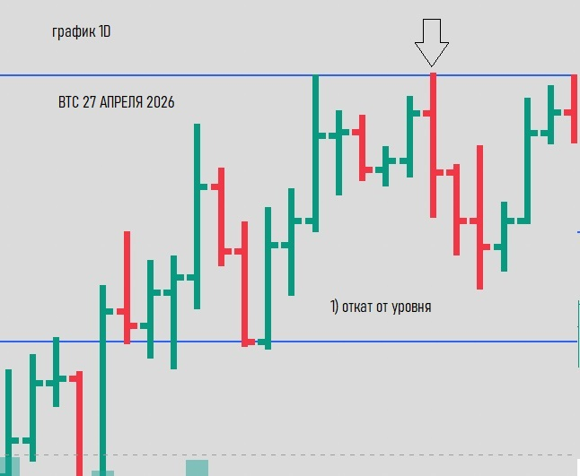 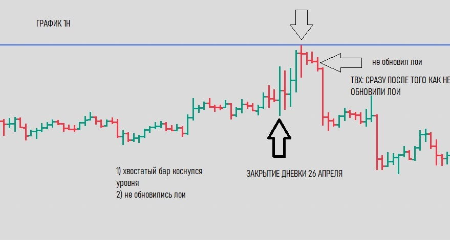 | ||||
| №5 | BTCUSDT | ПодготовленВход после закрытия D1 прямо уточнён автором | 2026-04-20 00:00 UTCПеред часом · приближение | 2026-04-20 00:00 UTC |
Разбор, источники и оригиналыПодпись автора: 19 АПРЕЛЯ 2026. Направление с учётом уточнений: long. D1: Подтверждено: matched_geometry Приближение перед отмеченным часом: точная минута входа внутри него ещё не восстановлена. Час вычислен из разрешённого условия на 1 H1 ATR по выбранной реализации индикатора из базы (5 / 150% / 50%). Автор подтвердил условие, но отдельно этот час не указывал. ATR использует только предшествующие закрытые H1.
Опорная цена и время состояния не являются подтверждённым исполнением сделки. Смещение авторской отметки показано отдельно от фактической границы UTC. Проверка авторской отметки · OHLC дневки · OHLC часовика Авторский контекст D1: Снижение к нижней синей линии сменилось отскоком вверх. Авторский контекст H1: После отмеченного закрытия дневки цена возвращается над линией; вход по подписи после отката на 1 ATR от уровня. Ниже оригиналы для проверки разметки. Они содержат последующие бары; полный рисунок не является входом числовой модели. 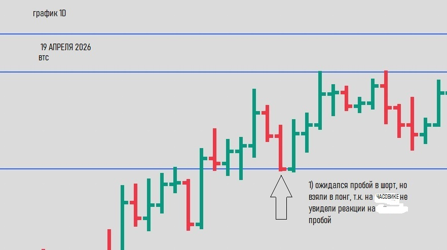 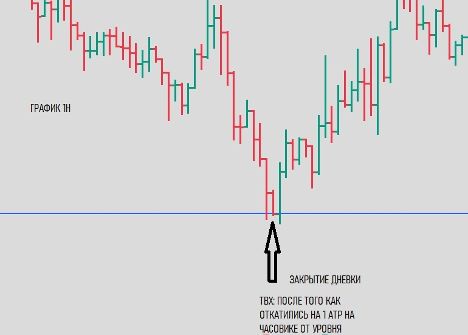 | ||||
| №6 | BTCUSDT | ПодготовленЧисловой пример подготовлен | 2026-04-12 00:00 UTCЗакрытый час | 2026-04-12 00:00 UTC |
Разбор, источники и оригиналыПодпись автора: 11 АПРЕЛЯ 2026. Направление с учётом уточнений: short. D1: Подтверждено: matched_geometry Состояние после закрытия отмеченного часа. Точная цена исполнения не восстановлена.
Опорная цена и время состояния не являются подтверждённым исполнением сделки. Смещение авторской отметки показано отдельно от фактической границы UTC. Проверка авторской отметки · OHLC дневки · OHLC часовика Авторский контекст D1: Поджатие снизу завершилось касанием/малым проколом верхней линии и снижением. Авторский контекст H1: После часового прокола сверху и возврата под линию вход сразу на закрытии дневки. Ниже оригиналы для проверки разметки. Они содержат последующие бары; полный рисунок не является входом числовой модели. 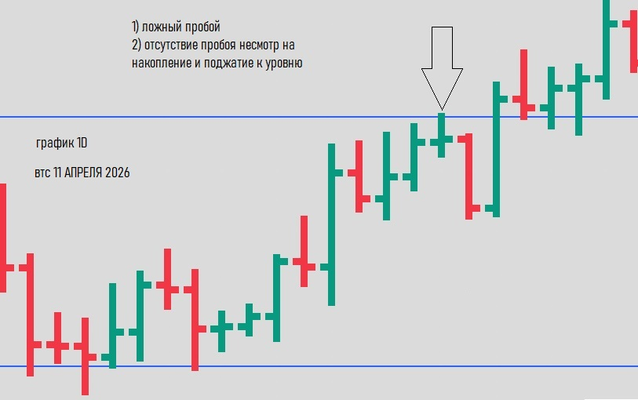 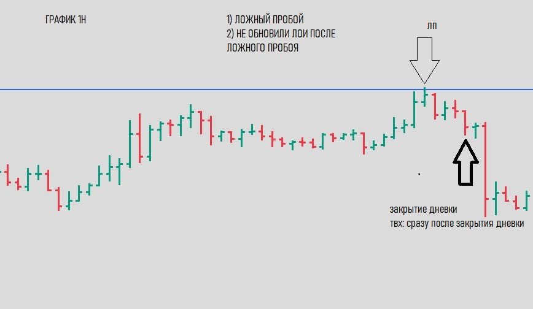 | ||||
| №7 | BTCUSDT | ПодготовленЧисловой пример подготовлен | 2026-04-03 02:00 UTCПеред часом · приближение | 2026-04-03 00:00 UTC |
Разбор, источники и оригиналыПодпись автора: 2 АПРЕЛЯ 2026. Направление с учётом уточнений: long. D1: Подтверждено: matched_geometry Приближение перед отмеченным часом: точная минута входа внутри него ещё не восстановлена.
Опорная цена и время состояния не являются подтверждённым исполнением сделки. Смещение авторской отметки показано отдельно от фактической границы UTC. Проверка авторской отметки · OHLC дневки · OHLC часовика Авторский контекст D1: Очередное тестирование средней синей линии снизу хвостом с удержанием выше. Авторский контекст H1: ТВХ на откате выше линии после отмеченного закрытия дневки. Ниже оригиналы для проверки разметки. Они содержат последующие бары; полный рисунок не является входом числовой модели. 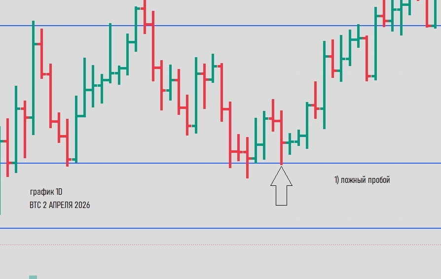 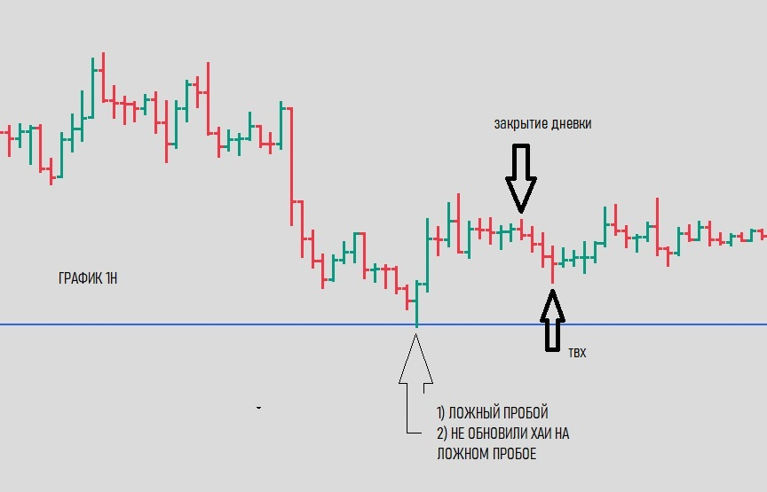 | ||||
| №8 | BTCUSDT | ПодготовленЧисловой пример подготовлен | 2026-03-30 00:00 UTCЗакрытый час | 2026-03-30 00:00 UTC |
Разбор, источники и оригиналыПодпись автора: 29 МАРТА 2026. Направление с учётом уточнений: long. D1: Подтверждено: matched_geometry Состояние после закрытия отмеченного часа. Точная цена исполнения не восстановлена.
Опорная цена и время состояния не являются подтверждённым исполнением сделки. Смещение авторской отметки показано отдельно от фактической границы UTC. Проверка авторской отметки · OHLC дневки · OHLC часовика Авторский контекст D1: Нижний хвост дневного бара за средней линией; возврат внутрь диапазона. Авторский контекст H1: Резкий часовой прокол вниз и откуп; вход сразу после закрытия дневки. Ниже оригиналы для проверки разметки. Они содержат последующие бары; полный рисунок не является входом числовой модели. 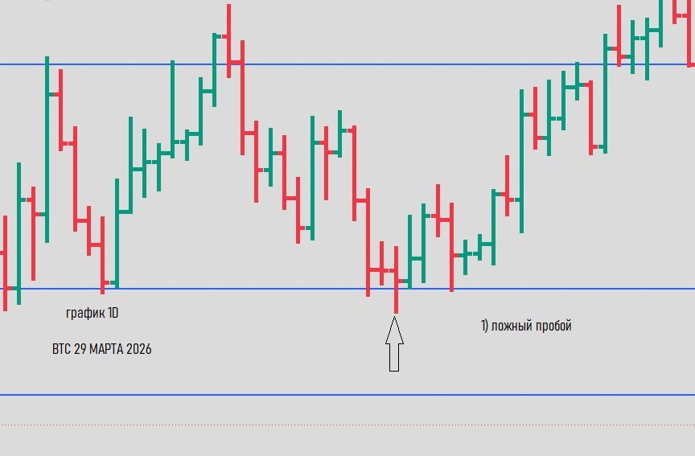 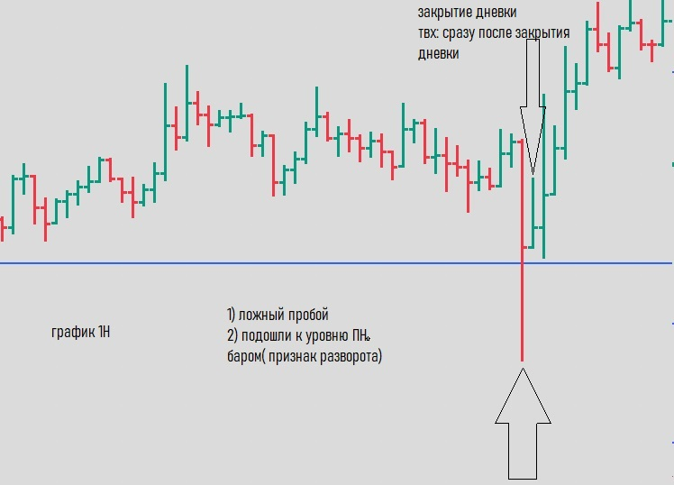 | ||||
| №9 | BTCUSDT | ПодготовленЧисловой пример подготовлен | 2026-03-09 00:00 UTCЗакрытый час | 2026-03-09 00:00 UTC |
Разбор, источники и оригиналыПодпись автора: 8 МАРТА 26. Направление с учётом уточнений: long. D1: Подтверждено: matched_geometry Состояние после закрытия отмеченного часа. Точная цена исполнения не восстановлена.
Опорная цена и время состояния не являются подтверждённым исполнением сделки. Смещение авторской отметки показано отдельно от фактической границы UTC. Проверка авторской отметки · OHLC дневки · OHLC часовика Авторский контекст D1: Возврат от нижней границы накопления между синими линиями. Авторский контекст H1: Вход сразу после закрытия дневки у прокола; далее отскок. Ниже оригиналы для проверки разметки. Они содержат последующие бары; полный рисунок не является входом числовой модели. 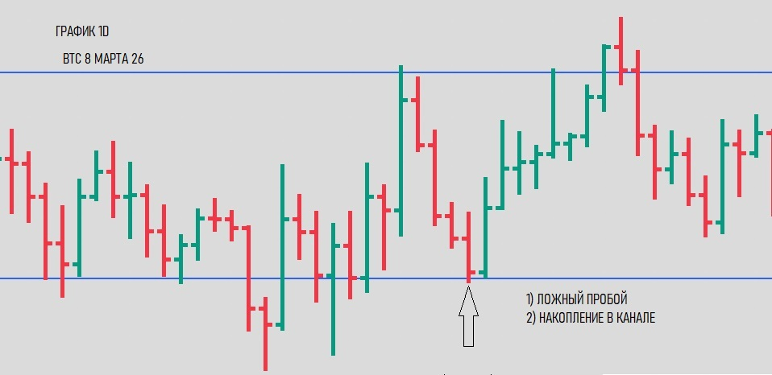 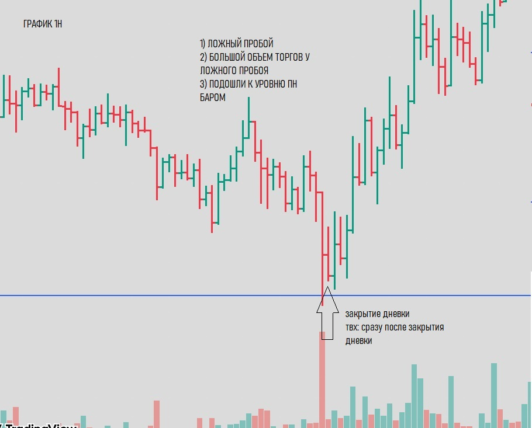 | ||||
| №10 | BTCUSDT | ПодготовленЧисловой пример подготовлен | 2026-03-05 10:00 UTCПеред часом · приближение | 2026-03-05 00:00 UTC |
Разбор, источники и оригиналыПодпись автора: 4 МАРТА 2026. Направление с учётом уточнений: short. D1: Подтверждено: matched_geometry Приближение перед отмеченным часом: точная минута входа внутри него ещё не восстановлена.
Опорная цена и время состояния не являются подтверждённым исполнением сделки. Смещение авторской отметки показано отдельно от фактической границы UTC. Проверка авторской отметки · OHLC дневки · OHLC часовика Авторский контекст D1: Крупный растущий бар прокалывает верхнюю линию и закрывается ниже; далее снижение. Авторский контекст H1: После закрытия дневки вход на повторном подходе снизу к линии. Ниже оригиналы для проверки разметки. Они содержат последующие бары; полный рисунок не является входом числовой модели. 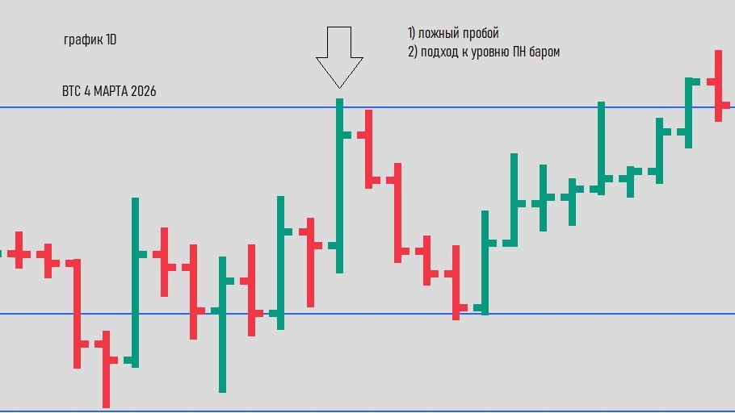 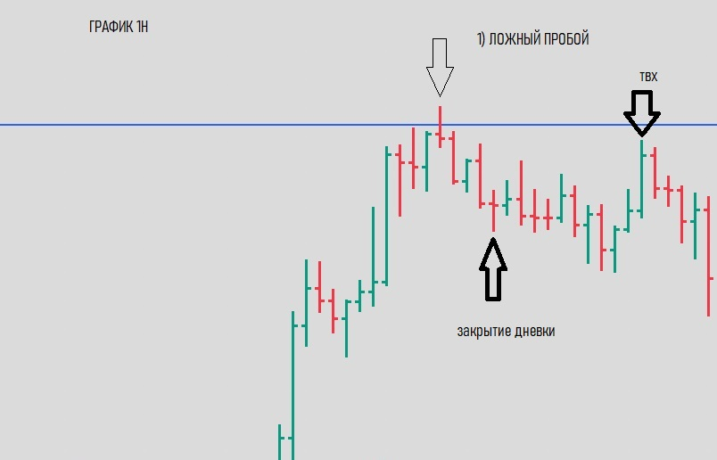 | ||||
| №11 | ETHUSDT | ПодготовленЧисловой пример подготовлен | 2026-06-07 00:00 UTCЗакрытый час | 2026-06-07 00:00 UTC |
Разбор, источники и оригиналыПодпись автора: 6 ИЮНЯ 26 (1D); 6 ИЮНЯ 2026 (1H). Направление с учётом уточнений: long. D1: Подтверждено: matched_geometry Состояние после закрытия отмеченного часа. Точная цена исполнения не восстановлена.
Опорная цена и время состояния не являются подтверждённым исполнением сделки. Смещение авторской отметки показано отдельно от фактической границы UTC. Проверка авторской отметки · OHLC дневки · OHLC часовика Авторский контекст D1: После снижения нижняя линия проколота хвостом, цена возвращается выше. Авторский контекст H1: После двух отмеченных тестов и накопления выше линии вход сразу после закрытия дневки. Ниже оригиналы для проверки разметки. Они содержат последующие бары; полный рисунок не является входом числовой модели. 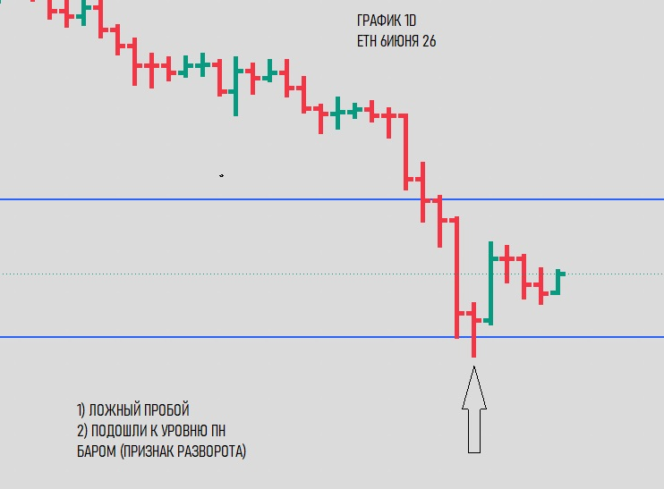 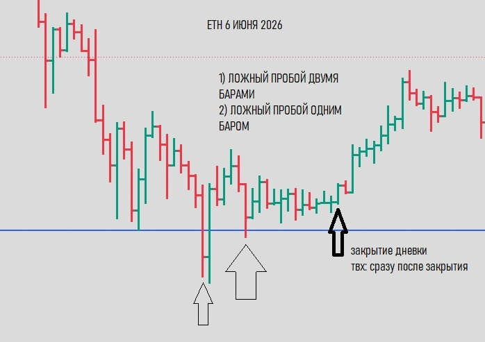 | ||||
| №12 | ETHUSDT | ПодготовленЧисловой пример подготовлен | 2026-05-17 23:00 UTCПеред часом · приближение | 2026-05-17 00:00 UTC |
Разбор, источники и оригиналыПодпись автора: 17 МАЯ 2026. Направление с учётом уточнений: short. D1: Подтверждено: matched_geometry Приближение перед отмеченным часом: точная минута входа внутри него ещё не восстановлена.
Опорная цена и время состояния не являются подтверждённым исполнением сделки. Смещение авторской отметки показано отдельно от фактической границы UTC. Проверка авторской отметки · OHLC дневки · OHLC часовика Авторский контекст D1: Последовательное снижение максимумов к средней линии и пробой вниз. Авторский контекст H1: Стрелка у выхода из второго накопления перед пересечением синей линии вниз. Ниже оригиналы для проверки разметки. Они содержат последующие бары; полный рисунок не является входом числовой модели. 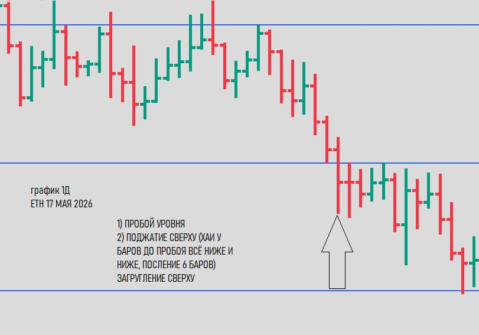 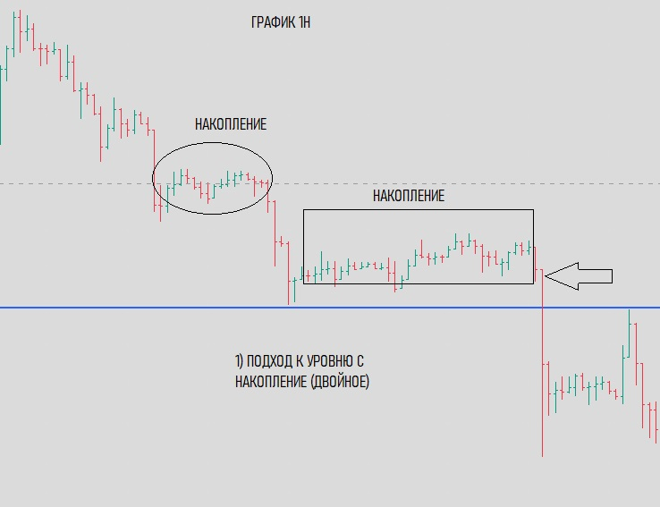 | ||||
| №13 | ETHUSDT | ПодготовленЧисловой пример подготовлен | 2026-04-23 00:00 UTCЗакрытый час | 2026-04-23 00:00 UTC |
Разбор, источники и оригиналыПодпись автора: 22 АПРЕЛЯ. Направление с учётом уточнений: short. D1: Подтверждено: matched_geometry Состояние после закрытия отмеченного часа. Точная цена исполнения не восстановлена.
Опорная цена и время состояния не являются подтверждённым исполнением сделки. Смещение авторской отметки показано отдельно от фактической границы UTC. Проверка авторской отметки · OHLC дневки · OHLC часовика Авторский контекст D1: Верхний хвост над верхней линией и закрытие ниже. Авторский контекст H1: Вход сразу после дневки при выходе из часового диапазона через линию вниз. Ниже оригиналы для проверки разметки. Они содержат последующие бары; полный рисунок не является входом числовой модели. 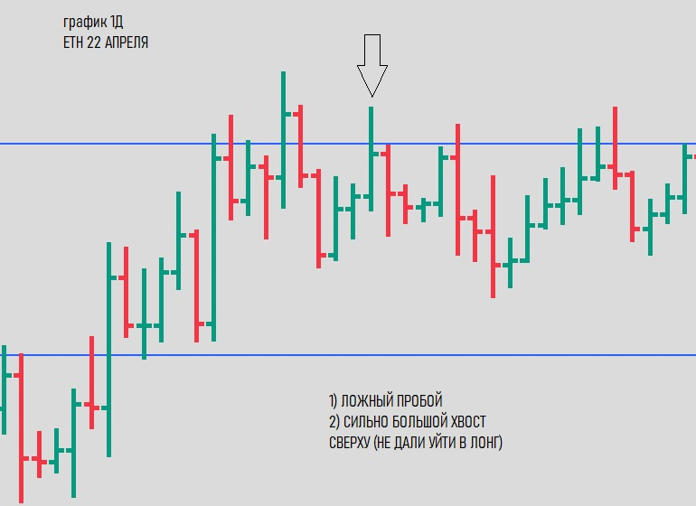 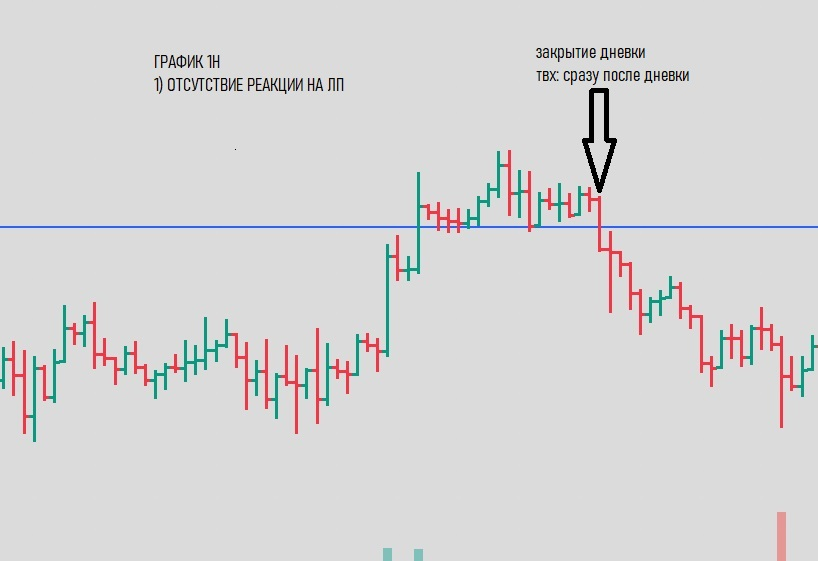 | ||||
| №14 | ETHUSDT | ПодготовленЧисловой пример подготовлен | 2026-04-17 13:00 UTCПеред часом · приближение | 2026-04-17 00:00 UTC |
Разбор, источники и оригиналыПодпись автора: 17 АПРЕЛЯ 2026. Направление с учётом уточнений: long. D1: Подтверждено: matched_geometry Приближение перед отмеченным часом: точная минута входа внутри него ещё не восстановлена.
Опорная цена и время состояния не являются подтверждённым исполнением сделки. Смещение авторской отметки показано отдельно от фактической границы UTC. Проверка авторской отметки · OHLC дневки · OHLC часовика Авторский контекст D1: Отмечен дневной выход над верхней линией; следующий бар возвращает вниз. Авторский контекст H1: Часовое поджатие снизу малыми барами; ТВХ сразу после пробития вверх. Ниже оригиналы для проверки разметки. Они содержат последующие бары; полный рисунок не является входом числовой модели. 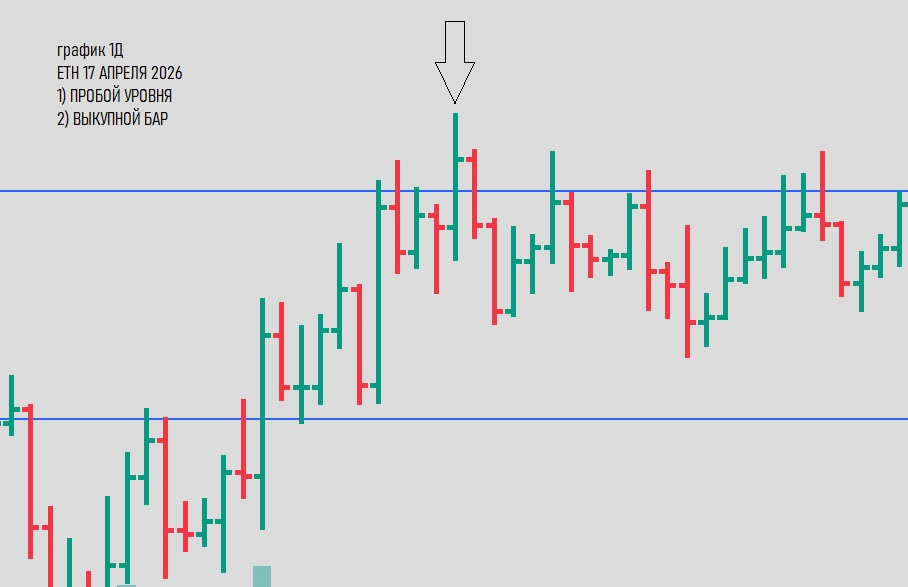 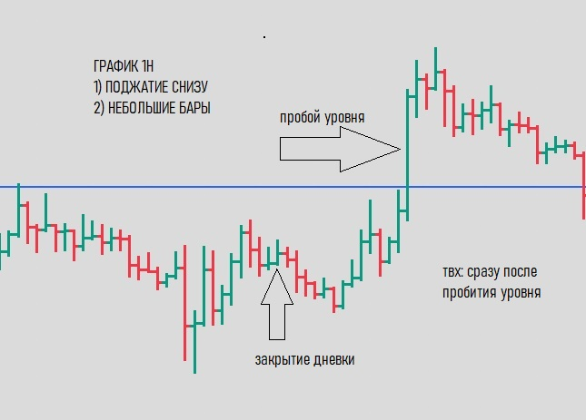 | ||||
| №15 | ETHUSDT | ПодготовленЧисловой пример подготовлен | 2026-04-10 00:00 UTCЗакрытый час | 2026-04-10 00:00 UTC |
Разбор, источники и оригиналыПодпись автора: 9 апреля 2026. Направление с учётом уточнений: long. D1: Подтверждено: matched_geometry Состояние после закрытия отмеченного часа. Точная цена исполнения не восстановлена.
Опорная цена и время состояния не являются подтверждённым исполнением сделки. Смещение авторской отметки показано отдельно от фактической границы UTC. Проверка авторской отметки · OHLC дневки · OHLC часовика Авторский контекст D1: Повторный тест средней линии сверху с удержанием над ней. Авторский контекст H1: ЛП/выкуп у линии; ТВХ сразу после закрытия дневки выше линии. Ниже оригиналы для проверки разметки. Они содержат последующие бары; полный рисунок не является входом числовой модели. 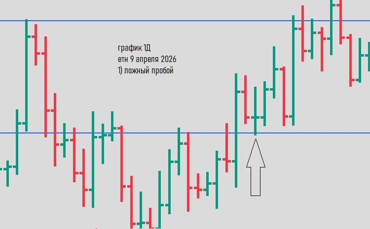 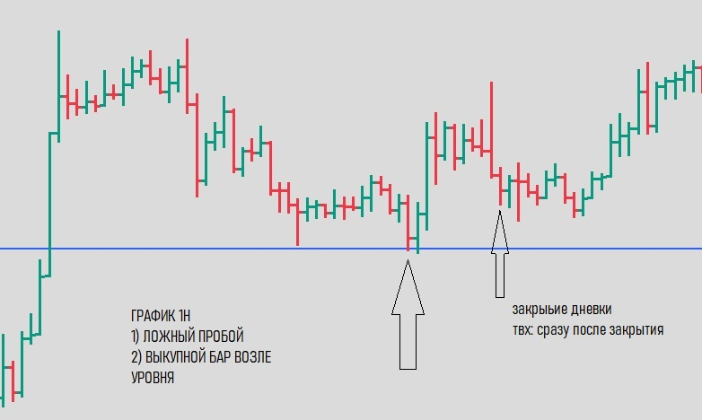 | ||||
| №16 | ETHUSDT | ПодготовленЧисловой пример подготовлен | 2026-04-02 00:00 UTCЗакрытый час | 2026-04-02 00:00 UTC |
Разбор, источники и оригиналыПодпись автора: 1 апреля 2026. Направление с учётом уточнений: short. D1: Подтверждено: matched_geometry Состояние после закрытия отмеченного часа. Точная цена исполнения не восстановлена.
Опорная цена и время состояния не являются подтверждённым исполнением сделки. Смещение авторской отметки показано отдельно от фактической границы UTC. Проверка авторской отметки · OHLC дневки · OHLC часовика Авторский контекст D1: Рост тремя дневными барами к средней линии, прокол сверху и возврат вниз. Авторский контекст H1: После двух верхних тестов вход сразу после закрытия дневки под линией. Ниже оригиналы для проверки разметки. Они содержат последующие бары; полный рисунок не является входом числовой модели. 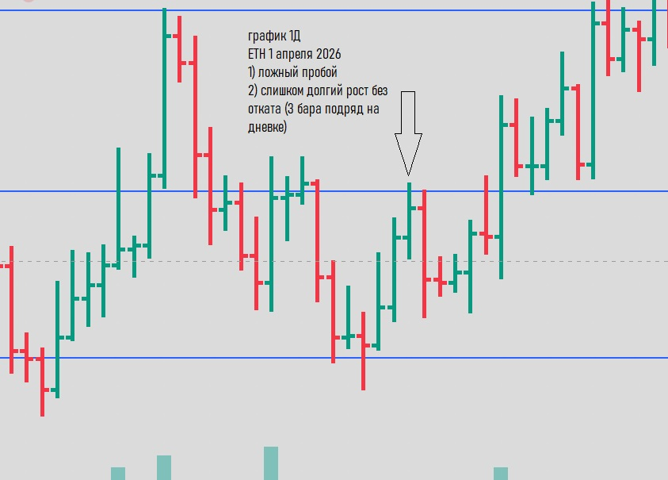 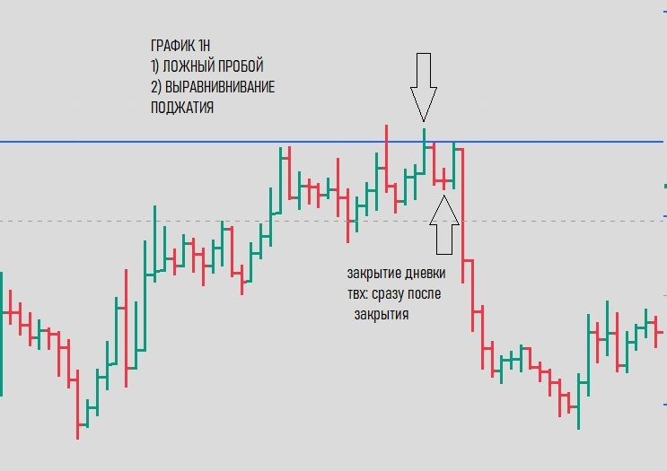 | ||||
| №17 | ETHUSDT | ПодготовленЧисловой пример подготовлен | 2026-03-30 00:00 UTCЗакрытый час | 2026-03-30 00:00 UTC |
Разбор, источники и оригиналыПодпись автора: 29 марта 2026. Направление с учётом уточнений: long. D1: Подтверждено: matched_geometry Состояние после закрытия отмеченного часа. Точная цена исполнения не восстановлена.
Опорная цена и время состояния не являются подтверждённым исполнением сделки. Смещение авторской отметки показано отдельно от фактической границы UTC. Проверка авторской отметки · OHLC дневки · OHLC часовика Авторский контекст D1: Большой нижний хвост за нижнюю линию с возвратом выше. Авторский контекст H1: Вход сразу после закрытия дневки после нижнего часового прокола/откупа. Ниже оригиналы для проверки разметки. Они содержат последующие бары; полный рисунок не является входом числовой модели. 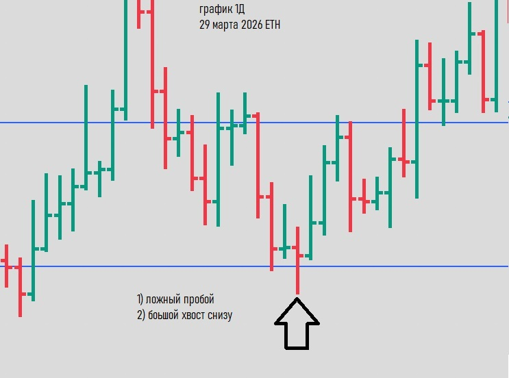 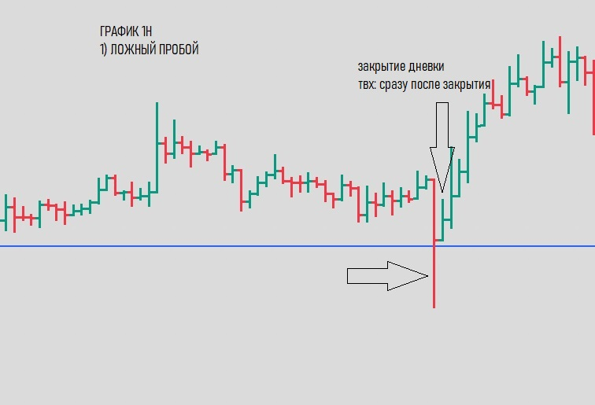 | ||||
| №18 | ETHUSDT | ПодготовленЧисловой пример подготовлен | 2026-03-28 00:00 UTCЗакрытый час | 2026-03-28 00:00 UTC |
Разбор, источники и оригиналыПодпись автора: 27 МАРТА 2026. Направление с учётом уточнений: long. D1: Подтверждено: matched_geometry Состояние после закрытия отмеченного часа. Точная цена исполнения не восстановлена.
Опорная цена и время состояния не являются подтверждённым исполнением сделки. Смещение авторской отметки показано отдельно от фактической границы UTC. Проверка авторской отметки · OHLC дневки · OHLC часовика Авторский контекст D1: Падение к нижней линии, малый выход ниже и закрытие выше. Авторский контекст H1: После часового прокола и выравнивания возле линии вход сразу после закрытия дневки. Ниже оригиналы для проверки разметки. Они содержат последующие бары; полный рисунок не является входом числовой модели. 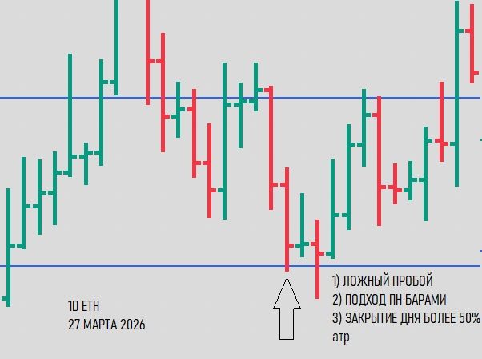 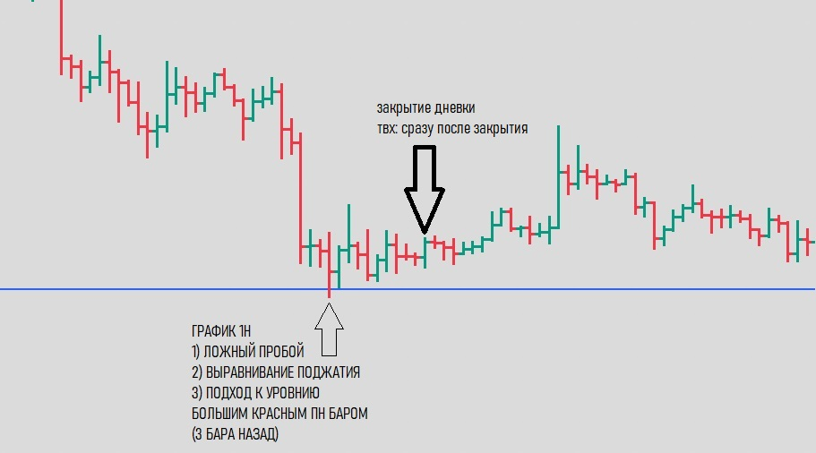 | ||||
| №19 | ETHUSDT | ПодготовленЧисловой пример подготовлен | 2026-03-17 01:00 UTCПеред часом · приближение | 2026-03-17 00:00 UTC |
Разбор, источники и оригиналыПодпись автора: 16 МАРТА 2026. Направление с учётом уточнений: short. D1: Подтверждено: matched_geometry Приближение перед отмеченным часом: точная минута входа внутри него ещё не восстановлена.
Опорная цена и время состояния не являются подтверждённым исполнением сделки. Смещение авторской отметки показано отдельно от фактической границы UTC. Проверка авторской отметки · OHLC дневки · OHLC часовика Авторский контекст D1: Большой рост к верхней линии с закрытием ниже и последующим спадом. Авторский контекст H1: После ЛП и закрытия дневки ТВХ на повторном подъеме, не достигшем линии. Ниже оригиналы для проверки разметки. Они содержат последующие бары; полный рисунок не является входом числовой модели. 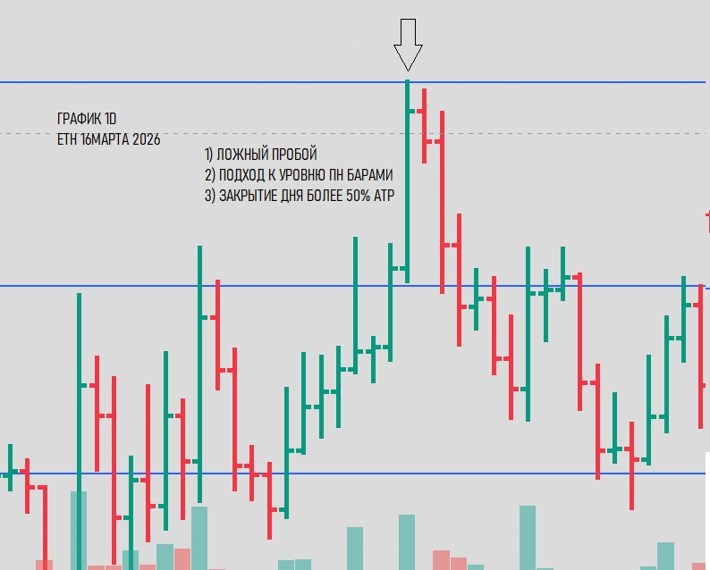 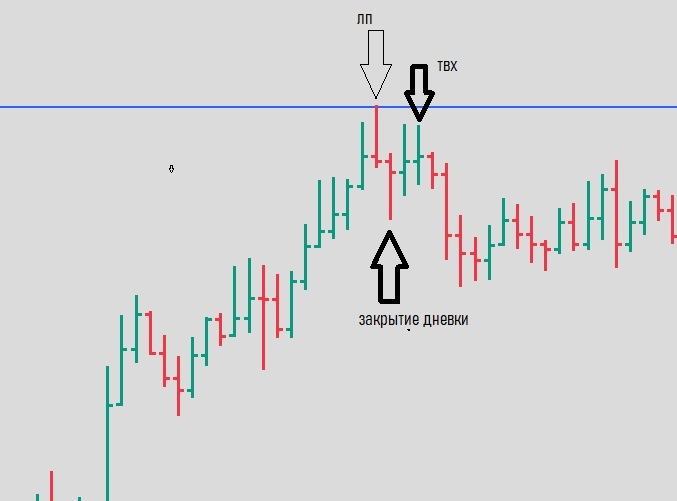 | ||||
| №20 | ETHUSDT | ПодготовленЧисловой пример подготовлен | 2026-03-15 22:00 UTCПеред часом · приближение | 2026-03-15 00:00 UTC |
Разбор, источники и оригиналыПодпись автора: 15 МАРТА 2026. Направление с учётом уточнений: long. D1: Подтверждено: matched_geometry Приближение перед отмеченным часом: точная минута входа внутри него ещё не восстановлена.
Опорная цена и время состояния не являются подтверждённым исполнением сделки. Смещение авторской отметки показано отдельно от фактической границы UTC. Проверка авторской отметки · OHLC дневки · OHLC часовика Авторский контекст D1: Дневной пробой верхней линии с закрытием над ней после выкупного бара. Авторский контекст H1: Час: закругление снизу и выход вверх через линию; стрелка у пробойного бара. Ниже оригиналы для проверки разметки. Они содержат последующие бары; полный рисунок не является входом числовой модели. 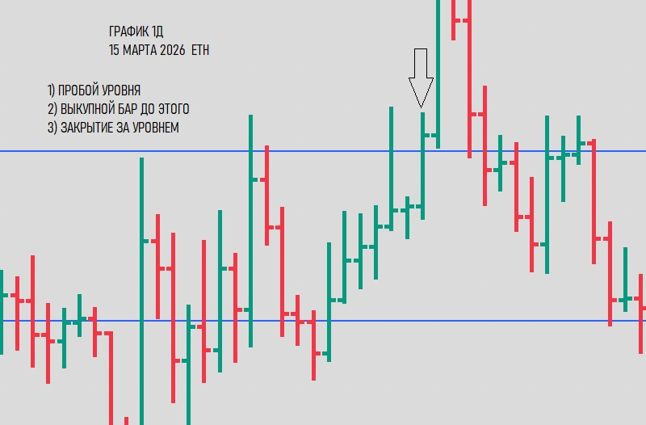 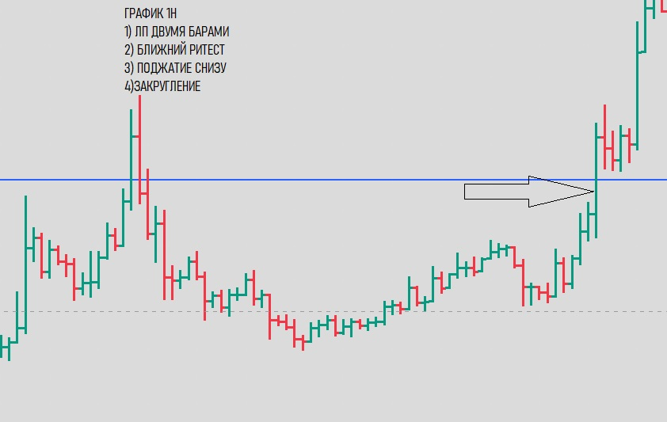 | ||||
| №21 | ETHUSDT | ПодготовленЧисловой пример подготовлен | 2026-03-05 11:00 UTCЗакрытый час | 2026-03-05 00:00 UTC |
Разбор, источники и оригиналыПодпись автора: 4 марта 2026. Направление с учётом уточнений: short. D1: Подтверждено: matched_geometry Состояние после закрытия отмеченного часа. Точная цена исполнения не восстановлена.
Опорная цена и время состояния не являются подтверждённым исполнением сделки. Смещение авторской отметки показано отдельно от фактической границы UTC. Проверка авторской отметки · OHLC дневки · OHLC часовика Авторский контекст D1: Подъем к верхней линии с верхним хвостом и закрытием ниже. Авторский контекст H1: Шорт по автору при возврате под линию после отсутствия импульса; позже отдельный ЛП при ретесте. Ниже оригиналы для проверки разметки. Они содержат последующие бары; полный рисунок не является входом числовой модели. 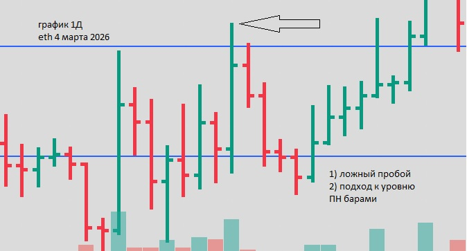 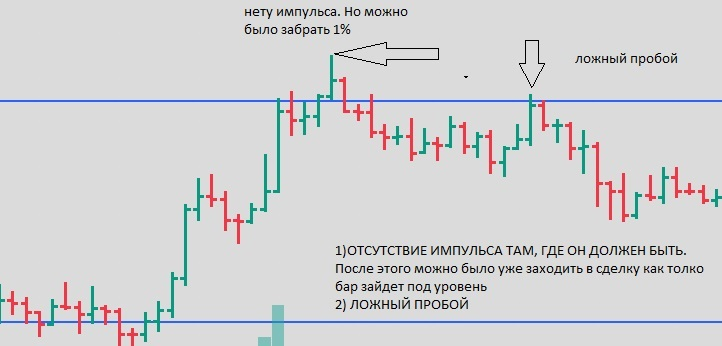 | ||||
| №22 | ETHUSDT | ПодготовленЧисловой пример подготовлен | 2026-02-25 00:00 UTCПеред часом · приближение | 2026-02-25 00:00 UTC |
Разбор, источники и оригиналыПодпись автора: 24 ФЕВРАЛЯ 2026. Направление с учётом уточнений: long. D1: Подтверждено: matched_geometry Приближение перед отмеченным часом: точная минута входа внутри него ещё не восстановлена.
Опорная цена и время состояния не являются подтверждённым исполнением сделки. Смещение авторской отметки показано отдельно от фактической границы UTC. Проверка авторской отметки · OHLC дневки · OHLC часовика Авторский контекст D1: Нижний хвост за нижней линией; далее большой выкуп. Авторский контекст H1: Первый часовой ЛП дал стоп по подписи; повторный нижний тест, возврат и ТВХ после закрытия дневки. Ниже оригиналы для проверки разметки. Они содержат последующие бары; полный рисунок не является входом числовой модели. 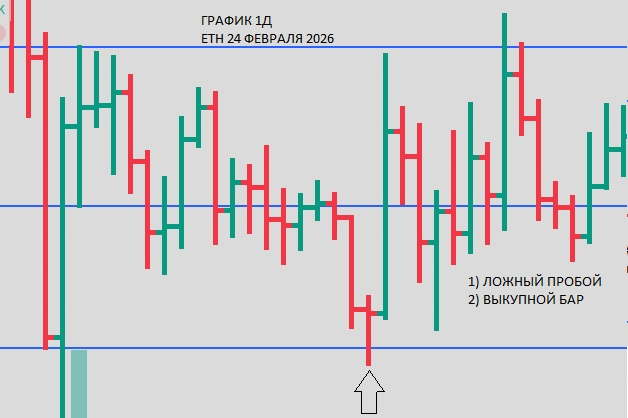 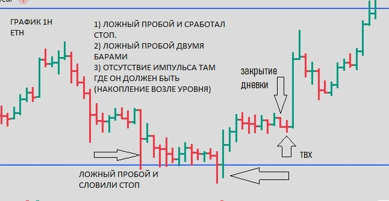 | ||||
| №24 | ETHUSDT | ПодготовленЧисловой пример подготовлен | 2026-01-26 00:00 UTCЗакрытый час | 2026-01-26 00:00 UTC |
Разбор, источники и оригиналыПодпись автора: 25 ЯНВАРЯ 2026. Направление с учётом уточнений: long. D1: Подтверждено: matched_geometry Состояние после закрытия отмеченного часа. Точная цена исполнения не восстановлена.
Опорная цена и время состояния не являются подтверждённым исполнением сделки. Смещение авторской отметки показано отдельно от фактической границы UTC. Проверка авторской отметки · OHLC дневки · OHLC часовика Авторский контекст D1: Падение к средней линии, нижний хвост и краткий отскок. Авторский контекст H1: После часового нижнего теста вход сразу после закрытия дневки. Ниже оригиналы для проверки разметки. Они содержат последующие бары; полный рисунок не является входом числовой модели. 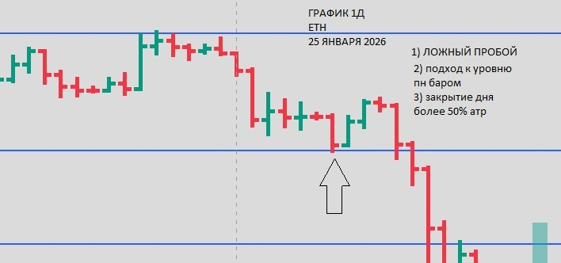 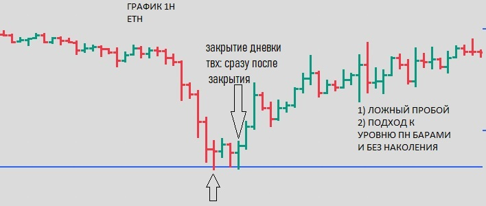 | ||||
| №25 | ETHUSDT | ПодготовленЧисловой пример подготовлен | 2026-01-15 13:00 UTCПеред часом · приближение | 2026-01-15 00:00 UTC |
Разбор, источники и оригиналыПодпись автора: 14 ЯНВАРЯ 2026. Направление с учётом уточнений: short. D1: Подтверждено: matched_geometry Приближение перед отмеченным часом: точная минута входа внутри него ещё не восстановлена.
Опорная цена и время состояния не являются подтверждённым исполнением сделки. Смещение авторской отметки показано отдельно от фактической границы UTC. Проверка авторской отметки · OHLC дневки · OHLC часовика Авторский контекст D1: Подход к верхней линии, небольшой прокол и возврат вниз. Авторский контекст H1: После ЛП и закрытия дневки ТВХ на более позднем повторном подходе к линии снизу. Ниже оригиналы для проверки разметки. Они содержат последующие бары; полный рисунок не является входом числовой модели. 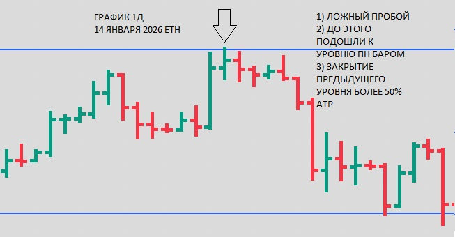 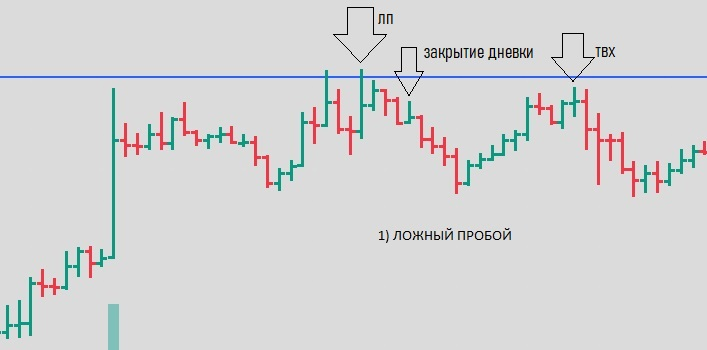 | ||||
| №26 | ETHUSDT | ПодготовленЧисловой пример подготовлен | 2025-12-19 00:00 UTCЗакрытый час | 2025-12-19 00:00 UTC |
Разбор, источники и оригиналыПодпись автора: 18 ДЕКАБРЯ 2025. Направление с учётом уточнений: long. D1: Подтверждено: matched_geometry Состояние после закрытия отмеченного часа. Точная цена исполнения не восстановлена.
Опорная цена и время состояния не являются подтверждённым исполнением сделки. Смещение авторской отметки показано отдельно от фактической границы UTC. Проверка авторской отметки · OHLC дневки · OHLC часовика Авторский контекст D1: Два близких теста нижней линии, второй с нижним хвостом; отскок. Авторский контекст H1: Часовое пребывание ниже линии и возврат; отмечен вход сразу после закрытия дневки выше линии. Ниже оригиналы для проверки разметки. Они содержат последующие бары; полный рисунок не является входом числовой модели. 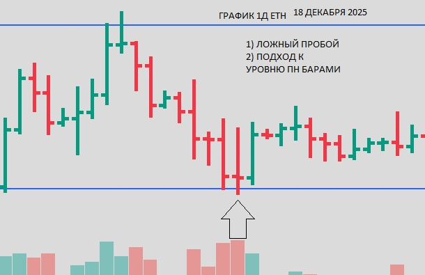 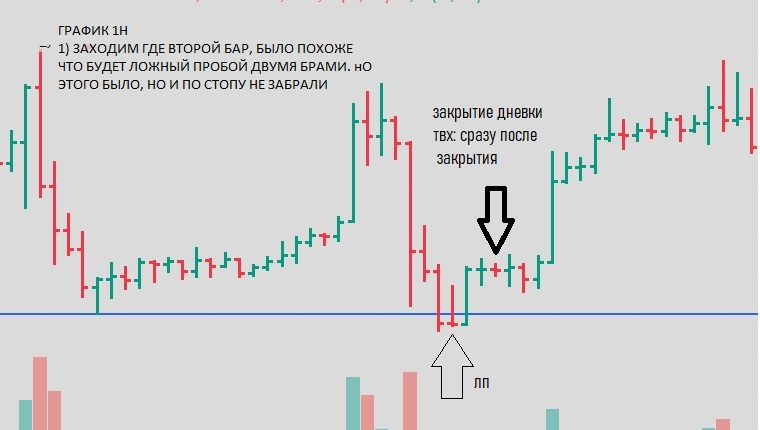 | ||||
| №27 | ETHUSDT | ПодготовленВход после закрытия D1 прямо уточнён автором | 2025-12-02 00:00 UTCЗакрытый час | 2025-12-02 00:00 UTC |
Разбор, источники и оригиналыПодпись автора: 01 ДЕКАБРЯ 2025. Направление с учётом уточнений: long. D1: Подтверждено: matched_geometry Состояние после закрытия отмеченного часа. Точная цена исполнения не восстановлена.
Опорная цена и время состояния не являются подтверждённым исполнением сделки. Смещение авторской отметки показано отдельно от фактической границы UTC. Проверка авторской отметки · OHLC дневки · OHLC часовика Авторский контекст D1: Нижний прокол линии после резкого падения; следующий бар поднимается. Авторский контекст H1: ТВХ при возврате над линию после многобарного накопления ниже. Ниже оригиналы для проверки разметки. Они содержат последующие бары; полный рисунок не является входом числовой модели. | ||||
| №28 | ETHUSDT | ПодготовленЧисловой пример подготовлен | 2025-10-24 00:00 UTCЗакрытый час | 2025-10-24 00:00 UTC |
Разбор, источники и оригиналыПодпись автора: 22 октября 2025. Направление с учётом уточнений: long. D1: Подтверждено: matched_geometry Состояние после закрытия отмеченного часа. Точная цена исполнения не восстановлена.
Опорная цена и время состояния не являются подтверждённым исполнением сделки. Смещение авторской отметки показано отдельно от фактической границы UTC. Проверка авторской отметки · OHLC дневки · OHLC часовика Авторский контекст D1: Красный бар закрывается немного под линией, следующий зеленый возвращает выше. Авторский контекст H1: ТВХ сразу после закрытия дневки на повторном часовом удержании линии сверху. Ниже оригиналы для проверки разметки. Они содержат последующие бары; полный рисунок не является входом числовой модели. | ||||
| №29 | ETHUSDT | ПодготовленЧисловой пример подготовлен | 2025-10-18 00:00 UTCЗакрытый час | 2025-10-18 00:00 UTC |
Разбор, источники и оригиналыПодпись автора: 17 ОКТЯБРЯ 2025. Направление с учётом уточнений: long. D1: Подтверждено: matched_geometry Состояние после закрытия отмеченного часа. Точная цена исполнения не восстановлена.
Опорная цена и время состояния не являются подтверждённым исполнением сделки. Смещение авторской отметки показано отдельно от фактической границы UTC. Проверка авторской отметки · OHLC дневки · OHLC часовика Авторский контекст D1: Нижний хвост под верхней из двух линий; закрытие около/над ней. Авторский контекст H1: После провала и восстановления над линией ТВХ сразу после закрытия дневки у повторного теста. Ниже оригиналы для проверки разметки. Они содержат последующие бары; полный рисунок не является входом числовой модели. | ||||
| №30 | ETHUSDT | ПодготовленЧисловой пример подготовлен | 2025-10-07 14:00 UTCЗакрытый час | 2025-10-07 00:00 UTC |
Разбор, источники и оригиналыПодпись автора: 6 ОКТЯБРЯ 2025. Направление с учётом уточнений: short. D1: Подтверждено: matched_geometry Состояние после закрытия отмеченного часа. Точная цена исполнения не восстановлена.
Опорная цена и время состояния не являются подтверждённым исполнением сделки. Смещение авторской отметки показано отдельно от фактической границы UTC. Проверка авторской отметки · OHLC дневки · OHLC часовика Авторский контекст D1: Дневная стрелка у нижней линии после падения, далее отскок вверх. Авторский контекст H1: Часовая стрелка у верхней линии: шорт сразу после закрытия бара с мини-ЛП. Ниже оригиналы для проверки разметки. Они содержат последующие бары; полный рисунок не является входом числовой модели. | ||||
| №31 | ETHUSDT | ПодготовленВход после закрытия D1 прямо уточнён автором | 2025-09-26 00:00 UTCЗакрытый час | 2025-09-26 00:00 UTC |
Разбор, источники и оригиналыПодпись автора: 25 СЕНТЯБРЯ 2025. Направление с учётом уточнений: long. D1: Подтверждено: matched_geometry Состояние после закрытия отмеченного часа. Точная цена исполнения не восстановлена.
Опорная цена и время состояния не являются подтверждённым исполнением сделки. Смещение авторской отметки показано отдельно от фактической границы UTC. Проверка авторской отметки · OHLC дневки · OHLC часовика Авторский контекст D1: Спуск к нижней рабочей линии и отскок после малого прокола. Авторский контекст H1: Вход после закрытия отмеченного красного бара у нижней линии. Ниже оригиналы для проверки разметки. Они содержат последующие бары; полный рисунок не является входом числовой модели. | ||||
| №32 | ETHUSDT | ПодготовленЧисловой пример подготовлен | 2025-09-13 06:00 UTCЗакрытый час | 2025-09-13 00:00 UTC |
Разбор, источники и оригиналыПодпись автора: 12 СЕНТЯБРЯ 2025. Направление с учётом уточнений: short. D1: Подтверждено: matched_geometry Состояние после закрытия отмеченного часа. Точная цена исполнения не восстановлена.
Опорная цена и время состояния не являются подтверждённым исполнением сделки. Смещение авторской отметки показано отдельно от фактической границы UTC. Проверка авторской отметки · OHLC дневки · OHLC часовика Авторский контекст D1: Подъем к нижней из двух верхних линий; следующий день дает прокол и спад. Авторский контекст H1: ТВХ когда часовой бар целиком закрепился под линией после верхнего прокола. Ниже оригиналы для проверки разметки. Они содержат последующие бары; полный рисунок не является входом числовой модели. | ||||
| №33 | ETHUSDT | ПодготовленЧисловой пример подготовлен | 2025-08-14 02:00 UTCЗакрытый час | 2025-08-14 00:00 UTC |
Разбор, источники и оригиналыПодпись автора: 13 АВГУСТА 2025. Направление с учётом уточнений: short. D1: Подтверждено: matched_geometry Состояние после закрытия отмеченного часа. Точная цена исполнения не восстановлена.
Опорная цена и время состояния не являются подтверждённым исполнением сделки. Смещение авторской отметки показано отдельно от фактической границы UTC. Проверка авторской отметки · OHLC дневки · OHLC часовика Авторский контекст D1: Подъем к нижней из двух верхних линий, малый прокол и спад. Авторский контекст H1: Вход отложен из-за накопления у линии до полного закрепления часового бара под ней. Ниже оригиналы для проверки разметки. Они содержат последующие бары; полный рисунок не является входом числовой модели. | ||||
| №34 | ETHUSDT | ПодготовленЧисловой пример подготовлен | 2025-08-03 01:00 UTCЗакрытый час | 2025-08-03 00:00 UTC |
Разбор, источники и оригиналыПодпись автора: 2 АВГУСТА 2025. Направление с учётом уточнений: long. D1: Подтверждено: matched_geometry Состояние после закрытия отмеченного часа. Точная цена исполнения не восстановлена.
Опорная цена и время состояния не являются подтверждённым исполнением сделки. Смещение авторской отметки показано отдельно от фактической границы UTC. Проверка авторской отметки · OHLC дневки · OHLC часовика Авторский контекст D1: Нижний прокол нижней линии после падения; возврат вверх. Авторский контекст H1: Первая попытка получила стоп; повторный вход возможен после закрытия зеленого бара, вернувшегося над линией. Ниже оригиналы для проверки разметки. Они содержат последующие бары; полный рисунок не является входом числовой модели. | ||||
| №35 | ETHUSDT | ПодготовленЧисловой пример подготовлен | 2025-07-27 19:00 UTCЗакрытый час | 2025-07-27 00:00 UTC |
Разбор, источники и оригиналыПодпись автора: 27 ИЮЛЯ 2025. Направление с учётом уточнений: long. D1: Подтверждено: matched_geometry Состояние после закрытия отмеченного часа. Точная цена исполнения не восстановлена.
Опорная цена и время состояния не являются подтверждённым исполнением сделки. Смещение авторской отметки показано отдельно от фактической границы UTC. Проверка авторской отметки · OHLC дневки · OHLC часовика Авторский контекст D1: После верхнего ЛП формируется закругленный ближний ретест и повторный пробой линии вверх. Авторский контекст H1: На первом пересечении вход не брать; вход после полного закрытия бара над линией, выход с коротким тейком при отсутствии импульса. Ниже оригиналы для проверки разметки. Они содержат последующие бары; полный рисунок не является входом числовой модели. | ||||
| №36 | ETHUSDT | ПодготовленВход после закрытия D1 прямо уточнён автором | 2025-07-22 01:00 UTCПеред часом · приближение | 2025-07-22 00:00 UTC |
Разбор, источники и оригиналыПодпись автора: 21 ИЮЛЯ 2025. Направление с учётом уточнений: short. D1: Подтверждено: matched_geometry Приближение перед отмеченным часом: точная минута входа внутри него ещё не восстановлена. Ближайший час выбран ретроспективно в указанном автором окне; это учебная метка, а не исполнимое правило поиска будущего минимума. Признаки ограничены началом выбранного часа.
Опорная цена и время состояния не являются подтверждённым исполнением сделки. Смещение авторской отметки показано отдельно от фактической границы UTC. Проверка авторской отметки · OHLC дневки · OHLC часовика Авторский контекст D1: Хвостатый выход выше верхней линии и закрытие ниже. Авторский контекст H1: На часовике несколько выходов выше линии, затем уход вниз; явной стрелки ТВХ нет. Ниже оригиналы для проверки разметки. Они содержат последующие бары; полный рисунок не является входом числовой модели. | ||||
| №37 | ETHUSDT | ПодготовленЧисловой пример подготовлен | 2025-07-17 20:00 UTCПеред часом · приближение | 2025-07-17 00:00 UTC |
Разбор, источники и оригиналыПодпись автора: 16 ИЮЛЯ 2025. Направление с учётом уточнений: long. D1: Подтверждено: matched_geometry Приближение перед отмеченным часом: точная минута входа внутри него ещё не восстановлена.
Опорная цена и время состояния не являются подтверждённым исполнением сделки. Смещение авторской отметки показано отдельно от фактической границы UTC. Проверка авторской отметки · OHLC дневки · OHLC часовика Авторский контекст D1: Дневной подход к верхней линии с аргументами и за пробой, и за ЛП. Авторский контекст H1: После отсутствия снижения от ЛП — ближний ретест и пробой в лонг; повторный вход через нижний тест линии. Ниже оригиналы для проверки разметки. Они содержат последующие бары; полный рисунок не является входом числовой модели. | ||||
| №38 | ETHUSDT | ПодготовленЧисловой пример подготовлен | 2025-07-10 18:00 UTCЗакрытый час | 2025-07-10 00:00 UTC |
Разбор, источники и оригиналыПодпись автора: 9 июля 2025. Направление с учётом уточнений: long. D1: Подтверждено: matched_geometry Состояние после закрытия отмеченного часа. Точная цена исполнения не восстановлена.
Опорная цена и время состояния не являются подтверждённым исполнением сделки. Смещение авторской отметки показано отдельно от фактической границы UTC. Проверка авторской отметки · OHLC дневки · OHLC часовика Авторский контекст D1: Подход к верхней линии; закрытие на хаях и закругление снизу против возможного ЛП. Авторский контекст H1: Длительная торговля у линии без реакции на ЛП; ТВХ когда бар закрепился над линией. Ниже оригиналы для проверки разметки. Они содержат последующие бары; полный рисунок не является входом числовой модели. | ||||
| №39 | ETHUSDT | ПодготовленЧисловой пример подготовлен | 2025-07-02 01:00 UTCПеред часом · приближение | 2025-07-02 00:00 UTC |
Разбор, источники и оригиналыПодпись автора: 1 ИЮЛЯ 2025. Направление с учётом уточнений: long. D1: Подтверждено: matched_geometry Приближение перед отмеченным часом: точная минута входа внутри него ещё не восстановлена.
Опорная цена и время состояния не являются подтверждённым исполнением сделки. Смещение авторской отметки показано отдельно от фактической границы UTC. Проверка авторской отметки · OHLC дневки · OHLC часовика Авторский контекст D1: Возврат к средней линии после более раннего пробоя и накопления; отскок через нижний прокол. Авторский контекст H1: Лонг при восстановлении от часового нижнего хвоста; ТВХ над линией. Ниже оригиналы для проверки разметки. Они содержат последующие бары; полный рисунок не является входом числовой модели. | ||||
| №40 | ETHUSDT | ПодготовленВход после закрытия D1 прямо уточнён автором | 2025-06-28 01:00 UTCПеред часом · приближение | 2025-06-28 00:00 UTC |
Разбор, источники и оригиналыПодпись автора: 27 ИЮНЯ 2025. Направление с учётом уточнений: long. D1: Подтверждено: matched_geometry Приближение перед отмеченным часом: точная минута входа внутри него ещё не восстановлена.
Опорная цена и время состояния не являются подтверждённым исполнением сделки. Смещение авторской отметки показано отдельно от фактической границы UTC. Проверка авторской отметки · OHLC дневки · OHLC часовика Авторский контекст D1: Небольшой прокол единственной линии вниз и возврат выше. Авторский контекст H1: Вход возможен при восстановлении бара до закрытия предыдущего красного бара после нижнего теста. Ниже оригиналы для проверки разметки. Они содержат последующие бары; полный рисунок не является входом числовой модели. | ||||
| №41 | ETHUSDT | ПодготовленВход после закрытия D1 прямо уточнён автором | 2025-06-12 00:00 UTCЗакрытый час | 2025-06-12 00:00 UTC |
Разбор, источники и оригиналыПодпись автора: 11 июня 2025. Направление с учётом уточнений: short. D1: Подтверждено: matched_geometry Состояние после закрытия отмеченного часа. Точная цена исполнения не восстановлена.
Опорная цена и время состояния не являются подтверждённым исполнением сделки. Смещение авторской отметки показано отдельно от фактической границы UTC. Проверка авторской отметки · OHLC дневки · OHLC часовика Авторский контекст D1: Первый дневной бар закрыт над верхней линией, второй возвращает под нее. Авторский контекст H1: После закрытия дневки вход когда часовой бар полностью закрепился под линией. Ниже оригиналы для проверки разметки. Они содержат последующие бары; полный рисунок не является входом числовой модели. | ||||
| №42 | ETHUSDT | ПодготовленЧисловой пример подготовлен | 2025-06-06 00:00 UTCПеред часом · приближение | 2025-06-06 00:00 UTC |
Разбор, источники и оригиналыПодпись автора: 6 ИЮНЯ 2025. Направление с учётом уточнений: long. D1: Подтверждено: matched_geometry Приближение перед отмеченным часом: точная минута входа внутри него ещё не восстановлена.
Опорная цена и время состояния не являются подтверждённым исполнением сделки. Смещение авторской отметки показано отдельно от фактической границы UTC. Проверка авторской отметки · OHLC дневки · OHLC часовика Авторский контекст D1: Большой красный подход к нижней линии; следующий зеленый тестирует ее и растет. Авторский контекст H1: После закрытия дневки дождаться нижнего прокола; стрелка «заход через ЛП». Ниже оригиналы для проверки разметки. Они содержат последующие бары; полный рисунок не является входом числовой модели. | ||||
| №43 | ETHUSDT | ПодготовленВход после закрытия D1 прямо уточнён автором | 2025-04-17 14:00 UTCПеред часом · приближение | 2025-04-17 00:00 UTC |
Разбор, источники и оригиналыПодпись автора: 16 апреля 2025. Направление с учётом уточнений: long. D1: Подтверждено: matched_geometry Приближение перед отмеченным часом: точная минута входа внутри него ещё не восстановлена. Ближайший час выбран ретроспективно в указанном автором окне; это учебная метка, а не исполнимое правило поиска будущего минимума. Признаки ограничены началом выбранного часа.
Опорная цена и время состояния не являются подтверждённым исполнением сделки. Смещение авторской отметки показано отдельно от фактической границы UTC. Проверка авторской отметки · OHLC дневки · OHLC часовика Авторский контекст D1: Нижний хвост за нижней линией в боковике; закрытие выше. Авторский контекст H1: ТВХ сразу после закрытия часового ложного пробоя нижней линии. Ниже оригиналы для проверки разметки. Они содержат последующие бары; полный рисунок не является входом числовой модели. | ||||
| №44 | ETHUSDT | ПодготовленВход после закрытия D1 прямо уточнён автором | 2025-03-28 04:00 UTCПеред часом · приближение | 2025-03-28 00:00 UTC |
Разбор, источники и оригиналыПодпись автора: 28 МАРТА 2025. Направление с учётом уточнений: short. D1: Подтверждено: matched_geometry Приближение перед отмеченным часом: точная минута входа внутри него ещё не восстановлена.
Опорная цена и время состояния не являются подтверждённым исполнением сделки. Смещение авторской отметки показано отдельно от фактической границы UTC. Проверка авторской отметки · OHLC дневки · OHLC часовика Авторский контекст D1: Поджатие к средней линии сверху, затем сильный пробой вниз. Авторский контекст H1: Часовое накопление над линией с понижением максимумов; стрелка на пробойном красном баре. Ниже оригиналы для проверки разметки. Они содержат последующие бары; полный рисунок не является входом числовой модели. | ||||
| №45 | ETHUSDT | ПодготовленЧисловой пример подготовлен | 2025-03-24 02:00 UTCЗакрытый час | 2025-03-24 00:00 UTC |
Разбор, источники и оригиналыПодпись автора: 24 МАРТА 2025. Направление с учётом уточнений: long. D1: Подтверждено: matched_geometry Состояние после закрытия отмеченного часа. Точная цена исполнения не восстановлена.
Опорная цена и время состояния не являются подтверждённым исполнением сделки. Смещение авторской отметки показано отдельно от фактической границы UTC. Проверка авторской отметки · OHLC дневки · OHLC часовика Авторский контекст D1: После серии пересечений средней линии бар закрепился над ней; дальнейший лонг. Авторский контекст H1: После закрытия дневки вход на закрытии отмеченного бара возле линии; альтернативный ЛП не возник. Ниже оригиналы для проверки разметки. Они содержат последующие бары; полный рисунок не является входом числовой модели. | ||||
| №46 | ETHUSDT | ПодготовленВход после закрытия D1 прямо уточнён автором | 2025-02-18 00:00 UTCПеред часом · приближение | 2025-02-18 00:00 UTC |
Разбор, источники и оригиналыПодпись автора: 17 ФЕВРАЛЯ 2025. Направление с учётом уточнений: short. D1: Подтверждено: matched_geometry Приближение перед отмеченным часом: точная минута входа внутри него ещё не восстановлена.
Опорная цена и время состояния не являются подтверждённым исполнением сделки. Смещение авторской отметки показано отдельно от фактической границы UTC. Проверка авторской отметки · OHLC дневки · OHLC часовика Авторский контекст D1: Прокол верхней линии с закрытием под ней. Авторский контекст H1: После часового двухбарного выхода/возврата ТВХ сразу после закрытия отмеченного бара у линии на закрытии дневки. Ниже оригиналы для проверки разметки. Они содержат последующие бары; полный рисунок не является входом числовой модели. | ||||
| №47 | ETHUSDT | ПодготовленВход после закрытия D1 прямо уточнён автором | 2025-02-13 00:00 UTCПеред часом · приближение | 2025-02-13 00:00 UTC |
Разбор, источники и оригиналыПодпись автора: 12 ФЕВРАЛЯ 2025. Направление с учётом уточнений: short. D1: Подтверждено: matched_geometry Приближение перед отмеченным часом: точная минута входа внутри него ещё не восстановлена.
Опорная цена и время состояния не являются подтверждённым исполнением сделки. Смещение авторской отметки показано отдельно от фактической границы UTC. Проверка авторской отметки · OHLC дневки · OHLC часовика Авторский контекст D1: Большой зеленый бар от нижней части диапазона достигает средней линии и заканчивает ниже. Авторский контекст H1: Шорт после закрытия большого часового бара, проколовшего верхнюю линию и вернувшегося под нее. Ниже оригиналы для проверки разметки. Они содержат последующие бары; полный рисунок не является входом числовой модели. | ||||
| №48 | ETHUSDT | ПодготовленВход после закрытия D1 прямо уточнён автором | 2025-01-25 15:00 UTCПеред часом · приближение | 2025-01-25 00:00 UTC |
Разбор, источники и оригиналыПодпись автора: 24 ЯНВАРЯ 2025. Направление с учётом уточнений: short. D1: Подтверждено: matched_geometry Приближение перед отмеченным часом: точная минута входа внутри него ещё не восстановлена.
Опорная цена и время состояния не являются подтверждённым исполнением сделки. Смещение авторской отметки показано отдельно от фактической границы UTC. Проверка авторской отметки · OHLC дневки · OHLC часовика Авторский контекст D1: Малый верхний прокол синей линии в диапазоне; далее спад. Авторский контекст H1: Нет импульса после пересечения вверх; ТВХ только после полного закрепления часового бара под линией. Ниже оригиналы для проверки разметки. Они содержат последующие бары; полный рисунок не является входом числовой модели. | ||||
| №49 | BTCUSDT | ПодготовленВход после закрытия D1 прямо уточнён автором | 2026-02-20 13:00 UTCПеред часом · приближение | 2026-02-20 00:00 UTC |
Разбор, источники и оригиналыПодпись автора: 19 февраля 2026. Направление с учётом уточнений: long. D1: Подтверждено: matched_geometry Приближение перед отмеченным часом: точная минута входа внутри него ещё не восстановлена.
Опорная цена и время состояния не являются подтверждённым исполнением сделки. Смещение авторской отметки показано отдельно от фактической границы UTC. Проверка авторской отметки · OHLC дневки · OHLC часовика Авторский контекст D1: Небольшой нижний прокол средней линии и отскок. Авторский контекст H1: После выравнивания сверху вход сразу после закрытия часового бара с нижним ЛП. Ниже оригиналы для проверки разметки. Они содержат последующие бары; полный рисунок не является входом числовой модели. | ||||
| №50 | BTCUSDT | ПодготовленЧисловой пример подготовлен | 2026-02-13 00:00 UTCПеред часом · приближение | 2026-02-13 00:00 UTC |
Разбор, источники и оригиналыПодпись автора: 12 ФЕВРАЛЯ 2026. Направление с учётом уточнений: long. D1: Подтверждено: matched_geometry Приближение перед отмеченным часом: точная минута входа внутри него ещё не восстановлена.
Опорная цена и время состояния не являются подтверждённым исполнением сделки. Смещение авторской отметки показано отдельно от фактической границы UTC. Проверка авторской отметки · OHLC дневки · OHLC часовика Авторский контекст D1: Подход к средней линии вниз; нижний хвост и возврат. Авторский контекст H1: После дневного закрытия ждать часовой бар полностью над линией; ТВХ с открытия указанного следующего бара. Ниже оригиналы для проверки разметки. Они содержат последующие бары; полный рисунок не является входом числовой модели. | ||||
| №51 | BTCUSDT | ПодготовленВход после закрытия D1 прямо уточнён автором | 2026-01-15 00:00 UTCЗакрытый час | 2026-01-15 00:00 UTC |
Разбор, источники и оригиналыПодпись автора: 14 января 2026. Направление с учётом уточнений: short. D1: Подтверждено: matched_geometry Состояние после закрытия отмеченного часа. Точная цена исполнения не восстановлена.
Опорная цена и время состояния не являются подтверждённым исполнением сделки. Смещение авторской отметки показано отдельно от фактической границы UTC. Проверка авторской отметки · OHLC дневки · OHLC часовика Авторский контекст D1: Подъем к верхней линии, малый верхний прокол и спад. Авторский контекст H1: После закрытия дневки вход когда пропало поджатие снизу, по подписи примерно на половине красного бара. Ниже оригиналы для проверки разметки. Они содержат последующие бары; полный рисунок не является входом числовой модели. | ||||
| №52 | BTCUSDT | ПодготовленВход после закрытия D1 прямо уточнён автором | 2025-12-05 02:00 UTCПеред часом · приближение | 2025-12-05 00:00 UTC |
Разбор, источники и оригиналыПодпись автора: 3 декабря 2025. Направление с учётом уточнений: short. D1: Подтверждено: matched_geometry Приближение перед отмеченным часом: точная минута входа внутри него ещё не восстановлена. Ближайший час выбран ретроспективно в указанном автором окне; это учебная метка, а не исполнимое правило поиска будущего минимума. Признаки ограничены началом выбранного часа.
Опорная цена и время состояния не являются подтверждённым исполнением сделки. Смещение авторской отметки показано отдельно от фактической границы UTC. Проверка авторской отметки · OHLC дневки · OHLC часовика Авторский контекст D1: Двухбарный выход над рабочей линией и возврат ниже без продолжения роста. Авторский контекст H1: Закрытие первой дневки отмечено над линией; вход значительно позже после полного закрытия часа под линией. Ниже оригиналы для проверки разметки. Они содержат последующие бары; полный рисунок не является входом числовой модели. | ||||
| №53 | BTCUSDT | ПодготовленВход после закрытия D1 прямо уточнён автором | 2025-11-29 00:00 UTCЗакрытый час | 2025-11-29 00:00 UTC |
Разбор, источники и оригиналыПодпись автора: 28 НОЯБРЯ 2025. Направление с учётом уточнений: short. D1: Подтверждено: matched_geometry Состояние после закрытия отмеченного часа. Точная цена исполнения не восстановлена.
Опорная цена и время состояния не являются подтверждённым исполнением сделки. Смещение авторской отметки показано отдельно от фактической границы UTC. Проверка авторской отметки · OHLC дневки · OHLC часовика Авторский контекст D1: Малый верхний прокол рабочей линии и возврат ниже. Авторский контекст H1: Шорт сразу после закрытия отмеченного часового бара с верхним ЛП. Ниже оригиналы для проверки разметки. Они содержат последующие бары; полный рисунок не является входом числовой модели. | ||||
| №55 | BTCUSDT | ПодготовленВход после закрытия D1 прямо уточнён автором | 2025-10-28 13:00 UTCПеред часом · приближение | 2025-10-28 00:00 UTC |
Разбор, источники и оригиналыПодпись автора: 27 ОКТЯБРЯ 2025. Направление с учётом уточнений: short. D1: Подтверждено: matched_geometry Приближение перед отмеченным часом: точная минута входа внутри него ещё не восстановлена.
Опорная цена и время состояния не являются подтверждённым исполнением сделки. Смещение авторской отметки показано отдельно от фактической границы UTC. Проверка авторской отметки · OHLC дневки · OHLC часовика Авторский контекст D1: Верхний ЛП после подхода к линии; следующий день снова прокалывает ее. Авторский контекст H1: Вход сразу после завершения обозначенного двухбарного часового ЛП. Ниже оригиналы для проверки разметки. Они содержат последующие бары; полный рисунок не является входом числовой модели. | ||||
| №56 | BTCUSDT | ПодготовленВход после закрытия D1 прямо уточнён автором | 2025-10-23 00:00 UTCЗакрытый час | 2025-10-23 00:00 UTC |
Разбор, источники и оригиналыПодпись автора: 22 ОКТЯБРЯ 2025. Направление с учётом уточнений: long. D1: Подтверждено: matched_geometry Состояние после закрытия отмеченного часа. Точная цена исполнения не восстановлена.
Опорная цена и время состояния не являются подтверждённым исполнением сделки. Смещение авторской отметки показано отдельно от фактической границы UTC. Проверка авторской отметки · OHLC дневки · OHLC часовика Авторский контекст D1: Нижний тест нижней линии с малым проколом и дальнейшим ростом. Авторский контекст H1: Вход сразу после закрытия дневки; вскоре виден еще один нижний тест и рост. Ниже оригиналы для проверки разметки. Они содержат последующие бары; полный рисунок не является входом числовой модели. | ||||
| №57 | BTCUSDT | ПодготовленЧисловой пример подготовлен | 2025-10-14 00:00 UTCЗакрытый час | 2025-10-14 00:00 UTC |
Разбор, источники и оригиналыПодпись автора: 13 ОКТЯБРЯ 2025. Направление с учётом уточнений: short. D1: Ожидает проверки: no_confirmed_market_alignment Состояние после закрытия отмеченного часа. Точная цена исполнения не восстановлена.
Опорная цена и время состояния не являются подтверждённым исполнением сделки. Смещение авторской отметки показано отдельно от фактической границы UTC. Проверка авторской отметки · OHLC дневки · OHLC часовика Авторский контекст D1: Повторный подход к верхней линии после восстановления снизу; верхний прокол и возврат. Авторский контекст H1: После дневки дождаться полного закрепления часового бара под линией и входить после его закрытия. Ниже оригиналы для проверки разметки. Они содержат последующие бары; полный рисунок не является входом числовой модели. | ||||
| №58 | BTCUSDT | ПодготовленВход после закрытия D1 прямо уточнён автором | 2025-08-07 10:00 UTCПеред часом · приближение | 2025-08-07 00:00 UTC |
Разбор, источники и оригиналыПодпись автора: 7 августа 2025. Направление с учётом уточнений: long. D1: Подтверждено: matched_geometry Приближение перед отмеченным часом: точная минута входа внутри него ещё не восстановлена.
Опорная цена и время состояния не являются подтверждённым исполнением сделки. Смещение авторской отметки показано отдельно от фактической границы UTC. Проверка авторской отметки · OHLC дневки · OHLC часовика Авторский контекст D1: Поджатие снизу к нижней линии с закрытием рядом, затем пробой вверх. Авторский контекст H1: Два накопления в прямоугольниках; после отката/закругления цена пробивает нижнюю линию. Ниже оригиналы для проверки разметки. Они содержат последующие бары; полный рисунок не является входом числовой модели. | ||||
| №60 | BTCUSDT | ПодготовленЧисловой пример подготовлен | 2025-06-25 09:00 UTCПеред часом · приближение | 2025-06-25 00:00 UTC |
Разбор, источники и оригиналыПодпись автора: 25 ИЮНЯ 2025. Направление с учётом уточнений: long. D1: Подтверждено: matched_geometry Приближение перед отмеченным часом: точная минута входа внутри него ещё не восстановлена.
Опорная цена и время состояния не являются подтверждённым исполнением сделки. Смещение авторской отметки показано отдельно от фактической границы UTC. Проверка авторской отметки · OHLC дневки · OHLC часовика Авторский контекст D1: После сильного роста нет глубокого отката; рабочая линия пробивается вверх. Авторский контекст H1: Ближний ретест после верхнего прокола, закругление и поджатие снизу; ТВХ сразу после пробития вверх. Ниже оригиналы для проверки разметки. Они содержат последующие бары; полный рисунок не является входом числовой модели. | ||||
| №61 | BTCUSDT | ПодготовленЧисловой пример подготовлен | 2025-06-09 09:00 UTCПеред часом · приближение | 2025-06-09 00:00 UTC |
Разбор, источники и оригиналыПодпись автора: 9 июня 2025. Направление с учётом уточнений: long. D1: Подтверждено: matched_geometry Приближение перед отмеченным часом: точная минута входа внутри него ещё не восстановлена.
Опорная цена и время состояния не являются подтверждённым исполнением сделки. Смещение авторской отметки показано отдельно от фактической границы UTC. Проверка авторской отметки · OHLC дневки · OHLC часовика Авторский контекст D1: Поджатие снизу и выход через линию после восстановления. Авторский контекст H1: Два накопления выделены прямоугольниками, V-формация, закругление; ТВХ сразу после пробоя вверх. Ниже оригиналы для проверки разметки. Они содержат последующие бары; полный рисунок не является входом числовой модели. | ||||
| №62 | BTCUSDT | ПодготовленВход после закрытия D1 прямо уточнён автором | 2025-06-04 10:00 UTCПеред часом · приближение | 2025-06-04 00:00 UTC |
Разбор, источники и оригиналыПодпись автора: 3 июня 2025. Направление с учётом уточнений: short. D1: Подтверждено: matched_geometry Приближение перед отмеченным часом: точная минута входа внутри него ещё не восстановлена.
Опорная цена и время состояния не являются подтверждённым исполнением сделки. Смещение авторской отметки показано отдельно от фактической границы UTC. Проверка авторской отметки · OHLC дневки · OHLC часовика Авторский контекст D1: Подход снизу к единственной линии, небольшой верхний прокол и спад. Авторский контекст H1: ТВХ сразу после закрытия дневки, уже ниже часового верхнего прокола. Ниже оригиналы для проверки разметки. Они содержат последующие бары; полный рисунок не является входом числовой модели. | ||||
| №63 | BTCUSDT | ПодготовленЧисловой пример подготовлен | 2025-05-29 16:00 UTCПеред часом · приближение | 2025-05-29 00:00 UTC |
Разбор, источники и оригиналыПодпись автора: 29 мая 2025. Направление с учётом уточнений: short. D1: Подтверждено: matched_geometry Приближение перед отмеченным часом: точная минута входа внутри него ещё не восстановлена.
Опорная цена и время состояния не являются подтверждённым исполнением сделки. Смещение авторской отметки показано отдельно от фактической границы UTC. Проверка авторской отметки · OHLC дневки · OHLC часовика Авторский контекст D1: Снижающиеся максимумы к линии и пробой вниз. Авторский контекст H1: Первый нижний прокол не дает отскока; ТВХ когда бар повторно пробивает линию вниз после ЛП. Ниже оригиналы для проверки разметки. Они содержат последующие бары; полный рисунок не является входом числовой модели. | ||||
| №64 | BTCUSDT | ПодготовленЧисловой пример подготовлен | 2025-05-21 06:00 UTCЗакрытый час | 2025-05-21 00:00 UTC |
Разбор, источники и оригиналыПодпись автора: 20 мая 2025. Направление с учётом уточнений: long. D1: Подтверждено: matched_geometry Состояние после закрытия отмеченного часа. Точная цена исполнения не восстановлена.
Опорная цена и время состояния не являются подтверждённым исполнением сделки. Смещение авторской отметки показано отдельно от фактической границы UTC. Проверка авторской отметки · OHLC дневки · OHLC часовика Авторский контекст D1: Верхний прокол не приводит к устойчивому снижению; дневной бар закрывается над линией. Авторский контекст H1: После дневки и колебаний около линии ТВХ сразу после закрепления часового бара выше. Ниже оригиналы для проверки разметки. Они содержат последующие бары; полный рисунок не является входом числовой модели. | ||||
| №65 | BTCUSDT | ПодготовленЧисловой пример подготовлен | 2025-05-08 01:00 UTCПеред часом · приближение | 2025-05-08 00:00 UTC |
Разбор, источники и оригиналыПодпись автора: 8 МАЯ 2025. Направление с учётом уточнений: long. D1: Подтверждено: matched_geometry Приближение перед отмеченным часом: точная минута входа внутри него ещё не восстановлена.
Опорная цена и время состояния не являются подтверждённым исполнением сделки. Смещение авторской отметки показано отдельно от фактической границы UTC. Проверка авторской отметки · OHLC дневки · OHLC часовика Авторский контекст D1: После крупного роста следующий бар держится у верхней линии и не обновляет лои; затем пробой. Авторский контекст H1: Два накопления ниже линии, отсутствие реакции на ЛП; вход сразу за уровнем после указанного ЛП. Ниже оригиналы для проверки разметки. Они содержат последующие бары; полный рисунок не является входом числовой модели. | ||||
| №66 | BTCUSDT | ПодготовленВход после закрытия D1 прямо уточнён автором | 2025-03-19 00:00 UTCЗакрытый час | 2025-03-19 00:00 UTC |
Разбор, источники и оригиналыПодпись автора: 18 МАРТА 2025. Направление с учётом уточнений: long. D1: Подтверждено: matched_geometry Состояние после закрытия отмеченного часа. Точная цена исполнения не восстановлена.
Опорная цена и время состояния не являются подтверждённым исполнением сделки. Смещение авторской отметки показано отдельно от фактической границы UTC. Проверка авторской отметки · OHLC дневки · OHLC часовика Авторский контекст D1: Дневной нижний хвост за верхнюю рабочую линию, возврат. Авторский контекст H1: Часовое снижение под линию не продолжилось; после дневки ТВХ на закреплении бара над линией. Ниже оригиналы для проверки разметки. Они содержат последующие бары; полный рисунок не является входом числовой модели. | ||||
| №67 | BTCUSDT | ПодготовленВход после закрытия D1 прямо уточнён автором | 2025-02-19 01:00 UTCПеред часом · приближение | 2025-02-19 00:00 UTC |
Разбор, источники и оригиналыПодпись автора: 18 ФЕВРАЛЯ 2025. Направление с учётом уточнений: long. D1: Подтверждено: matched_geometry Приближение перед отмеченным часом: точная минута входа внутри него ещё не восстановлена.
Опорная цена и время состояния не являются подтверждённым исполнением сделки. Смещение авторской отметки показано отдельно от фактической границы UTC. Проверка авторской отметки · OHLC дневки · OHLC часовика Авторский контекст D1: Нижний прокол средней линии в боковике, затем возврат вверх. Авторский контекст H1: После отсутствия продолжения вниз бар закрепляется над линией; ТВХ сразу после отмеченного растущего бара. Ниже оригиналы для проверки разметки. Они содержат последующие бары; полный рисунок не является входом числовой модели. | ||||
| №68 | BTCUSDT | ПодготовленВход после закрытия D1 прямо уточнён автором | 2025-02-03 00:00 UTCЗакрытый час | 2025-02-03 00:00 UTC |
Разбор, источники и оригиналыПодпись автора: 02 ФЕВРАЛЯ 2025. Направление с учётом уточнений: short. D1: Подтверждено: matched_geometry Состояние после закрытия отмеченного часа. Точная цена исполнения не восстановлена.
Опорная цена и время состояния не являются подтверждённым исполнением сделки. Смещение авторской отметки показано отдельно от фактической границы UTC. Проверка авторской отметки · OHLC дневки · OHLC часовика Авторский контекст D1: Закрытие под средней линией; следующий дневной бар с глубоким нижним хвостом. Авторский контекст H1: Вход сразу после закрытия дневки; до него накопление и понижающиеся хаи, помеченные черными штрихами. Ниже оригиналы для проверки разметки. Они содержат последующие бары; полный рисунок не является входом числовой модели. | ||||
| №69 | SOLUSDT | ПодготовленВход после закрытия D1 прямо уточнён автором | 2026-06-07 00:00 UTCЗакрытый час | 2026-06-07 00:00 UTC |
Разбор, источники и оригиналыПодпись автора: 6 ИЮНЯ 2026. Направление с учётом уточнений: long. D1: Подтверждено: matched_geometry Состояние после закрытия отмеченного часа. Точная цена исполнения не восстановлена.
Опорная цена и время состояния не являются подтверждённым исполнением сделки. Смещение авторской отметки показано отдельно от фактической границы UTC. Проверка авторской отметки · OHLC дневки · OHLC часовика Авторский контекст D1: После длительного снижения нижняя линия проколота и цена возвращается выше. Авторский контекст H1: После нескольких тестов/накопления у нижней линии ТВХ сразу после закрытия дневки. Ниже оригиналы для проверки разметки. Они содержат последующие бары; полный рисунок не является входом числовой модели. | ||||
| №70 | SOLUSDT | ПодготовленЧисловой пример подготовлен | 2026-06-02 18:00 UTCЗакрытый час | 2026-06-02 00:00 UTC |
Разбор, источники и оригиналыПодпись автора: 2 ИЮНЯ 2026. Направление с учётом уточнений: short. D1: Подтверждено: matched_geometry Состояние после закрытия отмеченного часа. Точная цена исполнения не восстановлена.
Опорная цена и время состояния не являются подтверждённым исполнением сделки. Смещение авторской отметки показано отдельно от фактической границы UTC. Проверка авторской отметки · OHLC дневки · OHLC часовика Авторский контекст D1: Накопление выше единственной линии, затем пробой вниз. Авторский контекст H1: Понижающиеся максимумы и поджатие сверху; ТВХ на баре, закрепившемся под линией после пробоя. Ниже оригиналы для проверки разметки. Они содержат последующие бары; полный рисунок не является входом числовой модели. | ||||
| №71 | SOLUSDT | ПодготовленЧисловой пример подготовлен | 2026-05-09 02:00 UTCЗакрытый час | 2026-05-09 00:00 UTC |
Разбор, источники и оригиналыПодпись автора: 8 МАЯ 2026. Направление с учётом уточнений: long. D1: Подтверждено: matched_geometry Состояние после закрытия отмеченного часа. Точная цена исполнения не восстановлена.
Опорная цена и время состояния не являются подтверждённым исполнением сделки. Смещение авторской отметки показано отдельно от фактической границы UTC. Проверка авторской отметки · OHLC дневки · OHLC часовика Авторский контекст D1: Подъем к нижней из двух линий и закрытие близко к ней; далее рост. Авторский контекст H1: После закрытия дневки и колебаний у линии ТВХ после закрытия отмеченного бара целиком над уровнем. Ниже оригиналы для проверки разметки. Они содержат последующие бары; полный рисунок не является входом числовой модели. | ||||
| №72 | SOLUSDT | ПодготовленВход после закрытия D1 прямо уточнён автором | 2026-04-03 00:00 UTCЗакрытый час | 2026-04-03 00:00 UTC |
Разбор, источники и оригиналыПодпись автора: 2 АПРЕЛЯ 2026. Направление с учётом уточнений: long. D1: Подтверждено: matched_geometry Состояние после закрытия отмеченного часа. Точная цена исполнения не восстановлена.
Опорная цена и время состояния не являются подтверждённым исполнением сделки. Смещение авторской отметки показано отдельно от фактической границы UTC. Проверка авторской отметки · OHLC дневки · OHLC часовика Авторский контекст D1: Нижний хвост за нижнюю линию и закрытие выше. Авторский контекст H1: Лонг сразу после закрытия дневки, после нижнего прокола и восстановления. Ниже оригиналы для проверки разметки. Они содержат последующие бары; полный рисунок не является входом числовой модели. | ||||
| №73 | SOLUSDT | ПодготовленВход после закрытия D1 прямо уточнён автором | 2026-03-26 00:00 UTCЗакрытый час | 2026-03-26 00:00 UTC |
Разбор, источники и оригиналыПодпись автора: 25 МАРТА 2026. Направление с учётом уточнений: short. D1: Подтверждено: matched_geometry Состояние после закрытия отмеченного часа. Точная цена исполнения не восстановлена.
Опорная цена и время состояния не являются подтверждённым исполнением сделки. Смещение авторской отметки показано отдельно от фактической границы UTC. Проверка авторской отметки · OHLC дневки · OHLC часовика Авторский контекст D1: Верхний хвост за среднюю линию, закрытие ниже. Авторский контекст H1: Цена несколько часов была над линией, вернулась под нее; вход сразу после дневки. Ниже оригиналы для проверки разметки. Они содержат последующие бары; полный рисунок не является входом числовой модели. | ||||
| №74 | SOLUSDT | ПодготовленВход после закрытия D1 прямо уточнён автором | 2026-03-16 04:00 UTCЗакрытый час | 2026-03-16 00:00 UTC |
Разбор, источники и оригиналыПодпись автора: 15 марта 2026. Направление с учётом уточнений: long. D1: Подтверждено: matched_geometry Состояние после закрытия отмеченного часа. Точная цена исполнения не восстановлена.
Опорная цена и время состояния не являются подтверждённым исполнением сделки. Смещение авторской отметки показано отдельно от фактической границы UTC. Проверка авторской отметки · OHLC дневки · OHLC часовика Авторский контекст D1: Дневной рост закрывается у средней линии, следующий бар идет выше. Авторский контекст H1: Отмечено открытие дневки перед рывком; ТВХ сразу после пробоя линии вверх. Ниже оригиналы для проверки разметки. Они содержат последующие бары; полный рисунок не является входом числовой модели. | ||||
| №75 | SOLUSDT | ПодготовленЧисловой пример подготовлен | 2026-03-05 00:00 UTCЗакрытый час | 2026-03-05 00:00 UTC |
Разбор, источники и оригиналыПодпись автора: 4 МАРТА 2026. Направление с учётом уточнений: short. D1: Подтверждено: matched_geometry Состояние после закрытия отмеченного часа. Точная цена исполнения не восстановлена.
Опорная цена и время состояния не являются подтверждённым исполнением сделки. Смещение авторской отметки показано отдельно от фактической границы UTC. Проверка авторской отметки · OHLC дневки · OHLC часовика Авторский контекст D1: Большой растущий дневной бар прокалывает нижнюю из верхних линий и закрывается ниже. Авторский контекст H1: После возврата под линию вход сразу после закрытия дневки; позже повторный верхний тест. Ниже оригиналы для проверки разметки. Они содержат последующие бары; полный рисунок не является входом числовой модели. | ||||
| №76 | SOLUSDT | ПодготовленВход после закрытия D1 прямо уточнён автором | 2026-02-25 00:00 UTCЗакрытый час | 2026-02-25 00:00 UTC |
Разбор, источники и оригиналыПодпись автора: 24 ФЕВРАЛЯ 2025. Направление с учётом уточнений: long. D1: Подтверждено: matched_geometry Состояние после закрытия отмеченного часа. Точная цена исполнения не восстановлена.
Опорная цена и время состояния не являются подтверждённым исполнением сделки. Смещение авторской отметки показано отдельно от фактической границы UTC. Проверка авторской отметки · OHLC дневки · OHLC часовика Авторский контекст D1: Дневной зеленый бар прокалывает нижнюю линию и возвращается над ней. Авторский контекст H1: После многобарного диапазона под линией и возврата вверх ТВХ сразу после закрытия дневки. Ниже оригиналы для проверки разметки. Они содержат последующие бары; полный рисунок не является входом числовой модели. | ||||
| №77 | SOLUSDT | ПодготовленЧисловой пример подготовлен | 2026-02-13 00:00 UTCЗакрытый час | 2026-02-13 00:00 UTC |
Разбор, источники и оригиналыПодпись автора: 12 февраля 2026. Направление с учётом уточнений: long. D1: Подтверждено: matched_geometry Состояние после закрытия отмеченного часа. Точная цена исполнения не восстановлена.
Опорная цена и время состояния не являются подтверждённым исполнением сделки. Смещение авторской отметки показано отдельно от фактической границы UTC. Проверка авторской отметки · OHLC дневки · OHLC часовика Авторский контекст D1: Дневной нижний хвост за нижней линией, закрытие выше. Авторский контекст H1: После многобарного ухода ниже линии и возврата ТВХ сразу после дневки. Ниже оригиналы для проверки разметки. Они содержат последующие бары; полный рисунок не является входом числовой модели. | ||||
| №78 | SOLUSDT | ПодготовленЧисловой пример подготовлен | 2025-12-27 00:00 UTCЗакрытый час | 2025-12-27 00:00 UTC |
Разбор, источники и оригиналыПодпись автора: 26 ДЕКАБРЯ 2026. Направление с учётом уточнений: long. D1: Подтверждено: matched_geometry Состояние после закрытия отмеченного часа. Точная цена исполнения не восстановлена.
Опорная цена и время состояния не являются подтверждённым исполнением сделки. Смещение авторской отметки показано отдельно от фактической границы UTC. Проверка авторской отметки · OHLC дневки · OHLC часовика Авторский контекст D1: Два дневных бара: красный закрывается ниже линии, зеленый возвращается выше. Авторский контекст H1: ТВХ сразу после закрытия дневки после возврата из нижнего провала. Ниже оригиналы для проверки разметки. Они содержат последующие бары; полный рисунок не является входом числовой модели. | ||||
| №79 | SOLUSDT | ПодготовленЧисловой пример подготовлен | 2025-07-02 00:00 UTCЗакрытый час | 2025-07-02 00:00 UTC |
Разбор, источники и оригиналыПодпись автора: 1 июля 2025. Направление с учётом уточнений: long. D1: Подтверждено: matched_geometry Состояние после закрытия отмеченного часа. Точная цена исполнения не восстановлена.
Опорная цена и время состояния не являются подтверждённым исполнением сделки. Смещение авторской отметки показано отдельно от фактической границы UTC. Проверка авторской отметки · OHLC дневки · OHLC часовика Авторский контекст D1: Красный бар тестирует нижнюю линию после отката, далее рост. Авторский контекст H1: Лонг сразу после дневки после касания нижней линии и восстановления. Ниже оригиналы для проверки разметки. Они содержат последующие бары; полный рисунок не является входом числовой модели. | ||||
| №80 | SOLUSDT | ПодготовленЧисловой пример подготовлен | 2025-05-20 00:00 UTCЗакрытый час | 2025-05-20 00:00 UTC |
Разбор, источники и оригиналыПодпись автора: 19 мая 2025. Направление с учётом уточнений: long. D1: Подтверждено: matched_geometry Состояние после закрытия отмеченного часа. Точная цена исполнения не восстановлена.
Опорная цена и время состояния не являются подтверждённым исполнением сделки. Смещение авторской отметки показано отдельно от фактической границы UTC. Проверка авторской отметки · OHLC дневки · OHLC часовика Авторский контекст D1: Длинный нижний хвост за единственную линию, закрытие выше. Авторский контекст H1: После выхода из часового диапазона ниже линии ТВХ сразу после закрытия дневки над линией. Ниже оригиналы для проверки разметки. Они содержат последующие бары; полный рисунок не является входом числовой модели. | ||||
| №81 | SOLUSDT | ПодготовленЧисловой пример подготовлен | 2025-05-01 00:00 UTCЗакрытый час | 2025-05-01 00:00 UTC |
Разбор, источники и оригиналыПодпись автора: 30 апреля 2025. Направление с учётом уточнений: long. D1: Подтверждено: matched_geometry Состояние после закрытия отмеченного часа. Точная цена исполнения не восстановлена.
Опорная цена и время состояния не являются подтверждённым исполнением сделки. Смещение авторской отметки показано отдельно от фактической границы UTC. Проверка авторской отметки · OHLC дневки · OHLC часовика Авторский контекст D1: Большой нижний хвост за нижней линией, закрытие выше. Авторский контекст H1: После глубокого ухода под линию и восстановления вход сразу после закрытия дневки. Ниже оригиналы для проверки разметки. Они содержат последующие бары; полный рисунок не является входом числовой модели. | ||||
| №82 | SOLUSDT | ПодготовленЧисловой пример подготовлен | 2025-03-26 00:00 UTCЗакрытый час | 2025-03-26 00:00 UTC |
Разбор, источники и оригиналыПодпись автора: 25 марта 2025. Направление с учётом уточнений: short. D1: Подтверждено: matched_geometry Состояние после закрытия отмеченного часа. Точная цена исполнения не восстановлена.
Опорная цена и время состояния не являются подтверждённым исполнением сделки. Смещение авторской отметки показано отдельно от фактической границы UTC. Проверка авторской отметки · OHLC дневки · OHLC часовика Авторский контекст D1: Верхний хвост над средней линией, закрытие под ней. Авторский контекст H1: ТВХ сразу после закрытия дневки после возвращения под линию; позднее повторное тестирование снизу. Ниже оригиналы для проверки разметки. Они содержат последующие бары; полный рисунок не является входом числовой модели. | ||||
| №83 | SOLUSDT | ПодготовленЧисловой пример подготовлен | 2025-02-24 04:00 UTCПеред часом · приближение | 2025-02-24 00:00 UTC |
Разбор, источники и оригиналыПодпись автора: 24 февраля 2025. Направление с учётом уточнений: short. D1: Подтверждено: matched_geometry Приближение перед отмеченным часом: точная минута входа внутри него ещё не восстановлена.
Опорная цена и время состояния не являются подтверждённым исполнением сделки. Смещение авторской отметки показано отдельно от фактической границы UTC. Проверка авторской отметки · OHLC дневки · OHLC часовика Авторский контекст D1: Накопление и близкий повторный тест верхней рабочей линии, затем пробой вниз. Авторский контекст H1: Вход на следующем баре после полного закрепления предыдущего под линией. Ниже оригиналы для проверки разметки. Они содержат последующие бары; полный рисунок не является входом числовой модели. | ||||
| №84 | SOLUSDT | ПодготовленЧисловой пример подготовлен | 2025-01-07 00:00 UTCЗакрытый час | 2025-01-07 00:00 UTC |
Разбор, источники и оригиналыПодпись автора: 6 января 2025. Направление с учётом уточнений: short. D1: Подтверждено: matched_geometry Состояние после закрытия отмеченного часа. Точная цена исполнения не восстановлена.
Опорная цена и время состояния не являются подтверждённым исполнением сделки. Смещение авторской отметки показано отдельно от фактической границы UTC. Проверка авторской отметки · OHLC дневки · OHLC часовика Авторский контекст D1: Повторный верхний прокол нижней из верхних линий с возвратом. Авторский контекст H1: Автор отмечает сначала сложный ЛП, затем ЛП двумя барами; ТВХ сразу после дневки под линией. Ниже оригиналы для проверки разметки. Они содержат последующие бары; полный рисунок не является входом числовой модели. | ||||
| №86 | HYPEUSDT | ПодготовленЧисловой пример подготовлен | 2026-05-16 00:00 UTCЗакрытый час | 2026-05-16 00:00 UTC |
Разбор, источники и оригиналыПодпись автора: 15 мая 2026. Направление с учётом уточнений: short. D1: Подтверждено: matched_geometry Состояние после закрытия отмеченного часа. Точная цена исполнения не восстановлена.
Опорная цена и время состояния не являются подтверждённым исполнением сделки. Смещение авторской отметки показано отдельно от фактической границы UTC. Проверка авторской отметки · OHLC дневки · OHLC часовика Авторский контекст D1: Дневной верхний хвост за верхней линией, закрытие под ней. Авторский контекст H1: ТВХ сразу после дневки после возврата с верхнего теста под линию. Ниже оригиналы для проверки разметки. Они содержат последующие бары; полный рисунок не является входом числовой модели. | ||||
| №87 | HYPEUSDT | ПодготовленЧисловой пример подготовлен | 2026-05-01 00:00 UTCЗакрытый час | 2026-05-01 00:00 UTC |
Разбор, источники и оригиналыПодпись автора: 30 АПРЕЛЯ 2026. Направление с учётом уточнений: long. D1: Подтверждено: matched_geometry Состояние после закрытия отмеченного часа. Точная цена исполнения не восстановлена.
Опорная цена и время состояния не являются подтверждённым исполнением сделки. Смещение авторской отметки показано отдельно от фактической границы UTC. Проверка авторской отметки · OHLC дневки · OHLC часовика Авторский контекст D1: Малый нижний прокол нижней линии, дальнейшее движение вверх. Авторский контекст H1: После нижнего часового теста и восстановления ТВХ сразу после закрытия дневки. Ниже оригиналы для проверки разметки. Они содержат последующие бары; полный рисунок не является входом числовой модели. | ||||
| №88 | HYPEUSDT | ПодготовленЧисловой пример подготовлен | 2026-04-22 00:00 UTCЗакрытый час | 2026-04-22 00:00 UTC |
Разбор, источники и оригиналыПодпись автора: 21 АПРЕЛЯ 2026. Направление с учётом уточнений: long. D1: Подтверждено: matched_geometry Состояние после закрытия отмеченного часа. Точная цена исполнения не восстановлена.
Опорная цена и время состояния не являются подтверждённым исполнением сделки. Смещение авторской отметки показано отдельно от фактической границы UTC. Проверка авторской отметки · OHLC дневки · OHLC часовика Авторский контекст D1: Спуск к нижней линии и отбой без выраженного выхода за нее. Авторский контекст H1: Вход сразу после закрытия дневки после нижнего отскока. Ниже оригиналы для проверки разметки. Они содержат последующие бары; полный рисунок не является входом числовой модели. | ||||
| №89 | HYPEUSDT | ПодготовленЧисловой пример подготовлен | 2026-06-04 00:00 UTCЗакрытый час | 2026-06-04 00:00 UTC |
Разбор, источники и оригиналыПодпись автора: 3 ИЮНЯ 2026. Направление с учётом уточнений: short. D1: Подтверждено: matched_geometry Состояние после закрытия отмеченного часа. Точная цена исполнения не восстановлена.
Опорная цена и время состояния не являются подтверждённым исполнением сделки. Смещение авторской отметки показано отдельно от фактической границы UTC. Проверка авторской отметки · OHLC дневки · OHLC часовика Авторский контекст D1: Повторные касания верхней линии снизу, отмеченный зеленый бар остается ниже; далее спад. Авторский контекст H1: ТВХ после закрытия бара на закрытии дневки у повторного подхода к верхней линии. Ниже оригиналы для проверки разметки. Они содержат последующие бары; полный рисунок не является входом числовой модели. | ||||
| №90 | HYPEUSDT | ПодготовленЧисловой пример подготовлен | 2026-04-09 10:00 UTCЗакрытый час | 2026-04-09 00:00 UTC |
Разбор, источники и оригиналыПодпись автора: 9 АПРЕЛЯ 2026. Направление с учётом уточнений: long. D1: Подтверждено: matched_geometry Состояние после закрытия отмеченного часа. Точная цена исполнения не восстановлена.
Опорная цена и время состояния не являются подтверждённым исполнением сделки. Смещение авторской отметки показано отдельно от фактической границы UTC. Проверка авторской отметки · OHLC дневки · OHLC часовика Авторский контекст D1: Несколько баров возле линии после подъема без отката, затем выход вверх. Авторский контекст H1: 9 апреля вход когда часовой бар закрепится над линией. Ниже оригиналы для проверки разметки. Они содержат последующие бары; полный рисунок не является входом числовой модели. | ||||
| №91 | HYPEUSDT | ПодготовленЧисловой пример подготовлен | 2026-03-16 10:00 UTCЗакрытый час | 2026-03-16 00:00 UTC |
Разбор, источники и оригиналыПодпись автора: 16 МАРТА 2026. Направление с учётом уточнений: long. D1: Подтверждено: matched_geometry Состояние после закрытия отмеченного часа. Точная цена исполнения не восстановлена.
Опорная цена и время состояния не являются подтверждённым исполнением сделки. Смещение авторской отметки показано отдельно от фактической границы UTC. Проверка авторской отметки · OHLC дневки · OHLC часовика Авторский контекст D1: Поджатие снизу к верхней линии без сильного отката после подъема и реакции на ЛП; пробой вверх. Авторский контекст H1: Три повышающихся основания отмечены дугами; ТВХ после закрепления бара над линией. Ниже оригиналы для проверки разметки. Они содержат последующие бары; полный рисунок не является входом числовой модели. | ||||
| №92 | HYPEUSDT | ПодготовленЧисловой пример подготовлен | 2026-02-24 02:00 UTCПеред часом · приближение | 2026-02-24 00:00 UTC |
Разбор, источники и оригиналыПодпись автора: 23 ФЕВРАЛЯ 2026. Направление с учётом уточнений: long. D1: Подтверждено: matched_geometry Приближение перед отмеченным часом: точная минута входа внутри него ещё не восстановлена.
Опорная цена и время состояния не являются подтверждённым исполнением сделки. Смещение авторской отметки показано отдельно от фактической границы UTC. Проверка авторской отметки · OHLC дневки · OHLC часовика Авторский контекст D1: Крупное снижение к нижней линии, отбой вверх. Авторский контекст H1: После дневки автор ждет более близкий к линии бар; стрелка у повторного нижнего теста. Ниже оригиналы для проверки разметки. Они содержат последующие бары; полный рисунок не является входом числовой модели. | ||||
| №93 | HYPEUSDT | ПодготовленЧисловой пример подготовлен | 2026-01-27 04:00 UTCПеред часом · приближение | 2026-01-27 00:00 UTC |
Разбор, источники и оригиналыПодпись автора: 26 января 2026. Направление с учётом уточнений: long. D1: Подтверждено: matched_geometry Приближение перед отмеченным часом: точная минута входа внутри него ещё не восстановлена.
Опорная цена и время состояния не являются подтверждённым исполнением сделки. Смещение авторской отметки показано отдельно от фактической границы UTC. Проверка авторской отметки · OHLC дневки · OHLC часовика Авторский контекст D1: Закрытие возле средней линии после роста, затем продолжение вверх. Авторский контекст H1: После дневки под линией дождаться одного часа, закрепившегося над ней; ТВХ сразу после него. Ниже оригиналы для проверки разметки. Они содержат последующие бары; полный рисунок не является входом числовой модели. | ||||
| №94 | HYPEUSDT | ПодготовленЧисловой пример подготовлен | 2026-01-22 17:00 UTCЗакрытый час | 2026-01-22 00:00 UTC |
Разбор, источники и оригиналыПодпись автора: 21 января 2026. Направление с учётом уточнений: long. D1: Подтверждено: matched_geometry Состояние после закрытия отмеченного часа. Точная цена исполнения не восстановлена.
Опорная цена и время состояния не являются подтверждённым исполнением сделки. Смещение авторской отметки показано отдельно от фактической границы UTC. Проверка авторской отметки · OHLC дневки · OHLC часовика Авторский контекст D1: Долгое падение к нижней линии, нижний прокол и возврат зеленым баром. Авторский контекст H1: Закрытие дневки далеко от линии; ждать откат ближе, вход после первого зеленого бара после падения. Ниже оригиналы для проверки разметки. Они содержат последующие бары; полный рисунок не является входом числовой модели. | ||||
| №95 | HYPEUSDT | ПодготовленЧисловой пример подготовлен | 2026-01-14 04:00 UTCЗакрытый час | 2026-01-14 00:00 UTC |
Разбор, источники и оригиналыПодпись автора: 13 ЯНВАРЯ 2026. Направление с учётом уточнений: long. D1: Подтверждено: matched_geometry Состояние после закрытия отмеченного часа. Точная цена исполнения не восстановлена.
Опорная цена и время состояния не являются подтверждённым исполнением сделки. Смещение авторской отметки показано отдельно от фактической границы UTC. Проверка авторской отметки · OHLC дневки · OHLC часовика Авторский контекст D1: Дневной рост закрывается на/за линией; следующий день удерживается около нее. Авторский контекст H1: После дневки и коротких тестов ТВХ когда часовой бар полностью закрепится над линией. Ниже оригиналы для проверки разметки. Они содержат последующие бары; полный рисунок не является входом числовой модели. | ||||
| №96 | HYPEUSDT | ПодготовленЧисловой пример подготовлен | 2026-01-04 15:00 UTCПеред часом · приближение | 2026-01-04 00:00 UTC |
Разбор, источники и оригиналыПодпись автора: 3 ЯНВАРЯ 2026. Направление с учётом уточнений: long. D1: Ожидает проверки: no_confirmed_market_alignment Приближение перед отмеченным часом: точная минута входа внутри него ещё не восстановлена.
Опорная цена и время состояния не являются подтверждённым исполнением сделки. Смещение авторской отметки показано отдельно от фактической границы UTC. Проверка авторской отметки · OHLC дневки · OHLC часовика Авторский контекст D1: Закрытие возле линии после поджатия снизу, затем пробой вверх. Авторский контекст H1: ТВХ после полного закрепления одного бара над линией либо прохождения 1 ATR выше нее. Ниже оригиналы для проверки разметки. Они содержат последующие бары; полный рисунок не является входом числовой модели. | ||||
| №97 | HYPEUSDT | ПодготовленЧисловой пример подготовлен | 2025-12-17 17:00 UTCПеред часом · приближение | 2025-12-17 00:00 UTC |
Разбор, источники и оригиналыПодпись автора: 16 декабря 2025. Направление с учётом уточнений: short. D1: Подтверждено: matched_geometry Приближение перед отмеченным часом: точная минута входа внутри него ещё не восстановлена.
Опорная цена и время состояния не являются подтверждённым исполнением сделки. Смещение авторской отметки показано отдельно от фактической границы UTC. Проверка авторской отметки · OHLC дневки · OHLC часовика Авторский контекст D1: Поджатие сверху и закрытие возле линии, далее пробой вниз. Авторский контекст H1: ТВХ после полного бара за линией вниз либо прохождения 1 часового ATR; до этого верхний выброс у отмеченного локального уровня. Ниже оригиналы для проверки разметки. Они содержат последующие бары; полный рисунок не является входом числовой модели. | ||||
| №98 | HYPEUSDT | ПодготовленЧисловой пример подготовлен | 2025-08-29 06:00 UTCПеред часом · приближение | 2025-08-29 00:00 UTC |
Разбор, источники и оригиналыПодпись автора: 28 августа 2025. Направление с учётом уточнений: short. D1: Подтверждено: matched_geometry Приближение перед отмеченным часом: точная минута входа внутри него ещё не восстановлена.
Опорная цена и время состояния не являются подтверждённым исполнением сделки. Смещение авторской отметки показано отдельно от фактической границы UTC. Проверка авторской отметки · OHLC дневки · OHLC часовика Авторский контекст D1: Дневное поджатие сверху и закрытие на рабочей линии, далее выход вниз. Авторский контекст H1: После дневки часовые бары прилипают к линии; вход после полного бара ниже либо 1 часового ATR вниз. Ниже оригиналы для проверки разметки. Они содержат последующие бары; полный рисунок не является входом числовой модели. | ||||
| №99 | HYPEUSDT | ПодготовленЧисловой пример подготовлен | 2025-08-18 01:00 UTCПеред часом · приближение | 2025-08-18 00:00 UTC |
Разбор, источники и оригиналыПодпись автора: 17 АВГУСТА 2025. Направление с учётом уточнений: short. D1: Ожидает проверки: no_confirmed_market_alignment Приближение перед отмеченным часом: точная минута входа внутри него ещё не восстановлена.
Опорная цена и время состояния не являются подтверждённым исполнением сделки. Смещение авторской отметки показано отдельно от фактической границы UTC. Проверка авторской отметки · OHLC дневки · OHLC часовика Авторский контекст D1: Поджатие сверху, закрытие рядом с единственной линией; следующий выход вниз. Авторский контекст H1: После дневки дождаться полного часового бара за линией либо прохождения 1 ATR вниз. Ниже оригиналы для проверки разметки. Они содержат последующие бары; полный рисунок не является входом числовой модели. | ||||
| №100 | HYPEUSDT | ПодготовленЧисловой пример подготовлен | 2025-08-11 01:00 UTCПеред часом · приближение | 2025-08-11 00:00 UTC |
Разбор, источники и оригиналыПодпись автора: 10 АВГУСТА 2025. Направление с учётом уточнений: long. D1: Подтверждено: matched_geometry Приближение перед отмеченным часом: точная минута входа внутри него ещё не восстановлена.
Опорная цена и время состояния не являются подтверждённым исполнением сделки. Смещение авторской отметки показано отдельно от фактической границы UTC. Проверка авторской отметки · OHLC дневки · OHLC часовика Авторский контекст D1: Поджатие снизу и закрытие на верхней линии, затем попытка пробоя вверх. Авторский контекст H1: Ближний ретест под линией; после дневки вход по полному бару выше либо 1 часовому ATR вверх. Ниже оригиналы для проверки разметки. Они содержат последующие бары; полный рисунок не является входом числовой модели. | ||||
| №101 | HYPEUSDT | ПодготовленЧисловой пример подготовлен | 2025-07-29 08:00 UTCПеред часом · приближение | 2025-07-29 00:00 UTC |
Разбор, источники и оригиналыПодпись автора: 28 июля 2025. Направление с учётом уточнений: short. D1: Подтверждено: matched_geometry Приближение перед отмеченным часом: точная минута входа внутри него ещё не восстановлена.
Опорная цена и время состояния не являются подтверждённым исполнением сделки. Смещение авторской отметки показано отдельно от фактической границы UTC. Проверка авторской отметки · OHLC дневки · OHLC часовика Авторский контекст D1: Дневной верхний хвост за верхней линией с закрытием ниже. Авторский контекст H1: На закрытии дневки далеко от линии; дождаться более близкого подхода снизу, ТВХ на отскоке к линии. Ниже оригиналы для проверки разметки. Они содержат последующие бары; полный рисунок не является входом числовой модели. | ||||
| №102 | HYPEUSDT | ПодготовленЧисловой пример подготовлен | 2025-06-14 20:00 UTCПеред часом · приближение | 2025-06-14 00:00 UTC |
Разбор, источники и оригиналыПодпись автора: 13 ИЮНЯ 2025. Направление с учётом уточнений: long. D1: Подтверждено: matched_geometry Приближение перед отмеченным часом: точная минута входа внутри него ещё не восстановлена.
Опорная цена и время состояния не являются подтверждённым исполнением сделки. Смещение авторской отметки показано отдельно от фактической границы UTC. Проверка авторской отметки · OHLC дневки · OHLC часовика Авторский контекст D1: Дневной нижний хвост за нижнюю рабочую линию и возврат выше. Авторский контекст H1: На закрытии дневки далеко от линии; ТВХ позже на повторном нижнем касании после отката. Ниже оригиналы для проверки разметки. Они содержат последующие бары; полный рисунок не является входом числовой модели. | ||||
| №103 | HYPEUSDT | ПодготовленЧисловой пример подготовлен | 2025-06-10 03:00 UTCЗакрытый час | 2025-06-10 00:00 UTC |
Разбор, источники и оригиналыПодпись автора: 9 ИЮНЯ 2025. Направление с учётом уточнений: long. D1: Подтверждено: matched_geometry Состояние после закрытия отмеченного часа. Точная цена исполнения не восстановлена.
Опорная цена и время состояния не являются подтверждённым исполнением сделки. Смещение авторской отметки показано отдельно от фактической границы UTC. Проверка авторской отметки · OHLC дневки · OHLC часовика Авторский контекст D1: Поджатие снизу и дневной выход над нижней рабочей линией; далее рост. Авторский контекст H1: Накопление перед линией выделено прямоугольником; после дневки ТВХ после закрытия отмеченного бара над линией. Ниже оригиналы для проверки разметки. Они содержат последующие бары; полный рисунок не является входом числовой модели. | ||||
| №104 | HYPEUSDT | ПодготовленЧисловой пример подготовлен | 2025-05-20 12:00 UTCПеред часом · приближение | 2025-05-20 00:00 UTC |
Разбор, источники и оригиналыПодпись автора: 19 мая 2025. Направление с учётом уточнений: long. D1: Подтверждено: matched_geometry Приближение перед отмеченным часом: точная минута входа внутри него ещё не восстановлена.
Опорная цена и время состояния не являются подтверждённым исполнением сделки. Смещение авторской отметки показано отдельно от фактической границы UTC. Проверка авторской отметки · OHLC дневки · OHLC часовика Авторский контекст D1: Предыдущий бар закрепился над линией, следующий дал нижний ЛП; повторный тест отмечен как не достигший стопа. Авторский контекст H1: На закрытии дневки более 1% до линии, поэтому ТВХ отложен до более близкого отката/нижнего теста. Ниже оригиналы для проверки разметки. Они содержат последующие бары; полный рисунок не является входом числовой модели. | ||||
| №105 | HYPEUSDT | ПодготовленЧисловой пример подготовлен | 2025-02-22 01:00 UTCПеред часом · приближение | 2025-02-22 00:00 UTC |
Разбор, источники и оригиналыПодпись автора: 21 ФЕВРАЛЯ 2025. Направление с учётом уточнений: short. D1: Подтверждено: matched_geometry Приближение перед отмеченным часом: точная минута входа внутри него ещё не восстановлена.
Опорная цена и время состояния не являются подтверждённым исполнением сделки. Смещение авторской отметки показано отдельно от фактической границы UTC. Проверка авторской отметки · OHLC дневки · OHLC часовика Авторский контекст D1: Верхний прокол верхней линии после выравнивания снизу, затем снижение. Авторский контекст H1: Вход после закрытия дневки на баре под линией; автор допускает более далекую ТВХ. Ниже оригиналы для проверки разметки. Они содержат последующие бары; полный рисунок не является входом числовой модели. | ||||
| №106 | HYPEUSDT | ПодготовленЧисловой пример подготовлен | 2025-01-23 20:00 UTCПеред часом · приближение | 2025-01-23 00:00 UTC |
Разбор, источники и оригиналыПодпись автора: 22 ЯНВАРЯ 2025. Направление с учётом уточнений: short. D1: Подтверждено: matched_geometry Приближение перед отмеченным часом: точная минута входа внутри него ещё не восстановлена.
Опорная цена и время состояния не являются подтверждённым исполнением сделки. Смещение авторской отметки показано отдельно от фактической границы UTC. Проверка авторской отметки · OHLC дневки · OHLC часовика Авторский контекст D1: Прокол верхнего уровня с возвратом под него; автор: ложный пробой. Авторский контекст H1: После закрытия дневки ждать возврата ближе к уровню; стрелка ТВХ у верхнего хвоста ниже уровня. Ниже оригиналы для проверки разметки. Они содержат последующие бары; полный рисунок не является входом числовой модели. | ||||
| №107 | XRPUSDT | ПодготовленЧисловой пример подготовлен | 2026-05-29 02:00 UTCПеред часом · приближение | 2026-05-29 00:00 UTC |
Разбор, источники и оригиналыПодпись автора: 28 мая 2026. Направление с учётом уточнений: long. D1: Подтверждено: matched_geometry Приближение перед отмеченным часом: точная минута входа внутри него ещё не восстановлена.
Опорная цена и время состояния не являются подтверждённым исполнением сделки. Смещение авторской отметки показано отдельно от фактической границы UTC. Проверка авторской отметки · OHLC дневки · OHLC часовика Авторский контекст D1: На снижении дневной бар прокалывает нижний уровень и возвращается выше; автор: ложный пробой. Авторский контекст H1: Закрытие дневки далеко от уровня; вход отмечен на последующем откате выше поддержки. Ниже оригиналы для проверки разметки. Они содержат последующие бары; полный рисунок не является входом числовой модели. | ||||
| №108 | XRPUSDT | ПодготовленЧисловой пример подготовлен | 2026-02-15 00:00 UTCПеред часом · приближение | 2026-02-15 00:00 UTC |
Разбор, источники и оригиналыПодпись автора: 14 ФЕВРАЛЯ 2026. Направление с учётом уточнений: long. D1: Подтверждено: matched_geometry Приближение перед отмеченным часом: точная минута входа внутри него ещё не восстановлена.
Опорная цена и время состояния не являются подтверждённым исполнением сделки. Смещение авторской отметки показано отдельно от фактической границы UTC. Проверка авторской отметки · OHLC дневки · OHLC часовика Авторский контекст D1: Подход снизу и закрытие у нижнего из двух верхних уровней. Авторский контекст H1: Вход сразу за уровнем после ступенчатого роста; две базы выделены прямоугольниками. Ниже оригиналы для проверки разметки. Они содержат последующие бары; полный рисунок не является входом числовой модели. | ||||
| №110 | XRPUSDT | ПодготовленЧисловой пример подготовлен | 2026-01-02 09:00 UTCПеред часом · приближение | 2026-01-02 00:00 UTC |
Разбор, источники и оригиналыПодпись автора: 1 ЯНВАРЯ 2026. Направление с учётом уточнений: long. D1: Подтверждено: matched_geometry Приближение перед отмеченным часом: точная минута входа внутри него ещё не восстановлена.
Опорная цена и время состояния не являются подтверждённым исполнением сделки. Смещение авторской отметки показано отдельно от фактической границы UTC. Проверка авторской отметки · OHLC дневки · OHLC часовика Авторский контекст D1: Длительная торговля под уровнем; сигнальный растущий бар закрывается рядом с ним. Авторский контекст H1: Прямоугольником выделено накопление под уровнем; вход сразу после пробития вверх. Ниже оригиналы для проверки разметки. Они содержат последующие бары; полный рисунок не является входом числовой модели. | ||||
| №111 | XRPUSDT | ПодготовленЧисловой пример подготовлен | 2025-11-22 11:00 UTCПеред часом · приближение | 2025-11-22 00:00 UTC |
Разбор, источники и оригиналыПодпись автора: 21 ноября 2025. Направление с учётом уточнений: long. D1: Подтверждено: matched_geometry Приближение перед отмеченным часом: точная минута входа внутри него ещё не восстановлена.
Опорная цена и время состояния не являются подтверждённым исполнением сделки. Смещение авторской отметки показано отдельно от фактической границы UTC. Проверка авторской отметки · OHLC дневки · OHLC часовика Авторский контекст D1: Прокол нижнего уровня и возврат над ним; следующий дневной бар также задевает уровень. Авторский контекст H1: На следующий день вход у поддержки после уменьшения расстояния и исчезновения поджатия сверху. Ниже оригиналы для проверки разметки. Они содержат последующие бары; полный рисунок не является входом числовой модели. | ||||
| №112 | XRPUSDT | ПодготовленЧисловой пример подготовлен | 2025-11-13 00:00 UTCЗакрытый час | 2025-11-13 00:00 UTC |
Разбор, источники и оригиналыПодпись автора: 12 ноября 2025. Направление с учётом уточнений: long. D1: Подтверждено: matched_geometry Состояние после закрытия отмеченного часа. Точная цена исполнения не восстановлена.
Опорная цена и время состояния не являются подтверждённым исполнением сделки. Смещение авторской отметки показано отдельно от фактической границы UTC. Проверка авторской отметки · OHLC дневки · OHLC часовика Авторский контекст D1: Красный дневной бар прокалывает уровень снизу, закрытие над ним; автор: ложный пробой. Авторский контекст H1: Вход сразу после закрытия дневки при возврате выше уровня. Ниже оригиналы для проверки разметки. Они содержат последующие бары; полный рисунок не является входом числовой модели. | ||||
| №113 | XRPUSDT | ПодготовленВход после закрытия D1 прямо уточнён автором | 2025-11-10 00:00 UTCПеред часом · приближение | 2025-11-10 00:00 UTC |
Разбор, источники и оригиналыПодпись автора: 9 НОЯБРЯ 2025. Направление с учётом уточнений: long. D1: Подтверждено: matched_geometry Приближение перед отмеченным часом: точная минута входа внутри него ещё не восстановлена. Использована разрешённая исходной подписью ветка ATR. Это не подтверждение того, какую из альтернатив автор выбрал первой; состояния ожидания не добавлены. Час вычислен из разрешённого условия на 1 H1 ATR по выбранной реализации индикатора из базы (5 / 150% / 50%). Автор подтвердил условие, но отдельно этот час не указывал. ATR использует только предшествующие закрытые H1.
Опорная цена и время состояния не являются подтверждённым исполнением сделки. Смещение авторской отметки показано отдельно от фактической границы UTC. Проверка авторской отметки · OHLC дневки · OHLC часовика Авторский контекст D1: Закрытие растущего бара на уровне после бара, целиком оставшегося ниже. Авторский контекст H1: Вход после пробоя вверх либо после прохождения 1 ATR на часе по авторской подписи. Ниже оригиналы для проверки разметки. Они содержат последующие бары; полный рисунок не является входом числовой модели. | ||||
| №114 | XRPUSDT | ПодготовленЧисловой пример подготовлен | 2025-10-23 00:00 UTCЗакрытый час | 2025-10-23 00:00 UTC |
Разбор, источники и оригиналыПодпись автора: 22 ОКТЯБРЯ 2025. Направление с учётом уточнений: long. D1: Подтверждено: matched_geometry Состояние после закрытия отмеченного часа. Точная цена исполнения не восстановлена.
Опорная цена и время состояния не являются подтверждённым исполнением сделки. Смещение авторской отметки показано отдельно от фактической границы UTC. Проверка авторской отметки · OHLC дневки · OHLC часовика Авторский контекст D1: Дневной бар ненадолго опускается под уровень и закрывается около него; автор: ложный пробой. Авторский контекст H1: Вход после закрытия дневки на возврате к уровню; далее поступательный рост. Ниже оригиналы для проверки разметки. Они содержат последующие бары; полный рисунок не является входом числовой модели. | ||||
| №115 | XRPUSDT | ПодготовленЧисловой пример подготовлен | 2025-10-10 18:00 UTCЗакрытый час | 2025-10-10 00:00 UTC |
Разбор, источники и оригиналыПодпись автора: 9 ОКТЯБРЯ 2025. Направление с учётом уточнений: short. D1: Подтверждено: matched_geometry Состояние после закрытия отмеченного часа. Точная цена исполнения не восстановлена.
Опорная цена и время состояния не являются подтверждённым исполнением сделки. Смещение авторской отметки показано отдельно от фактической границы UTC. Проверка авторской отметки · OHLC дневки · OHLC часовика Авторский контекст D1: Поджатие сверху и закрытие около средней поддержки перед её пробоем. Авторский контекст H1: После большого нисходящего подхода автор ждёт целый бар под уровнем либо прохождение 1 часового ATR; ТВХ на продолжении вниз. Ниже оригиналы для проверки разметки. Они содержат последующие бары; полный рисунок не является входом числовой модели. | ||||
| №116 | XRPUSDT | ПодготовленЧисловой пример подготовлен | 2025-09-02 00:00 UTCЗакрытый час | 2025-09-02 00:00 UTC |
Разбор, источники и оригиналыПодпись автора: 1 сентября 2025. Направление с учётом уточнений: long. D1: Подтверждено: matched_geometry Состояние после закрытия отмеченного часа. Точная цена исполнения не восстановлена.
Опорная цена и время состояния не являются подтверждённым исполнением сделки. Смещение авторской отметки показано отдельно от фактической границы UTC. Проверка авторской отметки · OHLC дневки · OHLC часовика Авторский контекст D1: Красный дневной бар прокалывает нижний уровень и закрывается выше; автор: ложный пробой. Авторский контекст H1: Вход сразу после закрытия дневки на возврате над поддержку. Ниже оригиналы для проверки разметки. Они содержат последующие бары; полный рисунок не является входом числовой модели. | ||||
| №117 | XRPUSDT | ПодготовленЧисловой пример подготовлен | 2025-08-23 00:00 UTCЗакрытый час | 2025-08-23 00:00 UTC |
Разбор, источники и оригиналыПодпись автора: 22 августа 2025. Направление с учётом уточнений: short. D1: Подтверждено: matched_geometry Состояние после закрытия отмеченного часа. Точная цена исполнения не восстановлена.
Опорная цена и время состояния не являются подтверждённым исполнением сделки. Смещение авторской отметки показано отдельно от фактической границы UTC. Проверка авторской отметки · OHLC дневки · OHLC часовика Авторский контекст D1: Резкий дневной подъём до сопротивления с небольшим проколом и закрытием ниже. Авторский контекст H1: Вход после закрытия дневки под уровнем; на часе после подъёма локальные максимумы выравниваются снизу. Ниже оригиналы для проверки разметки. Они содержат последующие бары; полный рисунок не является входом числовой модели. | ||||
| №118 | XRPUSDT | ПодготовленЧисловой пример подготовлен | 2025-07-17 05:00 UTCПеред часом · приближение | 2025-07-17 00:00 UTC |
Разбор, источники и оригиналыПодпись автора: 16 ИЮЛЯ 2025. Направление с учётом уточнений: long. D1: Подтверждено: matched_geometry Приближение перед отмеченным часом: точная минута входа внутри него ещё не восстановлена.
Опорная цена и время состояния не являются подтверждённым исполнением сделки. Смещение авторской отметки показано отдельно от фактической границы UTC. Проверка авторской отметки · OHLC дневки · OHLC часовика Авторский контекст D1: Восходящий фон; дневной прокол среднего уровня не даёт выраженного снижения. Авторский контекст H1: Вход сразу после повторного пробоя вверх; дугой выделен откат под уровень. Ниже оригиналы для проверки разметки. Они содержат последующие бары; полный рисунок не является входом числовой модели. | ||||
| №119 | XRPUSDT | ПодготовленЧисловой пример подготовлен | 2025-07-09 12:00 UTCПеред часом · приближение | 2025-07-09 00:00 UTC |
Разбор, источники и оригиналыПодпись автора: 8 ИЮЛЯ 2025. Направление с учётом уточнений: long. D1: Подтверждено: matched_geometry Приближение перед отмеченным часом: точная минута входа внутри него ещё не восстановлена.
Опорная цена и время состояния не являются подтверждённым исполнением сделки. Смещение авторской отметки показано отдельно от фактической границы UTC. Проверка авторской отметки · OHLC дневки · OHLC часовика Авторский контекст D1: Поджатие снизу и дневное закрытие близко к сопротивлению. Авторский контекст H1: После подхода большим баром вход по закреплению над линией либо после 1 часового ATR. Ниже оригиналы для проверки разметки. Они содержат последующие бары; полный рисунок не является входом числовой модели. | ||||
| №120 | XRPUSDT | ПодготовленЧисловой пример подготовлен | 2025-06-01 09:00 UTCПеред часом · приближение | 2025-06-01 00:00 UTC |
Разбор, источники и оригиналыПодпись автора: 31 мая 2025. Направление с учётом уточнений: long. D1: Подтверждено: matched_geometry Приближение перед отмеченным часом: точная минута входа внутри него ещё не восстановлена.
Опорная цена и время состояния не являются подтверждённым исполнением сделки. Смещение авторской отметки показано отдельно от фактической границы UTC. Проверка авторской отметки · OHLC дневки · OHLC часовика Авторский контекст D1: После сильного снижения дневной бар прокалывает поддержку и закрывается выше. Авторский контекст H1: Закрытие дневки далеко от линии; ТВХ отмечена на более позднем откате ближе к поддержке. Ниже оригиналы для проверки разметки. Они содержат последующие бары; полный рисунок не является входом числовой модели. | ||||
| №121 | XRPUSDT | ПодготовленЧисловой пример подготовлен | 2025-05-07 15:00 UTCПеред часом · приближение | 2025-05-07 00:00 UTC |
Разбор, источники и оригиналыПодпись автора: 6 МАЯ 2025. Направление с учётом уточнений: long. D1: Подтверждено: matched_geometry Приближение перед отмеченным часом: точная минута входа внутри него ещё не восстановлена.
Опорная цена и время состояния не являются подтверждённым исполнением сделки. Смещение авторской отметки показано отдельно от фактической границы UTC. Проверка авторской отметки · OHLC дневки · OHLC часовика Авторский контекст D1: Прокол нижнего уровня растущим дневным баром; по соседству повторные касания/проколы. Авторский контекст H1: После далёкого закрытия дневки ожидание отката; стрелка ТВХ над поддержкой перед повторными касаниями. Ниже оригиналы для проверки разметки. Они содержат последующие бары; полный рисунок не является входом числовой модели. | ||||
| №122 | XRPUSDT | ПодготовленЧисловой пример подготовлен | 2025-06-14 16:00 UTCПеред часом · приближение | 2025-06-14 00:00 UTC |
Разбор, источники и оригиналыПодпись автора: 13 июня 2025. Направление с учётом уточнений: long. D1: Подтверждено: matched_geometry Приближение перед отмеченным часом: точная минута входа внутри него ещё не восстановлена.
Опорная цена и время состояния не являются подтверждённым исполнением сделки. Смещение авторской отметки показано отдельно от фактической границы UTC. Проверка авторской отметки · OHLC дневки · OHLC часовика Авторский контекст D1: Дневной прокол средней поддержки с возвратом выше; следующий бар снова касается её. Авторский контекст H1: Вход на возвратном снижении после дневного закрытия, ближе к уровню. Ниже оригиналы для проверки разметки. Они содержат последующие бары; полный рисунок не является входом числовой модели. | ||||
| №123 | XRPUSDT | ПодготовленЧисловой пример подготовлен | 2025-04-22 13:00 UTCПеред часом · приближение | 2025-04-22 00:00 UTC |
Разбор, источники и оригиналыПодпись автора: 21 АПРЕЛЯ 2025. Направление с учётом уточнений: long. D1: Подтверждено: matched_geometry Приближение перед отмеченным часом: точная минута входа внутри него ещё не восстановлена.
Опорная цена и время состояния не являются подтверждённым исполнением сделки. Смещение авторской отметки показано отдельно от фактической границы UTC. Проверка авторской отметки · OHLC дневки · OHLC часовика Авторский контекст D1: Торговля под уровнем и прокол вверх с возвратом; автор условно выбирает лонг при отсутствии реакции на ЛП. Авторский контекст H1: После возврата к линии формируется прилипание снизу; вход сразу после пробоя вверх. Ниже оригиналы для проверки разметки. Они содержат последующие бары; полный рисунок не является входом числовой модели. | ||||
| №124 | XRPUSDT | ПодготовленЧисловой пример подготовлен | 2025-03-22 00:00 UTCЗакрытый час | 2025-03-22 00:00 UTC |
Разбор, источники и оригиналыПодпись автора: 21 марта 2025. Направление с учётом уточнений: long. D1: Подтверждено: matched_geometry Состояние после закрытия отмеченного часа. Точная цена исполнения не восстановлена.
Опорная цена и время состояния не являются подтверждённым исполнением сделки. Смещение авторской отметки показано отдельно от фактической границы UTC. Проверка авторской отметки · OHLC дневки · OHLC часовика Авторский контекст D1: Нисходящий дневной бар прокалывает верхнюю поддержку и закрывается над ней; автор: ложный пробой. Авторский контекст H1: ТВХ после закрытия дневки выше уровня; на видимом часе затем боковые колебания. Ниже оригиналы для проверки разметки. Они содержат последующие бары; полный рисунок не является входом числовой модели. | ||||
| №125 | XRPUSDT | ПодготовленЧисловой пример подготовлен | 2025-03-15 00:00 UTCПеред часом · приближение | 2025-03-15 00:00 UTC |
Разбор, источники и оригиналыПодпись автора: 14 МАРТА 2025. Направление с учётом уточнений: long. D1: Подтверждено: matched_geometry Приближение перед отмеченным часом: точная минута входа внутри него ещё не восстановлена.
Опорная цена и время состояния не являются подтверждённым исполнением сделки. Смещение авторской отметки показано отдельно от фактической границы UTC. Проверка авторской отметки · OHLC дневки · OHLC часовика Авторский контекст D1: Поджатие снизу; дневной бар закрывается у линии после прокола вверх. Авторский контекст H1: Вход сразу после нового пробоя вверх при отсутствии нисходящей реакции на ЛП. Ниже оригиналы для проверки разметки. Они содержат последующие бары; полный рисунок не является входом числовой модели. | ||||
| №126 | XRPUSDT | ПодготовленЧисловой пример подготовлен | 2025-03-01 00:00 UTCПеред часом · приближение | 2025-03-01 00:00 UTC |
Разбор, источники и оригиналыПодпись автора: 28 ФЕВРАЛЯ 2025. Направление с учётом уточнений: long. D1: Подтверждено: matched_geometry Приближение перед отмеченным часом: точная минута входа внутри него ещё не восстановлена.
Опорная цена и время состояния не являются подтверждённым исполнением сделки. Смещение авторской отметки показано отдельно от фактической границы UTC. Проверка авторской отметки · OHLC дневки · OHLC часовика Авторский контекст D1: Красный дневной бар с длинным нижним хвостом прокалывает нижнюю поддержку и возвращается выше. Авторский контекст H1: Вход на первом откате к уровню после отмеченного закрытия дневки. Ниже оригиналы для проверки разметки. Они содержат последующие бары; полный рисунок не является входом числовой модели. | ||||
| №127 | XRPUSDT | ПодготовленЧисловой пример подготовлен | 2025-01-15 01:00 UTCПеред часом · приближение | 2025-01-15 00:00 UTC |
Разбор, источники и оригиналыПодпись автора: 14 января 2025. Направление с учётом уточнений: long. D1: Подтверждено: matched_geometry Приближение перед отмеченным часом: точная минута входа внутри него ещё не восстановлена.
Опорная цена и время состояния не являются подтверждённым исполнением сделки. Смещение авторской отметки показано отдельно от фактической границы UTC. Проверка авторской отметки · OHLC дневки · OHLC часовика Авторский контекст D1: После бара с длинным нижним хвостом цена растёт и закрывается возле следующего сопротивления. Авторский контекст H1: Подход с тремя выделенными прямоугольниками накопления; вход сразу после пробоя линии вверх. Ниже оригиналы для проверки разметки. Они содержат последующие бары; полный рисунок не является входом числовой модели. | ||||
| №128 | ZECUSDT | ПодготовленЧисловой пример подготовлен | 2026-06-17 00:00 UTCЗакрытый час | 2026-06-17 00:00 UTC |
Разбор, источники и оригиналыПодпись автора: 16 июня 2026. Направление с учётом уточнений: short. D1: Подтверждено: matched_geometry Состояние после закрытия отмеченного часа. Точная цена исполнения не восстановлена.
Опорная цена и время состояния не являются подтверждённым исполнением сделки. Смещение авторской отметки показано отдельно от фактической границы UTC. Проверка авторской отметки · OHLC дневки · OHLC часовика Авторский контекст D1: Два дневных бара: первый закрывается над средней линией, второй возвращается под неё. Авторский контекст H1: Вход сразу после закрытия второго дневного бара; затем колебания около линии и снижение. Ниже оригиналы для проверки разметки. Они содержат последующие бары; полный рисунок не является входом числовой модели. | ||||
| №129 | ZECUSDT | ПодготовленЧисловой пример подготовлен | 2026-05-06 02:00 UTCЗакрытый час | 2026-05-06 00:00 UTC |
Разбор, источники и оригиналыПодпись автора: 5 МАЯ 2026. Направление с учётом уточнений: long. D1: Подтверждено: matched_geometry Состояние после закрытия отмеченного часа. Точная цена исполнения не восстановлена.
Опорная цена и время состояния не являются подтверждённым исполнением сделки. Смещение авторской отметки показано отдельно от фактической границы UTC. Проверка авторской отметки · OHLC дневки · OHLC часовика Авторский контекст D1: Поджатие снизу и дневное закрытие над средней линией. Авторский контекст H1: После часового бара с длинным верхним хвостом ждать закрепления полного бара выше линии; ТВХ после его закрытия. Ниже оригиналы для проверки разметки. Они содержат последующие бары; полный рисунок не является входом числовой модели. | ||||
| №130 | ZECUSDT | ПодготовленЧисловой пример подготовлен | 2026-05-02 21:00 UTCПеред часом · приближение | 2026-05-02 00:00 UTC |
Разбор, источники и оригиналыПодпись автора: 1 МАЯ 2026. Направление с учётом уточнений: long. D1: Подтверждено: matched_geometry Приближение перед отмеченным часом: точная минута входа внутри него ещё не восстановлена.
Опорная цена и время состояния не являются подтверждённым исполнением сделки. Смещение авторской отметки показано отдельно от фактической границы UTC. Проверка авторской отметки · OHLC дневки · OHLC часовика Авторский контекст D1: Поджатие снизу и дневное закрытие возле сопротивления. Авторский контекст H1: Две ТВХ: первая на проколе вверх, затем откат; вторая на повторном пробое после заявленного 1 часового ATR. Ниже оригиналы для проверки разметки. Они содержат последующие бары; полный рисунок не является входом числовой модели. | ||||
| №131 | ZECUSDT | ПодготовленЧисловой пример подготовлен | 2026-04-07 04:00 UTCПеред часом · приближение | 2026-04-07 00:00 UTC |
Разбор, источники и оригиналыПодпись автора: 6 АПРЕЛЯ 2026. Направление с учётом уточнений: long. D1: Подтверждено: matched_geometry Приближение перед отмеченным часом: точная минута входа внутри него ещё не восстановлена.
Опорная цена и время состояния не являются подтверждённым исполнением сделки. Смещение авторской отметки показано отдельно от фактической границы UTC. Проверка авторской отметки · OHLC дневки · OHLC часовика Авторский контекст D1: Поджатие снизу и закрытие у уровня; лонг обусловлен отсутствием реакции на ЛП. Авторский контекст H1: Торговля под сопротивлением с повторными верхними проколами, затем вход выше линии после заявленного 1 ATR. Ниже оригиналы для проверки разметки. Они содержат последующие бары; полный рисунок не является входом числовой модели. | ||||
| №132 | ZECUSDT | ПодготовленЧисловой пример подготовлен | 2026-04-02 01:00 UTCПеред часом · приближение | 2026-04-02 00:00 UTC |
Разбор, источники и оригиналыПодпись автора: 1 АПРЕЛЯ 2026. Направление с учётом уточнений: short. D1: Подтверждено: matched_geometry Приближение перед отмеченным часом: точная минута входа внутри него ещё не восстановлена.
Опорная цена и время состояния не являются подтверждённым исполнением сделки. Смещение авторской отметки показано отдельно от фактической границы UTC. Проверка авторской отметки · OHLC дневки · OHLC часовика Авторский контекст D1: Подход снизу крупным баром, затем прокол сопротивления и закрытие ниже. Авторский контекст H1: Вход на первом возврате ближе к сопротивлению после закрытия дневки. Ниже оригиналы для проверки разметки. Они содержат последующие бары; полный рисунок не является входом числовой модели. | ||||
| №133 | ZECUSDT | ПодготовленЧисловой пример подготовлен | 2026-02-26 04:00 UTCПеред часом · приближение | 2026-02-26 00:00 UTC |
Разбор, источники и оригиналыПодпись автора: 25 февраля 2026. Направление с учётом уточнений: short. D1: Подтверждено: matched_geometry Приближение перед отмеченным часом: точная минута входа внутри него ещё не восстановлена.
Опорная цена и время состояния не являются подтверждённым исполнением сделки. Смещение авторской отметки показано отдельно от фактической границы UTC. Проверка авторской отметки · OHLC дневки · OHLC часовика Авторский контекст D1: Растущий дневной бар прокалывает средний уровень, но закрывается под ним. Авторский контекст H1: Дневка закрылась далеко от линии; вход отмечен на последующем подъёме почти к сопротивлению. Ниже оригиналы для проверки разметки. Они содержат последующие бары; полный рисунок не является входом числовой модели. | ||||
| №134 | ZECUSDT | ПодготовленЧисловой пример подготовлен | 2026-02-05 00:00 UTCПеред часом · приближение | 2026-02-05 00:00 UTC |
Разбор, источники и оригиналыПодпись автора: 4 ФЕВРАЛЯ 2026. Направление с учётом уточнений: short. D1: Подтверждено: matched_geometry Приближение перед отмеченным часом: точная минута входа внутри него ещё не восстановлена.
Опорная цена и время состояния не являются подтверждённым исполнением сделки. Смещение авторской отметки показано отдельно от фактической границы UTC. Проверка авторской отметки · OHLC дневки · OHLC часовика Авторский контекст D1: Поджатие сверху и дневное закрытие под средней поддержкой. Авторский контекст H1: После закрытия дневки вход на небольшой возвратной часовой тени под уровнем. Ниже оригиналы для проверки разметки. Они содержат последующие бары; полный рисунок не является входом числовой модели. | ||||
| №135 | ZECUSDT | ПодготовленЧисловой пример подготовлен | 2026-01-18 21:00 UTCЗакрытый час | 2026-01-18 00:00 UTC |
Разбор, источники и оригиналыПодпись автора: 17 января 2026. Направление с учётом уточнений: short. D1: Подтверждено: matched_geometry Состояние после закрытия отмеченного часа. Точная цена исполнения не восстановлена.
Опорная цена и время состояния не являются подтверждённым исполнением сделки. Смещение авторской отметки показано отдельно от фактической границы UTC. Проверка авторской отметки · OHLC дневки · OHLC часовика Авторский контекст D1: Поджатие сверху и закрытие возле средней поддержки. Авторский контекст H1: После многократного пересечения уровня вход только когда часовой бар полностью оказывается под ним. Ниже оригиналы для проверки разметки. Они содержат последующие бары; полный рисунок не является входом числовой модели. | ||||
| №136 | ZECUSDT | ПодготовленЧисловой пример подготовлен | 2026-01-07 00:00 UTCПеред часом · приближение | 2026-01-07 00:00 UTC |
Разбор, источники и оригиналыПодпись автора: 6 января 2026. Направление с учётом уточнений: short. D1: Подтверждено: matched_geometry Приближение перед отмеченным часом: точная минута входа внутри него ещё не восстановлена.
Опорная цена и время состояния не являются подтверждённым исполнением сделки. Смещение авторской отметки показано отдельно от фактической границы UTC. Проверка авторской отметки · OHLC дневки · OHLC часовика Авторский контекст D1: Дневной верхний прокол после бара, полностью расположенного под уровнем. Авторский контекст H1: Вход на следующем часовом баре при возврате ближе к сопротивлению. Ниже оригиналы для проверки разметки. Они содержат последующие бары; полный рисунок не является входом числовой модели. | ||||
| №137 | ZECUSDT | ПодготовленЧисловой пример подготовлен | 2025-12-28 00:00 UTCЗакрытый час | 2025-12-28 00:00 UTC |
Разбор, источники и оригиналыПодпись автора: 27 декабря 2025. Направление с учётом уточнений: long. D1: Подтверждено: matched_geometry Состояние после закрытия отмеченного часа. Точная цена исполнения не восстановлена.
Опорная цена и время состояния не являются подтверждённым исполнением сделки. Смещение авторской отметки показано отдельно от фактической границы UTC. Проверка авторской отметки · OHLC дневки · OHLC часовика Авторский контекст D1: Поджатие снизу с пробоем и закрытием над сопротивлением. Авторский контекст H1: Вход сразу после закрытия дневки; перед продолжением есть часовой диапазон над линией. Ниже оригиналы для проверки разметки. Они содержат последующие бары; полный рисунок не является входом числовой модели. | ||||
| №138 | ZECUSDT | ПодготовленЧисловой пример подготовлен | 2025-12-09 03:00 UTCПеред часом · приближение | 2025-12-09 00:00 UTC |
Разбор, источники и оригиналыПодпись автора: 8 декабря 2025. Направление с учётом уточнений: long. D1: Подтверждено: matched_geometry Приближение перед отмеченным часом: точная минута входа внутри него ещё не восстановлена.
Опорная цена и время состояния не являются подтверждённым исполнением сделки. Смещение авторской отметки показано отдельно от фактической границы UTC. Проверка авторской отметки · OHLC дневки · OHLC часовика Авторский контекст D1: Поджатие снизу и закрытие за уровнем после сильного подъёма. Авторский контекст H1: ТВХ на более позднем откате почти к пробитой линии после закрытия дневки. Ниже оригиналы для проверки разметки. Они содержат последующие бары; полный рисунок не является входом числовой модели. | ||||
| №139 | ZECUSDT | ПодготовленЧисловой пример подготовлен | 2025-11-23 00:00 UTCПеред часом · приближение | 2025-11-23 00:00 UTC |
Разбор, источники и оригиналыПодпись автора: 22 ноября 2025. Направление с учётом уточнений: long. D1: Подтверждено: matched_geometry Приближение перед отмеченным часом: точная минута входа внутри него ещё не восстановлена.
Опорная цена и время состояния не являются подтверждённым исполнением сделки. Смещение авторской отметки показано отдельно от фактической границы UTC. Проверка авторской отметки · OHLC дневки · OHLC часовика Авторский контекст D1: Красный дневной бар прокалывает нижнюю линию и возвращается над неё. Авторский контекст H1: Вход на следующем баре после закрытия дневки над линией; далее виден сильный подъём. Ниже оригиналы для проверки разметки. Они содержат последующие бары; полный рисунок не является входом числовой модели. | ||||
| №140 | ZECUSDT | ПодготовленЧисловой пример подготовлен | 2025-11-21 01:00 UTCПеред часом · приближение | 2025-11-21 00:00 UTC |
Разбор, источники и оригиналыПодпись автора: 20 ноября 2025. Направление с учётом уточнений: short. D1: Подтверждено: matched_geometry Приближение перед отмеченным часом: точная минута входа внутри него ещё не восстановлена.
Опорная цена и время состояния не являются подтверждённым исполнением сделки. Смещение авторской отметки показано отдельно от фактической границы UTC. Проверка авторской отметки · OHLC дневки · OHLC часовика Авторский контекст D1: Красный дневной бар прокалывает верхнее сопротивление и закрывается ниже. Авторский контекст H1: Вход на возврате к линии после закрытия дневки; отдельно отмечен выход на последующем минимуме. Ниже оригиналы для проверки разметки. Они содержат последующие бары; полный рисунок не является входом числовой модели. | ||||
| №141 | ZECUSDT | ПодготовленЧисловой пример подготовлен | 2025-10-17 00:00 UTCЗакрытый час | 2025-10-17 00:00 UTC |
Разбор, источники и оригиналыПодпись автора: 16 октября 2025. Направление с учётом уточнений: long. D1: Подтверждено: matched_geometry Состояние после закрытия отмеченного часа. Точная цена исполнения не восстановлена.
Опорная цена и время состояния не являются подтверждённым исполнением сделки. Смещение авторской отметки показано отдельно от фактической границы UTC. Проверка авторской отметки · OHLC дневки · OHLC часовика Авторский контекст D1: Красный дневной бар слегка прокалывает нижнюю линию и закрывается рядом с ней. Авторский контекст H1: Вход после закрытия дневки; тейк отмечен на первом локальном подъёме перед новым снижением. Ниже оригиналы для проверки разметки. Они содержат последующие бары; полный рисунок не является входом числовой модели. | ||||
| №142 | ZECUSDT | ПодготовленВход после закрытия D1 прямо уточнён автором | 2025-10-02 04:00 UTCПеред часом · приближение | 2025-10-02 00:00 UTC |
Разбор, источники и оригиналыПодпись автора: 1 октября 2025. Направление с учётом уточнений: long. D1: Подтверждено: matched_geometry Приближение перед отмеченным часом: точная минута входа внутри него ещё не восстановлена. Час вычислен из разрешённого условия на 1 H1 ATR по выбранной реализации индикатора из базы (5 / 150% / 50%). Автор подтвердил условие, но отдельно этот час не указывал. ATR использует только предшествующие закрытые H1.
Опорная цена и время состояния не являются подтверждённым исполнением сделки. Смещение авторской отметки показано отдельно от фактической границы UTC. Проверка авторской отметки · OHLC дневки · OHLC часовика Авторский контекст D1: Крупный рост к следующему уровню, дневное закрытие рядом с ним. Авторский контекст H1: После ближайшего ретеста и отсутствия глубокого отката вход по заявленному прохождению 1 часового ATR. Ниже оригиналы для проверки разметки. Они содержат последующие бары; полный рисунок не является входом числовой модели. | ||||
| №143 | ZECUSDT | ПодготовленЧисловой пример подготовлен | 2025-10-01 00:00 UTCЗакрытый час | 2025-10-01 00:00 UTC |
Разбор, источники и оригиналыПодпись автора: 30 сентября 2025. Направление с учётом уточнений: long. D1: Подтверждено: matched_geometry Состояние после закрытия отмеченного часа. Точная цена исполнения не восстановлена.
Опорная цена и время состояния не являются подтверждённым исполнением сделки. Смещение авторской отметки показано отдельно от фактической границы UTC. Проверка авторской отметки · OHLC дневки · OHLC часовика Авторский контекст D1: Восходящее движение ступенями, поджатие и закрытие на верхней линии. Авторский контекст H1: Автор допускает вход после закрытия дневки, закрепления одного бара выше линии либо прохождения 1 ATR. Ниже оригиналы для проверки разметки. Они содержат последующие бары; полный рисунок не является входом числовой модели. | ||||
| №144 | ZECUSDT | ПодготовленЧисловой пример подготовлен | 2025-09-24 00:00 UTCПеред часом · приближение | 2025-09-24 00:00 UTC |
Разбор, источники и оригиналыПодпись автора: 23 сентября 2025. Направление с учётом уточнений: long. D1: Подтверждено: matched_geometry Приближение перед отмеченным часом: точная минута входа внутри него ещё не восстановлена.
Опорная цена и время состояния не являются подтверждённым исполнением сделки. Смещение авторской отметки показано отдельно от фактической границы UTC. Проверка авторской отметки · OHLC дневки · OHLC часовика Авторский контекст D1: Дневной бар растёт от нижнего уровня к среднему и закрывается на нём почти без верхнего хвоста. Авторский контекст H1: После дневного закрытия цена долго остаётся под линией и возвращается вплотную; вход на пробое вверх. Ниже оригиналы для проверки разметки. Они содержат последующие бары; полный рисунок не является входом числовой модели. | ||||
| №145 | ZECUSDT | ПодготовленЧисловой пример подготовлен | 2025-09-07 01:00 UTCПеред часом · приближение | 2025-09-07 00:00 UTC |
Разбор, источники и оригиналыПодпись автора: 6 СЕНТЯБРЯ 2025. Направление с учётом уточнений: long. D1: Подтверждено: matched_geometry Приближение перед отмеченным часом: точная минута входа внутри него ещё не восстановлена.
Опорная цена и время состояния не являются подтверждённым исполнением сделки. Смещение авторской отметки показано отдельно от фактической границы UTC. Проверка авторской отметки · OHLC дневки · OHLC часовика Авторский контекст D1: Дневной бар закрывается выше нижнего из внутренних уровней. Авторский контекст H1: Вход на следующем часовом баре после закрытия дневки, после завершения прокола вниз и возврата над линией. Ниже оригиналы для проверки разметки. Они содержат последующие бары; полный рисунок не является входом числовой модели. | ||||
| №146 | ZECUSDT | ПодготовленЧисловой пример подготовлен | 2025-08-20 01:00 UTCЗакрытый час | 2025-08-20 00:00 UTC |
Разбор, источники и оригиналыПодпись автора: 19 АВГУСТА 2025. Направление с учётом уточнений: long. D1: Подтверждено: matched_geometry Состояние после закрытия отмеченного часа. Точная цена исполнения не восстановлена.
Опорная цена и время состояния не являются подтверждённым исполнением сделки. Смещение авторской отметки показано отдельно от фактической границы UTC. Проверка авторской отметки · OHLC дневки · OHLC часовика Авторский контекст D1: Поджатие сверху у поддержки не перешло в устойчивый пробой; отмечен нижний дневной прокол. Авторский контекст H1: После закрытия дневки ждать реакции вверх и закрепления бара над линией; далее повторный нижний прокол и рост. Ниже оригиналы для проверки разметки. Они содержат последующие бары; полный рисунок не является входом числовой модели. | ||||
| №147 | ZECUSDT | ПодготовленЧисловой пример подготовлен | 2025-05-27 07:00 UTCПеред часом · приближение | 2025-05-27 00:00 UTC |
Разбор, источники и оригиналыПодпись автора: 26 МАЯ 2025. Направление с учётом уточнений: short. D1: Подтверждено: matched_geometry Приближение перед отмеченным часом: точная минута входа внутри него ещё не восстановлена.
Опорная цена и время состояния не являются подтверждённым исполнением сделки. Смещение авторской отметки показано отдельно от фактической границы UTC. Проверка авторской отметки · OHLC дневки · OHLC часовика Авторский контекст D1: Дневной бар с верхним хвостом прокалывает сопротивление после сильного предшествующего роста. Авторский контекст H1: Вход на позднейшем возврате к сопротивлению после закрытия дневки; тейк показан на следующем локальном спаде. Ниже оригиналы для проверки разметки. Они содержат последующие бары; полный рисунок не является входом числовой модели. | ||||
| №148 | ZECUSDT | ПодготовленЧисловой пример подготовлен | 2025-05-06 12:00 UTCПеред часом · приближение | 2025-05-06 00:00 UTC |
Разбор, источники и оригиналыПодпись автора: 4 МАЯ 2025. Направление с учётом уточнений: long. D1: Подтверждено: matched_geometry Приближение перед отмеченным часом: точная минута входа внутри него ещё не восстановлена.
Опорная цена и время состояния не являются подтверждённым исполнением сделки. Смещение авторской отметки показано отдельно от фактической границы UTC. Проверка авторской отметки · OHLC дневки · OHLC часовика Авторский контекст D1: Небольшой дневной прокол нижней линии при закрытии выше; автор: ложный пробой. Авторский контекст H1: Вход отложен до более позднего глубокого отката вплотную к поддержке. Ниже оригиналы для проверки разметки. Они содержат последующие бары; полный рисунок не является входом числовой модели. | ||||
| №149 | ZECUSDT | ПодготовленЧисловой пример подготовлен | 2025-04-07 05:00 UTCПеред часом · приближение | 2025-04-07 00:00 UTC |
Разбор, источники и оригиналыПодпись автора: 6 АПРЕЛЯ 2025. Направление с учётом уточнений: short. D1: Подтверждено: matched_geometry Приближение перед отмеченным часом: точная минута входа внутри него ещё не восстановлена.
Опорная цена и время состояния не являются подтверждённым исполнением сделки. Смещение авторской отметки показано отдельно от фактической границы UTC. Проверка авторской отметки · OHLC дневки · OHLC часовика Авторский контекст D1: Снижение к поддержке сверху; автор: поджатие сверху. Авторский контекст H1: После дневного закрытия выше уровня вход на импульсном пробое вниз при прохождении заявленного 1 часового ATR. Ниже оригиналы для проверки разметки. Они содержат последующие бары; полный рисунок не является входом числовой модели. | ||||
| №150 | ZECUSDT | ПодготовленЧисловой пример подготовлен | 2025-03-25 12:00 UTCПеред часом · приближение | 2025-03-25 00:00 UTC |
Разбор, источники и оригиналыПодпись автора: 24 МАРТА 2025. Направление с учётом уточнений: long. D1: Подтверждено: matched_geometry Приближение перед отмеченным часом: точная минута входа внутри него ещё не восстановлена.
Опорная цена и время состояния не являются подтверждённым исполнением сделки. Смещение авторской отметки показано отдельно от фактической границы UTC. Проверка авторской отметки · OHLC дневки · OHLC часовика Авторский контекст D1: Поджатие снизу к верхнему уровню после восстановления от нижней линии. Авторский контекст H1: После роста без отката и прилипания к линии ждать закрепления бара выше либо прохождения 1 часового ATR. Ниже оригиналы для проверки разметки. Они содержат последующие бары; полный рисунок не является входом числовой модели. | ||||
| №151 | ZECUSDT | ПодготовленЧисловой пример подготовлен | 2025-03-18 00:00 UTCЗакрытый час | 2025-03-18 00:00 UTC |
Разбор, источники и оригиналыПодпись автора: 17 МАРТА 2025. Направление с учётом уточнений: short. D1: Подтверждено: matched_geometry Состояние после закрытия отмеченного часа. Точная цена исполнения не восстановлена.
Опорная цена и время состояния не являются подтверждённым исполнением сделки. Смещение авторской отметки показано отдельно от фактической границы UTC. Проверка авторской отметки · OHLC дневки · OHLC часовика Авторский контекст D1: Небольшой прокол верхнего уровня с дневным закрытием под ним. Авторский контекст H1: Вход сразу после закрытия дневки ниже сопротивления; затем последовательное снижение. Ниже оригиналы для проверки разметки. Они содержат последующие бары; полный рисунок не является входом числовой модели. | ||||
| №152 | ZECUSDT | ПодготовленЧисловой пример подготовлен | 2025-03-12 04:00 UTCПеред часом · приближение | 2025-03-12 00:00 UTC |
Разбор, источники и оригиналыПодпись автора: 11 марта 2025. Направление с учётом уточнений: long. D1: Подтверждено: matched_geometry Приближение перед отмеченным часом: точная минута входа внутри него ещё не восстановлена.
Опорная цена и время состояния не являются подтверждённым исполнением сделки. Смещение авторской отметки показано отдельно от фактической границы UTC. Проверка авторской отметки · OHLC дневки · OHLC часовика Авторский контекст D1: Возврат вверх от нижнего уровня после его небольшого прокола. Авторский контекст H1: ТВХ на глубоком часовом откате к поддержке, позднее закрытия дневки. Ниже оригиналы для проверки разметки. Они содержат последующие бары; полный рисунок не является входом числовой модели. | ||||
| №153 | ZECUSDT | ПодготовленЧисловой пример подготовлен | 2025-03-05 00:00 UTCЗакрытый час | 2025-03-05 00:00 UTC |
Разбор, источники и оригиналыПодпись автора: 4 марта 2025. Направление с учётом уточнений: long. D1: Подтверждено: matched_geometry Состояние после закрытия отмеченного часа. Точная цена исполнения не восстановлена.
Опорная цена и время состояния не являются подтверждённым исполнением сделки. Смещение авторской отметки показано отдельно от фактической границы UTC. Проверка авторской отметки · OHLC дневки · OHLC часовика Авторский контекст D1: Дневной красный бар с нижним хвостом прокалывает уровень и закрывается выше. Авторский контекст H1: Вход сразу после закрытия дневки при возврате над линией. Ниже оригиналы для проверки разметки. Они содержат последующие бары; полный рисунок не является входом числовой модели. | ||||
| №154 | ZECUSDT | ПодготовленЧисловой пример подготовлен | 2025-02-22 00:00 UTCЗакрытый час | 2025-02-22 00:00 UTC |
Разбор, источники и оригиналыПодпись автора: 21 февраля 2025. Направление с учётом уточнений: long. D1: Подтверждено: matched_geometry Состояние после закрытия отмеченного часа. Точная цена исполнения не восстановлена.
Опорная цена и время состояния не являются подтверждённым исполнением сделки. Смещение авторской отметки показано отдельно от фактической границы UTC. Проверка авторской отметки · OHLC дневки · OHLC часовика Авторский контекст D1: Дневной нисходящий бар прокалывает поддержку и возвращается выше неё. Авторский контекст H1: Вход после закрытия дневки на восстановлении от поддержки. Ниже оригиналы для проверки разметки. Они содержат последующие бары; полный рисунок не является входом числовой модели. | ||||
| №155 | WLDUSDT | ПодготовленЧисловой пример подготовлен | 2026-06-15 02:00 UTCПеред часом · приближение | 2026-06-15 00:00 UTC |
Разбор, источники и оригиналыПодпись автора: 15 июня 2026. Направление с учётом уточнений: long. D1: Подтверждено: matched_geometry Приближение перед отмеченным часом: точная минута входа внутри него ещё не восстановлена.
Опорная цена и время состояния не являются подтверждённым исполнением сделки. Смещение авторской отметки показано отдельно от фактической границы UTC. Направление на историческом test: автор long, модель long — совпало. Вход на историческом test: пропуск авторской ТВХ; ранних срабатываний на проверенных состояниях ожидания 0 из 0. Проверка авторской отметки · OHLC дневки · OHLC часовика Авторский контекст D1: Поджатие снизу к средней линии после диапазона; стрелка на растущем дневном баре пробоя. Авторский контекст H1: Вход над пробитой линией после заявленного прохождения 1 часового ATR. Ниже оригиналы для проверки разметки. Они содержат последующие бары; полный рисунок не является входом числовой модели. | ||||
| №156 | WLDUSDT | ПодготовленЧисловой пример подготовлен | 2026-05-18 00:00 UTCЗакрытый час | 2026-05-18 00:00 UTC |
Разбор, источники и оригиналыПодпись автора: 17 МАЯ 2026. Направление с учётом уточнений: long. D1: Подтверждено: matched_geometry Состояние после закрытия отмеченного часа. Точная цена исполнения не восстановлена.
Опорная цена и время состояния не являются подтверждённым исполнением сделки. Смещение авторской отметки показано отдельно от фактической границы UTC. Направление на историческом test: автор long, модель long — совпало. Вход на историческом test: пропуск авторской ТВХ; ранних срабатываний на проверенных состояниях ожидания 0 из 0. Проверка авторской отметки · OHLC дневки · OHLC часовика Авторский контекст D1: Дневной прокол нижнего уровня с возвратом выше него. Авторский контекст H1: Автор указывает вход сразу после закрытия дневки; часовая стрелка стоит у большого нисходящего бара с нижним проколом. Ниже оригиналы для проверки разметки. Они содержат последующие бары; полный рисунок не является входом числовой модели. | ||||
| №157 | WLDUSDT | ПодготовленЧисловой пример подготовлен | 2026-05-11 00:00 UTCЗакрытый час | 2026-05-11 00:00 UTC |
Разбор, источники и оригиналыПодпись автора: 10 МАЯ 2026. Направление с учётом уточнений: short. D1: Подтверждено: matched_geometry Состояние после закрытия отмеченного часа. Точная цена исполнения не восстановлена.
Опорная цена и время состояния не являются подтверждённым исполнением сделки. Смещение авторской отметки показано отдельно от фактической границы UTC. Направление на историческом test: автор short, модель short — совпало. Вход на историческом test: пропуск авторской ТВХ; ранних срабатываний на проверенных состояниях ожидания 0 из 0. Проверка авторской отметки · OHLC дневки · OHLC часовика Авторский контекст D1: Дневной растущий бар прокалывает верхнюю линию, закрываясь под ней. Авторский контекст H1: Вход после закрытия дневки ниже сопротивления; затем боковая фаза под линией и снижение. Ниже оригиналы для проверки разметки. Они содержат последующие бары; полный рисунок не является входом числовой модели. | ||||
| №158 | WLDUSDT | ПодготовленЧисловой пример подготовлен | 2026-05-04 00:00 UTCПеред часом · приближение | 2026-05-04 00:00 UTC |
Разбор, источники и оригиналыПодпись автора: 2 МАЯ 2026. Направление с учётом уточнений: long. D1: Подтверждено: matched_geometry Приближение перед отмеченным часом: точная минута входа внутри него ещё не восстановлена.
Опорная цена и время состояния не являются подтверждённым исполнением сделки. Смещение авторской отметки показано отдельно от фактической границы UTC. Направление на историческом test: автор long, модель short — ошибка. Вход на историческом test: авторская ТВХ распознана; ранних срабатываний на проверенных состояниях ожидания 0 из 0. Проверка авторской отметки · OHLC дневки · OHLC часовика Авторский контекст D1: Небольшой нижний дневной прокол и возврат над поддержкой. Авторский контекст H1: После далёкого закрытия дневки ждать более подходящую ТВХ; стрелка входа у позднего нижнего хвоста почти на линии. Ниже оригиналы для проверки разметки. Они содержат последующие бары; полный рисунок не является входом числовой модели. | ||||
| №159 | WLDUSDT | ПодготовленЧисловой пример подготовлен | 2026-04-11 17:00 UTCЗакрытый час | 2026-04-11 00:00 UTC |
Разбор, источники и оригиналыПодпись автора: 10 АПРЕЛЯ 2026. Направление с учётом уточнений: long. D1: Подтверждено: matched_geometry Состояние после закрытия отмеченного часа. Точная цена исполнения не восстановлена.
Опорная цена и время состояния не являются подтверждённым исполнением сделки. Смещение авторской отметки показано отдельно от фактической границы UTC. Направление на историческом test: автор long, модель long — совпало. Вход на историческом test: пропуск авторской ТВХ; ранних срабатываний на проверенных состояниях ожидания 1 из 6. Проверка авторской отметки · OHLC дневки · OHLC часовика Авторский контекст D1: Поджатие снизу и закрытие возле среднего уровня на восходящем участке. Авторский контекст H1: После закрытия дневки дождаться, чтобы один часовой бар закрепился над уровнем. Ниже оригиналы для проверки разметки. Они содержат последующие бары; полный рисунок не является входом числовой модели. | ||||
| №160 | WLDUSDT | ПодготовленЧисловой пример подготовлен | 2026-03-27 06:00 UTCЗакрытый час | 2026-03-27 00:00 UTC |
Разбор, источники и оригиналыПодпись автора: 26 марта 2026. Направление с учётом уточнений: short. D1: Подтверждено: matched_geometry Состояние после закрытия отмеченного часа. Точная цена исполнения не восстановлена.
Опорная цена и время состояния не являются подтверждённым исполнением сделки. Смещение авторской отметки показано отдельно от фактической границы UTC. Направление на историческом test: автор short, модель short — совпало. Вход на историческом test: пропуск авторской ТВХ; ранних срабатываний на проверенных состояниях ожидания 0 из 0. Проверка авторской отметки · OHLC дневки · OHLC часовика Авторский контекст D1: Сильное дневное снижение к средней поддержке, закрытие возле неё. Авторский контекст H1: Прямоугольник накопления над линией после падения; вход после полного закрепления часового бара ниже. Ниже оригиналы для проверки разметки. Они содержат последующие бары; полный рисунок не является входом числовой модели. | ||||
| №161 | WLDUSDT | ПодготовленЧисловой пример подготовлен | 2026-03-16 03:00 UTCЗакрытый час | 2026-03-16 00:00 UTC |
Разбор, источники и оригиналыПодпись автора: 15 МАРТА 2026. Направление с учётом уточнений: long. D1: Подтверждено: matched_geometry Состояние после закрытия отмеченного часа. Точная цена исполнения не восстановлена.
Опорная цена и время состояния не являются подтверждённым исполнением сделки. Смещение авторской отметки показано отдельно от фактической границы UTC. Направление на историческом test: автор long, модель long — совпало. Вход на историческом test: пропуск авторской ТВХ; ранних срабатываний на проверенных состояниях ожидания 0 из 3. Проверка авторской отметки · OHLC дневки · OHLC часовика Авторский контекст D1: Растущий дневной бар выходит из торговли под уровнем и закрывается за ним. Авторский контекст H1: После дневного закрытия дождаться полного часового бара над линией; затем вход. Ниже оригиналы для проверки разметки. Они содержат последующие бары; полный рисунок не является входом числовой модели. | ||||
| №162 | WLDUSDT | ПодготовленЧисловой пример подготовлен | 2026-02-26 00:00 UTCПеред часом · приближение | 2026-02-26 00:00 UTC |
Разбор, источники и оригиналыПодпись автора: 25 ФЕВРАЛЯ 2026. Направление с учётом уточнений: short. D1: Подтверждено: matched_geometry Приближение перед отмеченным часом: точная минута входа внутри него ещё не восстановлена.
Опорная цена и время состояния не являются подтверждённым исполнением сделки. Смещение авторской отметки показано отдельно от фактической границы UTC. Направление на историческом test: автор short, модель short — совпало. Вход на историческом test: авторская ТВХ распознана; ранних срабатываний на проверенных состояниях ожидания 0 из 0. Проверка авторской отметки · OHLC дневки · OHLC часовика Авторский контекст D1: Сильный дневной рост прокалывает средний уровень и закрывается ниже него. Авторский контекст H1: Вход на первом возвратном часовом баре под линией после закрытия дневки. Ниже оригиналы для проверки разметки. Они содержат последующие бары; полный рисунок не является входом числовой модели. | ||||
| №163 | WLDUSDT | ПодготовленВход после закрытия D1 прямо уточнён автором | 2026-02-24 04:00 UTCПеред часом · приближение | 2026-02-24 00:00 UTC |
Разбор, источники и оригиналыПодпись автора: 23 февраля 2026. Направление с учётом уточнений: long. D1: Подтверждено: matched_geometry Приближение перед отмеченным часом: точная минута входа внутри него ещё не восстановлена.
Опорная цена и время состояния не являются подтверждённым исполнением сделки. Смещение авторской отметки показано отдельно от фактической границы UTC. Направление на историческом test: автор long, модель long — совпало. Вход на историческом test: авторская ТВХ распознана; ранних срабатываний на проверенных состояниях ожидания 0 из 0. Проверка авторской отметки · OHLC дневки · OHLC часовика Авторский контекст D1: Красный дневной бар прокалывает нижнюю поддержку и возвращается над ней. Авторский контекст H1: После закрытия дня ждать возврата к поддержке; горизонтальная стрелка ТВХ у серии повторных тестов линии. Ниже оригиналы для проверки разметки. Они содержат последующие бары; полный рисунок не является входом числовой модели. | ||||
| №164 | WLDUSDT | ПодготовленЧисловой пример подготовлен | 2026-02-12 00:00 UTCЗакрытый час | 2026-02-12 00:00 UTC |
Разбор, источники и оригиналыПодпись автора: 11 ФЕВРАЛЯ 2026. Направление с учётом уточнений: long. D1: Подтверждено: matched_geometry Состояние после закрытия отмеченного часа. Точная цена исполнения не восстановлена.
Опорная цена и время состояния не являются подтверждённым исполнением сделки. Смещение авторской отметки показано отдельно от фактической границы UTC. Направление на историческом test: автор long, модель long — совпало. Вход на историческом test: авторская ТВХ распознана; ранних срабатываний на проверенных состояниях ожидания 0 из 0. Проверка авторской отметки · OHLC дневки · OHLC часовика Авторский контекст D1: Небольшой дневной нижний прокол с закрытием выше поддержки. Авторский контекст H1: Вход сразу после закрытия дневки; последующий часовой рост начинается над уровнем. Ниже оригиналы для проверки разметки. Они содержат последующие бары; полный рисунок не является входом числовой модели. | ||||
| №165 | WLDUSDT | ПодготовленЧисловой пример подготовлен | 2026-02-04 03:00 UTCПеред часом · приближение | 2026-02-04 00:00 UTC |
Разбор, источники и оригиналыПодпись автора: 3 ФЕВРАЛЯ 2026. Направление с учётом уточнений: short. D1: Подтверждено: matched_geometry Приближение перед отмеченным часом: точная минута входа внутри него ещё не восстановлена.
Опорная цена и время состояния не являются подтверждённым исполнением сделки. Смещение авторской отметки показано отдельно от фактической границы UTC. Направление на историческом test: автор short, модель short — совпало. Вход на историческом test: авторская ТВХ распознана; ранних срабатываний на проверенных состояниях ожидания 0 из 0. Проверка авторской отметки · OHLC дневки · OHLC часовика Авторский контекст D1: Дневной верхний прокол средней линии и возврат ниже; автор: ложный пробой. Авторский контекст H1: Вход на более позднем возврате к сопротивлению после закрытия дня. Ниже оригиналы для проверки разметки. Они содержат последующие бары; полный рисунок не является входом числовой модели. | ||||
| №166 | WLDUSDT | ПодготовленЧисловой пример подготовлен | 2026-01-28 21:00 UTCПеред часом · приближение | 2026-01-28 00:00 UTC |
Разбор, источники и оригиналыПодпись автора: 27 января 2026. Направление с учётом уточнений: long. D1: Подтверждено: matched_geometry Приближение перед отмеченным часом: точная минута входа внутри него ещё не восстановлена.
Опорная цена и время состояния не являются подтверждённым исполнением сделки. Смещение авторской отметки показано отдельно от фактической границы UTC. Направление на историческом test: автор long, модель long — совпало. Вход на историческом test: пропуск авторской ТВХ; ранних срабатываний на проверенных состояниях ожидания 0 из 0. Проверка авторской отметки · OHLC дневки · OHLC часовика Авторский контекст D1: Закрытие у нижней линии после небольшого поджатия снизу. Авторский контекст H1: Длительное накопление под уровнем; вход на резком пробое после прохождения заявленного 1 часового ATR. Ниже оригиналы для проверки разметки. Они содержат последующие бары; полный рисунок не является входом числовой модели. | ||||
| №167 | WLDUSDT | ПодготовленЧисловой пример подготовлен | 2026-01-03 03:00 UTCПеред часом · приближение | 2026-01-03 00:00 UTC |
Разбор, источники и оригиналыПодпись автора: 2 ЯНВАРЯ 2026. Направление с учётом уточнений: long. D1: Подтверждено: matched_geometry Приближение перед отмеченным часом: точная минута входа внутри него ещё не восстановлена.
Опорная цена и время состояния не являются подтверждённым исполнением сделки. Смещение авторской отметки показано отдельно от фактической границы UTC. Направление на историческом test: автор long, модель long — совпало. Вход на историческом test: пропуск авторской ТВХ; ранних срабатываний на проверенных состояниях ожидания 0 из 0. Проверка авторской отметки · OHLC дневки · OHLC часовика Авторский контекст D1: Восстановление от нижней поддержки и закрытие возле верхнего уровня. Авторский контекст H1: Вход после закрепления одного бара над линией либо прохождения 1 часового ATR. Ниже оригиналы для проверки разметки. Они содержат последующие бары; полный рисунок не является входом числовой модели. | ||||
| №168 | WLDUSDT | ПодготовленЧисловой пример подготовлен | 2026-01-01 04:00 UTCПеред часом · приближение | 2026-01-01 00:00 UTC |
Разбор, источники и оригиналыПодпись автора: 31 ДЕКАБРЯ 2025. Направление с учётом уточнений: long. D1: Подтверждено: matched_geometry Приближение перед отмеченным часом: точная минута входа внутри него ещё не восстановлена.
Опорная цена и время состояния не являются подтверждённым исполнением сделки. Смещение авторской отметки показано отдельно от фактической границы UTC. Направление на историческом test: автор long, модель long — совпало. Вход на историческом test: авторская ТВХ распознана; ранних срабатываний на проверенных состояниях ожидания 0 из 0. Проверка авторской отметки · OHLC дневки · OHLC часовика Авторский контекст D1: Красный дневной бар прокалывает нижнюю линию и закрывается выше. Авторский контекст H1: Вход на небольшом откате после закрытия дневки, остающемся над поддержкой. Ниже оригиналы для проверки разметки. Они содержат последующие бары; полный рисунок не является входом числовой модели. | ||||
| №169 | WLDUSDT | ПодготовленЧисловой пример подготовлен | 2025-12-19 01:00 UTCПеред часом · приближение | 2025-12-19 00:00 UTC |
Разбор, источники и оригиналыПодпись автора: 18 декабря 2025. Направление с учётом уточнений: long. D1: Подтверждено: matched_geometry Приближение перед отмеченным часом: точная минута входа внутри него ещё не восстановлена.
Опорная цена и время состояния не являются подтверждённым исполнением сделки. Смещение авторской отметки показано отдельно от фактической границы UTC. Направление на историческом test: автор long, модель long — совпало. Вход на историческом test: авторская ТВХ распознана; ранних срабатываний на проверенных состояниях ожидания 0 из 0. Проверка авторской отметки · OHLC дневки · OHLC часовика Авторский контекст D1: Резкий нисходящий подход к нижней линии и остановка рядом с ней. Авторский контекст H1: После закрытия дневки вход на следующем небольшом откате к поддержке. Ниже оригиналы для проверки разметки. Они содержат последующие бары; полный рисунок не является входом числовой модели. | ||||
| №170 | WLDUSDT | ПодготовленЧисловой пример подготовлен | 2025-12-08 00:00 UTCПеред часом · приближение | 2025-12-08 00:00 UTC |
Разбор, источники и оригиналыПодпись автора: 7 ДЕКАБРЯ 2025. Направление с учётом уточнений: long. D1: Подтверждено: matched_geometry Приближение перед отмеченным часом: точная минута входа внутри него ещё не восстановлена.
Опорная цена и время состояния не являются подтверждённым исполнением сделки. Смещение авторской отметки показано отдельно от фактической границы UTC. Направление на историческом test: автор long, модель long — совпало. Вход на историческом test: авторская ТВХ распознана; ранних срабатываний на проверенных состояниях ожидания 0 из 0. Проверка авторской отметки · OHLC дневки · OHLC часовика Авторский контекст D1: Дневной красный бар прокалывает нижнюю поддержку и закрывается выше. Авторский контекст H1: Вход на следующем небольшом часовом откате над линией после закрытия дня. Ниже оригиналы для проверки разметки. Они содержат последующие бары; полный рисунок не является входом числовой модели. | ||||
| №171 | WLDUSDT | ПодготовленЧисловой пример подготовлен | 2025-12-02 08:00 UTCПеред часом · приближение | 2025-12-02 00:00 UTC |
Разбор, источники и оригиналыПодпись автора: 1 ДЕКАБРЯ 2025. Направление с учётом уточнений: long. D1: Подтверждено: matched_geometry Приближение перед отмеченным часом: точная минута входа внутри него ещё не восстановлена.
Опорная цена и время состояния не являются подтверждённым исполнением сделки. Смещение авторской отметки показано отдельно от фактической границы UTC. Направление на историческом test: автор long, модель long — совпало. Вход на историческом test: авторская ТВХ распознана; ранних срабатываний на проверенных состояниях ожидания 0 из 0. Проверка авторской отметки · OHLC дневки · OHLC часовика Авторский контекст D1: Сильный дневной нисходящий бар доходит до поддержки, прокалывает её и закрывается выше. Авторский контекст H1: После дневного закрытия и боковой паузы вход на более близком к поддержке откате. Ниже оригиналы для проверки разметки. Они содержат последующие бары; полный рисунок не является входом числовой модели. | ||||
| №172 | WLDUSDT | ПодготовленЧисловой пример подготовлен | 2025-10-27 02:00 UTCПеред часом · приближение | 2025-10-27 00:00 UTC |
Разбор, источники и оригиналыПодпись автора: 26 ОКТЯБРЯ 2025. Направление с учётом уточнений: short. D1: Подтверждено: matched_geometry Приближение перед отмеченным часом: точная минута входа внутри него ещё не восстановлена.
Опорная цена и время состояния не являются подтверждённым исполнением сделки. Смещение авторской отметки показано отдельно от фактической границы UTC. Направление на историческом test: автор short, модель short — совпало. Вход на историческом test: авторская ТВХ распознана; ранних срабатываний на проверенных состояниях ожидания 0 из 0. Проверка авторской отметки · OHLC дневки · OHLC часовика Авторский контекст D1: Подход снизу и небольшой дневной прокол верхнего сопротивления с закрытием под ним. Авторский контекст H1: Вход на часовом возврате к линии через несколько баров после закрытия дня. Ниже оригиналы для проверки разметки. Они содержат последующие бары; полный рисунок не является входом числовой модели. | ||||
| №173 | WLDUSDT | ПодготовленЧисловой пример подготовлен | 2025-09-07 01:00 UTCПеред часом · приближение | 2025-09-07 00:00 UTC |
Разбор, источники и оригиналыПодпись автора: 6 сентября 2025. Направление с учётом уточнений: long. D1: Подтверждено: matched_geometry Приближение перед отмеченным часом: точная минута входа внутри него ещё не восстановлена.
Опорная цена и время состояния не являются подтверждённым исполнением сделки. Смещение авторской отметки показано отдельно от фактической границы UTC. Направление на историческом test: автор long, модель long — совпало. Вход на историческом test: пропуск авторской ТВХ; ранних срабатываний на проверенных состояниях ожидания 0 из 1. Проверка авторской отметки · OHLC дневки · OHLC часовика Авторский контекст D1: Поджатие снизу; дневной растущий бар закрывается за линией. Авторский контекст H1: После закрытия дневки вход по закреплению одного бара выше либо прохождению 1 часового ATR. Ниже оригиналы для проверки разметки. Они содержат последующие бары; полный рисунок не является входом числовой модели. | ||||
| №174 | WLDUSDT | ПодготовленЧисловой пример подготовлен | 2025-08-28 05:00 UTCПеред часом · приближение | 2025-08-28 00:00 UTC |
Разбор, источники и оригиналыПодпись автора: 27 августа 2025. Направление с учётом уточнений: short. D1: Подтверждено: matched_geometry Приближение перед отмеченным часом: точная минута входа внутри него ещё не восстановлена.
Опорная цена и время состояния не являются подтверждённым исполнением сделки. Смещение авторской отметки показано отдельно от фактической границы UTC. Направление на историческом test: автор short, модель short — совпало. Вход на историческом test: авторская ТВХ распознана; ранних срабатываний на проверенных состояниях ожидания 0 из 0. Проверка авторской отметки · OHLC дневки · OHLC часовика Авторский контекст D1: Дневной бар сверху прокалывает линию и возвращается вниз; автор дважды подписал ложный пробой. Авторский контекст H1: Вход на более позднем подъёме к сопротивлению после закрытия дня; далее диапазон под ним и снижение. Ниже оригиналы для проверки разметки. Они содержат последующие бары; полный рисунок не является входом числовой модели. | ||||
| №175 | WLDUSDT | ПодготовленЧисловой пример подготовлен | 2025-08-16 12:00 UTCПеред часом · приближение | 2025-08-16 00:00 UTC |
Разбор, источники и оригиналыПодпись автора: 15 августа 2025. Направление с учётом уточнений: long. D1: Подтверждено: matched_geometry Приближение перед отмеченным часом: точная минута входа внутри него ещё не восстановлена.
Опорная цена и время состояния не являются подтверждённым исполнением сделки. Смещение авторской отметки показано отдельно от фактической границы UTC. Направление на историческом test: автор long, модель long — совпало. Вход на историческом test: авторская ТВХ распознана; ранних срабатываний на проверенных состояниях ожидания 0 из 0. Проверка авторской отметки · OHLC дневки · OHLC часовика Авторский контекст D1: Дневной нижний прокол после большого снижения; закрытие возвращается выше линии. Авторский контекст H1: Вход на более позднем откате над поддержкой после дневного закрытия. Ниже оригиналы для проверки разметки. Они содержат последующие бары; полный рисунок не является входом числовой модели. | ||||
| №176 | WLDUSDT | ПодготовленВход после закрытия D1 прямо уточнён автором | 2025-10-24 02:00 UTCЗакрытый час | 2025-10-24 00:00 UTC |
Разбор, источники и оригиналыПодпись автора: 23 октября 2025. Направление с учётом уточнений: long. D1: Подтверждено: matched_geometry Состояние после закрытия отмеченного часа. Точная цена исполнения не восстановлена.
Опорная цена и время состояния не являются подтверждённым исполнением сделки. Смещение авторской отметки показано отдельно от фактической границы UTC. Направление на историческом test: автор long, модель long — совпало. Вход на историческом test: авторская ТВХ распознана; ранних срабатываний на проверенных состояниях ожидания 0 из 0. Проверка авторской отметки · OHLC дневки · OHLC часовика Авторский контекст D1: Два дневных бара у средней линии: первый закрывается ниже, следующий возвращается выше. Авторский контекст H1: Вход на небольшом откате над уровнем после закрытия второго дневного бара. Ниже оригиналы для проверки разметки. Они содержат последующие бары; полный рисунок не является входом числовой модели. | ||||
| №177 | WLDUSDT | ПодготовленВход после закрытия D1 прямо уточнён автором | 2025-09-02 01:00 UTCПеред часом · приближение | 2025-09-02 00:00 UTC |
Разбор, источники и оригиналыПодпись автора: 1 сентября 2025. Направление с учётом уточнений: long. D1: Подтверждено: matched_geometry Приближение перед отмеченным часом: точная минута входа внутри него ещё не восстановлена. Час вычислен из разрешённого условия на 1 H1 ATR по выбранной реализации индикатора из базы (5 / 150% / 50%). Автор подтвердил условие, но отдельно этот час не указывал. ATR использует только предшествующие закрытые H1.
Опорная цена и время состояния не являются подтверждённым исполнением сделки. Смещение авторской отметки показано отдельно от фактической границы UTC. Направление на историческом test: автор long, модель long — совпало. Вход на историческом test: авторская ТВХ распознана; ранних срабатываний на проверенных состояниях ожидания 0 из 0. Проверка авторской отметки · OHLC дневки · OHLC часовика Авторский контекст D1: Нижний дневной прокол средней поддержки и закрытие непосредственно у неё. Авторский контекст H1: После дневного закрытия автор ждёт прохождения 1 часового ATR вверх. Ниже оригиналы для проверки разметки. Они содержат последующие бары; полный рисунок не является входом числовой модели. | ||||
| №178 | WLDUSDT | ПодготовленЧисловой пример подготовлен | 2025-08-07 03:00 UTCПеред часом · приближение | 2025-08-07 00:00 UTC |
Разбор, источники и оригиналыПодпись автора: 6 АВГУСТА 2025. Направление с учётом уточнений: long. D1: Подтверждено: matched_geometry Приближение перед отмеченным часом: точная минута входа внутри него ещё не восстановлена.
Опорная цена и время состояния не являются подтверждённым исполнением сделки. Смещение авторской отметки показано отдельно от фактической границы UTC. Направление на историческом test: автор long, модель long — совпало. Вход на историческом test: авторская ТВХ распознана; ранних срабатываний на проверенных состояниях ожидания 0 из 0. Проверка авторской отметки · OHLC дневки · OHLC часовика Авторский контекст D1: Первая дневная свеча закрывается ниже линии, следующая возвращается над ней. Авторский контекст H1: Вход на часовом возврате к поддержке после дневного закрытия. Ниже оригиналы для проверки разметки. Они содержат последующие бары; полный рисунок не является входом числовой модели. | ||||
| №179 | WLDUSDT | ПодготовленЧисловой пример подготовлен | 2025-06-30 00:00 UTCПеред часом · приближение | 2025-06-30 00:00 UTC |
Разбор, источники и оригиналыПодпись автора: 29 июня 2025. Направление с учётом уточнений: short. D1: Подтверждено: matched_geometry Приближение перед отмеченным часом: точная минута входа внутри него ещё не восстановлена.
Опорная цена и время состояния не являются подтверждённым исполнением сделки. Смещение авторской отметки показано отдельно от фактической границы UTC. Направление на историческом test: автор short, модель short — совпало. Вход на историческом test: авторская ТВХ распознана; ранних срабатываний на проверенных состояниях ожидания 0 из 0. Проверка авторской отметки · OHLC дневки · OHLC часовика Авторский контекст D1: Растущий дневной бар едва прокалывает верхний уровень и закрывается ниже. Авторский контекст H1: Вход на следующем небольшом возврате вверх после закрытия дня; далее снижение. Ниже оригиналы для проверки разметки. Они содержат последующие бары; полный рисунок не является входом числовой модели. | ||||
| №180 | WLDUSDT | ПодготовленЧисловой пример подготовлен | 2025-02-15 02:00 UTCПеред часом · приближение | 2025-02-15 00:00 UTC |
Разбор, источники и оригиналыПодпись автора: 14 февраля 2025. Направление с учётом уточнений: short. D1: Подтверждено: matched_geometry Приближение перед отмеченным часом: точная минута входа внутри него ещё не восстановлена.
Опорная цена и время состояния не являются подтверждённым исполнением сделки. Смещение авторской отметки показано отдельно от фактической границы UTC. Направление на историческом test: автор short, модель short — совпало. Вход на историческом test: авторская ТВХ распознана; ранних срабатываний на проверенных состояниях ожидания 0 из 0. Проверка авторской отметки · OHLC дневки · OHLC часовика Авторский контекст D1: Дневной растущий бар прокалывает верхнюю линию и закрывается под ней. Авторский контекст H1: Вход на возврате к линии через несколько часов после закрытия дневки. Ниже оригиналы для проверки разметки. Они содержат последующие бары; полный рисунок не является входом числовой модели. | ||||
| №181 | DOGEUSDT | ПодготовленЧисловой пример подготовлен | 2026-06-24 11:00 UTCПеред часом · приближение | 2026-06-24 00:00 UTC |
Разбор, источники и оригиналыПодпись автора: 23 июня 2026. Направление с учётом уточнений: short. D1: Подтверждено: matched_geometry Приближение перед отмеченным часом: точная минута входа внутри него ещё не восстановлена.
Опорная цена и время состояния не являются подтверждённым исполнением сделки. Смещение авторской отметки показано отдельно от фактической границы UTC. Проверка авторской отметки · OHLC дневки · OHLC часовика Авторский контекст D1: После прежнего нижнего прокола и отскока дневная цена снова подходит к нижней линии. Авторский контекст H1: Вход после закрепления часового бара под уровнем либо прохождения 1 ATR вниз. Ниже оригиналы для проверки разметки. Они содержат последующие бары; полный рисунок не является входом числовой модели. | ||||
| №182 | DOGEUSDT | ПодготовленЧисловой пример подготовлен | 2026-06-04 01:00 UTCПеред часом · приближение | 2026-06-04 00:00 UTC |
Разбор, источники и оригиналыПодпись автора: 3 июня 2026. Направление с учётом уточнений: short. D1: Подтверждено: matched_geometry Приближение перед отмеченным часом: точная минута входа внутри него ещё не восстановлена.
Опорная цена и время состояния не являются подтверждённым исполнением сделки. Смещение авторской отметки показано отдельно от фактической границы UTC. Проверка авторской отметки · OHLC дневки · OHLC часовика Авторский контекст D1: После большого нисходящего бара нет заметного отката; дневное закрытие у следующей поддержки. Авторский контекст H1: Вход после заявленного 1 часового ATR вниз; тейк показан на нижней тени возле следующего уровня. Ниже оригиналы для проверки разметки. Они содержат последующие бары; полный рисунок не является входом числовой модели. | ||||
| №183 | DOGEUSDT | ПодготовленЧисловой пример подготовлен | 2026-05-29 12:00 UTCПеред часом · приближение | 2026-05-29 00:00 UTC |
Разбор, источники и оригиналыПодпись автора: 28 мая 2026. Направление с учётом уточнений: long. D1: Подтверждено: matched_geometry Приближение перед отмеченным часом: точная минута входа внутри него ещё не восстановлена.
Опорная цена и время состояния не являются подтверждённым исполнением сделки. Смещение авторской отметки показано отдельно от фактической границы UTC. Проверка авторской отметки · OHLC дневки · OHLC часовика Авторский контекст D1: Нисходящий дневной бар прокалывает поддержку и возвращается выше неё. Авторский контекст H1: Вход на более позднем откате к линии после дневного закрытия. Ниже оригиналы для проверки разметки. Они содержат последующие бары; полный рисунок не является входом числовой модели. | ||||
| №184 | DOGEUSDT | ПодготовленЧисловой пример подготовлен | 2026-04-03 00:00 UTCЗакрытый час | 2026-04-03 00:00 UTC |
Разбор, источники и оригиналыПодпись автора: 2 апреля 2026. Направление с учётом уточнений: long. D1: Подтверждено: matched_geometry Состояние после закрытия отмеченного часа. Точная цена исполнения не восстановлена.
Опорная цена и время состояния не являются подтверждённым исполнением сделки. Смещение авторской отметки показано отдельно от фактической границы UTC. Проверка авторской отметки · OHLC дневки · OHLC часовика Авторский контекст D1: Дневной нижний прокол в диапазоне с закрытием над поддержкой. Авторский контекст H1: Вход сразу после закрытия дневки выше линии; далее рост. Ниже оригиналы для проверки разметки. Они содержат последующие бары; полный рисунок не является входом числовой модели. | ||||
| №185 | DOGEUSDT | ПодготовленВход после закрытия D1 прямо уточнён автором | 2026-03-16 03:00 UTCПеред часом · приближение | 2026-03-16 00:00 UTC |
Разбор, источники и оригиналыПодпись автора: 15 марта 2026. Направление с учётом уточнений: long. D1: Подтверждено: matched_geometry Приближение перед отмеченным часом: точная минута входа внутри него ещё не восстановлена. Час вычислен из разрешённого условия на 1 H1 ATR по выбранной реализации индикатора из базы (5 / 150% / 50%). Автор подтвердил условие, но отдельно этот час не указывал. ATR использует только предшествующие закрытые H1.
Опорная цена и время состояния не являются подтверждённым исполнением сделки. Смещение авторской отметки показано отдельно от фактической границы UTC. Проверка авторской отметки · OHLC дневки · OHLC часовика Авторский контекст D1: Поджатие снизу и закрытие у верхней линии после её небольшого прокола. Авторский контекст H1: После роста нет заметного отката; накопление у линии, вход при прохождении 1 часового ATR. Ниже оригиналы для проверки разметки. Они содержат последующие бары; полный рисунок не является входом числовой модели. | ||||
| №186 | DOGEUSDT | ПодготовленЧисловой пример подготовлен | 2026-02-12 00:00 UTCЗакрытый час | 2026-02-12 00:00 UTC |
Разбор, источники и оригиналыПодпись автора: 11 февраля 2026. Направление с учётом уточнений: long. D1: Подтверждено: matched_geometry Состояние после закрытия отмеченного часа. Точная цена исполнения не восстановлена.
Опорная цена и время состояния не являются подтверждённым исполнением сделки. Смещение авторской отметки показано отдельно от фактической границы UTC. Проверка авторской отметки · OHLC дневки · OHLC часовика Авторский контекст D1: Дневной красный бар с нижним хвостом прокалывает поддержку и закрывается выше. Авторский контекст H1: Вход сразу после закрытия дневки на восстановлении над линией. Ниже оригиналы для проверки разметки. Они содержат последующие бары; полный рисунок не является входом числовой модели. | ||||
| №187 | DOGEUSDT | ПодготовленЧисловой пример подготовлен | 2026-01-01 00:00 UTCЗакрытый час | 2026-01-01 00:00 UTC |
Разбор, источники и оригиналыПодпись автора: 31 ДЕКАБРЯ 2025. Направление с учётом уточнений: long. D1: Подтверждено: matched_geometry Состояние после закрытия отмеченного часа. Точная цена исполнения не восстановлена.
Опорная цена и время состояния не являются подтверждённым исполнением сделки. Смещение авторской отметки показано отдельно от фактической границы UTC. Проверка авторской отметки · OHLC дневки · OHLC часовика Авторский контекст D1: Нижний дневной прокол с возвращением к поддержке сверху. Авторский контекст H1: Вход сразу после закрытия дневки; на часе далее рост ступенями. Ниже оригиналы для проверки разметки. Они содержат последующие бары; полный рисунок не является входом числовой модели. | ||||
| №188 | DOGEUSDT | ПодготовленЧисловой пример подготовлен | 2026-01-07 08:00 UTCПеред часом · приближение | 2026-01-07 00:00 UTC |
Разбор, источники и оригиналыПодпись автора: 6 ЯНВАРЯ 2026. Направление с учётом уточнений: short. D1: Подтверждено: matched_geometry Приближение перед отмеченным часом: точная минута входа внутри него ещё не восстановлена.
Опорная цена и время состояния не являются подтверждённым исполнением сделки. Смещение авторской отметки показано отдельно от фактической границы UTC. Проверка авторской отметки · OHLC дневки · OHLC часовика Авторский контекст D1: После подъёма к сопротивлению дневной красный бар прокалывает его и закрывается ниже. Авторский контекст H1: Вход на более позднем высоком часовом всплеске почти к линии после закрытия дня. Ниже оригиналы для проверки разметки. Они содержат последующие бары; полный рисунок не является входом числовой модели. | ||||
| №189 | DOGEUSDT | ПодготовленЧисловой пример подготовлен | 2025-10-14 00:00 UTCЗакрытый час | 2025-10-14 00:00 UTC |
Разбор, источники и оригиналыПодпись автора: 13 ОКТЯБРЯ 2025. Направление с учётом уточнений: short. D1: Подтверждено: matched_geometry Состояние после закрытия отмеченного часа. Точная цена исполнения не восстановлена.
Опорная цена и время состояния не являются подтверждённым исполнением сделки. Смещение авторской отметки показано отдельно от фактической границы UTC. Проверка авторской отметки · OHLC дневки · OHLC часовика Авторский контекст D1: После резкого падения и отскока дневной зелёный бар прокалывает верхнюю линию и возвращается под неё. Авторский контекст H1: Вход сразу после закрытия дневки ниже сопротивления; далее нисходящее движение. Ниже оригиналы для проверки разметки. Они содержат последующие бары; полный рисунок не является входом числовой модели. | ||||
| №190 | DOGEUSDT | ПодготовленЧисловой пример подготовлен | 2025-09-13 01:00 UTCПеред часом · приближение | 2025-09-13 00:00 UTC |
Разбор, источники и оригиналыПодпись автора: 12 СЕНТЯБРЯ 2025. Направление с учётом уточнений: long. D1: Подтверждено: matched_geometry Приближение перед отмеченным часом: точная минута входа внутри него ещё не восстановлена.
Опорная цена и время состояния не являются подтверждённым исполнением сделки. Смещение авторской отметки показано отдельно от фактической границы UTC. Проверка авторской отметки · OHLC дневки · OHLC часовика Авторский контекст D1: Рост с поджатием снизу и закрытием возле верхнего сопротивления. Авторский контекст H1: Вход сразу после пробития вверх, потому что дневка закрылась очень близко к уровню. Ниже оригиналы для проверки разметки. Они содержат последующие бары; полный рисунок не является входом числовой модели. | ||||
| №191 | DOGEUSDT | ПодготовленЧисловой пример подготовлен | 2025-05-30 00:00 UTCЗакрытый час | 2025-05-30 00:00 UTC |
Разбор, источники и оригиналыПодпись автора: 29 МАЯ 2025. Направление с учётом уточнений: short. D1: Подтверждено: matched_geometry Состояние после закрытия отмеченного часа. Точная цена исполнения не восстановлена.
Опорная цена и время состояния не являются подтверждённым исполнением сделки. Смещение авторской отметки показано отдельно от фактической границы UTC. Проверка авторской отметки · OHLC дневки · OHLC часовика Авторский контекст D1: Дневное накопление в прямоугольнике над поддержкой, поджатие сверху и закрытие на линии. Авторский контекст H1: Вход сразу после закрытия дневки, поскольку закрытие очень близко к уровню. Ниже оригиналы для проверки разметки. Они содержат последующие бары; полный рисунок не является входом числовой модели. | ||||
| №192 | DOGEUSDT | ПодготовленЧисловой пример подготовлен | 2025-05-10 06:00 UTCПеред часом · приближение | 2025-05-10 00:00 UTC |
Разбор, источники и оригиналыПодпись автора: 9 МАЯ 2025. Направление с учётом уточнений: long. D1: Подтверждено: matched_geometry Приближение перед отмеченным часом: точная минута входа внутри него ещё не восстановлена.
Опорная цена и время состояния не являются подтверждённым исполнением сделки. Смещение авторской отметки показано отдельно от фактической границы UTC. Проверка авторской отметки · OHLC дневки · OHLC часовика Авторский контекст D1: После сильного предыдущего дневного роста нет глубокого отката; следующий бар подходит к линии. Авторский контекст H1: После ближайшего ретеста вход только при 1 часовом ATR либо полном баре над линией. Ниже оригиналы для проверки разметки. Они содержат последующие бары; полный рисунок не является входом числовой модели. | ||||
| №193 | DOGEUSDT | ПодготовленЧисловой пример подготовлен | 2025-04-21 00:00 UTCЗакрытый час | 2025-04-21 00:00 UTC |
Разбор, источники и оригиналыПодпись автора: 20 АПРЕЛЯ 2025. Направление с учётом уточнений: long. D1: Подтверждено: matched_geometry Состояние после закрытия отмеченного часа. Точная цена исполнения не восстановлена.
Опорная цена и время состояния не являются подтверждённым исполнением сделки. Смещение авторской отметки показано отдельно от фактической границы UTC. Проверка авторской отметки · OHLC дневки · OHLC часовика Авторский контекст D1: Небольшой дневной нижний прокол поддержки с закрытием над ней. Авторский контекст H1: Вход сразу после закрытия дневки у возврата выше линии; далее рост. Ниже оригиналы для проверки разметки. Они содержат последующие бары; полный рисунок не является входом числовой модели. | ||||
| №194 | ADAUSDT | ПодготовленЧисловой пример подготовлен | 2026-06-23 08:00 UTCПеред часом · приближение | 2026-06-23 00:00 UTC |
Разбор, источники и оригиналыПодпись автора: 22 июня 2026. Направление с учётом уточнений: short. D1: Подтверждено: matched_geometry Приближение перед отмеченным часом: точная минута входа внутри него ещё не восстановлена.
Опорная цена и время состояния не являются подтверждённым исполнением сделки. Смещение авторской отметки показано отдельно от фактической границы UTC. Проверка авторской отметки · OHLC дневки · OHLC часовика Авторский контекст D1: Нижний дневной прокол и отскок сменяются новым подходом к поддержке; дугой показан ближайший ретест. Авторский контекст H1: После закрытия дневки вход на пробое вниз при заявленном прохождении 1 часового ATR. Ниже оригиналы для проверки разметки. Они содержат последующие бары; полный рисунок не является входом числовой модели. | ||||
| №195 | ADAUSDT | ПодготовленЧисловой пример подготовлен | 2026-03-16 01:00 UTCЗакрытый час | 2026-03-16 00:00 UTC |
Разбор, источники и оригиналыПодпись автора: 16 марта 2026. Направление с учётом уточнений: long. D1: Подтверждено: matched_geometry Состояние после закрытия отмеченного часа. Точная цена исполнения не восстановлена.
Опорная цена и время состояния не являются подтверждённым исполнением сделки. Смещение авторской отметки показано отдельно от фактической границы UTC. Проверка авторской отметки · OHLC дневки · OHLC часовика Авторский контекст D1: Дневной растущий бар закрывается над средней линией. Авторский контекст H1: После закрытия дня ждать закрепления одного часового бара над линией. Ниже оригиналы для проверки разметки. Они содержат последующие бары; полный рисунок не является входом числовой модели. | ||||
| №196 | ADAUSDT | ПодготовленЧисловой пример подготовлен | 2026-03-09 00:00 UTCЗакрытый час | 2026-03-09 00:00 UTC |
Разбор, источники и оригиналыПодпись автора: 8 марта 2026. Направление с учётом уточнений: long. D1: Подтверждено: matched_geometry Состояние после закрытия отмеченного часа. Точная цена исполнения не восстановлена.
Опорная цена и время состояния не являются подтверждённым исполнением сделки. Смещение авторской отметки показано отдельно от фактической границы UTC. Проверка авторской отметки · OHLC дневки · OHLC часовика Авторский контекст D1: Красный дневной бар прокалывает нижнюю поддержку и закрывается над ней. Авторский контекст H1: Вход сразу после закрытия дневки; стрелка у восстановления после часового нижнего хвоста. Ниже оригиналы для проверки разметки. Они содержат последующие бары; полный рисунок не является входом числовой модели. | ||||
| №197 | ADAUSDT | ПодготовленЧисловой пример подготовлен | 2026-02-23 01:00 UTCПеред часом · приближение | 2026-02-23 00:00 UTC |
Разбор, источники и оригиналыПодпись автора: 22 февраля 2026. Направление с учётом уточнений: short. D1: Подтверждено: matched_geometry Приближение перед отмеченным часом: точная минута входа внутри него ещё не восстановлена.
Опорная цена и время состояния не являются подтверждённым исполнением сделки. Смещение авторской отметки показано отдельно от фактической границы UTC. Проверка авторской отметки · OHLC дневки · OHLC часовика Авторский контекст D1: Поджатие сверху и дневное закрытие возле средней поддержки. Авторский контекст H1: Часовой нисходящий подход с малыми откатами и прилипанием; вход сразу после пробития вниз. Ниже оригиналы для проверки разметки. Они содержат последующие бары; полный рисунок не является входом числовой модели. | ||||
| №198 | ADAUSDT | ПодготовленЧисловой пример подготовлен | 2026-02-20 04:00 UTCПеред часом · приближение | 2026-02-20 00:00 UTC |
Разбор, источники и оригиналыПодпись автора: 19 февраля 2026. Направление с учётом уточнений: long. D1: Подтверждено: matched_geometry Приближение перед отмеченным часом: точная минута входа внутри него ещё не восстановлена.
Опорная цена и время состояния не являются подтверждённым исполнением сделки. Смещение авторской отметки показано отдельно от фактической границы UTC. Проверка авторской отметки · OHLC дневки · OHLC часовика Авторский контекст D1: Небольшой дневной нижний прокол средней поддержки, закрытие выше. Авторский контекст H1: ТВХ на более позднем нижнем часовом хвосте, остающемся над линией. Ниже оригиналы для проверки разметки. Они содержат последующие бары; полный рисунок не является входом числовой модели. | ||||
| №199 | ADAUSDT | ПодготовленЧисловой пример подготовлен | 2026-02-04 04:00 UTCПеред часом · приближение | 2026-02-04 00:00 UTC |
Разбор, источники и оригиналыПодпись автора: 3 февраля 2026. Направление с учётом уточнений: short. D1: Подтверждено: matched_geometry Приближение перед отмеченным часом: точная минута входа внутри него ещё не восстановлена.
Опорная цена и время состояния не являются подтверждённым исполнением сделки. Смещение авторской отметки показано отдельно от фактической границы UTC. Проверка авторской отметки · OHLC дневки · OHLC часовика Авторский контекст D1: Дневной красный бар прокалывает верхнее сопротивление и закрывается ниже. Авторский контекст H1: После далёкого закрытия дневки вход на восстановлении почти к сопротивлению. Ниже оригиналы для проверки разметки. Они содержат последующие бары; полный рисунок не является входом числовой модели. | ||||
| №200 | ADAUSDT | ПодготовленВход после закрытия D1 прямо уточнён автором | 2026-01-05 15:00 UTCПеред часом · приближение | 2026-01-05 00:00 UTC |
Разбор, источники и оригиналыПодпись автора: 4 января 2026. Направление с учётом уточнений: long. D1: Подтверждено: matched_geometry Приближение перед отмеченным часом: точная минута входа внутри него ещё не восстановлена. Час вычислен из разрешённого условия на 1 H1 ATR по выбранной реализации индикатора из базы (5 / 150% / 50%). Автор подтвердил условие, но отдельно этот час не указывал. ATR использует только предшествующие закрытые H1.
Опорная цена и время состояния не являются подтверждённым исполнением сделки. Смещение авторской отметки показано отдельно от фактической границы UTC. Проверка авторской отметки · OHLC дневки · OHLC часовика Авторский контекст D1: Поджатие к сопротивлению и дневное закрытие рядом; после крупного растущего бара нет глубокого отката. Авторский контекст H1: Прямоугольником отмечено накопление под линией; вход после заявленного 1 часового ATR вверх. Ниже оригиналы для проверки разметки. Они содержат последующие бары; полный рисунок не является входом числовой модели. | ||||
| №201 | ADAUSDT | ПодготовленЧисловой пример подготовлен | 2025-10-30 12:00 UTCПеред часом · приближение | 2025-10-30 00:00 UTC |
Разбор, источники и оригиналыПодпись автора: 29 октября 2025. Направление с учётом уточнений: short. D1: Подтверждено: matched_geometry Приближение перед отмеченным часом: точная минута входа внутри него ещё не восстановлена.
Опорная цена и время состояния не являются подтверждённым исполнением сделки. Смещение авторской отметки показано отдельно от фактической границы UTC. Проверка авторской отметки · OHLC дневки · OHLC часовика Авторский контекст D1: Поджатие сверху к поддержке; автор предлагает шорт при отсутствии реакции на нижний ЛП. Авторский контекст H1: На часе слабая реакция на нижний прокол, затем новый пробой; вход после заявленного 1 ATR вниз. Ниже оригиналы для проверки разметки. Они содержат последующие бары; полный рисунок не является входом числовой модели. | ||||
| №202 | ADAUSDT | ПодготовленЧисловой пример подготовлен | 2025-07-10 10:00 UTCЗакрытый час | 2025-07-10 00:00 UTC |
Разбор, источники и оригиналыПодпись автора: 9 июля 2025. Направление с учётом уточнений: long. D1: Подтверждено: matched_geometry Состояние после закрытия отмеченного часа. Точная цена исполнения не восстановлена. Использована разрешённая в подписи ветка с закрытым баром. Более раннее выполнение альтернативы ATR не исключено.
Опорная цена и время состояния не являются подтверждённым исполнением сделки. Смещение авторской отметки показано отдельно от фактической границы UTC. Проверка авторской отметки · OHLC дневки · OHLC часовика Авторский контекст D1: Дневной рост к уровню и закрытие около него; лонг условен отсутствием реакции на ЛП. Авторский контекст H1: Прилипание около линии без выраженного снижения; вход после закрепления выше либо прохождения часового ATR. Ниже оригиналы для проверки разметки. Они содержат последующие бары; полный рисунок не является входом числовой модели. | ||||
| №203 | ADAUSDT | ПодготовленЧисловой пример подготовлен | 2025-04-04 11:00 UTCПеред часом · приближение | 2025-04-04 00:00 UTC |
Разбор, источники и оригиналыПодпись автора: 3 апреля 2025. Направление с учётом уточнений: long. D1: Подтверждено: matched_geometry Приближение перед отмеченным часом: точная минута входа внутри него ещё не восстановлена.
Опорная цена и время состояния не являются подтверждённым исполнением сделки. Смещение авторской отметки показано отдельно от фактической границы UTC. Проверка авторской отметки · OHLC дневки · OHLC часовика Авторский контекст D1: Растущий дневной бар с нижним хвостом прокалывает поддержку и возвращается над ней. Авторский контекст H1: Вход на позднем резком часовом откате точно к линии после дневного закрытия. Ниже оригиналы для проверки разметки. Они содержат последующие бары; полный рисунок не является входом числовой модели. | ||||
| №204 | ADAUSDT | ПодготовленЧисловой пример подготовлен | 2025-03-01 00:00 UTCЗакрытый час | 2025-03-01 00:00 UTC |
Разбор, источники и оригиналыПодпись автора: 28 февраля 2025. Направление с учётом уточнений: long. D1: Подтверждено: matched_geometry Состояние после закрытия отмеченного часа. Точная цена исполнения не восстановлена.
Опорная цена и время состояния не являются подтверждённым исполнением сделки. Смещение авторской отметки показано отдельно от фактической границы UTC. Проверка авторской отметки · OHLC дневки · OHLC часовика Авторский контекст D1: Глубокий дневной нижний прокол с закрытием возле поддержки сверху. Авторский контекст H1: Вход сразу после закрытия дневки над линией после восстановления от глубокого часового снижения. Ниже оригиналы для проверки разметки. Они содержат последующие бары; полный рисунок не является входом числовой модели. | ||||
| №205 | ADAUSDT | ПодготовленЧисловой пример подготовлен | 2025-01-18 00:00 UTCПеред часом · приближение | 2025-01-18 00:00 UTC |
Разбор, источники и оригиналыПодпись автора: 17 января 2025. Направление с учётом уточнений: short. D1: Подтверждено: matched_geometry Приближение перед отмеченным часом: точная минута входа внутри него ещё не восстановлена.
Опорная цена и время состояния не являются подтверждённым исполнением сделки. Смещение авторской отметки показано отдельно от фактической границы UTC. Проверка авторской отметки · OHLC дневки · OHLC часовика Авторский контекст D1: Дневной растущий бар слегка прокалывает верхнюю линию и возвращается ниже. Авторский контекст H1: Вход на следующем небольшом возвратном часовом баре после закрытия дня. Ниже оригиналы для проверки разметки. Они содержат последующие бары; полный рисунок не является входом числовой модели. | ||||
| №206 | AAVEUSDT | ПодготовленЧисловой пример подготовлен | 2026-06-02 14:00 UTCПеред часом · приближение | 2026-06-02 00:00 UTC |
Разбор, источники и оригиналыПодпись автора: 1 июня 2026. Направление с учётом уточнений: short. D1: Подтверждено: matched_geometry Приближение перед отмеченным часом: точная минута входа внутри него ещё не восстановлена.
Опорная цена и время состояния не являются подтверждённым исполнением сделки. Смещение авторской отметки показано отдельно от фактической границы UTC. Проверка авторской отметки · OHLC дневки · OHLC часовика Авторский контекст D1: Нисходящий подход к средней поддержке после небольшого ближайшего ретеста. Авторский контекст H1: Вход после закрепления часового бара под линией либо прохождения 1 ATR вниз. Ниже оригиналы для проверки разметки. Они содержат последующие бары; полный рисунок не является входом числовой модели. | ||||
| №207 | AAVEUSDT | ПодготовленЧисловой пример подготовлен | 2026-05-05 00:00 UTCЗакрытый час | 2026-05-05 00:00 UTC |
Разбор, источники и оригиналыПодпись автора: 4 мая 2026. Направление с учётом уточнений: long. D1: Подтверждено: matched_geometry Состояние после закрытия отмеченного часа. Точная цена исполнения не восстановлена.
Опорная цена и время состояния не являются подтверждённым исполнением сделки. Смещение авторской отметки показано отдельно от фактической границы UTC. Проверка авторской отметки · OHLC дневки · OHLC часовика Авторский контекст D1: Накопление между синими линиями; сигнальный дневной бар прокалывает нижнюю границу и возвращается выше. Авторский контекст H1: Вход сразу после закрытия дневки; на часе далее постепенный рост от поддержки. Ниже оригиналы для проверки разметки. Они содержат последующие бары; полный рисунок не является входом числовой модели. | ||||
| №208 | AAVEUSDT | ПодготовленЧисловой пример подготовлен | 2026-04-28 00:00 UTCЗакрытый час | 2026-04-28 00:00 UTC |
Разбор, источники и оригиналыПодпись автора: 27 апреля 2026. Направление с учётом уточнений: short. D1: Подтверждено: matched_geometry Состояние после закрытия отмеченного часа. Точная цена исполнения не восстановлена.
Опорная цена и время состояния не являются подтверждённым исполнением сделки. Смещение авторской отметки показано отдельно от фактической границы UTC. Проверка авторской отметки · OHLC дневки · OHLC часовика Авторский контекст D1: Накопление в диапазоне; дневной растущий бар прокалывает среднюю линию и закрывается ниже. Авторский контекст H1: Вход сразу после закрытия дневки под сопротивлением; видимый часовой участок затем остаётся преимущественно боковым. Ниже оригиналы для проверки разметки. Они содержат последующие бары; полный рисунок не является входом числовой модели. | ||||
| №209 | AAVEUSDT | ПодготовленЧисловой пример подготовлен | 2026-03-09 11:00 UTCПеред часом · приближение | 2026-03-09 00:00 UTC |
Разбор, источники и оригиналыПодпись автора: 8 марта 2026. Направление с учётом уточнений: long. D1: Подтверждено: matched_geometry Приближение перед отмеченным часом: точная минута входа внутри него ещё не восстановлена.
Опорная цена и время состояния не являются подтверждённым исполнением сделки. Смещение авторской отметки показано отдельно от фактической границы UTC. Проверка авторской отметки · OHLC дневки · OHLC часовика Авторский контекст D1: Нижний дневной прокол средней поддержки с возвратом выше. Авторский контекст H1: Вход на более позднем часовом откате вплотную к поддержке после дневного закрытия. Ниже оригиналы для проверки разметки. Они содержат последующие бары; полный рисунок не является входом числовой модели. | ||||
| №210 | AAVEUSDT | ПодготовленЧисловой пример подготовлен | 2026-01-26 00:00 UTCЗакрытый час | 2026-01-26 00:00 UTC |
Разбор, источники и оригиналыПодпись автора: 25 января 2026. Направление с учётом уточнений: long. D1: Подтверждено: matched_geometry Состояние после закрытия отмеченного часа. Точная цена исполнения не восстановлена.
Опорная цена и время состояния не являются подтверждённым исполнением сделки. Смещение авторской отметки показано отдельно от фактической границы UTC. Проверка авторской отметки · OHLC дневки · OHLC часовика Авторский контекст D1: Красный дневной бар прокалывает нижнюю поддержку и возвращается над ней. Авторский контекст H1: Вход сразу после закрытия дневки на восстановлении выше линии; далее часовой рост. Ниже оригиналы для проверки разметки. Они содержат последующие бары; полный рисунок не является входом числовой модели. | ||||
| №211 | AAVEUSDT | ПодготовленЧисловой пример подготовлен | 2026-01-02 02:00 UTCПеред часом · приближение | 2026-01-02 00:00 UTC |
Разбор, источники и оригиналыПодпись автора: 1 января 2026. Направление с учётом уточнений: long. D1: Подтверждено: matched_geometry Приближение перед отмеченным часом: точная минута входа внутри него ещё не восстановлена.
Опорная цена и время состояния не являются подтверждённым исполнением сделки. Смещение авторской отметки показано отдельно от фактической границы UTC. Проверка авторской отметки · OHLC дневки · OHLC часовика Авторский контекст D1: На нижнем синем уровне красный бар выходит вниз, следующий зелёный возвращает закрытие выше; после него виден рост. Авторский контекст H1: ТВХ отмечена после закрытия дневки на небольшом откате уже выше уровня, перед продолжением роста. Ниже оригиналы для проверки разметки. Они содержат последующие бары; полный рисунок не является входом числовой модели. | ||||
| №212 | AAVEUSDT | ПодготовленЧисловой пример подготовлен | 2025-12-25 00:00 UTCПеред часом · приближение | 2025-12-25 00:00 UTC |
Разбор, источники и оригиналыПодпись автора: 24 декабря 2025. Направление с учётом уточнений: long. D1: Подтверждено: matched_geometry Приближение перед отмеченным часом: точная минута входа внутри него ещё не восстановлена.
Опорная цена и время состояния не являются подтверждённым исполнением сделки. Смещение авторской отметки показано отдельно от фактической границы UTC. Проверка авторской отметки · OHLC дневки · OHLC часовика Авторский контекст D1: Красный дневной бар кратко прокалывает нижний синий уровень и закрывается выше него; до этого резкое снижение. Авторский контекст H1: После отмеченного закрытия дневки вход на ближайшем откате над уровнем, затем локальное повышение. Ниже оригиналы для проверки разметки. Они содержат последующие бары; полный рисунок не является входом числовой модели. | ||||
| №213 | AAVEUSDT | ПодготовленЧисловой пример подготовлен | 2025-12-01 00:00 UTCПеред часом · приближение | 2025-12-01 00:00 UTC |
Разбор, источники и оригиналыПодпись автора: 30 ноября 2025. Направление с учётом уточнений: short. D1: Подтверждено: matched_geometry Приближение перед отмеченным часом: точная минута входа внутри него ещё не восстановлена.
Опорная цена и время состояния не являются подтверждённым исполнением сделки. Смещение авторской отметки показано отдельно от фактической границы UTC. Проверка авторской отметки · OHLC дневки · OHLC часовика Авторский контекст D1: Красный дневной бар закрывается чуть выше нижнего синего уровня, следующий проходит ниже. Авторский контекст H1: Авторская ТВХ на движении вниз через уровень после закрытия дневки, с условием одного ATR на часовике. Ниже оригиналы для проверки разметки. Они содержат последующие бары; полный рисунок не является входом числовой модели. | ||||
| №214 | AAVEUSDT | ПодготовленЧисловой пример подготовлен | 2025-10-18 00:00 UTCЗакрытый час | 2025-10-18 00:00 UTC |
Разбор, источники и оригиналыПодпись автора: 17 октября 2025. Направление с учётом уточнений: long. D1: Подтверждено: matched_geometry Состояние после закрытия отмеченного часа. Точная цена исполнения не восстановлена.
Опорная цена и время состояния не являются подтверждённым исполнением сделки. Смещение авторской отметки показано отдельно от фактической границы UTC. Проверка авторской отметки · OHLC дневки · OHLC часовика Авторский контекст D1: После нескольких красных дневных баров цена прокалывает нижний синий уровень; закрытие около него, затем отскок. Авторский контекст H1: Автор задаёт вход сразу после закрытия дневки; H1 в зоне уровня после нескольких проходов через него, затем рост. Ниже оригиналы для проверки разметки. Они содержат последующие бары; полный рисунок не является входом числовой модели. | ||||
| №215 | AAVEUSDT | ПодготовленЧисловой пример подготовлен | 2025-04-22 09:00 UTCЗакрытый час | 2025-04-22 00:00 UTC |
Разбор, источники и оригиналыПодпись автора: 21 апреля 2025. Направление с учётом уточнений: long. D1: Подтверждено: matched_geometry Состояние после закрытия отмеченного часа. Точная цена исполнения не восстановлена.
Опорная цена и время состояния не являются подтверждённым исполнением сделки. Смещение авторской отметки показано отдельно от фактической границы UTC. Проверка авторской отметки · OHLC дневки · OHLC часовика Авторский контекст D1: Подъём снизу к нижнему синему уровню с повышающимися локальными минимумами; отмеченный зелёный бар закрывается под линией. Авторский контекст H1: После закрытия дневки дождаться часового бара, полностью закрепившегося над уровнем; стрелка на баре выше линии после пробоя. Ниже оригиналы для проверки разметки. Они содержат последующие бары; полный рисунок не является входом числовой модели. | ||||
| №216 | 1000PEPEUSDT | ПодготовленЧисловой пример подготовлен | 2026-06-24 15:00 UTCПеред часом · приближение | 2026-06-24 00:00 UTC |
Разбор, источники и оригиналыПодпись автора: 23 июня 2026. Направление с учётом уточнений: short. D1: Подтверждено: matched_geometry Приближение перед отмеченным часом: точная минута входа внутри него ещё не восстановлена.
Опорная цена и время состояния не являются подтверждённым исполнением сделки. Смещение авторской отметки показано отдельно от фактической границы UTC. Проверка авторской отметки · OHLC дневки · OHLC часовика Авторский контекст D1: В нисходящем контексте после отскока от нижнего уровня и возврата под средний уровень новый красный бар закрывается ближе к нижней линии. Авторский контекст H1: Шорт при дальнейшем проходе вниз через нижний уровень, автор требует пройти 1 ATR на H1. Ниже оригиналы для проверки разметки. Они содержат последующие бары; полный рисунок не является входом числовой модели. | ||||
| №217 | 1000PEPEUSDT | ПодготовленЧисловой пример подготовлен | 2026-06-04 01:00 UTCПеред часом · приближение | 2026-06-04 00:00 UTC |
Разбор, источники и оригиналыПодпись автора: 3 июня 2026. Направление с учётом уточнений: short. D1: Подтверждено: matched_geometry Приближение перед отмеченным часом: точная минута входа внутри него ещё не восстановлена.
Опорная цена и время состояния не являются подтверждённым исполнением сделки. Смещение авторской отметки показано отдельно от фактической границы UTC. Проверка авторской отметки · OHLC дневки · OHLC часовика Авторский контекст D1: После большого красного бара к среднему синему уровню короткий зелёный бар не даёт существенного восстановления; далее движение под линию. Авторский контекст H1: Вход вниз после закрытия дневки и прохождения 1 ATR на часовике; стрелка у красного пробойного бара. Ниже оригиналы для проверки разметки. Они содержат последующие бары; полный рисунок не является входом числовой модели. | ||||
| №218 | 1000PEPEUSDT | ПодготовленЧисловой пример подготовлен | 2026-05-15 13:00 UTCПеред часом · приближение | 2026-05-15 00:00 UTC |
Разбор, источники и оригиналыПодпись автора: 14 мая 2026. Направление с учётом уточнений: short. D1: Подтверждено: matched_geometry Приближение перед отмеченным часом: точная минута входа внутри него ещё не восстановлена.
Опорная цена и время состояния не являются подтверждённым исполнением сделки. Смещение авторской отметки показано отдельно от фактической границы UTC. Проверка авторской отметки · OHLC дневки · OHLC часовика Авторский контекст D1: Возврат от верхнего синего уровня к среднему; отмеченная небольшая дневная свеча остаётся над средним уровнем перед пробоем вниз. Авторский контекст H1: После закрытия дневки постепенное снижение и красный проход под уровень; авторская ТВХ после 1 ATR на H1. Ниже оригиналы для проверки разметки. Они содержат последующие бары; полный рисунок не является входом числовой модели. | ||||
| №219 | 1000PEPEUSDT | ПодготовленЧисловой пример подготовлен | 2026-01-31 06:00 UTCЗакрытый час | 2026-01-31 00:00 UTC |
Разбор, источники и оригиналыПодпись автора: 30 января 2026. Направление с учётом уточнений: short. D1: Подтверждено: matched_geometry Состояние после закрытия отмеченного часа. Точная цена исполнения не восстановлена.
Опорная цена и время состояния не являются подтверждённым исполнением сделки. Смещение авторской отметки показано отдельно от фактической границы UTC. Проверка авторской отметки · OHLC дневки · OHLC часовика Авторский контекст D1: Подход сверху к верхнему синему уровню после снижения; отмеченный красный бар прокалывает линию и закрывается над ней, далее падение. Авторский контекст H1: После закрытия дневки короткие бары остаются у уровня; вход после закрепления бара под ним. Ниже оригиналы для проверки разметки. Они содержат последующие бары; полный рисунок не является входом числовой модели. | ||||
| №220 | 1000PEPEUSDT | ПодготовленЧисловой пример подготовлен | 2025-09-02 01:00 UTCПеред часом · приближение | 2025-09-02 00:00 UTC |
Разбор, источники и оригиналыПодпись автора: 1 сентября 2025. Направление с учётом уточнений: long. D1: Подтверждено: matched_geometry Приближение перед отмеченным часом: точная минута входа внутри него ещё не восстановлена.
Опорная цена и время состояния не являются подтверждённым исполнением сделки. Смещение авторской отметки показано отдельно от фактической границы UTC. Проверка авторской отметки · OHLC дневки · OHLC часовика Авторский контекст D1: Несколько дневных колебаний внутри синих границ; отмеченный красный бар прокалывает нижнюю и закрывается внутри канала. Авторский контекст H1: После закрытия дневки ретест нижнего уровня сверху; ТВХ на откате к линии, затем рост. Ниже оригиналы для проверки разметки. Они содержат последующие бары; полный рисунок не является входом числовой модели. | ||||
| №221 | 1000PEPEUSDT | ПодготовленЧисловой пример подготовлен | 2025-06-04 15:00 UTCПеред часом · приближение | 2025-06-04 00:00 UTC |
Разбор, источники и оригиналыПодпись автора: 3 июня 2025. Направление с учётом уточнений: short. D1: Подтверждено: matched_geometry Приближение перед отмеченным часом: точная минута входа внутри него ещё не восстановлена.
Опорная цена и время состояния не являются подтверждённым исполнением сделки. Смещение авторской отметки показано отдельно от фактической границы UTC. Проверка авторской отметки · OHLC дневки · OHLC часовика Авторский контекст D1: После снижения и небольшого восстановления дневной бар прокалывает средний синий уровень снизу, закрывается под ним. Авторский контекст H1: После закрытия дневки дождаться возврата к уровню снизу; ТВХ на вершине этого возврата, далее снижение. Ниже оригиналы для проверки разметки. Они содержат последующие бары; полный рисунок не является входом числовой модели. | ||||
| №222 | NEARUSDT | ПодготовленЧисловой пример подготовлен | 2026-06-20 07:00 UTCПеред часом · приближение | 2026-06-20 00:00 UTC |
Разбор, источники и оригиналыПодпись автора: 19 июня 2026. Направление с учётом уточнений: long. D1: Подтверждено: matched_geometry Приближение перед отмеченным часом: точная минута входа внутри него ещё не восстановлена.
Опорная цена и время состояния не являются подтверждённым исполнением сделки. Смещение авторской отметки показано отдельно от фактической границы UTC. Проверка авторской отметки · OHLC дневки · OHLC часовика Авторский контекст D1: Отмеченный дневной красный бар прокалывает средний синий уровень снизу диапазона и закрывается выше; позднее D1 всё же снижается. Авторский контекст H1: После закрытия дневки вход на возврате ближе к уровню сверху; на H1 затем виден рост. Ниже оригиналы для проверки разметки. Они содержат последующие бары; полный рисунок не является входом числовой модели. | ||||
| №223 | NEARUSDT | ПодготовленЧисловой пример подготовлен | 2026-04-03 00:00 UTCПеред часом · приближение | 2026-04-03 00:00 UTC |
Разбор, источники и оригиналыПодпись автора: 2 апреля 2026. Направление с учётом уточнений: long. D1: Подтверждено: matched_geometry Приближение перед отмеченным часом: точная минута входа внутри него ещё не восстановлена.
Опорная цена и время состояния не являются подтверждённым исполнением сделки. Смещение авторской отметки показано отдельно от фактической границы UTC. Проверка авторской отметки · OHLC дневки · OHLC часовика Авторский контекст D1: После снижения и короткой базы красный дневной бар касается/слегка прокалывает нижний синий уровень и закрывается выше. Авторский контекст H1: ТВХ на следующем коротком баре после закрытия дневки, уже над уровнем, перед расширением роста. Ниже оригиналы для проверки разметки. Они содержат последующие бары; полный рисунок не является входом числовой модели. | ||||
| №224 | NEARUSDT | ПодготовленЧисловой пример подготовлен | 2026-03-30 19:00 UTCПеред часом · приближение | 2026-03-30 00:00 UTC |
Разбор, источники и оригиналыПодпись автора: 29 марта 2026. Направление с учётом уточнений: long. D1: Подтверждено: matched_geometry Приближение перед отмеченным часом: точная минута входа внутри него ещё не восстановлена.
Опорная цена и время состояния не являются подтверждённым исполнением сделки. Смещение авторской отметки показано отдельно от фактической границы UTC. Проверка авторской отметки · OHLC дневки · OHLC часовика Авторский контекст D1: Дневной красный бар после снижения выносит минимум ниже нижней синей линии, возвращая закрытие выше. Авторский контекст H1: Вход отложен: после закрытия дневки сначала рост, затем возврат к нижнему уровню; ТВХ внизу отката над линией. Ниже оригиналы для проверки разметки. Они содержат последующие бары; полный рисунок не является входом числовой модели. | ||||
| №225 | NEARUSDT | ПодготовленЧисловой пример подготовлен | 2026-03-04 03:00 UTCПеред часом · приближение | 2026-03-04 00:00 UTC |
Разбор, источники и оригиналыПодпись автора: 3 марта 2026. Направление с учётом уточнений: short. D1: Подтверждено: matched_geometry Приближение перед отмеченным часом: точная минута входа внутри него ещё не восстановлена.
Опорная цена и время состояния не являются подтверждённым исполнением сделки. Смещение авторской отметки показано отдельно от фактической границы UTC. Проверка авторской отметки · OHLC дневки · OHLC часовика Авторский контекст D1: После сильного зелёного дневного подъёма красный бар выходит выше синей линии и возвращает закрытие под неё. Авторский контекст H1: После закрытия дневки откат вверх под уровень; ТВХ на локальной вершине, не доходящей до синей линии. Ниже оригиналы для проверки разметки. Они содержат последующие бары; полный рисунок не является входом числовой модели. | ||||
| №226 | NEARUSDT | ПодготовленЧисловой пример подготовлен | 2026-02-25 00:00 UTCЗакрытый час | 2026-02-25 00:00 UTC |
Разбор, источники и оригиналыПодпись автора: 24 февраля 2026. Направление с учётом уточнений: long. D1: Подтверждено: matched_geometry Состояние после закрытия отмеченного часа. Точная цена исполнения не восстановлена.
Опорная цена и время состояния не являются подтверждённым исполнением сделки. Смещение авторской отметки показано отдельно от фактической границы UTC. Проверка авторской отметки · OHLC дневки · OHLC часовика Авторский контекст D1: Небольшой красный бар у нижнего синего уровня с минимумом ниже линии; следующий дневной бар резко растёт. Авторский контекст H1: По подписи вход сразу после закрытия дневки у нижней линии; затем движение к верхней синей линии. Ниже оригиналы для проверки разметки. Они содержат последующие бары; полный рисунок не является входом числовой модели. | ||||
| №227 | NEARUSDT | ПодготовленЧисловой пример подготовлен | 2026-01-15 01:00 UTCПеред часом · приближение | 2026-01-15 00:00 UTC |
Разбор, источники и оригиналыПодпись автора: 13-14 января 2026. Направление с учётом уточнений: short. D1: Подтверждено: matched_geometry Приближение перед отмеченным часом: точная минута входа внутри него ещё не восстановлена.
Опорная цена и время состояния не являются подтверждённым исполнением сделки. Смещение авторской отметки показано отдельно от фактической границы UTC. Проверка авторской отметки · OHLC дневки · OHLC часовика Авторский контекст D1: Зелёный дневной бар закрывается выше синего уровня, следующий красный возвращает закрытие ниже; две стрелки на этих барах. Авторский контекст H1: После закрытия второго дня короткий откат снизу к уровню; ТВХ над красным баром этого отката. Ниже оригиналы для проверки разметки. Они содержат последующие бары; полный рисунок не является входом числовой модели. | ||||
| №228 | NEARUSDT | ПодготовленЧисловой пример подготовлен | 2026-01-07 00:00 UTCЗакрытый час | 2026-01-07 00:00 UTC |
Разбор, источники и оригиналыПодпись автора: 6 января 2026. Направление с учётом уточнений: short. D1: Подтверждено: matched_geometry Состояние после закрытия отмеченного часа. Точная цена исполнения не восстановлена.
Опорная цена и время состояния не являются подтверждённым исполнением сделки. Смещение авторской отметки показано отдельно от фактической границы UTC. Проверка авторской отметки · OHLC дневки · OHLC часовика Авторский контекст D1: После серии повышений зелёный дневной бар прокалывает синий уровень и закрывается чуть ниже него. Авторский контекст H1: По подписи вход сразу после закрытия дневки, когда цена уже ниже уровня; далее снижение. Ниже оригиналы для проверки разметки. Они содержат последующие бары; полный рисунок не является входом числовой модели. | ||||
| №229 | NEARUSDT | ПодготовленЧисловой пример подготовлен | 2025-12-26 00:00 UTCЗакрытый час | 2025-12-26 00:00 UTC |
Разбор, источники и оригиналыПодпись автора: 25 декабря 2025. Направление с учётом уточнений: long. D1: Подтверждено: matched_geometry Состояние после закрытия отмеченного часа. Точная цена исполнения не восстановлена.
Опорная цена и время состояния не являются подтверждённым исполнением сделки. Смещение авторской отметки показано отдельно от фактической границы UTC. Проверка авторской отметки · OHLC дневки · OHLC часовика Авторский контекст D1: Отмеченный красный бар у нижнего синего уровня; минимум и закрытие почти совпадают с линией, следующий бар растёт. Авторский контекст H1: По подписи вход сразу после закрытия дневки в зоне возврата от нижнего уровня. Ниже оригиналы для проверки разметки. Они содержат последующие бары; полный рисунок не является входом числовой модели. | ||||
| №230 | NEARUSDT | ПодготовленЧисловой пример подготовлен | 2025-11-30 23:00 UTCПеред часом · приближение | 2025-11-30 00:00 UTC |
Разбор, источники и оригиналыПодпись автора: 29 ноября 2025. Направление с учётом уточнений: short. D1: Подтверждено: matched_geometry Приближение перед отмеченным часом: точная минута входа внутри него ещё не восстановлена.
Опорная цена и время состояния не являются подтверждённым исполнением сделки. Смещение авторской отметки показано отдельно от фактической границы UTC. Проверка авторской отметки · OHLC дневки · OHLC часовика Авторский контекст D1: После колебаний над нижним синим уровнем отмеченный красный бар закрывается близко к нему, далее пробой вниз. Авторский контекст H1: После закрытия дневки продолжительная база над линией; ТВХ при пробое вниз после прохождения 1 ATR на H1. Ниже оригиналы для проверки разметки. Они содержат последующие бары; полный рисунок не является входом числовой модели. | ||||
| №231 | NEARUSDT | ПодготовленЧисловой пример подготовлен | 2025-10-23 04:00 UTCПеред часом · приближение | 2025-10-23 00:00 UTC |
Разбор, источники и оригиналыПодпись автора: 22 октября 2025. Направление с учётом уточнений: long. D1: Подтверждено: matched_geometry Приближение перед отмеченным часом: точная минута входа внутри него ещё не восстановлена.
Опорная цена и время состояния не являются подтверждённым исполнением сделки. Смещение авторской отметки показано отдельно от фактической границы UTC. Проверка авторской отметки · OHLC дневки · OHLC часовика Авторский контекст D1: Красный дневной бар прокалывает нижний синий уровень и возвращает закрытие выше; дальнейшие бары повышаются. Авторский контекст H1: После закрытия дневки вход на коротком снижении, сохраняющем положение над уровнем. Ниже оригиналы для проверки разметки. Они содержат последующие бары; полный рисунок не является входом числовой модели. | ||||
| №232 | NEARUSDT | ПодготовленЧисловой пример подготовлен | 2025-10-06 15:00 UTCПеред часом · приближение | 2025-10-06 00:00 UTC |
Разбор, источники и оригиналыПодпись автора: 5 октября 2025. Направление с учётом уточнений: short. D1: Подтверждено: matched_geometry Приближение перед отмеченным часом: точная минута входа внутри него ещё не восстановлена.
Опорная цена и время состояния не являются подтверждённым исполнением сделки. Смещение авторской отметки показано отдельно от фактической границы UTC. Проверка авторской отметки · OHLC дневки · OHLC часовика Авторский контекст D1: Бар выносит максимум над нижней из двух синих линий, но закрывается ниже неё. Авторский контекст H1: После закрытия дневки ожидание возврата к уровню снизу; ТВХ в верхней части возврата, затем боковое движение и снижение. Ниже оригиналы для проверки разметки. Они содержат последующие бары; полный рисунок не является входом числовой модели. | ||||
| №233 | NEARUSDT | ПодготовленЧисловой пример подготовлен | 2025-07-22 01:00 UTCПеред часом · приближение | 2025-07-22 00:00 UTC |
Разбор, источники и оригиналыПодпись автора: 21 июля 2025. Направление с учётом уточнений: short. D1: Подтверждено: matched_geometry Приближение перед отмеченным часом: точная минута входа внутри него ещё не восстановлена.
Опорная цена и время состояния не являются подтверждённым исполнением сделки. Смещение авторской отметки показано отдельно от фактической границы UTC. Проверка авторской отметки · OHLC дневки · OHLC часовика Авторский контекст D1: В конце дневного подъёма зелёный бар немного прокалывает нижний синий уровень, закрываясь под ним. Авторский контекст H1: После закрытия дневки небольшой подъём под линией; ТВХ на его вершине перед красным снижением. Ниже оригиналы для проверки разметки. Они содержат последующие бары; полный рисунок не является входом числовой модели. | ||||
| №234 | SUIUSDT | ПодготовленЧисловой пример подготовлен | 2026-04-18 06:00 UTCПеред часом · приближение | 2026-04-18 00:00 UTC |
Разбор, источники и оригиналыПодпись автора: 17 апреля 2026. Направление с учётом уточнений: short. D1: Подтверждено: matched_geometry Приближение перед отмеченным часом: точная минута входа внутри него ещё не восстановлена.
Опорная цена и время состояния не являются подтверждённым исполнением сделки. Смещение авторской отметки показано отдельно от фактической границы UTC. Проверка авторской отметки · OHLC дневки · OHLC часовика Авторский контекст D1: После восстановления красный дневной бар выносит максимум выше среднего синего уровня и закрывается под ним. Авторский контекст H1: После закрытия дневки цена держится под уровнем; ТВХ при небольшом возврате снизу. Ниже оригиналы для проверки разметки. Они содержат последующие бары; полный рисунок не является входом числовой модели. | ||||
| №235 | SUIUSDT | ПодготовленЧисловой пример подготовлен | 2026-03-15 22:00 UTCПеред часом · приближение | 2026-03-15 00:00 UTC |
Разбор, источники и оригиналыПодпись автора: 14 марта 2026. Направление с учётом уточнений: long. D1: Подтверждено: matched_geometry Приближение перед отмеченным часом: точная минута входа внутри него ещё не восстановлена.
Опорная цена и время состояния не являются подтверждённым исполнением сделки. Смещение авторской отметки показано отдельно от фактической границы UTC. Проверка авторской отметки · OHLC дневки · OHLC часовика Авторский контекст D1: После подъёма под средний синий уровень небольшой зелёный дневной бар остаётся близко под ним, несмотря на предыдущий выход выше. Авторский контекст H1: После закрытия дневки база у линии; ТВХ на пробое вверх после авторского условия 1 ATR H1. Ниже оригиналы для проверки разметки. Они содержат последующие бары; полный рисунок не является входом числовой модели. | ||||
| №236 | SUIUSDT | ПодготовленЧисловой пример подготовлен | 2026-03-09 00:00 UTCЗакрытый час | 2026-03-09 00:00 UTC |
Разбор, источники и оригиналыПодпись автора: 8 марта 2026. Направление с учётом уточнений: long. D1: Подтверждено: matched_geometry Состояние после закрытия отмеченного часа. Точная цена исполнения не восстановлена.
Опорная цена и время состояния не являются подтверждённым исполнением сделки. Смещение авторской отметки показано отдельно от фактической границы UTC. Проверка авторской отметки · OHLC дневки · OHLC часовика Авторский контекст D1: Красный дневной бар у нижнего синего уровня прокалывает линию и закрывается чуть выше, после него большой зелёный бар. Авторский контекст H1: Авторский вход сразу после закрытия дневки у уровня после возврата снизу. Ниже оригиналы для проверки разметки. Они содержат последующие бары; полный рисунок не является входом числовой модели. | ||||
| №237 | SUIUSDT | ПодготовленЧисловой пример подготовлен | 2025-09-19 00:00 UTCПеред часом · приближение | 2025-09-19 00:00 UTC |
Разбор, источники и оригиналыПодпись автора: 18 сентября 2025. Направление с учётом уточнений: short. D1: Подтверждено: matched_geometry Приближение перед отмеченным часом: точная минута входа внутри него ещё не восстановлена.
Опорная цена и время состояния не являются подтверждённым исполнением сделки. Смещение авторской отметки показано отдельно от фактической границы UTC. Проверка авторской отметки · OHLC дневки · OHLC часовика Авторский контекст D1: Зелёный дневной бар завершает подъём, слегка выносит максимум выше синего уровня и закрывается под ним. Авторский контекст H1: ТВХ на небольшом часовом отскоке после закрытия дневки, под уровнем; далее понижение. Ниже оригиналы для проверки разметки. Они содержат последующие бары; полный рисунок не является входом числовой модели. | ||||
| №238 | SUIUSDT | ПодготовленЧисловой пример подготовлен | 2025-06-23 16:00 UTCПеред часом · приближение | 2025-06-23 00:00 UTC |
Разбор, источники и оригиналыПодпись автора: 22 июня 2025. Направление с учётом уточнений: long. D1: Подтверждено: matched_geometry Приближение перед отмеченным часом: точная минута входа внутри него ещё не восстановлена.
Опорная цена и время состояния не являются подтверждённым исполнением сделки. Смещение авторской отметки показано отдельно от фактической границы UTC. Проверка авторской отметки · OHLC дневки · OHLC часовика Авторский контекст D1: После падения красный дневной бар прокалывает нижний синий уровень и закрывается выше него. Авторский контекст H1: После закрытия дневки сначала рост и боковик; отложенная ТВХ на повторном возврате к уровню сверху. Ниже оригиналы для проверки разметки. Они содержат последующие бары; полный рисунок не является входом числовой модели. | ||||
| №239 | ENAUSDT | ПодготовленЧисловой пример подготовлен | 2026-06-10 09:00 UTCПеред часом · приближение | 2026-06-10 00:00 UTC |
Разбор, источники и оригиналыПодпись автора: 9 июня 2026. Направление с учётом уточнений: short. D1: Подтверждено: matched_geometry Приближение перед отмеченным часом: точная минута входа внутри него ещё не восстановлена.
Опорная цена и время состояния не являются подтверждённым исполнением сделки. Смещение авторской отметки показано отдельно от фактической границы UTC. Проверка авторской отметки · OHLC дневки · OHLC часовика Авторский контекст D1: Красный дневной бар подходит к нижнему синему уровню, прокалывая его и закрываясь немного выше; автор ждёт продолжение при отсутствии отскока. Авторский контекст H1: После закрытия дневки цена остаётся у линии и многократно пересекает её; ТВХ обозначена на одном из снижений, с условием 1 ATR H1. Ниже оригиналы для проверки разметки. Они содержат последующие бары; полный рисунок не является входом числовой модели. | ||||
| №240 | ENAUSDT | ПодготовленЧисловой пример подготовлен | 2026-04-07 12:00 UTCПеред часом · приближение | 2026-04-07 00:00 UTC |
Разбор, источники и оригиналыПодпись автора: 5 апреля 2026. Направление с учётом уточнений: long. D1: Подтверждено: matched_geometry Приближение перед отмеченным часом: точная минута входа внутри него ещё не восстановлена.
Опорная цена и время состояния не являются подтверждённым исполнением сделки. Смещение авторской отметки показано отдельно от фактической границы UTC. Проверка авторской отметки · OHLC дневки · OHLC часовика Авторский контекст D1: Зелёный дневной бар у самого нижнего синего уровня выносит минимум ниже и закрывается выше. Авторский контекст H1: После закрытия дневки рост, затем длительный возврат; ТВХ на позднем нижнем хвосте над уровнем. Ниже оригиналы для проверки разметки. Они содержат последующие бары; полный рисунок не является входом числовой модели. | ||||
| №241 | ENAUSDT | ПодготовленЧисловой пример подготовлен | 2026-02-14 00:00 UTCЗакрытый час | 2026-02-14 00:00 UTC |
Разбор, источники и оригиналыПодпись автора: 13 февраля 2026. Направление с учётом уточнений: long. D1: Подтверждено: matched_geometry Состояние после закрытия отмеченного часа. Точная цена исполнения не восстановлена.
Опорная цена и время состояния не являются подтверждённым исполнением сделки. Смещение авторской отметки показано отдельно от фактической границы UTC. Проверка авторской отметки · OHLC дневки · OHLC часовика Авторский контекст D1: Восстановление снизу к среднему синему уровню; отмеченный зелёный бар закрывается у линии после предшествующего роста. Авторский контекст H1: Авторский вход сразу после закрытия дневки около уровня, далее рост H1. Ниже оригиналы для проверки разметки. Они содержат последующие бары; полный рисунок не является входом числовой модели. | ||||
| №242 | ENAUSDT | ПодготовленЧисловой пример подготовлен | 2025-12-19 01:00 UTCПеред часом · приближение | 2025-12-19 00:00 UTC |
Разбор, источники и оригиналыПодпись автора: 18 декабря 2025. Направление с учётом уточнений: long. D1: Подтверждено: matched_geometry Приближение перед отмеченным часом: точная минута входа внутри него ещё не восстановлена.
Опорная цена и время состояния не являются подтверждённым исполнением сделки. Смещение авторской отметки показано отдельно от фактической границы UTC. Проверка авторской отметки · OHLC дневки · OHLC часовика Авторский контекст D1: Длинная серия снижения приходит к нижней синей линии; отмеченный красный бар касается её минимумом, закрываясь выше. Авторский контекст H1: После закрытия дневки повторный заход к нижнему уровню; ТВХ на снижении перед отскоком. Ниже оригиналы для проверки разметки. Они содержат последующие бары; полный рисунок не является входом числовой модели. | ||||
| №243 | ENAUSDT | ПодготовленЧисловой пример подготовлен | 2025-11-27 17:00 UTCПеред часом · приближение | 2025-11-27 00:00 UTC |
Разбор, источники и оригиналыПодпись автора: 26 ноября 2025. Направление с учётом уточнений: short. D1: Подтверждено: matched_geometry Приближение перед отмеченным часом: точная минута входа внутри него ещё не восстановлена.
Опорная цена и время состояния не являются подтверждённым исполнением сделки. Смещение авторской отметки показано отдельно от фактической границы UTC. Проверка авторской отметки · OHLC дневки · OHLC часовика Авторский контекст D1: После двух сильных зелёных дневных баров красный бар выносит максимум над синий уровень и закрывается ниже. Авторский контекст H1: После закрытия дневки отложенный возврат снизу к уровню; стрелка ТВХ на вершине, «тейк» обозначен ниже на последующем снижении. Ниже оригиналы для проверки разметки. Они содержат последующие бары; полный рисунок не является входом числовой модели. | ||||
| №244 | ENAUSDT | ПодготовленЧисловой пример подготовлен | 2025-11-05 01:00 UTCПеред часом · приближение | 2025-11-05 00:00 UTC |
Разбор, источники и оригиналыПодпись автора: 4 ноября 2025. Направление с учётом уточнений: long. D1: Подтверждено: matched_geometry Приближение перед отмеченным часом: точная минута входа внутри него ещё не восстановлена.
Опорная цена и время состояния не являются подтверждённым исполнением сделки. Смещение авторской отметки показано отдельно от фактической границы UTC. Проверка авторской отметки · OHLC дневки · OHLC часовика Авторский контекст D1: Продолжительное дневное снижение к нижнему синему уровню; отмеченный бар касается линии минимумом, затем несколько дней отскока. Авторский контекст H1: После закрытия дневки возврат вниз; авторский вход, когда до уровня менее 1%, после предшествующих баров с длинными нижними хвостами. Ниже оригиналы для проверки разметки. Они содержат последующие бары; полный рисунок не является входом числовой модели. | ||||
| №245 | ENAUSDT | ПодготовленЧисловой пример подготовлен | 2025-09-10 01:00 UTCПеред часом · приближение | 2025-09-10 00:00 UTC |
Разбор, источники и оригиналыПодпись автора: 9 сентября 2025. Направление с учётом уточнений: short. D1: Подтверждено: matched_geometry Приближение перед отмеченным часом: точная минута входа внутри него ещё не восстановлена.
Опорная цена и время состояния не являются подтверждённым исполнением сделки. Смещение авторской отметки показано отдельно от фактической границы UTC. Проверка авторской отметки · OHLC дневки · OHLC часовика Авторский контекст D1: Зелёный дневной бар в конце подъёма выносит максимум выше верхнего синего уровня и закрывается под ним. Авторский контекст H1: После закрытия дневки небольшой возврат вверх под уровень; ТВХ на локальной вершине. Ниже оригиналы для проверки разметки. Они содержат последующие бары; полный рисунок не является входом числовой модели. | ||||
| №246 | ENAUSDT | ПодготовленЧисловой пример подготовлен | 2025-08-12 12:00 UTCПеред часом · приближение | 2025-08-12 00:00 UTC |
Разбор, источники и оригиналыПодпись автора: 11 августа 2025. Направление с учётом уточнений: short. D1: Подтверждено: matched_geometry Приближение перед отмеченным часом: точная минута входа внутри него ещё не восстановлена.
Опорная цена и время состояния не являются подтверждённым исполнением сделки. Смещение авторской отметки показано отдельно от фактической границы UTC. Проверка авторской отметки · OHLC дневки · OHLC часовика Авторский контекст D1: После нескольких зелёных дневных баров красный бар прокалывает синий уровень и закрывается ниже. Авторский контекст H1: Позднее закрытия дневки резкий зелёный часовой вынос до уровня; ТВХ у его вершины, затем снижение. Ниже оригиналы для проверки разметки. Они содержат последующие бары; полный рисунок не является входом числовой модели. | ||||
| №247 | ENAUSDT | ПодготовленВход после закрытия D1 прямо уточнён автором | 2025-07-10 16:00 UTCПеред часом · приближение | 2025-07-10 00:00 UTC |
Разбор, источники и оригиналыПодпись автора: 9 июля 2025. Направление с учётом уточнений: long. D1: Подтверждено: matched_geometry Приближение перед отмеченным часом: точная минута входа внутри него ещё не восстановлена. Час вычислен из разрешённого условия на 1 H1 ATR по выбранной реализации индикатора из базы (5 / 150% / 50%). Автор подтвердил условие, но отдельно этот час не указывал. ATR использует только предшествующие закрытые H1.
Опорная цена и время состояния не являются подтверждённым исполнением сделки. Смещение авторской отметки показано отдельно от фактической границы UTC. Проверка авторской отметки · OHLC дневки · OHLC часовика Авторский контекст D1: Зелёный дневной бар из длительной базы поднимается и закрывается чуть ниже синего уровня, следующий проходит вверх. Авторский контекст H1: На H1 прямоугольником выделено накопление под уровнем после закрытия дневки; затем пробой вверх. Отдельной ТВХ нет. Ниже оригиналы для проверки разметки. Они содержат последующие бары; полный рисунок не является входом числовой модели. | ||||
| №248 | ENAUSDT | ПодготовленЧисловой пример подготовлен | 2025-06-07 00:00 UTCЗакрытый час | 2025-06-07 00:00 UTC |
Разбор, источники и оригиналыПодпись автора: 5-6 июня 2025. Направление с учётом уточнений: long. D1: Подтверждено: matched_geometry Состояние после закрытия отмеченного часа. Точная цена исполнения не восстановлена.
Опорная цена и время состояния не являются подтверждённым исполнением сделки. Смещение авторской отметки показано отдельно от фактической границы UTC. Проверка авторской отметки · OHLC дневки · OHLC часовика Авторский контекст D1: Первый красный дневной бар закрывается под синим уровнем; следующий зелёный возвращается к линии, на обоих стоят стрелки. Авторский контекст H1: По подписи вход сразу после закрытия дневки у уровня после возврата снизу. Ниже оригиналы для проверки разметки. Они содержат последующие бары; полный рисунок не является входом числовой модели. | ||||
| №249 | LINKUSDT | ПодготовленЧисловой пример подготовлен | 2026-06-16 12:00 UTCПеред часом · приближение | 2026-06-16 00:00 UTC |
Разбор, источники и оригиналыПодпись автора: 15 июня 2026. Направление с учётом уточнений: short. D1: Подтверждено: matched_geometry Приближение перед отмеченным часом: точная минута входа внутри него ещё не восстановлена.
Опорная цена и время состояния не являются подтверждённым исполнением сделки. Смещение авторской отметки показано отдельно от фактической границы UTC. Проверка авторской отметки · OHLC дневки · OHLC часовика Авторский контекст D1: Зелёный дневной бар прокалывает верхний синий уровень и закрывается ниже него. Авторский контекст H1: После закрытия дневки возврат вверх; ТВХ на вытянутом верхнем выносе, остающемся ниже уровня. Ниже оригиналы для проверки разметки. Они содержат последующие бары; полный рисунок не является входом числовой модели. | ||||
| №250 | LINKUSDT | ПодготовленЧисловой пример подготовлен | 2026-06-26 01:00 UTCПеред часом · приближение | 2026-06-26 00:00 UTC |
Разбор, источники и оригиналыПодпись автора: 25 ИЮНЯ 2026. Направление с учётом уточнений: long. D1: Подтверждено: matched_geometry Приближение перед отмеченным часом: точная минута входа внутри него ещё не восстановлена.
Опорная цена и время состояния не являются подтверждённым исполнением сделки. Смещение авторской отметки показано отдельно от фактической границы UTC. Проверка авторской отметки · OHLC дневки · OHLC часовика Авторский контекст D1: Красный дневной бар после снижения выносит минимум под нижнюю синюю линию, закрываясь выше. Авторский контекст H1: ТВХ на снижении обратно к уровню после закрытия дневки; позже ещё проход под линию и возврат вверх. Ниже оригиналы для проверки разметки. Они содержат последующие бары; полный рисунок не является входом числовой модели. | ||||
| №251 | LINKUSDT | ПодготовленВход после закрытия D1 прямо уточнён автором | 2026-05-11 00:00 UTCЗакрытый час | 2026-05-11 00:00 UTC |
Разбор, источники и оригиналыПодпись автора: 10 МАЯ 2026. Направление с учётом уточнений: short. D1: Подтверждено: matched_geometry Состояние после закрытия отмеченного часа. Точная цена исполнения не восстановлена. Автор уточнил вход сразу после D1. Приложенный H1 относится к другому событию; для признаков загружены правильные рыночные часы.
Опорная цена и время состояния не являются подтверждённым исполнением сделки. Смещение авторской отметки показано отдельно от фактической границы UTC. Проверка авторской отметки · OHLC дневки · OHLC часовика Авторский контекст D1: Зелёный дневной бар заканчивает подъём у синей линии, его максимум чуть выше, закрытие ниже. Авторский контекст H1: После закрытия дневки возврат вверх под линию; ТВХ на локальном верхнем выносе. Ниже оригиналы для проверки разметки. Они содержат последующие бары; полный рисунок не является входом числовой модели. | ||||
| №252 | LINKUSDT | ПодготовленЧисловой пример подготовлен | 2026-04-03 00:00 UTCЗакрытый час | 2026-04-03 00:00 UTC |
Разбор, источники и оригиналыПодпись автора: 2 АПРЕЛЯ 2026. Направление с учётом уточнений: long. D1: Подтверждено: matched_geometry Состояние после закрытия отмеченного часа. Точная цена исполнения не восстановлена.
Опорная цена и время состояния не являются подтверждённым исполнением сделки. Смещение авторской отметки показано отдельно от фактической границы UTC. Проверка авторской отметки · OHLC дневки · OHLC часовика Авторский контекст D1: Красный дневной бар из локального повышения падает к нижнему синему уровню, прокалывает его и закрывается чуть выше. Авторский контекст H1: Авторский вход сразу после закрытия дневки над уровнем; позднее боковик, повторный заход под линию и рост. Ниже оригиналы для проверки разметки. Они содержат последующие бары; полный рисунок не является входом числовой модели. | ||||
| №253 | LINKUSDT | ПодготовленЧисловой пример подготовлен | 2026-01-13 00:00 UTCЗакрытый час | 2026-01-13 00:00 UTC |
Разбор, источники и оригиналыПодпись автора: 12 ЯНВАРЯ 2026. Направление с учётом уточнений: long. D1: Подтверждено: matched_geometry Состояние после закрытия отмеченного часа. Точная цена исполнения не восстановлена.
Опорная цена и время состояния не являются подтверждённым исполнением сделки. Смещение авторской отметки показано отдельно от фактической границы UTC. Проверка авторской отметки · OHLC дневки · OHLC часовика Авторский контекст D1: Несколько коротких дневных баров держатся над нижней синей линией; отмеченный красный бар прокалывает её и закрывается выше. Авторский контекст H1: Вход сразу после закрытия дневки после возврата над уровень; затем ступенчатый рост. Ниже оригиналы для проверки разметки. Они содержат последующие бары; полный рисунок не является входом числовой модели. | ||||
| №254 | LINKUSDT | ПодготовленЧисловой пример подготовлен | 2025-12-19 01:00 UTCПеред часом · приближение | 2025-12-19 00:00 UTC |
Разбор, источники и оригиналыПодпись автора: 18 ДЕКАБРЯ 2025. Направление с учётом уточнений: long. D1: Подтверждено: matched_geometry Приближение перед отмеченным часом: точная минута входа внутри него ещё не восстановлена.
Опорная цена и время состояния не являются подтверждённым исполнением сделки. Смещение авторской отметки показано отдельно от фактической границы UTC. Проверка авторской отметки · OHLC дневки · OHLC часовика Авторский контекст D1: Красный дневной бар после падения касается/слегка прокалывает нижний синий уровень и закрывается выше. Авторский контекст H1: После закрытия дневки небольшой возврат вниз над линией; ТВХ у минимума перед резким зелёным ростом. Ниже оригиналы для проверки разметки. Они содержат последующие бары; полный рисунок не является входом числовой модели. | ||||
| №255 | LINKUSDT | ПодготовленЧисловой пример подготовлен | 2025-10-03 03:00 UTCПеред часом · приближение | 2025-10-03 00:00 UTC |
Разбор, источники и оригиналыПодпись автора: 2 октября 2026. Направление с учётом уточнений: short. D1: Подтверждено: matched_geometry Приближение перед отмеченным часом: точная минута входа внутри него ещё не восстановлена.
Опорная цена и время состояния не являются подтверждённым исполнением сделки. Смещение авторской отметки показано отдельно от фактической границы UTC. Проверка авторской отметки · OHLC дневки · OHLC часовика Авторский контекст D1: После восстановления снизу зелёный дневной бар касается/слегка прокалывает синий уровень, закрывается под ним. Авторский контекст H1: После закрытия дневки небольшой отскок; ТВХ на верхнем хвосте под уровнем, далее снижение. Ниже оригиналы для проверки разметки. Они содержат последующие бары; полный рисунок не является входом числовой модели. | ||||
| №256 | LINKUSDT | ПодготовленВход после закрытия D1 прямо уточнён автором | 2025-09-22 01:00 UTCЗакрытый час | 2025-09-22 00:00 UTC |
Разбор, источники и оригиналыПодпись автора: 20 сентября 2026. Направление с учётом уточнений: short. D1: Подтверждено: matched_geometry Состояние после закрытия отмеченного часа. Точная цена исполнения не восстановлена. Использована разрешённая в подписи ветка с закрытым баром. Более раннее выполнение альтернативы ATR не исключено.
Опорная цена и время состояния не являются подтверждённым исполнением сделки. Смещение авторской отметки показано отдельно от фактической границы UTC. Проверка авторской отметки · OHLC дневки · OHLC часовика Авторский контекст D1: После большого красного дневного бара следующий короткий бар остаётся близко к нижнему синему уровню, без заметного отскока. Авторский контекст H1: После закрытия дневки снижение к линии, отсутствие отскока и серия баров у неё; авторское условие закрепления под уровнем либо 1 ATR H1. Ниже оригиналы для проверки разметки. Они содержат последующие бары; полный рисунок не является входом числовой модели. | ||||
| №257 | LINKUSDT | ПодготовленЧисловой пример подготовлен | 2025-08-23 00:00 UTCЗакрытый час | 2025-08-23 00:00 UTC |
Разбор, источники и оригиналыПодпись автора: 22 августа 2025. Направление с учётом уточнений: short. D1: Подтверждено: matched_geometry Состояние после закрытия отмеченного часа. Точная цена исполнения не восстановлена.
Опорная цена и время состояния не являются подтверждённым исполнением сделки. Смещение авторской отметки показано отдельно от фактической границы UTC. Проверка авторской отметки · OHLC дневки · OHLC часовика Авторский контекст D1: Широкий зелёный дневной бар выносит максимум над верхним синим уровнем и закрывается под ним. Авторский контекст H1: По подписи вход сразу после закрытия дневки, когда H1 уже вернулся под уровень. Ниже оригиналы для проверки разметки. Они содержат последующие бары; полный рисунок не является входом числовой модели. | ||||
| №258 | LINKUSDT | ПодготовленЧисловой пример подготовлен | 2025-08-03 00:00 UTCПеред часом · приближение | 2025-08-03 00:00 UTC |
Разбор, источники и оригиналыПодпись автора: 2 августа 2026. Направление с учётом уточнений: long. D1: Подтверждено: matched_geometry Приближение перед отмеченным часом: точная минута входа внутри него ещё не восстановлена.
Опорная цена и время состояния не являются подтверждённым исполнением сделки. Смещение авторской отметки показано отдельно от фактической границы UTC. Проверка авторской отметки · OHLC дневки · OHLC часовика Авторский контекст D1: Красный дневной бар после снижения чуть прокалывает нижний синий уровень и закрывается выше него. Авторский контекст H1: После закрытия дневки ТВХ на следующем зелёном баре с нижним выносом к/за уровень и возвратом вверх. Ниже оригиналы для проверки разметки. Они содержат последующие бары; полный рисунок не является входом числовой модели. | ||||
| №259 | LINKUSDT | ПодготовленЧисловой пример подготовлен | 2025-07-05 02:00 UTCПеред часом · приближение | 2025-07-05 00:00 UTC |
Разбор, источники и оригиналыПодпись автора: 4 июля 2025. Направление с учётом уточнений: long. D1: Подтверждено: matched_geometry Приближение перед отмеченным часом: точная минута входа внутри него ещё не восстановлена.
Опорная цена и время состояния не являются подтверждённым исполнением сделки. Смещение авторской отметки показано отдельно от фактической границы UTC. Проверка авторской отметки · OHLC дневки · OHLC часовика Авторский контекст D1: Красный дневной бар возвращается к нижнему синему уровню, прокалывает его и закрывается выше. Авторский контекст H1: После закрытия дневки вход на ближайшем откате над уровнем; позже H1 ещё раз возвращается к линии перед ростом. Ниже оригиналы для проверки разметки. Они содержат последующие бары; полный рисунок не является входом числовой модели. | ||||
| №260 | LINKUSDT | ПодготовленЧисловой пример подготовлен | 2025-04-20 14:00 UTCПеред часом · приближение | 2025-04-20 00:00 UTC |
Разбор, источники и оригиналыПодпись автора: 19 апреля 2025. Направление с учётом уточнений: long. D1: Подтверждено: matched_geometry Приближение перед отмеченным часом: точная минута входа внутри него ещё не восстановлена.
Опорная цена и время состояния не являются подтверждённым исполнением сделки. Смещение авторской отметки показано отдельно от фактической границы UTC. Проверка авторской отметки · OHLC дневки · OHLC часовика Авторский контекст D1: Подъём снизу к среднему синему уровню; отмеченный зелёный бар закрывается непосредственно под ним. Авторский контекст H1: После закрытия дневки несколько пересечений линии; ТВХ отмечена на зелёном выходе вверх после этого боковика. Ниже оригиналы для проверки разметки. Они содержат последующие бары; полный рисунок не является входом числовой модели. | ||||
| №261 | LINKUSDT | ПодготовленЧисловой пример подготовлен | 2025-01-14 00:00 UTCЗакрытый час | 2025-01-14 00:00 UTC |
Разбор, источники и оригиналыПодпись автора: 13 января 2025. Направление с учётом уточнений: long. D1: Подтверждено: matched_geometry Состояние после закрытия отмеченного часа. Точная цена исполнения не восстановлена.
Опорная цена и время состояния не являются подтверждённым исполнением сделки. Смещение авторской отметки показано отдельно от фактической границы UTC. Проверка авторской отметки · OHLC дневки · OHLC часовика Авторский контекст D1: Красный дневной бар у нижнего синего уровня имеет длинный вынос вниз и закрывается чуть выше линии. Авторский контекст H1: Авторский вход сразу после закрытия дневки после восстановления над уровнем. Ниже оригиналы для проверки разметки. Они содержат последующие бары; полный рисунок не является входом числовой модели. | ||||
| №262 | BNBUSDT | ПодготовленЧисловой пример подготовлен | 2026-05-29 04:00 UTCПеред часом · приближение | 2026-05-29 00:00 UTC |
Разбор, источники и оригиналыПодпись автора: 28 мая 2026. Направление с учётом уточнений: long. D1: Подтверждено: matched_geometry Приближение перед отмеченным часом: точная минута входа внутри него ещё не восстановлена.
Опорная цена и время состояния не являются подтверждённым исполнением сделки. Смещение авторской отметки показано отдельно от фактической границы UTC. Проверка авторской отметки · OHLC дневки · OHLC часовика Авторский контекст D1: Красный дневной бар из середины диапазона прокалывает нижний синий уровень и закрывается над ним. Авторский контекст H1: После закрытия дневки возврат к нижней линии; ТВХ на касании перед локальным отскоком. Ниже оригиналы для проверки разметки. Они содержат последующие бары; полный рисунок не является входом числовой модели. | ||||
| №263 | BNBUSDT | ПодготовленЧисловой пример подготовлен | 2026-05-08 00:00 UTCЗакрытый час | 2026-05-08 00:00 UTC |
Разбор, источники и оригиналыПодпись автора: 7 МАЯ 2026. Направление с учётом уточнений: long. D1: Подтверждено: matched_geometry Состояние после закрытия отмеченного часа. Точная цена исполнения не восстановлена.
Опорная цена и время состояния не являются подтверждённым исполнением сделки. Смещение авторской отметки показано отдельно от фактической границы UTC. Проверка авторской отметки · OHLC дневки · OHLC часовика Авторский контекст D1: После подъёма красный дневной бар возвращается к нижнему синему уровню, слегка прокалывая его с закрытием выше. Авторский контекст H1: Вход сразу после закрытия дневки после возврата над линию, затем повышение. Ниже оригиналы для проверки разметки. Они содержат последующие бары; полный рисунок не является входом числовой модели. | ||||
| №264 | BNBUSDT | ПодготовленВход после закрытия D1 прямо уточнён автором | 2026-04-22 02:00 UTCПеред часом · приближение | 2026-04-22 00:00 UTC |
Разбор, источники и оригиналыПодпись автора: 21 апреля 2026. Направление с учётом уточнений: long. D1: Подтверждено: matched_geometry Приближение перед отмеченным часом: точная минута входа внутри него ещё не восстановлена. Час вычислен из разрешённого условия на 1 H1 ATR по выбранной реализации индикатора из базы (5 / 150% / 50%). Автор подтвердил условие, но отдельно этот час не указывал. ATR использует только предшествующие закрытые H1.
Опорная цена и время состояния не являются подтверждённым исполнением сделки. Смещение авторской отметки показано отдельно от фактической границы UTC. Проверка авторской отметки · OHLC дневки · OHLC часовика Авторский контекст D1: Зелёный дневной бар выходит максимумом над нижнюю синюю линию, закрывается под ней; автор допускает пробой вверх при отсутствии дальнейшей реакции вниз. Авторский контекст H1: После закрытия дневки короткая база под уровнем и выход вверх; авторский вход после 1 ATR на H1. Ниже оригиналы для проверки разметки. Они содержат последующие бары; полный рисунок не является входом числовой модели. | ||||
| №265 | BNBUSDT | ПодготовленЧисловой пример подготовлен | 2026-02-26 00:00 UTCЗакрытый час | 2026-02-26 00:00 UTC |
Разбор, источники и оригиналыПодпись автора: 25 февраля 2026. Направление с учётом уточнений: short. D1: Подтверждено: matched_geometry Состояние после закрытия отмеченного часа. Точная цена исполнения не восстановлена.
Опорная цена и время состояния не являются подтверждённым исполнением сделки. Смещение авторской отметки показано отдельно от фактической границы UTC. Проверка авторской отметки · OHLC дневки · OHLC часовика Авторский контекст D1: Большой зелёный дневной бар подходит снизу, прокалывает нижнюю синюю линию и закрывается под ней. Авторский контекст H1: Авторский вход сразу после закрытия дневки после возврата под уровень. Ниже оригиналы для проверки разметки. Они содержат последующие бары; полный рисунок не является входом числовой модели. | ||||
| №266 | BNBUSDT | ПодготовленЧисловой пример подготовлен | 2026-02-22 02:00 UTCПеред часом · приближение | 2026-02-22 00:00 UTC |
Разбор, источники и оригиналыПодпись автора: 21 февраля 2026. Направление с учётом уточнений: short. D1: Подтверждено: matched_geometry Приближение перед отмеченным часом: точная минута входа внутри него ещё не восстановлена.
Опорная цена и время состояния не являются подтверждённым исполнением сделки. Смещение авторской отметки показано отдельно от фактической границы UTC. Проверка авторской отметки · OHLC дневки · OHLC часовика Авторский контекст D1: Небольшой красный дневной бар на локальном подъёме чуть прокалывает нижнюю синюю линию и закрывается под ней. Авторский контекст H1: После закрытия дневки небольшой подъём под линией; ТВХ на вершине короткого отката. Ниже оригиналы для проверки разметки. Они содержат последующие бары; полный рисунок не является входом числовой модели. | ||||
| №267 | BNBUSDT | ПодготовленЧисловой пример подготовлен | 2026-01-18 16:00 UTCПеред часом · приближение | 2026-01-18 00:00 UTC |
Разбор, источники и оригиналыПодпись автора: 17 января 2026. Направление с учётом уточнений: short. D1: Подтверждено: matched_geometry Приближение перед отмеченным часом: точная минута входа внутри него ещё не восстановлена.
Опорная цена и время состояния не являются подтверждённым исполнением сделки. Смещение авторской отметки показано отдельно от фактической границы UTC. Проверка авторской отметки · OHLC дневки · OHLC часовика Авторский контекст D1: После нескольких баров в узком верхнем канале зелёный дневной бар прокалывает верхний синий уровень и закрывается ниже. Авторский контекст H1: После закрытия дневки отложенный возврат к верхней границе снизу; ТВХ перед сильным снижением через нижнюю границу. Ниже оригиналы для проверки разметки. Они содержат последующие бары; полный рисунок не является входом числовой модели. | ||||
| №268 | BNBUSDT | ПодготовленЧисловой пример подготовлен | 2025-12-27 00:00 UTCЗакрытый час | 2025-12-27 00:00 UTC |
Разбор, источники и оригиналыПодпись автора: 26 декабря 2025. Направление с учётом уточнений: long. D1: Подтверждено: matched_geometry Состояние после закрытия отмеченного часа. Точная цена исполнения не восстановлена.
Опорная цена и время состояния не являются подтверждённым исполнением сделки. Смещение авторской отметки показано отдельно от фактической границы UTC. Проверка авторской отметки · OHLC дневки · OHLC часовика Авторский контекст D1: Зелёный дневной бар после снижения немного прокалывает нижнюю синюю линию и закрывается выше. Авторский контекст H1: Авторский вход сразу после закрытия дневки, когда H1 уже поднялся над уровнем. Ниже оригиналы для проверки разметки. Они содержат последующие бары; полный рисунок не является входом числовой модели. | ||||
| №269 | BNBUSDT | ПодготовленЧисловой пример подготовлен | 2025-12-19 02:00 UTCПеред часом · приближение | 2025-12-19 00:00 UTC |
Разбор, источники и оригиналыПодпись автора: 18 декабря 2025. Направление с учётом уточнений: long. D1: Подтверждено: matched_geometry Приближение перед отмеченным часом: точная минута входа внутри него ещё не восстановлена.
Опорная цена и время состояния не являются подтверждённым исполнением сделки. Смещение авторской отметки показано отдельно от фактической границы UTC. Проверка авторской отметки · OHLC дневки · OHLC часовика Авторский контекст D1: В дневном диапазоне красный бар возвращается к нижней синей линии, прокалывает её и закрывается выше. Авторский контекст H1: После закрытия дневки возврат сверху к уровню; ТВХ у нижнего хвоста часового бара. Ниже оригиналы для проверки разметки. Они содержат последующие бары; полный рисунок не является входом числовой модели. | ||||
| №270 | BNBUSDT | ПодготовленЧисловой пример подготовлен | 2025-07-07 00:00 UTCЗакрытый час | 2025-07-07 00:00 UTC |
Разбор, источники и оригиналыПодпись автора: 6 июля 2025. Направление с учётом уточнений: short. D1: Подтверждено: matched_geometry Состояние после закрытия отмеченного часа. Точная цена исполнения не восстановлена.
Опорная цена и время состояния не являются подтверждённым исполнением сделки. Смещение авторской отметки показано отдельно от фактической границы UTC. Проверка авторской отметки · OHLC дневки · OHLC часовика Авторский контекст D1: Зелёный дневной бар на возврате к синему уровню прокалывает его вверх, но закрывается ниже; несколько следующих баров снижаются, позже D1 растёт. Авторский контекст H1: Авторский вход сразу после закрытия дневки под уровнем; H1 показывает локальное снижение. Ниже оригиналы для проверки разметки. Они содержат последующие бары; полный рисунок не является входом числовой модели. | ||||
| №271 | BNBUSDT | ПодготовленЧисловой пример подготовлен | 2025-05-18 00:00 UTCЗакрытый час | 2025-05-18 00:00 UTC |
Разбор, источники и оригиналыПодпись автора: 17 мая 2026. Направление с учётом уточнений: long. D1: Подтверждено: matched_geometry Состояние после закрытия отмеченного часа. Точная цена исполнения не восстановлена.
Опорная цена и время состояния не являются подтверждённым исполнением сделки. Смещение авторской отметки показано отдельно от фактической границы UTC. Проверка авторской отметки · OHLC дневки · OHLC часовика Авторский контекст D1: Красный дневной бар в диапазоне спускается к нижнему синему уровню, закрытие выше, минимум у линии. Авторский контекст H1: По подписи вход сразу после закрытия дневки; H1 над нижней линией начинает рост. Ниже оригиналы для проверки разметки. Они содержат последующие бары; полный рисунок не является входом числовой модели. | ||||
| №272 | XAUTUSDT | ПодготовленЧисловой пример подготовлен | 2026-05-05 01:00 UTCЗакрытый час | 2026-05-05 00:00 UTC |
Разбор, источники и оригиналыПодпись автора: 4 мая 2026. Направление с учётом уточнений: long. D1: Подтверждено: matched_geometry Состояние после закрытия отмеченного часа. Точная цена исполнения не восстановлена.
Опорная цена и время состояния не являются подтверждённым исполнением сделки. Смещение авторской отметки показано отдельно от фактической границы UTC. Проверка авторской отметки · OHLC дневки · OHLC часовика Авторский контекст D1: Красный дневной бар резко приходит к нижнему синему уровню и выходит минимумом под него; закрытие почти на линии. Авторский контекст H1: После закрытия дневки отмечен отдельный H1 бар с проколом нижнего уровня и возвратом вверх; авторский вход сразу после закрытия этого бара. Ниже оригиналы для проверки разметки. Они содержат последующие бары; полный рисунок не является входом числовой модели. | ||||
| №273 | XAUTUSDT | ПодготовленЧисловой пример подготовлен | 2026-01-21 00:00 UTCЗакрытый час | 2026-01-21 00:00 UTC |
Разбор, источники и оригиналыПодпись автора: 20 января 2026. Направление с учётом уточнений: long. D1: Подтверждено: matched_geometry Состояние после закрытия отмеченного часа. Точная цена исполнения не восстановлена.
Опорная цена и время состояния не являются подтверждённым исполнением сделки. Смещение авторской отметки показано отдельно от фактической границы UTC. Проверка авторской отметки · OHLC дневки · OHLC часовика Авторский контекст D1: Зелёный дневной бар пробивает синий уровень и закрывается над ним; следующий день продолжает рост. Авторский контекст H1: Вход сразу после закрытия дневки над уровнем; до пробоя два участка часового накопления выделены прямоугольниками. Ниже оригиналы для проверки разметки. Они содержат последующие бары; полный рисунок не является входом числовой модели. | ||||
| №274 | XAUTUSDT | ПодготовленЧисловой пример подготовлен | 2026-01-11 22:00 UTCПеред часом · приближение | 2026-01-11 00:00 UTC |
Разбор, источники и оригиналыПодпись автора: 10 января 2026. Направление с учётом уточнений: long. D1: Подтверждено: matched_geometry Приближение перед отмеченным часом: точная минута входа внутри него ещё не восстановлена.
Опорная цена и время состояния не являются подтверждённым исполнением сделки. Смещение авторской отметки показано отдельно от фактической границы UTC. Проверка авторской отметки · OHLC дневки · OHLC часовика Авторский контекст D1: После подъёма небольшой дневной бар без выраженного отката закрывается под средней синей линией. Авторский контекст H1: После закрытия дневки долгое накопление короткими H1 барами под уровнем; вход сразу при пробое вверх. Ниже оригиналы для проверки разметки. Они содержат последующие бары; полный рисунок не является входом числовой модели. | ||||
| №275 | XAUTUSDT | ПодготовленЧисловой пример подготовлен | 2025-07-31 00:00 UTCЗакрытый час | 2025-07-31 00:00 UTC |
Разбор, источники и оригиналыПодпись автора: 30 июля 2025. Направление с учётом уточнений: long. D1: Подтверждено: matched_geometry Состояние после закрытия отмеченного часа. Точная цена исполнения не восстановлена.
Опорная цена и время состояния не являются подтверждённым исполнением сделки. Смещение авторской отметки показано отдельно от фактической границы UTC. Проверка авторской отметки · OHLC дневки · OHLC часовика Авторский контекст D1: Красный дневной бар после снижения подходит к нижней синей линии, прокалывает её и закрывается выше. Авторский контекст H1: Вход сразу после закрытия дневки после возврата над уровень; после отката H1 развивает рост. Ниже оригиналы для проверки разметки. Они содержат последующие бары; полный рисунок не является входом числовой модели. | ||||
| №276 | XAUTUSDT | ПодготовленЧисловой пример подготовлен | 2025-07-22 08:00 UTCЗакрытый час | 2025-07-22 00:00 UTC |
Разбор, источники и оригиналыПодпись автора: 21 июля 2025. Направление с учётом уточнений: long. D1: Подтверждено: matched_geometry Состояние после закрытия отмеченного часа. Точная цена исполнения не восстановлена.
Опорная цена и время состояния не являются подтверждённым исполнением сделки. Смещение авторской отметки показано отдельно от фактической границы UTC. Проверка авторской отметки · OHLC дневки · OHLC часовика Авторский контекст D1: Зелёный дневной бар закрывается над верхним синим уровнем; автор отмечает конфликт аргументов и предлагает наблюдать H1. Авторский контекст H1: После закрытия дневки откат сверху до пробитого уровня; вход после закрытия отмеченного часового бара отскока. Ниже оригиналы для проверки разметки. Они содержат последующие бары; полный рисунок не является входом числовой модели. | ||||
| №277 | HUSDT | ПодготовленЧисловой пример подготовлен | 2026-04-24 03:00 UTCПеред часом · приближение | 2026-04-24 00:00 UTC |
Разбор, источники и оригиналыПодпись автора: 23 апреля 2026. Направление с учётом уточнений: short. D1: Подтверждено: matched_geometry Приближение перед отмеченным часом: точная минута входа внутри него ещё не восстановлена.
Опорная цена и время состояния не являются подтверждённым исполнением сделки. Смещение авторской отметки показано отдельно от фактической границы UTC. Проверка авторской отметки · OHLC дневки · OHLC часовика Авторский контекст D1: После дневного роста зелёный бар слегка выносит максимум над нижнюю синюю линию и закрывается под ней. Авторский контекст H1: После закрытия дневки короткий подъём под линией; ТВХ на вершине, отдельный «тейк» на последующем нижнем выносе. Ниже оригиналы для проверки разметки. Они содержат последующие бары; полный рисунок не является входом числовой модели. | ||||
| №278 | AVAXUSDT | ПодготовленЧисловой пример подготовлен | 2026-06-02 06:00 UTCПеред часом · приближение | 2026-06-02 00:00 UTC |
Разбор, источники и оригиналыПодпись автора: 1 июня 2026. Направление с учётом уточнений: short. D1: Подтверждено: matched_geometry Приближение перед отмеченным часом: точная минута входа внутри него ещё не восстановлена.
Опорная цена и время состояния не являются подтверждённым исполнением сделки. Смещение авторской отметки показано отдельно от фактической границы UTC. Направление на историческом test: автор short, модель long — ошибка. Вход на историческом test: пропуск авторской ТВХ; ранних срабатываний на проверенных состояниях ожидания 0 из 0. Проверка авторской отметки · OHLC дневки · OHLC часовика Авторский контекст D1: Несколько дневных баров остаются у нижнего синего уровня после прокола тремя барами ранее; отмеченный бар снова возвращается к линии. Авторский контекст H1: После закрытия дневки возврат к линии и повторные пересечения; авторский вход после 1 ATR или полного закрепления бара под уровнем. Ниже оригиналы для проверки разметки. Они содержат последующие бары; полный рисунок не является входом числовой модели. | ||||
| №279 | AVAXUSDT | ПодготовленЧисловой пример подготовлен | 2026-03-09 00:00 UTCЗакрытый час | 2026-03-09 00:00 UTC |
Разбор, источники и оригиналыПодпись автора: 8 марта 2026. Направление с учётом уточнений: long. D1: Подтверждено: matched_geometry Состояние после закрытия отмеченного часа. Точная цена исполнения не восстановлена.
Опорная цена и время состояния не являются подтверждённым исполнением сделки. Смещение авторской отметки показано отдельно от фактической границы UTC. Направление на историческом test: автор long, модель long — совпало. Вход на историческом test: авторская ТВХ распознана; ранних срабатываний на проверенных состояниях ожидания 0 из 0. Проверка авторской отметки · OHLC дневки · OHLC часовика Авторский контекст D1: Красный дневной бар у нижней границы диапазона выносит минимум под синий уровень и закрывается выше. Авторский контекст H1: По подписи вход сразу после закрытия дневки после возврата выше линии. Ниже оригиналы для проверки разметки. Они содержат последующие бары; полный рисунок не является входом числовой модели. | ||||
| №280 | AVAXUSDT | ПодготовленЧисловой пример подготовлен | 2025-09-14 06:00 UTCПеред часом · приближение | 2025-09-14 00:00 UTC |
Разбор, источники и оригиналыПодпись автора: 13 сентября 2025. Направление с учётом уточнений: short. D1: Подтверждено: matched_geometry Приближение перед отмеченным часом: точная минута входа внутри него ещё не восстановлена.
Опорная цена и время состояния не являются подтверждённым исполнением сделки. Смещение авторской отметки показано отдельно от фактической границы UTC. Направление на историческом test: автор short, модель short — совпало. Вход на историческом test: авторская ТВХ распознана; ранних срабатываний на проверенных состояниях ожидания 0 из 0. Проверка авторской отметки · OHLC дневки · OHLC часовика Авторский контекст D1: Зелёный дневной бар после подъёма прокалывает нижнюю синюю линию, закрывается под ней. Авторский контекст H1: После закрытия дневки возврат вверх под уровень; ТВХ на локальном пике перед снижением. Ниже оригиналы для проверки разметки. Они содержат последующие бары; полный рисунок не является входом числовой модели. | ||||
| №281 | AVAXUSDT | ПодготовленЧисловой пример подготовлен | 2025-06-28 01:00 UTCПеред часом · приближение | 2025-06-28 00:00 UTC |
Разбор, источники и оригиналыПодпись автора: 26-27 июня 2025. Направление с учётом уточнений: long. D1: Подтверждено: matched_geometry Приближение перед отмеченным часом: точная минута входа внутри него ещё не восстановлена.
Опорная цена и время состояния не являются подтверждённым исполнением сделки. Смещение авторской отметки показано отдельно от фактической границы UTC. Направление на историческом test: автор long, модель long — совпало. Вход на историческом test: авторская ТВХ распознана; ранних срабатываний на проверенных состояниях ожидания 0 из 0. Проверка авторской отметки · OHLC дневки · OHLC часовика Авторский контекст D1: Красный дневной бар закрывается ниже синего уровня, следующий зелёный возвращает закрытие выше. Авторский контекст H1: После закрытия второго дня небольшой откат над уровнем; ТВХ у нижнего хвоста, затем рост. Ниже оригиналы для проверки разметки. Они содержат последующие бары; полный рисунок не является входом числовой модели. | ||||
| №282 | AVAXUSDT | ПодготовленЧисловой пример подготовлен | 2025-09-10 00:00 UTCЗакрытый час | 2025-09-10 00:00 UTC |
Разбор, источники и оригиналыПодпись автора: 9 сентября 2025. Направление с учётом уточнений: long. D1: Подтверждено: matched_geometry Состояние после закрытия отмеченного часа. Точная цена исполнения не восстановлена.
Опорная цена и время состояния не являются подтверждённым исполнением сделки. Смещение авторской отметки показано отдельно от фактической границы UTC. Направление на историческом test: автор long, модель long — совпало. Вход на историческом test: авторская ТВХ распознана; ранних срабатываний на проверенных состояниях ожидания 0 из 0. Проверка авторской отметки · OHLC дневки · OHLC часовика Авторский контекст D1: Повторный дневной подход снизу к нижней синей линии; отмеченный зелёный бар закрывается чуть над ней, затем большой рост. Авторский контекст H1: Вход сразу после закрытия дневки по совокупности авторских признаков D1; H1 до входа держится около линии. Ниже оригиналы для проверки разметки. Они содержат последующие бары; полный рисунок не является входом числовой модели. | ||||
| №283 | AVAXUSDT | ПодготовленЧисловой пример подготовлен | 2025-07-28 00:00 UTCЗакрытый час | 2025-07-28 00:00 UTC |
Разбор, источники и оригиналыПодпись автора: 27 июля 2025. Направление с учётом уточнений: long. D1: Подтверждено: matched_geometry Состояние после закрытия отмеченного часа. Точная цена исполнения не восстановлена.
Опорная цена и время состояния не являются подтверждённым исполнением сделки. Смещение авторской отметки показано отдельно от фактической границы UTC. Направление на историческом test: автор long, модель long — совпало. Вход на историческом test: пропуск авторской ТВХ; ранних срабатываний на проверенных состояниях ожидания 0 из 0. Проверка авторской отметки · OHLC дневки · OHLC часовика Авторский контекст D1: Зелёный дневной бар после восстановления снизу закрывается над синим уровнем; следующий день имеет широкий диапазон с последующим снижением. Авторский контекст H1: Вход сразу после закрытия дневки над уровнем; локально H1 продолжает рост. Ниже оригиналы для проверки разметки. Они содержат последующие бары; полный рисунок не является входом числовой модели. | ||||
| №284 | AVAXUSDT | ПодготовленЧисловой пример подготовлен | 2025-06-28 01:00 UTCПеред часом · приближение | 2025-06-28 00:00 UTC |
Разбор, источники и оригиналыПодпись автора: 26-27 ИЮНЯ 2025. Направление с учётом уточнений: long. D1: Подтверждено: matched_geometry Приближение перед отмеченным часом: точная минута входа внутри него ещё не восстановлена.
Опорная цена и время состояния не являются подтверждённым исполнением сделки. Смещение авторской отметки показано отдельно от фактической границы UTC. Направление на историческом test: автор long, модель long — совпало. Вход на историческом test: авторская ТВХ распознана; ранних срабатываний на проверенных состояниях ожидания 0 из 0. Проверка авторской отметки · OHLC дневки · OHLC часовика Авторский контекст D1: Два дневных бара: красный закрывает ниже синей линии, зелёный возвращает закрытие выше. Авторский контекст H1: После закрытия второго дня вход на небольшом откате над уровнем. Ниже оригиналы для проверки разметки. Они содержат последующие бары; полный рисунок не является входом числовой модели. | ||||
| №285 | AVAXUSDT | ПодготовленЧисловой пример подготовлен | 2025-06-21 13:00 UTCПеред часом · приближение | 2025-06-21 00:00 UTC |
Разбор, источники и оригиналыПодпись автора: 20 ИЮНЯ 2025. Направление с учётом уточнений: short. D1: Подтверждено: matched_geometry Приближение перед отмеченным часом: точная минута входа внутри него ещё не восстановлена.
Опорная цена и время состояния не являются подтверждённым исполнением сделки. Смещение авторской отметки показано отдельно от фактической границы UTC. Направление на историческом test: автор short, модель long — ошибка. Вход на историческом test: пропуск авторской ТВХ; ранних срабатываний на проверенных состояниях ожидания 0 из 0. Проверка авторской отметки · OHLC дневки · OHLC часовика Авторский контекст D1: Последовательное снижение подходит сверху к синему уровню; отмеченный красный дневной бар закрывается на линии после нижнего выноса. Авторский контекст H1: После закрытия дневки небольшой возврат выше линии; ТВХ на следующем проходе вниз после 1 ATR H1. Ниже оригиналы для проверки разметки. Они содержат последующие бары; полный рисунок не является входом числовой модели. | ||||
| №286 | ONDOUSDT | ПодготовленЧисловой пример подготовлен | 2026-06-02 02:00 UTCПеред часом · приближение | 2026-06-02 00:00 UTC |
Разбор, источники и оригиналыПодпись автора: 1 июня 2026. Направление с учётом уточнений: long. D1: Подтверждено: matched_geometry Приближение перед отмеченным часом: точная минута входа внутри него ещё не восстановлена.
Опорная цена и время состояния не являются подтверждённым исполнением сделки. Смещение авторской отметки показано отдельно от фактической границы UTC. Направление на историческом test: автор long, модель long — совпало. Вход на историческом test: авторская ТВХ распознана; ранних срабатываний на проверенных состояниях ожидания 0 из 0. Проверка авторской отметки · OHLC дневки · OHLC часовика Авторский контекст D1: Красный дневной бар в нижней части диапазона немного прокалывает нижнюю синюю линию и закрывается выше. Авторский контекст H1: После закрытия дневки короткий откат к нижнему уровню; ТВХ перед зелёным восстановлением. Ниже оригиналы для проверки разметки. Они содержат последующие бары; полный рисунок не является входом числовой модели. | ||||
| №287 | ONDOUSDT | ПодготовленЧисловой пример подготовлен | 2026-05-25 01:00 UTCПеред часом · приближение | 2026-05-25 00:00 UTC |
Разбор, источники и оригиналыПодпись автора: 24 мая 2026. Направление с учётом уточнений: short. D1: Подтверждено: matched_geometry Приближение перед отмеченным часом: точная минута входа внутри него ещё не восстановлена.
Опорная цена и время состояния не являются подтверждённым исполнением сделки. Смещение авторской отметки показано отдельно от фактической границы UTC. Направление на историческом test: автор short, модель short — совпало. Вход на историческом test: авторская ТВХ распознана; ранних срабатываний на проверенных состояниях ожидания 0 из 0. Проверка авторской отметки · OHLC дневки · OHLC часовика Авторский контекст D1: Зелёный дневной бар после сильного подъёма чуть прокалывает верхнюю синюю линию и закрывается под ней. Авторский контекст H1: После закрытия дневки отскок к линии снизу; ТВХ на вершине, затем боковое движение и снижение. Ниже оригиналы для проверки разметки. Они содержат последующие бары; полный рисунок не является входом числовой модели. | ||||
| №288 | ONDOUSDT | ПодготовленЧисловой пример подготовлен | 2026-05-12 02:00 UTCПеред часом · приближение | 2026-05-12 00:00 UTC |
Разбор, источники и оригиналыПодпись автора: 11 мая 2026. Направление с учётом уточнений: short. D1: Подтверждено: matched_geometry Приближение перед отмеченным часом: точная минута входа внутри него ещё не восстановлена.
Опорная цена и время состояния не являются подтверждённым исполнением сделки. Смещение авторской отметки показано отдельно от фактической границы UTC. Направление на историческом test: автор short, модель short — совпало. Вход на историческом test: авторская ТВХ распознана; ранних срабатываний на проверенных состояниях ожидания 0 из 0. Проверка авторской отметки · OHLC дневки · OHLC часовика Авторский контекст D1: Зелёный дневной бар повторно подходит снизу к верхнему синему уровню, прокалывает его и закрывается ниже. Авторский контекст H1: После закрытия дневки небольшой верхний вынос под линией; ТВХ на вершине перед снижением. Ниже оригиналы для проверки разметки. Они содержат последующие бары; полный рисунок не является входом числовой модели. | ||||
| №289 | ONDOUSDT | ПодготовленЧисловой пример подготовлен | 2026-05-07 08:00 UTCПеред часом · приближение | 2026-05-07 00:00 UTC |
Разбор, источники и оригиналыПодпись автора: 6 мая 2026. Направление с учётом уточнений: long. D1: Подтверждено: matched_geometry Приближение перед отмеченным часом: точная минута входа внутри него ещё не восстановлена.
Опорная цена и время состояния не являются подтверждённым исполнением сделки. Смещение авторской отметки показано отдельно от фактической границы UTC. Направление на историческом test: автор long, модель short — ошибка. Вход на историческом test: пропуск авторской ТВХ; ранних срабатываний на проверенных состояниях ожидания 0 из 0. Проверка авторской отметки · OHLC дневки · OHLC часовика Авторский контекст D1: После серии зелёных дневных баров отмеченный бар остаётся под верхней синей линией; заметного возврата к началу подъёма нет. Авторский контекст H1: После закрытия дневки небольшой откат и пробой вверх; ТВХ после прохождения 1 ATR H1. Ниже оригиналы для проверки разметки. Они содержат последующие бары; полный рисунок не является входом числовой модели. | ||||
| №290 | ONDOUSDT | ПодготовленЧисловой пример подготовлен | 2026-04-27 03:00 UTCПеред часом · приближение | 2026-04-27 00:00 UTC |
Разбор, источники и оригиналыПодпись автора: 26 апреля 2026. Направление с учётом уточнений: short. D1: Подтверждено: matched_geometry Приближение перед отмеченным часом: точная минута входа внутри него ещё не восстановлена.
Опорная цена и время состояния не являются подтверждённым исполнением сделки. Смещение авторской отметки показано отдельно от фактической границы UTC. Направление на историческом test: автор short, модель short — совпало. Вход на историческом test: авторская ТВХ распознана; ранних срабатываний на проверенных состояниях ожидания 0 из 0. Проверка авторской отметки · OHLC дневки · OHLC часовика Авторский контекст D1: Зелёный дневной бар внутри диапазона слегка прокалывает верхнюю синюю линию и закрывается под ней. Авторский контекст H1: После закрытия дневки возврат к верхнему уровню; ТВХ на красном баре у линии после короткого выхода выше. Ниже оригиналы для проверки разметки. Они содержат последующие бары; полный рисунок не является входом числовой модели. | ||||
| №291 | ONDOUSDT | ПодготовленЧисловой пример подготовлен | 2026-03-24 17:00 UTCПеред часом · приближение | 2026-03-24 00:00 UTC |
Разбор, источники и оригиналыПодпись автора: 22-23 марта 2026. Направление с учётом уточнений: long. D1: Подтверждено: matched_geometry Приближение перед отмеченным часом: точная минута входа внутри него ещё не восстановлена.
Опорная цена и время состояния не являются подтверждённым исполнением сделки. Смещение авторской отметки показано отдельно от фактической границы UTC. Направление на историческом test: автор long, модель long — совпало. Вход на историческом test: авторская ТВХ распознана; ранних срабатываний на проверенных состояниях ожидания 0 из 0. Проверка авторской отметки · OHLC дневки · OHLC часовика Авторский контекст D1: Красный дневной бар закрывается под нижним синим уровнем, следующий зелёный возвращает закрытие над ним. Авторский контекст H1: После закрытия второго дня отложенный откат к уровню сверху; ТВХ у минимума перед ростом. Ниже оригиналы для проверки разметки. Они содержат последующие бары; полный рисунок не является входом числовой модели. | ||||
| №292 | ONDOUSDT | ПодготовленЧисловой пример подготовлен | 2025-12-08 00:00 UTCЗакрытый час | 2025-12-08 00:00 UTC |
Разбор, источники и оригиналыПодпись автора: 7 декабря 2025. Направление с учётом уточнений: long. D1: Подтверждено: matched_geometry Состояние после закрытия отмеченного часа. Точная цена исполнения не восстановлена.
Опорная цена и время состояния не являются подтверждённым исполнением сделки. Смещение авторской отметки показано отдельно от фактической границы UTC. Направление на историческом test: автор long, модель long — совпало. Вход на историческом test: авторская ТВХ распознана; ранних срабатываний на проверенных состояниях ожидания 0 из 0. Проверка авторской отметки · OHLC дневки · OHLC часовика Авторский контекст D1: Красный дневной бар в диапазоне прокалывает нижнюю синюю линию и закрывается немного выше. Авторский контекст H1: Авторский вход сразу после закрытия дневки у возврата над нижний уровень. Ниже оригиналы для проверки разметки. Они содержат последующие бары; полный рисунок не является входом числовой модели. | ||||
| №293 | ONDOUSDT | ПодготовленЧисловой пример подготовлен | 2025-12-02 08:00 UTCПеред часом · приближение | 2025-12-02 00:00 UTC |
Разбор, источники и оригиналыПодпись автора: 1 декабря 2025. Направление с учётом уточнений: long. D1: Подтверждено: matched_geometry Приближение перед отмеченным часом: точная минута входа внутри него ещё не восстановлена.
Опорная цена и время состояния не являются подтверждённым исполнением сделки. Смещение авторской отметки показано отдельно от фактической границы UTC. Направление на историческом test: автор long, модель long — совпало. Вход на историческом test: авторская ТВХ распознана; ранних срабатываний на проверенных состояниях ожидания 0 из 0. Проверка авторской отметки · OHLC дневки · OHLC часовика Авторский контекст D1: Большой красный дневной бар опускается от верхней части диапазона, прокалывая нижнюю синюю линию с закрытием выше. Авторский контекст H1: После закрытия дневки повторный откат сверху к уровню; ТВХ у нижнего хвоста перед резким ростом. Ниже оригиналы для проверки разметки. Они содержат последующие бары; полный рисунок не является входом числовой модели. | ||||
| №294 | ONDOUSDT | ПодготовленЧисловой пример подготовлен | 2025-11-22 05:00 UTCПеред часом · приближение | 2025-11-22 00:00 UTC |
Разбор, источники и оригиналыПодпись автора: 21 ноября 2025. Направление с учётом уточнений: long. D1: Подтверждено: matched_geometry Приближение перед отмеченным часом: точная минута входа внутри него ещё не восстановлена.
Опорная цена и время состояния не являются подтверждённым исполнением сделки. Смещение авторской отметки показано отдельно от фактической границы UTC. Направление на историческом test: автор long, модель long — совпало. Вход на историческом test: авторская ТВХ распознана; ранних срабатываний на проверенных состояниях ожидания 0 из 0. Проверка авторской отметки · OHLC дневки · OHLC часовика Авторский контекст D1: Сильный красный дневной бар в нисходящем контексте прокалывает нижнюю синюю линию и закрывается выше. Авторский контекст H1: После закрытия дневки повторный подход к уровню; ТВХ у нижнего хвоста, затем продолжительное удержание над линией и рост. Ниже оригиналы для проверки разметки. Они содержат последующие бары; полный рисунок не является входом числовой модели. | ||||
| №295 | ONDOUSDT | ПодготовленЧисловой пример подготовлен | 2025-10-23 00:00 UTCЗакрытый час | 2025-10-23 00:00 UTC |
Разбор, источники и оригиналыПодпись автора: 22 октября 2025. Направление с учётом уточнений: long. D1: Подтверждено: matched_geometry Состояние после закрытия отмеченного часа. Точная цена исполнения не восстановлена.
Опорная цена и время состояния не являются подтверждённым исполнением сделки. Смещение авторской отметки показано отдельно от фактической границы UTC. Направление на историческом test: автор long, модель long — совпало. Вход на историческом test: авторская ТВХ распознана; ранних срабатываний на проверенных состояниях ожидания 0 из 0. Проверка авторской отметки · OHLC дневки · OHLC часовика Авторский контекст D1: Красный дневной бар возвращается к синей линии, выносит минимум ниже и закрывается чуть выше. Авторский контекст H1: Вход сразу после закрытия дневки после восстановления выше уровня. Ниже оригиналы для проверки разметки. Они содержат последующие бары; полный рисунок не является входом числовой модели. | ||||
| №296 | ONDOUSDT | ПодготовленЧисловой пример подготовлен | 2025-10-18 00:00 UTCЗакрытый час | 2025-10-18 00:00 UTC |
Разбор, источники и оригиналыПодпись автора: 17 октября 2025. Направление с учётом уточнений: long. D1: Подтверждено: matched_geometry Состояние после закрытия отмеченного часа. Точная цена исполнения не восстановлена.
Опорная цена и время состояния не являются подтверждённым исполнением сделки. Смещение авторской отметки показано отдельно от фактической границы UTC. Направление на историческом test: автор long, модель long — совпало. Вход на историческом test: авторская ТВХ распознана; ранних срабатываний на проверенных состояниях ожидания 0 из 0. Проверка авторской отметки · OHLC дневки · OHLC часовика Авторский контекст D1: После дневного снижения красный бар имеет длинный нижний вынос за синий уровень с закрытием выше. Авторский контекст H1: По подписи вход сразу после закрытия дневки над уровнем; затем боковик выше линии и рост. Ниже оригиналы для проверки разметки. Они содержат последующие бары; полный рисунок не является входом числовой модели. | ||||
| №297 | ONDOUSDT | ПодготовленЧисловой пример подготовлен | 2025-09-19 00:00 UTCПеред часом · приближение | 2025-09-19 00:00 UTC |
Разбор, источники и оригиналыПодпись автора: 18 сентября 2025. Направление с учётом уточнений: short. D1: Подтверждено: matched_geometry Приближение перед отмеченным часом: точная минута входа внутри него ещё не восстановлена.
Опорная цена и время состояния не являются подтверждённым исполнением сделки. Смещение авторской отметки показано отдельно от фактической границы UTC. Направление на историческом test: автор short, модель short — совпало. Вход на историческом test: авторская ТВХ распознана; ранних срабатываний на проверенных состояниях ожидания 0 из 0. Проверка авторской отметки · OHLC дневки · OHLC часовика Авторский контекст D1: Зелёный дневной бар повторно подходит снизу к синему уровню, прокалывает его и закрывается ниже. Авторский контекст H1: Следом за закрытием дневки возврат к линии снизу; ТВХ у вершины зелёного бара перед красным снижением. Ниже оригиналы для проверки разметки. Они содержат последующие бары; полный рисунок не является входом числовой модели. | ||||
| №298 | ONDOUSDT | ПодготовленЧисловой пример подготовлен | 2025-07-12 02:00 UTCПеред часом · приближение | 2025-07-12 00:00 UTC |
Разбор, источники и оригиналыПодпись автора: 11 июля 2025. Направление с учётом уточнений: short. D1: Подтверждено: matched_geometry Приближение перед отмеченным часом: точная минута входа внутри него ещё не восстановлена.
Опорная цена и время состояния не являются подтверждённым исполнением сделки. Смещение авторской отметки показано отдельно от фактической границы UTC. Направление на историческом test: автор short, модель short — совпало. Вход на историческом test: авторская ТВХ распознана; ранних срабатываний на проверенных состояниях ожидания 0 из 0. Проверка авторской отметки · OHLC дневки · OHLC часовика Авторский контекст D1: После сильного подъёма красный дневной бар прокалывает нижнюю синюю линию вверх, закрывается ниже. Авторский контекст H1: После закрытия дневки возврат под линию; ТВХ на верхнем хвосте касания уровня. Ниже оригиналы для проверки разметки. Они содержат последующие бары; полный рисунок не является входом числовой модели. | ||||
| №299 | TAOUSDT | ПодготовленЧисловой пример подготовлен | 2026-06-26 02:00 UTCПеред часом · приближение | 2026-06-26 00:00 UTC |
Разбор, источники и оригиналыПодпись автора: 25 июня 2026. Направление с учётом уточнений: long. D1: Подтверждено: matched_geometry Приближение перед отмеченным часом: точная минута входа внутри него ещё не восстановлена.
Опорная цена и время состояния не являются подтверждённым исполнением сделки. Смещение авторской отметки показано отдельно от фактической границы UTC. Направление на историческом test: автор long, модель long — совпало. Вход на историческом test: авторская ТВХ распознана; ранних срабатываний на проверенных состояниях ожидания 0 из 0. Проверка авторской отметки · OHLC дневки · OHLC часовика Авторский контекст D1: Широкий красный дневной бар после снижения чуть выносит минимум под нижний синий уровень, закрываясь заметно выше. Авторский контекст H1: После закрытия дневки глубокий откат к уровню сверху; ТВХ на нижнем выносе перед восстановлением. Ниже оригиналы для проверки разметки. Они содержат последующие бары; полный рисунок не является входом числовой модели. | ||||
| №300 | TAOUSDT | ПодготовленЧисловой пример подготовлен | 2026-05-06 09:00 UTCПеред часом · приближение | 2026-05-06 00:00 UTC |
Разбор, источники и оригиналыПодпись автора: 5 мая 2026. Направление с учётом уточнений: long. D1: Подтверждено: matched_geometry Приближение перед отмеченным часом: точная минута входа внутри него ещё не восстановлена.
Опорная цена и время состояния не являются подтверждённым исполнением сделки. Смещение авторской отметки показано отдельно от фактической границы UTC. Направление на историческом test: автор long, модель short — ошибка. Вход на историческом test: пропуск авторской ТВХ; ранних срабатываний на проверенных состояниях ожидания 0 из 0. Проверка авторской отметки · OHLC дневки · OHLC часовика Авторский контекст D1: В дневном подъёме зелёный бар прокалывает синий уровень, закрывается под ним; автор ждёт продолжение при отсутствии реакции вниз. Авторский контекст H1: После закрытия дневки дугой выделен возврат снизу к уровню после отката; ТВХ на выходе вверх после 1 ATR H1. Ниже оригиналы для проверки разметки. Они содержат последующие бары; полный рисунок не является входом числовой модели. | ||||
| №301 | TAOUSDT | ПодготовленЧисловой пример подготовлен | 2026-04-03 00:00 UTCЗакрытый час | 2026-04-03 00:00 UTC |
Разбор, источники и оригиналыПодпись автора: 2 апреля 2026. Направление с учётом уточнений: long. D1: Подтверждено: matched_geometry Состояние после закрытия отмеченного часа. Точная цена исполнения не восстановлена.
Опорная цена и время состояния не являются подтверждённым исполнением сделки. Смещение авторской отметки показано отдельно от фактической границы UTC. Направление на историческом test: автор long, модель long — совпало. Вход на историческом test: авторская ТВХ распознана; ранних срабатываний на проверенных состояниях ожидания 0 из 0. Проверка авторской отметки · OHLC дневки · OHLC часовика Авторский контекст D1: Красный дневной бар в нижней части диапазона прокалывает нижнюю синюю линию и закрывается немного выше. Авторский контекст H1: Вход сразу после закрытия дневки над уровнем; несколько коротких баров у линии, затем рост. Ниже оригиналы для проверки разметки. Они содержат последующие бары; полный рисунок не является входом числовой модели. | ||||
| №302 | TAOUSDT | ПодготовленЧисловой пример подготовлен | 2026-03-26 01:00 UTCПеред часом · приближение | 2026-03-26 00:00 UTC |
Разбор, источники и оригиналыПодпись автора: 25 марта 2026. Направление с учётом уточнений: short. D1: Подтверждено: matched_geometry Приближение перед отмеченным часом: точная минута входа внутри него ещё не восстановлена.
Опорная цена и время состояния не являются подтверждённым исполнением сделки. Смещение авторской отметки показано отдельно от фактической границы UTC. Направление на историческом test: автор short, модель short — совпало. Вход на историческом test: пропуск авторской ТВХ; ранних срабатываний на проверенных состояниях ожидания 0 из 0. Проверка авторской отметки · OHLC дневки · OHLC часовика Авторский контекст D1: После сильного зелёного дневного подъёма следующий зелёный бар выносит максимум над верхним синим уровнем, закрывается ниже. Авторский контекст H1: После закрытия дневки возврат вверх под уровень; ТВХ на вершине отскока перед снижением. Ниже оригиналы для проверки разметки. Они содержат последующие бары; полный рисунок не является входом числовой модели. | ||||
| №303 | TAOUSDT | ПодготовленЧисловой пример подготовлен | 2026-03-08 00:00 UTCЗакрытый час | 2026-03-08 00:00 UTC |
Разбор, источники и оригиналыПодпись автора: 7 марта 2026. Направление с учётом уточнений: long. D1: Подтверждено: matched_geometry Состояние после закрытия отмеченного часа. Точная цена исполнения не восстановлена.
Опорная цена и время состояния не являются подтверждённым исполнением сделки. Смещение авторской отметки показано отдельно от фактической границы UTC. Направление на историческом test: автор long, модель long — совпало. Вход на историческом test: авторская ТВХ распознана; ранних срабатываний на проверенных состояниях ожидания 0 из 0. Проверка авторской отметки · OHLC дневки · OHLC часовика Авторский контекст D1: Красный дневной бар с длинным верхним диапазоном прокалывает нижний синий уровень и закрывается выше. Авторский контекст H1: Авторский вход сразу после закрытия дневки после возврата вверх; затем накопление над линией и рост. Ниже оригиналы для проверки разметки. Они содержат последующие бары; полный рисунок не является входом числовой модели. | ||||
| №304 | TAOUSDT | ПодготовленЧисловой пример подготовлен | 2026-02-03 20:00 UTCПеред часом · приближение | 2026-02-03 00:00 UTC |
Разбор, источники и оригиналыПодпись автора: 2 февраля 2026. Направление с учётом уточнений: short. D1: Подтверждено: matched_geometry Приближение перед отмеченным часом: точная минута входа внутри него ещё не восстановлена.
Опорная цена и время состояния не являются подтверждённым исполнением сделки. Смещение авторской отметки показано отдельно от фактической границы UTC. Направление на историческом test: автор short, модель short — совпало. Вход на историческом test: авторская ТВХ распознана; ранних срабатываний на проверенных состояниях ожидания 0 из 0. Проверка авторской отметки · OHLC дневки · OHLC часовика Авторский контекст D1: После сильного снижения зелёный дневной бар возвращается снизу к верхней синей линии, выносит максимум выше и закрывается ниже. Авторский контекст H1: После закрытия дневки долгое снижение, затем резкий отскок к уровню снизу; ТВХ на его вершине. Ниже оригиналы для проверки разметки. Они содержат последующие бары; полный рисунок не является входом числовой модели. | ||||
| №305 | TAOUSDT | ПодготовленЧисловой пример подготовлен | 2025-08-05 00:00 UTCЗакрытый час | 2025-08-05 00:00 UTC |
Разбор, источники и оригиналыПодпись автора: 4 августа 2025. Направление с учётом уточнений: short. D1: Подтверждено: matched_geometry Состояние после закрытия отмеченного часа. Точная цена исполнения не восстановлена.
Опорная цена и время состояния не являются подтверждённым исполнением сделки. Смещение авторской отметки показано отдельно от фактической границы UTC. Направление на историческом test: автор short, модель short — совпало. Вход на историческом test: авторская ТВХ распознана; ранних срабатываний на проверенных состояниях ожидания 0 из 0. Проверка авторской отметки · OHLC дневки · OHLC часовика Авторский контекст D1: Зелёный дневной бар после восстановления снизу слегка прокалывает синий уровень и закрывается ниже. Авторский контекст H1: Авторский вход сразу после закрытия дневки под линией; затем H1 снижается. Ниже оригиналы для проверки разметки. Они содержат последующие бары; полный рисунок не является входом числовой модели. | ||||
| №306 | TAOUSDT | ПодготовленЧисловой пример подготовлен | 2025-06-07 00:00 UTCПеред часом · приближение | 2025-06-07 00:00 UTC |
Разбор, источники и оригиналыПодпись автора: 5-6 июня 2025. Направление с учётом уточнений: long. D1: Подтверждено: matched_geometry Приближение перед отмеченным часом: точная минута входа внутри него ещё не восстановлена.
Опорная цена и время состояния не являются подтверждённым исполнением сделки. Смещение авторской отметки показано отдельно от фактической границы UTC. Направление на историческом test: автор long, модель long — совпало. Вход на историческом test: авторская ТВХ распознана; ранних срабатываний на проверенных состояниях ожидания 0 из 0. Проверка авторской отметки · OHLC дневки · OHLC часовика Авторский контекст D1: Красный дневной бар закрывается под синим уровнем, следующий зелёный возвращает закрытие над ним. Авторский контекст H1: После закрытия второго дня вход на ближайшем часовом откате, удерживающемся выше линии. Ниже оригиналы для проверки разметки. Они содержат последующие бары; полный рисунок не является входом числовой модели. | ||||
| №307 | TAOUSDT | ПодготовленВход после закрытия D1 прямо уточнён автором | 2025-04-20 06:00 UTCПеред часом · приближение | 2025-04-20 00:00 UTC |
Разбор, источники и оригиналыПодпись автора: 19 апреля 2025. Направление с учётом уточнений: long. D1: Подтверждено: matched_geometry Приближение перед отмеченным часом: точная минута входа внутри него ещё не восстановлена. Час вычислен из разрешённого условия на 1 H1 ATR по выбранной реализации индикатора из базы (5 / 150% / 50%). Автор подтвердил условие, но отдельно этот час не указывал. ATR использует только предшествующие закрытые H1.
Опорная цена и время состояния не являются подтверждённым исполнением сделки. Смещение авторской отметки показано отдельно от фактической границы UTC. Вход на историческом test: пропуск авторской ТВХ; ранних срабатываний на проверенных состояниях ожидания 0 из 0. Проверка авторской отметки · OHLC дневки · OHLC часовика Авторский контекст D1: Зелёный дневной бар после длинного подъёма прокалывает средний синий уровень и закрывается под ним; автор перечисляет аргументы в обе стороны. Авторский контекст H1: H1 после закрытия дневки быстро возвращается к линии после отката, дуга отмечает ретест; long после 1 ATR на часовике. Ниже оригиналы для проверки разметки. Они содержат последующие бары; полный рисунок не является входом числовой модели. | ||||
| №308 | TAOUSDT | ПодготовленЧисловой пример подготовлен | 2025-04-11 15:00 UTCПеред часом · приближение | 2025-04-11 00:00 UTC |
Разбор, источники и оригиналыПодпись автора: 9 апреля 2025. Направление с учётом уточнений: long. D1: Подтверждено: matched_geometry Приближение перед отмеченным часом: точная минута входа внутри него ещё не восстановлена.
Опорная цена и время состояния не являются подтверждённым исполнением сделки. Смещение авторской отметки показано отдельно от фактической границы UTC. Направление на историческом test: автор long, модель long — совпало. Вход на историческом test: авторская ТВХ распознана; ранних срабатываний на проверенных состояниях ожидания 0 из 0. Проверка авторской отметки · OHLC дневки · OHLC часовика Авторский контекст D1: После большого зелёного дневного бара следующий зелёный не откатывает существенно назад и достигает средней синей линии. Авторский контекст H1: Автор предлагает вход после второго пробития уровня и возврата через ЛП: первый выход H1 вверх сменяется уходом под линию, затем повторный выход и тест сверху. Ниже оригиналы для проверки разметки. Они содержат последующие бары; полный рисунок не является входом числовой модели. | ||||
| №309 | TAOUSDT | ПодготовленЧисловой пример подготовлен | 2025-04-04 11:00 UTCПеред часом · приближение | 2025-04-04 00:00 UTC |
Разбор, источники и оригиналыПодпись автора: 3 АПРЕЛЯ 2025. Направление с учётом уточнений: long. D1: Подтверждено: matched_geometry Приближение перед отмеченным часом: точная минута входа внутри него ещё не восстановлена.
Опорная цена и время состояния не являются подтверждённым исполнением сделки. Смещение авторской отметки показано отдельно от фактической границы UTC. Направление на историческом test: автор long, модель long — совпало. Вход на историческом test: авторская ТВХ распознана; ранних срабатываний на проверенных состояниях ожидания 0 из 0. Проверка авторской отметки · OHLC дневки · OHLC часовика Авторский контекст D1: Зелёный дневной бар после сильного снижения прокалывает нижний синий уровень и закрывается выше. Авторский контекст H1: После закрытия дневки отложенный возврат к уровню с проколом вниз; ТВХ у этого выноса. Автор допускает повторный вход после стопа, когда цена вернётся над уровень. Ниже оригиналы для проверки разметки. Они содержат последующие бары; полный рисунок не является входом числовой модели. | ||||
| №310 | TAOUSDT | ПодготовленЧисловой пример подготовлен | 2025-03-23 00:00 UTCПеред часом · приближение | 2025-03-23 00:00 UTC |
Разбор, источники и оригиналыПодпись автора: 21 МАРТА 2025. Направление с учётом уточнений: long. D1: Подтверждено: matched_geometry Приближение перед отмеченным часом: точная минута входа внутри него ещё не восстановлена.
Опорная цена и время состояния не являются подтверждённым исполнением сделки. Смещение авторской отметки показано отдельно от фактической границы UTC. Направление на историческом test: автор long, модель short — ошибка. Вход на историческом test: авторская ТВХ распознана; ранних срабатываний на проверенных состояниях ожидания 0 из 0. Проверка авторской отметки · OHLC дневки · OHLC часовика Авторский контекст D1: Красный дневной бар среди колебаний над нижним синим уровнем немного прокалывает его и закрывается выше. Авторский контекст H1: После закрытия дневки отложенный откат; ТВХ у локального минимума, остающегося выше синей линии. Ниже оригиналы для проверки разметки. Они содержат последующие бары; полный рисунок не является входом числовой модели. | ||||
| №311 | TAOUSDT | ПодготовленВход после закрытия D1 прямо уточнён автором | 2025-03-29 06:00 UTCЗакрытый час | 2025-03-29 00:00 UTC |
Разбор, источники и оригиналыПодпись автора: 28 МАРТА 2025. Направление с учётом уточнений: short. D1: Подтверждено: matched_geometry Состояние после закрытия отмеченного часа. Точная цена исполнения не восстановлена.
Опорная цена и время состояния не являются подтверждённым исполнением сделки. Смещение авторской отметки показано отдельно от фактической границы UTC. Вход на историческом test: пропуск авторской ТВХ; ранних срабатываний на проверенных состояниях ожидания 0 из 0. Проверка авторской отметки · OHLC дневки · OHLC часовика Авторский контекст D1: Большой красный дневной бар спускается к средней синей линии и закрывается близко к ней после нижнего выноса; автор даёт аргументы в обе стороны. Авторский контекст H1: После закрытия дневки повторные пересечения уровня без выраженного отскока; автор требует дождаться окончания распила, затем шорт по выходу вниз. Ниже оригиналы для проверки разметки. Они содержат последующие бары; полный рисунок не является входом числовой модели. | ||||
| №312 | TAOUSDT | ПодготовленВход после закрытия D1 прямо уточнён автором | 2025-03-04 01:00 UTCПеред часом · приближение | 2025-03-04 00:00 UTC |
Разбор, источники и оригиналыПодпись автора: 3 МАРТА 2025. Направление с учётом уточнений: short. D1: Подтверждено: matched_geometry Приближение перед отмеченным часом: точная минута входа внутри него ещё не восстановлена. Час вычислен из разрешённого условия на 1 H1 ATR по выбранной реализации индикатора из базы (5 / 150% / 50%). Автор подтвердил условие, но отдельно этот час не указывал. ATR использует только предшествующие закрытые H1.
Опорная цена и время состояния не являются подтверждённым исполнением сделки. Смещение авторской отметки показано отдельно от фактической границы UTC. Вход на историческом test: пропуск авторской ТВХ; ранних срабатываний на проверенных состояниях ожидания 0 из 0. Проверка авторской отметки · OHLC дневки · OHLC часовика Авторский контекст D1: Широкий красный дневной бар проходит среднюю синюю линию и закрывается ниже; автор одновременно упоминает подход ПН как аргумент к отскоку. Авторский контекст H1: После закрытия дневки цена остаётся около уровня снизу; авторский вход после прохождения 1 ATR под уровнем. Ниже оригиналы для проверки разметки. Они содержат последующие бары; полный рисунок не является входом числовой модели. | ||||
| №313 | TAOUSDT | ПодготовленЧисловой пример подготовлен | 2025-01-30 14:00 UTCПеред часом · приближение | 2025-01-30 00:00 UTC |
Разбор, источники и оригиналыПодпись автора: 29 января 2025. Направление с учётом уточнений: short. D1: Подтверждено: matched_geometry Приближение перед отмеченным часом: точная минута входа внутри него ещё не восстановлена.
Опорная цена и время состояния не являются подтверждённым исполнением сделки. Смещение авторской отметки показано отдельно от фактической границы UTC. Направление на историческом test: автор short, модель short — совпало. Вход на историческом test: авторская ТВХ распознана; ранних срабатываний на проверенных состояниях ожидания 0 из 0. Проверка авторской отметки · OHLC дневки · OHLC часовика Авторский контекст D1: Красный дневной бар после восстановления прокалывает верхний синий уровень и закрывается ниже. Авторский контекст H1: После закрытия дневки отложенный возврат к уровню снизу; ТВХ на вершине под линией. Ниже оригиналы для проверки разметки. Они содержат последующие бары; полный рисунок не является входом числовой модели. | ||||
| №314 | 1000BONKUSDT | ПодготовленЧисловой пример подготовлен | 2026-06-29 00:00 UTCЗакрытый час | 2026-06-29 00:00 UTC |
Разбор, источники и оригиналыПодпись автора: 28 июня 2026. Направление с учётом уточнений: long. D1: Подтверждено: matched_geometry Состояние после закрытия отмеченного часа. Точная цена исполнения не восстановлена.
Опорная цена и время состояния не являются подтверждённым исполнением сделки. Смещение авторской отметки показано отдельно от фактической границы UTC. Направление на историческом test: автор long, модель long — совпало. Вход на историческом test: авторская ТВХ распознана; ранних срабатываний на проверенных состояниях ожидания 0 из 0. Проверка авторской отметки · OHLC дневки · OHLC часовика Авторский контекст D1: Красный дневной бар в нижней части диапазона прокалывает нижний синий уровень и закрывается выше. Авторский контекст H1: Авторский вход сразу после закрытия дневки после возврата над уровень; далее локальный рост. Ниже оригиналы для проверки разметки. Они содержат последующие бары; полный рисунок не является входом числовой модели. | ||||
| №315 | 1000BONKUSDT | ПодготовленЧисловой пример подготовлен | 2026-06-02 00:00 UTCЗакрытый час | 2026-06-02 00:00 UTC |
Разбор, источники и оригиналыПодпись автора: 1 июня 2026. Направление с учётом уточнений: short. D1: Подтверждено: matched_geometry Состояние после закрытия отмеченного часа. Точная цена исполнения не восстановлена.
Опорная цена и время состояния не являются подтверждённым исполнением сделки. Смещение авторской отметки показано отдельно от фактической границы UTC. Направление на историческом test: автор short, модель short — совпало. Вход на историческом test: авторская ТВХ распознана; ранних срабатываний на проверенных состояниях ожидания 0 из 0. Проверка авторской отметки · OHLC дневки · OHLC часовика Авторский контекст D1: Зелёный дневной бар после падения повторно подходит снизу к синему уровню, чуть прокалывает его и закрывается ниже. Авторский контекст H1: Авторский вход сразу после закрытия дневки под уровнем; затем снижение H1. Ниже оригиналы для проверки разметки. Они содержат последующие бары; полный рисунок не является входом числовой модели. | ||||
| №316 | 1000BONKUSDT | ПодготовленЧисловой пример подготовлен | 2026-05-14 03:00 UTCПеред часом · приближение | 2026-05-14 00:00 UTC |
Разбор, источники и оригиналыПодпись автора: 13 мая 2026. Направление с учётом уточнений: long. D1: Подтверждено: matched_geometry Приближение перед отмеченным часом: точная минута входа внутри него ещё не восстановлена.
Опорная цена и время состояния не являются подтверждённым исполнением сделки. Смещение авторской отметки показано отдельно от фактической границы UTC. Направление на историческом test: автор long, модель long — совпало. Вход на историческом test: авторская ТВХ распознана; ранних срабатываний на проверенных состояниях ожидания 0 из 0. Проверка авторской отметки · OHLC дневки · OHLC часовика Авторский контекст D1: Прокол нижней синей границы после снижения; подпись «ложный пробой». Авторский контекст H1: ТВХ на повторном подходе к нижней линии после закрытия дневки. Ниже оригиналы для проверки разметки. Они содержат последующие бары; полный рисунок не является входом числовой модели. | ||||
| №317 | 1000BONKUSDT | ПодготовленЧисловой пример подготовлен | 2026-04-06 00:00 UTCЗакрытый час | 2026-04-06 00:00 UTC |
Разбор, источники и оригиналыПодпись автора: 5 апреля 2026. Направление с учётом уточнений: long. D1: Подтверждено: matched_geometry Состояние после закрытия отмеченного часа. Точная цена исполнения не восстановлена.
Опорная цена и время состояния не являются подтверждённым исполнением сделки. Смещение авторской отметки показано отдельно от фактической границы UTC. Направление на историческом test: автор long, модель long — совпало. Вход на историческом test: пропуск авторской ТВХ; ранних срабатываний на проверенных состояниях ожидания 0 из 0. Проверка авторской отметки · OHLC дневки · OHLC часовика Авторский контекст D1: Нижний хвост ниже поддержки; закрытие выше неё среди бокового движения. Авторский контекст H1: Сразу после закрытия дневки, при резком часовом возврате над уровнем. Ниже оригиналы для проверки разметки. Они содержат последующие бары; полный рисунок не является входом числовой модели. | ||||
| №318 | 1000BONKUSDT | ПодготовленЧисловой пример подготовлен | 2026-04-03 00:00 UTCЗакрытый час | 2026-04-03 00:00 UTC |
Разбор, источники и оригиналыПодпись автора: 2 апреля 2026. Направление с учётом уточнений: long. D1: Подтверждено: matched_geometry Состояние после закрытия отмеченного часа. Точная цена исполнения не восстановлена.
Опорная цена и время состояния не являются подтверждённым исполнением сделки. Смещение авторской отметки показано отдельно от фактической границы UTC. Направление на историческом test: автор long, модель long — совпало. Вход на историческом test: авторская ТВХ распознана; ранних срабатываний на проверенных состояниях ожидания 0 из 0. Проверка авторской отметки · OHLC дневки · OHLC часовика Авторский контекст D1: Спуск к нижней границе и небольшой прокол; автор отмечает подход ПН баром. Авторский контекст H1: После закрытия дневки над поддержкой, из узкой часовой консолидации. Ниже оригиналы для проверки разметки. Они содержат последующие бары; полный рисунок не является входом числовой модели. | ||||
| №319 | 1000BONKUSDT | ПодготовленЧисловой пример подготовлен | 2026-03-30 00:00 UTCЗакрытый час | 2026-03-30 00:00 UTC |
Разбор, источники и оригиналыПодпись автора: 29 марта 2026. Направление с учётом уточнений: long. D1: Подтверждено: matched_geometry Состояние после закрытия отмеченного часа. Точная цена исполнения не восстановлена.
Опорная цена и время состояния не являются подтверждённым исполнением сделки. Смещение авторской отметки показано отдельно от фактической границы UTC. Направление на историческом test: автор long, модель long — совпало. Вход на историческом test: авторская ТВХ распознана; ранних срабатываний на проверенных состояниях ожидания 0 из 0. Проверка авторской отметки · OHLC дневки · OHLC часовика Авторский контекст D1: Прокол поддержки нижним хвостом с закрытием выше. Авторский контекст H1: Сразу после закрытия дневки и выкупа часового прокола. Ниже оригиналы для проверки разметки. Они содержат последующие бары; полный рисунок не является входом числовой модели. | ||||
| №320 | 1000BONKUSDT | ПодготовленЧисловой пример подготовлен | 2026-03-23 09:00 UTCПеред часом · приближение | 2026-03-23 00:00 UTC |
Разбор, источники и оригиналыПодпись автора: 22 марта 2026. Направление с учётом уточнений: long. D1: Подтверждено: matched_geometry Приближение перед отмеченным часом: точная минута входа внутри него ещё не восстановлена.
Опорная цена и время состояния не являются подтверждённым исполнением сделки. Смещение авторской отметки показано отдельно от фактической границы UTC. Направление на историческом test: автор long, модель short — ошибка. Вход на историческом test: авторская ТВХ распознана; ранних срабатываний на проверенных состояниях ожидания 0 из 0. Проверка авторской отметки · OHLC дневки · OHLC часовика Авторский контекст D1: Тест нижней границы после спуска из диапазона, автор называет ЛП. Авторский контекст H1: Отложенный вход на часовом откате к поддержке после закрытия дневки. Ниже оригиналы для проверки разметки. Они содержат последующие бары; полный рисунок не является входом числовой модели. | ||||
| №321 | 1000BONKUSDT | ПодготовленЧисловой пример подготовлен | 2025-12-10 20:00 UTCПеред часом · приближение | 2025-12-10 00:00 UTC |
Разбор, источники и оригиналыПодпись автора: 9 декабря 2025. Направление с учётом уточнений: short. D1: Подтверждено: matched_geometry Приближение перед отмеченным часом: точная минута входа внутри него ещё не восстановлена.
Опорная цена и время состояния не являются подтверждённым исполнением сделки. Смещение авторской отметки показано отдельно от фактической границы UTC. Направление на историческом test: автор short, модель short — совпало. Вход на историческом test: авторская ТВХ распознана; ранних срабатываний на проверенных состояниях ожидания 0 из 0. Проверка авторской отметки · OHLC дневки · OHLC часовика Авторский контекст D1: Выход хвостом выше сопротивления с закрытием ниже. Авторский контекст H1: Вход на повторном часовом подъёме к сопротивлению, позже закрытия дневки. Ниже оригиналы для проверки разметки. Они содержат последующие бары; полный рисунок не является входом числовой модели. | ||||
| №322 | 1000BONKUSDT | ПодготовленЧисловой пример подготовлен | 2025-10-29 08:00 UTCПеред часом · приближение | 2025-10-29 00:00 UTC |
Разбор, источники и оригиналыПодпись автора: 28 октября 2025. Направление с учётом уточнений: long. D1: Подтверждено: matched_geometry Приближение перед отмеченным часом: точная минута входа внутри него ещё не восстановлена.
Опорная цена и время состояния не являются подтверждённым исполнением сделки. Смещение авторской отметки показано отдельно от фактической границы UTC. Направление на историческом test: автор long, модель long — совпало. Вход на историческом test: авторская ТВХ распознана; ранних срабатываний на проверенных состояниях ожидания 0 из 0. Проверка авторской отметки · OHLC дневки · OHLC часовика Авторский контекст D1: Тест поддержки сверху; автор отмечает ложный пробой. Авторский контекст H1: ТВХ на повторном тесте линии после закрытия дневки. Ниже оригиналы для проверки разметки. Они содержат последующие бары; полный рисунок не является входом числовой модели. | ||||
| №323 | 1000BONKUSDT | ПодготовленЧисловой пример подготовлен | 2025-07-05 15:00 UTCПеред часом · приближение | 2025-07-05 00:00 UTC |
Разбор, источники и оригиналыПодпись автора: 4 июля 2025. Направление с учётом уточнений: long. D1: Подтверждено: matched_geometry Приближение перед отмеченным часом: точная минута входа внутри него ещё не восстановлена.
Опорная цена и время состояния не являются подтверждённым исполнением сделки. Смещение авторской отметки показано отдельно от фактической границы UTC. Направление на историческом test: автор long, модель long — совпало. Вход на историческом test: авторская ТВХ распознана; ранних срабатываний на проверенных состояниях ожидания 4 из 6. Проверка авторской отметки · OHLC дневки · OHLC часовика Авторский контекст D1: Поджатие снизу к средней линии после роста; закрытие рядом с уровнем. Авторский контекст H1: После накопления дождаться повторного часового пробоя; первый пропустить. Ниже оригиналы для проверки разметки. Они содержат последующие бары; полный рисунок не является входом числовой модели. | ||||
| №324 | 1000BONKUSDT | ПодготовленЧисловой пример подготовлен | 2025-05-18 00:00 UTCЗакрытый час | 2025-05-18 00:00 UTC |
Разбор, источники и оригиналыПодпись автора: 17 мая 2025. Направление с учётом уточнений: long. D1: Подтверждено: matched_geometry Состояние после закрытия отмеченного часа. Точная цена исполнения не восстановлена.
Опорная цена и время состояния не являются подтверждённым исполнением сделки. Смещение авторской отметки показано отдельно от фактической границы UTC. Направление на историческом test: автор long, модель long — совпало. Вход на историческом test: авторская ТВХ распознана; ранних срабатываний на проверенных состояниях ожидания 0 из 0. Проверка авторской отметки · OHLC дневки · OHLC часовика Авторский контекст D1: ЛП поддержки после длинного безоткатного снижения. Авторский контекст H1: Сразу после закрытия дневки у поддержки, затем рост. Ниже оригиналы для проверки разметки. Они содержат последующие бары; полный рисунок не является входом числовой модели. | ||||
| №325 | 1000BONKUSDT | ПодготовленЧисловой пример подготовлен | 2025-03-17 00:00 UTCЗакрытый час | 2025-03-17 00:00 UTC |
Разбор, источники и оригиналыПодпись автора: 16 марта 2025. Направление с учётом уточнений: long. D1: Подтверждено: matched_geometry Состояние после закрытия отмеченного часа. Точная цена исполнения не восстановлена.
Опорная цена и время состояния не являются подтверждённым исполнением сделки. Смещение авторской отметки показано отдельно от фактической границы UTC. Направление на историческом test: автор long, модель long — совпало. Вход на историческом test: авторская ТВХ распознана; ранних срабатываний на проверенных состояниях ожидания 0 из 0. Проверка авторской отметки · OHLC дневки · OHLC часовика Авторский контекст D1: Прокол нижней границы диапазона и возврат. Авторский контекст H1: Сразу после закрытия дневки на часовом развороте от поддержки. Ниже оригиналы для проверки разметки. Они содержат последующие бары; полный рисунок не является входом числовой модели. | ||||
| №326 | 1000BONKUSDT | ПодготовленЧисловой пример подготовлен | 2025-01-14 00:00 UTCЗакрытый час | 2025-01-14 00:00 UTC |
Разбор, источники и оригиналыПодпись автора: 13 января 2025. Направление с учётом уточнений: long. D1: Подтверждено: matched_geometry Состояние после закрытия отмеченного часа. Точная цена исполнения не восстановлена.
Опорная цена и время состояния не являются подтверждённым исполнением сделки. Смещение авторской отметки показано отдельно от фактической границы UTC. Направление на историческом test: автор long, модель long — совпало. Вход на историческом test: пропуск авторской ТВХ; ранних срабатываний на проверенных состояниях ожидания 0 из 0. Проверка авторской отметки · OHLC дневки · OHLC часовика Авторский контекст D1: ЛП поддержки с длинным нижним хвостом; близкое закрытие к линии не трактуется как шорт из-за выкупа. Авторский контекст H1: Сразу после закрытия дневки, когда H1 вернулся над линией. Ниже оригиналы для проверки разметки. Они содержат последующие бары; полный рисунок не является входом числовой модели. | ||||
| №327 | LITUSDT | ПодготовленЧисловой пример подготовлен | 2026-05-20 05:00 UTCЗакрытый час | 2026-05-20 00:00 UTC |
Разбор, источники и оригиналыПодпись автора: 19 мая 2026. Направление с учётом уточнений: long. D1: Подтверждено: matched_geometry Состояние после закрытия отмеченного часа. Точная цена исполнения не восстановлена. Использована разрешённая в подписи ветка с закрытым баром. Более раннее выполнение альтернативы ATR не исключено.
Опорная цена и время состояния не являются подтверждённым исполнением сделки. Смещение авторской отметки показано отдельно от фактической границы UTC. Проверка авторской отметки · OHLC дневки · OHLC часовика Авторский контекст D1: Закрытие рядом с сопротивлением, ситуация на пробой; автор отмечает ПН подход и безоткатное движение. Авторский контекст H1: Ждать прохождения 1 ATR на часовике или закрепления одного бара над уровнем. Ниже оригиналы для проверки разметки. Они содержат последующие бары; полный рисунок не является входом числовой модели. | ||||
| №328 | UNIUSDT | ПодготовленЧисловой пример подготовлен | 2026-07-07 04:00 UTCПеред часом · приближение | 2026-07-07 00:00 UTC |
Разбор, источники и оригиналыПодпись автора: 6 июля 2026. Направление с учётом уточнений: long. D1: Подтверждено: matched_geometry Приближение перед отмеченным часом: точная минута входа внутри него ещё не восстановлена.
Опорная цена и время состояния не являются подтверждённым исполнением сделки. Смещение авторской отметки показано отдельно от фактической границы UTC. Проверка авторской отметки · OHLC дневки · OHLC часовика Авторский контекст D1: Дневной прокол поддержки после возврата над ней. Авторский контекст H1: После закрытия дневки ждать часового отката к линии; ТВХ на развороте. Ниже оригиналы для проверки разметки. Они содержат последующие бары; полный рисунок не является входом числовой модели. | ||||
| №329 | UNIUSDT | ПодготовленЧисловой пример подготовлен | 2026-05-28 03:00 UTCЗакрытый час | 2026-05-28 00:00 UTC |
Разбор, источники и оригиналыПодпись автора: 27 мая 2026. Направление с учётом уточнений: short. D1: Подтверждено: matched_geometry Состояние после закрытия отмеченного часа. Точная цена исполнения не восстановлена.
Опорная цена и время состояния не являются подтверждённым исполнением сделки. Смещение авторской отметки показано отдельно от фактической границы UTC. Проверка авторской отметки · OHLC дневки · OHLC часовика Авторский контекст D1: Автор сопоставляет лонг после безоткатного ПН подхода и шорт при поджатии сверху/закрытии на уровне. Авторский контекст H1: После дневного закрытия оценить 2–3 H1 бара без сильного отката; вход после закрепления под линией. Ниже оригиналы для проверки разметки. Они содержат последующие бары; полный рисунок не является входом числовой модели. | ||||
| №330 | UNIUSDT | ПодготовленЧисловой пример подготовлен | 2026-04-10 00:00 UTCЗакрытый час | 2026-04-10 00:00 UTC |
Разбор, источники и оригиналыПодпись автора: 9 апреля 2026. Направление с учётом уточнений: long. D1: Подтверждено: matched_geometry Состояние после закрытия отмеченного часа. Точная цена исполнения не восстановлена.
Опорная цена и время состояния не являются подтверждённым исполнением сделки. Смещение авторской отметки показано отдельно от фактической границы UTC. Проверка авторской отметки · OHLC дневки · OHLC часовика Авторский контекст D1: Авторский ЛП поддержки, дневной бар с нижним хвостом у линии. Авторский контекст H1: Сразу после закрытия дневки; H1 сохраняется над поддержкой после отката. Ниже оригиналы для проверки разметки. Они содержат последующие бары; полный рисунок не является входом числовой модели. | ||||
| №331 | UNIUSDT | ПодготовленЧисловой пример подготовлен | 2026-04-02 00:00 UTCПеред часом · приближение | 2026-04-02 00:00 UTC |
Разбор, источники и оригиналыПодпись автора: 1 апреля 2026. Направление с учётом уточнений: short. D1: Подтверждено: matched_geometry Приближение перед отмеченным часом: точная минута входа внутри него ещё не восстановлена.
Опорная цена и время состояния не являются подтверждённым исполнением сделки. Смещение авторской отметки показано отдельно от фактической границы UTC. Проверка авторской отметки · OHLC дневки · OHLC часовика Авторский контекст D1: Дневной верхний прокол сопротивления и закрытие ниже. Авторский контекст H1: После дневного закрытия вход на коротком отскоке снизу к линии. Ниже оригиналы для проверки разметки. Они содержат последующие бары; полный рисунок не является входом числовой модели. | ||||
| №332 | UNIUSDT | ПодготовленЧисловой пример подготовлен | 2026-03-17 02:00 UTCПеред часом · приближение | 2026-03-17 00:00 UTC |
Разбор, источники и оригиналыПодпись автора: 16 марта 2026. Направление с учётом уточнений: short. D1: Подтверждено: matched_geometry Приближение перед отмеченным часом: точная минута входа внутри него ещё не восстановлена.
Опорная цена и время состояния не являются подтверждённым исполнением сделки. Смещение авторской отметки показано отдельно от фактической границы UTC. Проверка авторской отметки · OHLC дневки · OHLC часовика Авторский контекст D1: Конфликт: ЛП в шорт против поджатия снизу и близкого закрытия в лонг. Авторский контекст H1: Поджатие на H1 сменилось распилом; вход после окончания распила вниз. Ниже оригиналы для проверки разметки. Они содержат последующие бары; полный рисунок не является входом числовой модели. | ||||
| №333 | UNIUSDT | ПодготовленЧисловой пример подготовлен | 2026-03-09 00:00 UTCПеред часом · приближение | 2026-03-09 00:00 UTC |
Разбор, источники и оригиналыПодпись автора: 8 марта 2026. Направление с учётом уточнений: long. D1: Подтверждено: matched_geometry Приближение перед отмеченным часом: точная минута входа внутри него ещё не восстановлена.
Опорная цена и время состояния не являются подтверждённым исполнением сделки. Смещение авторской отметки показано отдельно от фактической границы UTC. Проверка авторской отметки · OHLC дневки · OHLC часовика Авторский контекст D1: ЛП нижней границы после длинного безоткатного движения. Авторский контекст H1: ТВХ на часовом выкупе после отметки закрытия дневки. Ниже оригиналы для проверки разметки. Они содержат последующие бары; полный рисунок не является входом числовой модели. | ||||
| №334 | UNIUSDT | ПодготовленЧисловой пример подготовлен | 2026-03-01 20:00 UTCПеред часом · приближение | 2026-03-01 00:00 UTC |
Разбор, источники и оригиналыПодпись автора: 28 февраля 2026. Направление с учётом уточнений: long. D1: Подтверждено: matched_geometry Приближение перед отмеченным часом: точная минута входа внутри него ещё не восстановлена.
Опорная цена и время состояния не являются подтверждённым исполнением сделки. Смещение авторской отметки показано отдельно от фактической границы UTC. Проверка авторской отметки · OHLC дневки · OHLC часовика Авторский контекст D1: Нижний хвост прокалывает поддержку, тело возвращается выше. Авторский контекст H1: Отложенный вход на часовом откате; минимум отката выше синей линии. Ниже оригиналы для проверки разметки. Они содержат последующие бары; полный рисунок не является входом числовой модели. | ||||
| №335 | UNIUSDT | ПодготовленЧисловой пример подготовлен | 2026-02-22 00:00 UTCЗакрытый час | 2026-02-22 00:00 UTC |
Разбор, источники и оригиналыПодпись автора: 21 февраля 2026. Направление с учётом уточнений: short. D1: Подтверждено: matched_geometry Состояние после закрытия отмеченного часа. Точная цена исполнения не восстановлена.
Опорная цена и время состояния не являются подтверждённым исполнением сделки. Смещение авторской отметки показано отдельно от фактической границы UTC. Проверка авторской отметки · OHLC дневки · OHLC часовика Авторский контекст D1: ЛП в шорт противопоставлен поджатию снизу и закрытию на уровне. Авторский контекст H1: Часовые бары были над уровнем, но импульс не возник; дневка закрылась ниже; ТВХ сразу после закрытия. Ниже оригиналы для проверки разметки. Они содержат последующие бары; полный рисунок не является входом числовой модели. | ||||
| №336 | UNIUSDT | ПодготовленЧисловой пример подготовлен | 2025-03-25 00:00 UTCЗакрытый час | 2025-03-25 00:00 UTC |
Разбор, источники и оригиналыПодпись автора: 24 марта 2025. Направление с учётом уточнений: short. D1: Подтверждено: matched_geometry Состояние после закрытия отмеченного часа. Точная цена исполнения не восстановлена.
Опорная цена и время состояния не являются подтверждённым исполнением сделки. Смещение авторской отметки показано отдельно от фактической границы UTC. Проверка авторской отметки · OHLC дневки · OHLC часовика Авторский контекст D1: Авторский ПН подход к сопротивлению и верхний ложный пробой. Авторский контекст H1: ТВХ сразу после дневного закрытия под линией. Ниже оригиналы для проверки разметки. Они содержат последующие бары; полный рисунок не является входом числовой модели. | ||||
| №337 | UNIUSDT | ПодготовленЧисловой пример подготовлен | 2025-03-20 00:00 UTCПеред часом · приближение | 2025-03-20 00:00 UTC |
Разбор, источники и оригиналыПодпись автора: 19 марта 2025. Направление с учётом уточнений: short. D1: Подтверждено: matched_geometry Приближение перед отмеченным часом: точная минута входа внутри него ещё не восстановлена.
Опорная цена и время состояния не являются подтверждённым исполнением сделки. Смещение авторской отметки показано отдельно от фактической границы UTC. Проверка авторской отметки · OHLC дневки · OHLC часовика Авторский контекст D1: Крупный растущий бар проколол сопротивление и вернулся; автор называет подход ПН. Авторский контекст H1: Вход после закрытия дневки на коротком часовом отскоке под сопротивлением. Ниже оригиналы для проверки разметки. Они содержат последующие бары; полный рисунок не является входом числовой модели. | ||||
| №338 | UNIUSDT | ПодготовленЧисловой пример подготовлен | 2025-02-22 00:00 UTCЗакрытый час | 2025-02-22 00:00 UTC |
Разбор, источники и оригиналыПодпись автора: 21 февраля 2025. Направление с учётом уточнений: long. D1: Подтверждено: matched_geometry Состояние после закрытия отмеченного часа. Точная цена исполнения не восстановлена.
Опорная цена и время состояния не являются подтверждённым исполнением сделки. Смещение авторской отметки показано отдельно от фактической границы UTC. Проверка авторской отметки · OHLC дневки · OHLC часовика Авторский контекст D1: Крупный дневной спад к поддержке с нижним проколом; подпись ПН подхода. Авторский контекст H1: Сразу после закрытия дневки на часовом восстановлении над линией. Ниже оригиналы для проверки разметки. Они содержат последующие бары; полный рисунок не является входом числовой модели. | ||||
| №339 | LTCUSDT | ПодготовленЧисловой пример подготовлен | 2026-06-17 02:00 UTCПеред часом · приближение | 2026-06-17 00:00 UTC |
Разбор, источники и оригиналыПодпись автора: 16 июня 2026. Направление с учётом уточнений: short. D1: Подтверждено: matched_geometry Приближение перед отмеченным часом: точная минута входа внутри него ещё не восстановлена.
Опорная цена и время состояния не являются подтверждённым исполнением сделки. Смещение авторской отметки показано отдельно от фактической границы UTC. Проверка авторской отметки · OHLC дневки · OHLC часовика Авторский контекст D1: Дневной тест верхней границы, отмечен ЛП. Авторский контекст H1: Чуть позже дневного закрытия, на слабом отскоке под сопротивлением. Ниже оригиналы для проверки разметки. Они содержат последующие бары; полный рисунок не является входом числовой модели. | ||||
| №340 | LTCUSDT | ПодготовленЧисловой пример подготовлен | 2026-06-07 00:00 UTCЗакрытый час | 2026-06-07 00:00 UTC |
Разбор, источники и оригиналыПодпись автора: 6 июня 2026. Направление с учётом уточнений: long. D1: Подтверждено: matched_geometry Состояние после закрытия отмеченного часа. Точная цена исполнения не восстановлена.
Опорная цена и время состояния не являются подтверждённым исполнением сделки. Смещение авторской отметки показано отдельно от фактической границы UTC. Проверка авторской отметки · OHLC дневки · OHLC часовика Авторский контекст D1: Сильное снижение к поддержке; нижний хвост выходит за линию и закрывается выше. Авторский контекст H1: Сразу после дневного закрытия у поддержки. Ниже оригиналы для проверки разметки. Они содержат последующие бары; полный рисунок не является входом числовой модели. | ||||
| №341 | LTCUSDT | ПодготовленЧисловой пример подготовлен | 2026-06-03 00:00 UTCЗакрытый час | 2026-06-03 00:00 UTC |
Разбор, источники и оригиналыПодпись автора: 2 июня 2026. Направление с учётом уточнений: long. D1: Подтверждено: matched_geometry Состояние после закрытия отмеченного часа. Точная цена исполнения не восстановлена.
Опорная цена и время состояния не являются подтверждённым исполнением сделки. Смещение авторской отметки показано отдельно от фактической границы UTC. Проверка авторской отметки · OHLC дневки · OHLC часовика Авторский контекст D1: Большой падающий дневной бар у нижней линии; авторские ЛП и ПН подход. Авторский контекст H1: Сразу после закрытия дневки, на первом выкупе часового минимума. Ниже оригиналы для проверки разметки. Они содержат последующие бары; полный рисунок не является входом числовой модели. | ||||
| №342 | LTCUSDT | ПодготовленЧисловой пример подготовлен | 2026-03-30 00:00 UTCЗакрытый час | 2026-03-30 00:00 UTC |
Разбор, источники и оригиналыПодпись автора: 29 марта 2026. Направление с учётом уточнений: long. D1: Подтверждено: matched_geometry Состояние после закрытия отмеченного часа. Точная цена исполнения не восстановлена.
Опорная цена и время состояния не являются подтверждённым исполнением сделки. Смещение авторской отметки показано отдельно от фактической границы UTC. Проверка авторской отметки · OHLC дневки · OHLC часовика Авторский контекст D1: Прокол нижней границы с закрытием над ней. Авторский контекст H1: Сразу после закрытия дневки: часовой прокол выкуплен. Ниже оригиналы для проверки разметки. Они содержат последующие бары; полный рисунок не является входом числовой модели. | ||||
| №343 | LTCUSDT | ПодготовленЧисловой пример подготовлен | 2026-03-05 00:00 UTCЗакрытый час | 2026-03-05 00:00 UTC |
Разбор, источники и оригиналыПодпись автора: 4 марта 2026. Направление с учётом уточнений: short. D1: Подтверждено: matched_geometry Состояние после закрытия отмеченного часа. Точная цена исполнения не восстановлена.
Опорная цена и время состояния не являются подтверждённым исполнением сделки. Смещение авторской отметки показано отдельно от фактической границы UTC. Проверка авторской отметки · OHLC дневки · OHLC часовика Авторский контекст D1: Авторский ПН подход вверх и хвост за сопротивлением. Авторский контекст H1: Сразу после дневного закрытия около/под линией. Ниже оригиналы для проверки разметки. Они содержат последующие бары; полный рисунок не является входом числовой модели. | ||||
| №344 | LTCUSDT | ПодготовленЧисловой пример подготовлен | 2026-03-01 16:00 UTCПеред часом · приближение | 2026-03-01 00:00 UTC |
Разбор, источники и оригиналыПодпись автора: 28 февраля 2026. Направление с учётом уточнений: long. D1: Подтверждено: matched_geometry Приближение перед отмеченным часом: точная минута входа внутри него ещё не восстановлена.
Опорная цена и время состояния не являются подтверждённым исполнением сделки. Смещение авторской отметки показано отдельно от фактической границы UTC. Проверка авторской отметки · OHLC дневки · OHLC часовика Авторский контекст D1: ЛП поддержки после безоткатного спуска; длинный нижний хвост. Авторский контекст H1: ТВХ на позднем часовом откате к нижней линии после закрытия дневки. Ниже оригиналы для проверки разметки. Они содержат последующие бары; полный рисунок не является входом числовой модели. | ||||
| №345 | LTCUSDT | ПодготовленЧисловой пример подготовлен | 2026-02-23 01:00 UTCПеред часом · приближение | 2026-02-23 00:00 UTC |
Разбор, источники и оригиналыПодпись автора: 22 февраля 2026. Направление с учётом уточнений: short. D1: Подтверждено: matched_geometry Приближение перед отмеченным часом: точная минута входа внутри него ещё не восстановлена.
Опорная цена и время состояния не являются подтверждённым исполнением сделки. Смещение авторской отметки показано отдельно от фактической границы UTC. Проверка авторской отметки · OHLC дневки · OHLC часовика Авторский контекст D1: Поджатие сверху к поддержке и близкое закрытие. Авторский контекст H1: После накоплений вход на пробое вниз, когда пройден 1 ATR на H1. Ниже оригиналы для проверки разметки. Они содержат последующие бары; полный рисунок не является входом числовой модели. | ||||
| №346 | LTCUSDT | ПодготовленЧисловой пример подготовлен | 2026-02-19 00:00 UTCЗакрытый час | 2026-02-19 00:00 UTC |
Разбор, источники и оригиналыПодпись автора: 18 февраля 2026. Направление с учётом уточнений: short. D1: Подтверждено: matched_geometry Состояние после закрытия отмеченного часа. Точная цена исполнения не восстановлена.
Опорная цена и время состояния не являются подтверждённым исполнением сделки. Смещение авторской отметки показано отдельно от фактической границы UTC. Проверка авторской отметки · OHLC дневки · OHLC часовика Авторский контекст D1: Поджатие сверху и закрытие близко к нижней линии. Авторский контекст H1: Сразу после закрытия дневки после выхода из накопления, ещё до окончательного пробоя поддержки. Ниже оригиналы для проверки разметки. Они содержат последующие бары; полный рисунок не является входом числовой модели. | ||||
| №347 | LTCUSDT | ПодготовленЧисловой пример подготовлен | 2025-10-18 00:00 UTCЗакрытый час | 2025-10-18 00:00 UTC |
Разбор, источники и оригиналыПодпись автора: 17 октября 2025. Направление с учётом уточнений: long. D1: Подтверждено: matched_geometry Состояние после закрытия отмеченного часа. Точная цена исполнения не восстановлена.
Опорная цена и время состояния не являются подтверждённым исполнением сделки. Смещение авторской отметки показано отдельно от фактической границы UTC. Проверка авторской отметки · OHLC дневки · OHLC часовика Авторский контекст D1: Глубокий нижний хвост и возврат над поддержкой после безоткатного спуска. Авторский контекст H1: Сразу после дневного закрытия, когда цена уже вернулась над синей линией. Ниже оригиналы для проверки разметки. Они содержат последующие бары; полный рисунок не является входом числовой модели. | ||||
| №348 | LTCUSDT | ПодготовленЧисловой пример подготовлен | 2025-09-02 00:00 UTCЗакрытый час | 2025-09-02 00:00 UTC |
Разбор, источники и оригиналыПодпись автора: 1 сентября 2025. Направление с учётом уточнений: long. D1: Подтверждено: matched_geometry Состояние после закрытия отмеченного часа. Точная цена исполнения не восстановлена.
Опорная цена и время состояния не являются подтверждённым исполнением сделки. Смещение авторской отметки показано отдельно от фактической границы UTC. Проверка авторской отметки · OHLC дневки · OHLC часовика Авторский контекст D1: Нижний прокол поддержки и закрытие выше. Авторский контекст H1: После закрытия дневки на часовом выкупе. Ниже оригиналы для проверки разметки. Они содержат последующие бары; полный рисунок не является входом числовой модели. | ||||
| №349 | LTCUSDT | ПодготовленЧисловой пример подготовлен | 2025-08-26 00:00 UTCЗакрытый час | 2025-08-26 00:00 UTC |
Разбор, источники и оригиналыПодпись автора: 25 августа 2025. Направление с учётом уточнений: long. D1: Подтверждено: matched_geometry Состояние после закрытия отмеченного часа. Точная цена исполнения не восстановлена.
Опорная цена и время состояния не являются подтверждённым исполнением сделки. Смещение авторской отметки показано отдельно от фактической границы UTC. Проверка авторской отметки · OHLC дневки · OHLC часовика Авторский контекст D1: Большой падающий дневной бар касается/прокалывает поддержку; ПН по подписи. Авторский контекст H1: Сразу после дневного закрытия после резкого снижения и часового выкупа. Ниже оригиналы для проверки разметки. Они содержат последующие бары; полный рисунок не является входом числовой модели. | ||||
| №350 | LTCUSDT | ПодготовленЧисловой пример подготовлен | 2025-07-25 03:00 UTCПеред часом · приближение | 2025-07-25 00:00 UTC |
Разбор, источники и оригиналыПодпись автора: 24 июля 2025. Направление с учётом уточнений: long. D1: Подтверждено: matched_geometry Приближение перед отмеченным часом: точная минута входа внутри него ещё не восстановлена.
Опорная цена и время состояния не являются подтверждённым исполнением сделки. Смещение авторской отметки показано отдельно от фактической границы UTC. Проверка авторской отметки · OHLC дневки · OHLC часовика Авторский контекст D1: Прокол поддержки нижним хвостом с возвратом. Авторский контекст H1: Отложенная ТВХ на локальном часовом минимуме после дневного закрытия, выше синей линии. Ниже оригиналы для проверки разметки. Они содержат последующие бары; полный рисунок не является входом числовой модели. | ||||
| №351 | LTCUSDT | ПодготовленЧисловой пример подготовлен | 2025-07-09 19:00 UTCПеред часом · приближение | 2025-07-09 00:00 UTC |
Разбор, источники и оригиналыПодпись автора: 8 июля 2025. Направление с учётом уточнений: long. D1: Подтверждено: matched_geometry Приближение перед отмеченным часом: точная минута входа внутри него ещё не восстановлена.
Опорная цена и время состояния не являются подтверждённым исполнением сделки. Смещение авторской отметки показано отдельно от фактической границы UTC. Проверка авторской отметки · OHLC дневки · OHLC часовика Авторский контекст D1: Ближний ретест сопротивления через предыдущий ЛП (подписан дугой). Авторский контекст H1: Плавный подход после дневного закрытия, накопление под линией, ТВХ на выходе вверх. Ниже оригиналы для проверки разметки. Они содержат последующие бары; полный рисунок не является входом числовой модели. | ||||
| №352 | LTCUSDT | ПодготовленЧисловой пример подготовлен | 2025-07-04 00:00 UTCЗакрытый час | 2025-07-04 00:00 UTC |
Разбор, источники и оригиналыПодпись автора: 3 июля 2025. Направление с учётом уточнений: short. D1: Подтверждено: matched_geometry Состояние после закрытия отмеченного часа. Точная цена исполнения не восстановлена.
Опорная цена и время состояния не являются подтверждённым исполнением сделки. Смещение авторской отметки показано отдельно от фактической границы UTC. Проверка авторской отметки · OHLC дневки · OHLC часовика Авторский контекст D1: ЛП верхней линии; ПН подход автор относит к предыдущему бару. Авторский контекст H1: Сразу после закрытия дневки при возвращении H1 под сопротивление. Ниже оригиналы для проверки разметки. Они содержат последующие бары; полный рисунок не является входом числовой модели. | ||||
| №353 | LTCUSDT | ПодготовленЧисловой пример подготовлен | 2025-05-11 01:00 UTCПеред часом · приближение | 2025-05-11 00:00 UTC |
Разбор, источники и оригиналыПодпись автора: 10 мая 2025. Направление с учётом уточнений: short. D1: Подтверждено: matched_geometry Приближение перед отмеченным часом: точная минута входа внутри него ещё не восстановлена.
Опорная цена и время состояния не являются подтверждённым исполнением сделки. Смещение авторской отметки показано отдельно от фактической границы UTC. Проверка авторской отметки · OHLC дневки · OHLC часовика Авторский контекст D1: Подход к сопротивлению после безоткатного роста, авторские ПН и ЛП. Авторский контекст H1: Позже дневного закрытия вход на неудачном повторном часовом подъёме к линии. Ниже оригиналы для проверки разметки. Они содержат последующие бары; полный рисунок не является входом числовой модели. | ||||
| №354 | LTCUSDT | ПодготовленЧисловой пример подготовлен | 2025-03-19 00:00 UTCЗакрытый час | 2025-03-19 00:00 UTC |
Разбор, источники и оригиналыПодпись автора: 18 марта 2025. Направление с учётом уточнений: long. D1: Подтверждено: matched_geometry Состояние после закрытия отмеченного часа. Точная цена исполнения не восстановлена.
Опорная цена и время состояния не являются подтверждённым исполнением сделки. Смещение авторской отметки показано отдельно от фактической границы UTC. Проверка авторской отметки · OHLC дневки · OHLC часовика Авторский контекст D1: Прокол поддержки снизу хвостом и дневное закрытие над линией. Авторский контекст H1: Сразу после дневного закрытия на возврате H1 над поддержкой. Ниже оригиналы для проверки разметки. Они содержат последующие бары; полный рисунок не является входом числовой модели. | ||||
| №355 | LTCUSDT | ПодготовленЧисловой пример подготовлен | 2025-03-17 01:00 UTCЗакрытый час | 2025-03-17 00:00 UTC |
Разбор, источники и оригиналыПодпись автора: 16 марта 2025. Направление с учётом уточнений: long. D1: Подтверждено: matched_geometry Состояние после закрытия отмеченного часа. Точная цена исполнения не восстановлена.
Опорная цена и время состояния не являются подтверждённым исполнением сделки. Смещение авторской отметки показано отдельно от фактической границы UTC. Проверка авторской отметки · OHLC дневки · OHLC часовика Авторский контекст D1: Дневной нижний ЛП у синей линии. Авторский контекст H1: Сразу после дневного закрытия; на H1 предшествовало колебание вокруг линии, затем выход вверх. Ниже оригиналы для проверки разметки. Они содержат последующие бары; полный рисунок не является входом числовой модели. | ||||
| №356 | LDOUSDT | ПодготовленЧисловой пример подготовлен | 2026-07-09 01:00 UTCПеред часом · приближение | 2026-07-09 00:00 UTC |
Разбор, источники и оригиналыПодпись автора: 8 июля 2026. Направление с учётом уточнений: short. D1: Подтверждено: matched_geometry Приближение перед отмеченным часом: точная минута входа внутри него ещё не восстановлена.
Опорная цена и время состояния не являются подтверждённым исполнением сделки. Смещение авторской отметки показано отдельно от фактической границы UTC. Проверка авторской отметки · OHLC дневки · OHLC часовика Авторский контекст D1: Прокол верхней линии после роста; дневка возвращается ниже. Авторский контекст H1: Вход на часовом повторном подъёме, не достигающем линии, после закрытия дневки. Ниже оригиналы для проверки разметки. Они содержат последующие бары; полный рисунок не является входом числовой модели. | ||||
| №357 | LDOUSDT | ПодготовленЧисловой пример подготовлен | 2026-07-06 20:00 UTCЗакрытый час | 2026-07-06 00:00 UTC |
Разбор, источники и оригиналыПодпись автора: 5 июля 2026. Направление с учётом уточнений: long. D1: Подтверждено: matched_geometry Состояние после закрытия отмеченного часа. Точная цена исполнения не восстановлена.
Опорная цена и время состояния не являются подтверждённым исполнением сделки. Смещение авторской отметки показано отдельно от фактической границы UTC. Проверка авторской отметки · OHLC дневки · OHLC часовика Авторский контекст D1: Поджатие снизу, прилипание и закрытие рядом с уровнем. Авторский контекст H1: После закрепления часового бара над линией; ПН подход требует не входить сразу на пробое. Указана возможность повторного входа после стопа. Ниже оригиналы для проверки разметки. Они содержат последующие бары; полный рисунок не является входом числовой модели. | ||||
| №358 | LDOUSDT | ПодготовленЧисловой пример подготовлен | 2026-06-08 00:00 UTCПеред часом · приближение | 2026-06-08 00:00 UTC |
Разбор, источники и оригиналыПодпись автора: 7 июня 2026. Направление с учётом уточнений: short. D1: Подтверждено: matched_geometry Приближение перед отмеченным часом: точная минута входа внутри него ещё не восстановлена.
Опорная цена и время состояния не являются подтверждённым исполнением сделки. Смещение авторской отметки показано отдельно от фактической границы UTC. Проверка авторской отметки · OHLC дневки · OHLC часовика Авторский контекст D1: Подъём снизу к средней линии, верхний ЛП. Авторский контекст H1: ТВХ на откате вниз сразу после отмеченного дневного закрытия. Ниже оригиналы для проверки разметки. Они содержат последующие бары; полный рисунок не является входом числовой модели. | ||||
| №359 | LDOUSDT | ПодготовленЧисловой пример подготовлен | 2026-06-05 00:00 UTCЗакрытый час | 2026-06-05 00:00 UTC |
Разбор, источники и оригиналыПодпись автора: 4 июня 2026. Направление с учётом уточнений: short. D1: Подтверждено: matched_geometry Состояние после закрытия отмеченного часа. Точная цена исполнения не восстановлена.
Опорная цена и время состояния не являются подтверждённым исполнением сделки. Смещение авторской отметки показано отдельно от фактической границы UTC. Проверка авторской отметки · OHLC дневки · OHLC часовика Авторский контекст D1: Конфликт: закрытие за уровнем/поджатие сверху в шорт против ПН подхода/безоткатного движения в лонг. Авторский контекст H1: На H1 сначала сильный спад, откат, распил, затем закрепление ниже; ТВХ сразу после закрытия дневки. Ниже оригиналы для проверки разметки. Они содержат последующие бары; полный рисунок не является входом числовой модели. | ||||
| №360 | LDOUSDT | ПодготовленЧисловой пример подготовлен | 2026-03-09 00:00 UTCЗакрытый час | 2026-03-09 00:00 UTC |
Разбор, источники и оригиналыПодпись автора: 8 марта 2026. Направление с учётом уточнений: long. D1: Подтверждено: matched_geometry Состояние после закрытия отмеченного часа. Точная цена исполнения не восстановлена.
Опорная цена и время состояния не являются подтверждённым исполнением сделки. Смещение авторской отметки показано отдельно от фактической границы UTC. Проверка авторской отметки · OHLC дневки · OHLC часовика Авторский контекст D1: ЛП поддержки нижним хвостом после безоткатного движения. Авторский контекст H1: Сразу после закрытия дневки у синей поддержки. Ниже оригиналы для проверки разметки. Они содержат последующие бары; полный рисунок не является входом числовой модели. | ||||
| №361 | LDOUSDT | ПодготовленЧисловой пример подготовлен | 2026-02-26 00:00 UTCЗакрытый час | 2026-02-26 00:00 UTC |
Разбор, источники и оригиналыПодпись автора: 25 февраля 2026. Направление с учётом уточнений: short. D1: Подтверждено: matched_geometry Состояние после закрытия отмеченного часа. Точная цена исполнения не восстановлена.
Опорная цена и время состояния не являются подтверждённым исполнением сделки. Смещение авторской отметки показано отдельно от фактической границы UTC. Проверка авторской отметки · OHLC дневки · OHLC часовика Авторский контекст D1: ПН подход по подписи и ложный пробой верхней линии. Авторский контекст H1: ТВХ сразу после дневного закрытия при возврате под линию. Ниже оригиналы для проверки разметки. Они содержат последующие бары; полный рисунок не является входом числовой модели. | ||||
| №362 | LDOUSDT | ПодготовленЧисловой пример подготовлен | 2026-02-22 00:00 UTCЗакрытый час | 2026-02-22 00:00 UTC |
Разбор, источники и оригиналыПодпись автора: 21 февраля 2026. Направление с учётом уточнений: short. D1: Подтверждено: matched_geometry Состояние после закрытия отмеченного часа. Точная цена исполнения не восстановлена.
Опорная цена и время состояния не являются подтверждённым исполнением сделки. Смещение авторской отметки показано отдельно от фактической границы UTC. Проверка авторской отметки · OHLC дневки · OHLC часовика Авторский контекст D1: ЛП сопротивления с закрытием дневного бара на лоях. Авторский контекст H1: Сразу после дневного закрытия под уровнем. Ниже оригиналы для проверки разметки. Они содержат последующие бары; полный рисунок не является входом числовой модели. | ||||
| №363 | LDOUSDT | ПодготовленЧисловой пример подготовлен | 2026-02-18 18:00 UTCПеред часом · приближение | 2026-02-18 00:00 UTC |
Разбор, источники и оригиналыПодпись автора: 17 февраля 2026. Направление с учётом уточнений: short. D1: Подтверждено: matched_geometry Приближение перед отмеченным часом: точная минута входа внутри него ещё не восстановлена.
Опорная цена и время состояния не являются подтверждённым исполнением сделки. Смещение авторской отметки показано отдельно от фактической границы UTC. Проверка авторской отметки · OHLC дневки · OHLC часовика Авторский контекст D1: Ближний ретест через ЛП; отсутствует реакция на прежний ЛП, ждут нового подхода. Авторский контекст H1: После дневного закрытия дождаться пробоя поддержки и прохождения 1 ATR на H1. Ниже оригиналы для проверки разметки. Они содержат последующие бары; полный рисунок не является входом числовой модели. | ||||
| №364 | LDOUSDT | ПодготовленЧисловой пример подготовлен | 2026-02-16 11:00 UTCПеред часом · приближение | 2026-02-16 00:00 UTC |
Разбор, источники и оригиналыПодпись автора: 15 февраля 2026. Направление с учётом уточнений: long. D1: Подтверждено: matched_geometry Приближение перед отмеченным часом: точная минута входа внутри него ещё не восстановлена.
Опорная цена и время состояния не являются подтверждённым исполнением сделки. Смещение авторской отметки показано отдельно от фактической границы UTC. Проверка авторской отметки · OHLC дневки · OHLC часовика Авторский контекст D1: Авторские ЛП поддержки и подход ПН баром. Авторский контекст H1: Отложенная ТВХ на повторном часовом снижении к поддержке после закрытия дневки. Ниже оригиналы для проверки разметки. Они содержат последующие бары; полный рисунок не является входом числовой модели. | ||||
| №365 | LDOUSDT | ПодготовленЧисловой пример подготовлен | 2025-12-08 00:00 UTCЗакрытый час | 2025-12-08 00:00 UTC |
Разбор, источники и оригиналыПодпись автора: 7 декабря 2025. Направление с учётом уточнений: long. D1: Подтверждено: matched_geometry Состояние после закрытия отмеченного часа. Точная цена исполнения не восстановлена.
Опорная цена и время состояния не являются подтверждённым исполнением сделки. Смещение авторской отметки показано отдельно от фактической границы UTC. Проверка авторской отметки · OHLC дневки · OHLC часовика Авторский контекст D1: Дневной нижний прокол поддержки и возврат выше. Авторский контекст H1: Сразу после закрытия дневки на повторном часовом спуске, удержавшем линию. Ниже оригиналы для проверки разметки. Они содержат последующие бары; полный рисунок не является входом числовой модели. | ||||
| №366 | LDOUSDT | ПодготовленЧисловой пример подготовлен | 2025-10-23 00:00 UTCЗакрытый час | 2025-10-23 00:00 UTC |
Разбор, источники и оригиналыПодпись автора: 22 октября 2025. Направление с учётом уточнений: long. D1: Подтверждено: matched_geometry Состояние после закрытия отмеченного часа. Точная цена исполнения не восстановлена.
Опорная цена и время состояния не являются подтверждённым исполнением сделки. Смещение авторской отметки показано отдельно от фактической границы UTC. Проверка авторской отметки · OHLC дневки · OHLC часовика Авторский контекст D1: Дневной прокол поддержки и возврат. Авторский контекст H1: Сразу после закрытия дневки: H1 откуплен над линией. Ниже оригиналы для проверки разметки. Они содержат последующие бары; полный рисунок не является входом числовой модели. | ||||
| №367 | LDOUSDT | ПодготовленЧисловой пример подготовлен | 2025-10-19 08:00 UTCПеред часом · приближение | 2025-10-19 00:00 UTC |
Разбор, источники и оригиналыПодпись автора: 17 октября 2025. Направление с учётом уточнений: long. D1: Подтверждено: matched_geometry Приближение перед отмеченным часом: точная минута входа внутри него ещё не восстановлена.
Опорная цена и время состояния не являются подтверждённым исполнением сделки. Смещение авторской отметки показано отдельно от фактической границы UTC. Проверка авторской отметки · OHLC дневки · OHLC часовика Авторский контекст D1: Глубокий нижний хвост после безоткатного движения. Авторский контекст H1: После закрытия дневки длительное удержание над линией; вход на позднем спуске к ней. Ниже оригиналы для проверки разметки. Они содержат последующие бары; полный рисунок не является входом числовой модели. | ||||
| №368 | LDOUSDT | ПодготовленЧисловой пример подготовлен | 2025-09-01 09:00 UTCПеред часом · приближение | 2025-09-01 00:00 UTC |
Разбор, источники и оригиналыПодпись автора: 31 августа 2025. Направление с учётом уточнений: short. D1: Подтверждено: matched_geometry Приближение перед отмеченным часом: точная минута входа внутри него ещё не восстановлена.
Опорная цена и время состояния не являются подтверждённым исполнением сделки. Смещение авторской отметки показано отдельно от фактической границы UTC. Проверка авторской отметки · OHLC дневки · OHLC часовика Авторский контекст D1: Прилипание к поддержке, близкое закрытие на лоях. Авторский контекст H1: Первый вход после 1 ATR либо закрепления под уровнем; затем по подписи стоп и повторный вход. Ниже оригиналы для проверки разметки. Они содержат последующие бары; полный рисунок не является входом числовой модели. | ||||
| №369 | LDOUSDT | ПодготовленЧисловой пример подготовлен | 2025-08-03 00:00 UTCПеред часом · приближение | 2025-08-03 00:00 UTC |
Разбор, источники и оригиналыПодпись автора: 2 августа 2025. Направление с учётом уточнений: long. D1: Подтверждено: matched_geometry Приближение перед отмеченным часом: точная минута входа внутри него ещё не восстановлена.
Опорная цена и время состояния не являются подтверждённым исполнением сделки. Смещение авторской отметки показано отдельно от фактической границы UTC. Проверка авторской отметки · OHLC дневки · OHLC часовика Авторский контекст D1: Безоткатный спуск; дневной ЛП автор уточняет на H1 как уровень отката. Авторский контекст H1: После закрытия дневки ТВХ на часовом откате/нижнем хвосте над поддержкой. Ниже оригиналы для проверки разметки. Они содержат последующие бары; полный рисунок не является входом числовой модели. | ||||
| №370 | LDOUSDT | ПодготовленЧисловой пример подготовлен | 2025-06-17 03:00 UTCПеред часом · приближение | 2025-06-17 00:00 UTC |
Разбор, источники и оригиналыПодпись автора: 16 июня 2025. Направление с учётом уточнений: short. D1: Подтверждено: matched_geometry Приближение перед отмеченным часом: точная минута входа внутри него ещё не восстановлена.
Опорная цена и время состояния не являются подтверждённым исполнением сделки. Смещение авторской отметки показано отдельно от фактической границы UTC. Проверка авторской отметки · OHLC дневки · OHLC часовика Авторский контекст D1: Верхний хвост за сопротивлением и возврат под линию. Авторский контекст H1: После дневного закрытия вход на повторном часовом подъёме снизу, с недоходом. Ниже оригиналы для проверки разметки. Они содержат последующие бары; полный рисунок не является входом числовой модели. | ||||
| №371 | LDOUSDT | ПодготовленЧисловой пример подготовлен | 2025-05-27 01:00 UTCПеред часом · приближение | 2025-05-27 00:00 UTC |
Разбор, источники и оригиналыПодпись автора: 25 мая 2025. Направление с учётом уточнений: long. D1: Подтверждено: matched_geometry Приближение перед отмеченным часом: точная минута входа внутри него ещё не восстановлена.
Опорная цена и время состояния не являются подтверждённым исполнением сделки. Смещение авторской отметки показано отдельно от фактической границы UTC. Проверка авторской отметки · OHLC дневки · OHLC часовика Авторский контекст D1: ЛП поддержки, выкупной бар и закрытие на хаях по подписи. Авторский контекст H1: После дневного закрытия ТВХ на откате к поддержке с недоходом. Ниже оригиналы для проверки разметки. Они содержат последующие бары; полный рисунок не является входом числовой модели. | ||||
| №372 | LDOUSDT | ПодготовленЧисловой пример подготовлен | 2025-05-21 02:00 UTCПеред часом · приближение | 2025-05-21 00:00 UTC |
Разбор, источники и оригиналыПодпись автора: 20 мая 2025. Направление с учётом уточнений: long. D1: Подтверждено: matched_geometry Приближение перед отмеченным часом: точная минута входа внутри него ещё не восстановлена.
Опорная цена и время состояния не являются подтверждённым исполнением сделки. Смещение авторской отметки показано отдельно от фактической границы UTC. Проверка авторской отметки · OHLC дневки · OHLC часовика Авторский контекст D1: Нижний прокол поддержки после снижения. Авторский контекст H1: Чуть позже закрытия дневки вход на часовом хвосте отката выше линии. Ниже оригиналы для проверки разметки. Они содержат последующие бары; полный рисунок не является входом числовой модели. | ||||
| №373 | LDOUSDT | ПодготовленЧисловой пример подготовлен | 2025-04-17 14:00 UTCПеред часом · приближение | 2025-04-17 00:00 UTC |
Разбор, источники и оригиналыПодпись автора: 16 апреля 2025. Направление с учётом уточнений: long. D1: Подтверждено: matched_geometry Приближение перед отмеченным часом: точная минута входа внутри него ещё не восстановлена.
Опорная цена и время состояния не являются подтверждённым исполнением сделки. Смещение авторской отметки показано отдельно от фактической границы UTC. Проверка авторской отметки · OHLC дневки · OHLC часовика Авторский контекст D1: ЛП поддержки нижним хвостом, возврат выше. Авторский контекст H1: После дневного закрытия вход на позднем часовом откате к линии с недоходом. Ниже оригиналы для проверки разметки. Они содержат последующие бары; полный рисунок не является входом числовой модели. | ||||
| №374 | LDOUSDT | ПодготовленЧисловой пример подготовлен | 2025-04-05 09:00 UTCПеред часом · приближение | 2025-04-05 00:00 UTC |
Разбор, источники и оригиналыПодпись автора: 4 апреля 2025. Направление с учётом уточнений: short. D1: Подтверждено: matched_geometry Приближение перед отмеченным часом: точная минута входа внутри него ещё не восстановлена.
Опорная цена и время состояния не являются подтверждённым исполнением сделки. Смещение авторской отметки показано отдельно от фактической границы UTC. Проверка авторской отметки · OHLC дневки · OHLC часовика Авторский контекст D1: Подъём к сопротивлению и верхний ложный пробой. Авторский контекст H1: После дневного закрытия вход на повторном часовом ретесте снизу. Ниже оригиналы для проверки разметки. Они содержат последующие бары; полный рисунок не является входом числовой модели. | ||||
| №375 | XLMUSDT | ПодготовленЧисловой пример подготовлен | 2026-07-10 00:00 UTCПеред часом · приближение | 2026-07-10 00:00 UTC |
Разбор, источники и оригиналыПодпись автора: 8–9 июля 2026. Направление с учётом уточнений: long. D1: Подтверждено: matched_geometry Приближение перед отмеченным часом: точная минута входа внутри него ещё не восстановлена.
Опорная цена и время состояния не являются подтверждённым исполнением сделки. Смещение авторской отметки показано отдельно от фактической границы UTC. Проверка авторской отметки · OHLC дневки · OHLC часовика Авторский контекст D1: Явная подпись двухбарного ЛП поддержки: красный закрывается ниже, следующий зелёный возвращается выше. Авторский контекст H1: После закрытия возвращающей дневки ТВХ на коротком откате H1 над линией. Ниже оригиналы для проверки разметки. Они содержат последующие бары; полный рисунок не является входом числовой модели. | ||||
| №376 | XLMUSDT | ПодготовленЧисловой пример подготовлен | 2026-06-25 13:00 UTCПеред часом · приближение | 2026-06-25 00:00 UTC |
Разбор, источники и оригиналыПодпись автора: 24 июня 2026. Направление с учётом уточнений: short. D1: Подтверждено: matched_geometry Приближение перед отмеченным часом: точная минута входа внутри него ещё не восстановлена.
Опорная цена и время состояния не являются подтверждённым исполнением сделки. Смещение авторской отметки показано отдельно от фактической границы UTC. Проверка авторской отметки · OHLC дневки · OHLC часовика Авторский контекст D1: Закрытие у поддержки, общий фон в шорт; если завтра не будет реакции на ЛП, искать шорт. Авторский контекст H1: Лонг пропущен из-за удаления от линии более1%; для ЛП ТВХ по подписи должна быть ближе1%. Шорт после прохождения1ATR на H1 при пробое. Ниже оригиналы для проверки разметки. Они содержат последующие бары; полный рисунок не является входом числовой модели. | ||||
| №377 | XLMUSDT | ПодготовленЧисловой пример подготовлен | 2026-06-11 00:00 UTCЗакрытый час | 2026-06-11 00:00 UTC |
Разбор, источники и оригиналыПодпись автора: 10 июня 2026. Направление с учётом уточнений: long. D1: Подтверждено: matched_geometry Состояние после закрытия отмеченного часа. Точная цена исполнения не восстановлена.
Опорная цена и время состояния не являются подтверждённым исполнением сделки. Смещение авторской отметки показано отдельно от фактической границы UTC. Проверка авторской отметки · OHLC дневки · OHLC часовика Авторский контекст D1: ЛП поддержки после длинного безоткатного движения и ПН подхода по подписи. Авторский контекст H1: Сразу после закрытия дневки у линии; затем часовой выкуп. Ниже оригиналы для проверки разметки. Они содержат последующие бары; полный рисунок не является входом числовой модели. | ||||
| №378 | XLMUSDT | ПодготовленЧисловой пример подготовлен | 2026-04-22 05:00 UTCПеред часом · приближение | 2026-04-22 00:00 UTC |
Разбор, источники и оригиналыПодпись автора: 21 апреля 2026. Направление с учётом уточнений: short. D1: Подтверждено: matched_geometry Приближение перед отмеченным часом: точная минута входа внутри него ещё не восстановлена.
Опорная цена и время состояния не являются подтверждённым исполнением сделки. Смещение авторской отметки показано отдельно от фактической границы UTC. Проверка авторской отметки · OHLC дневки · OHLC часовика Авторский контекст D1: Верхний ЛП после роста к сопротивлению. Авторский контекст H1: После дневного закрытия вход на повторном тесте сопротивления снизу. Ниже оригиналы для проверки разметки. Они содержат последующие бары; полный рисунок не является входом числовой модели. | ||||
| №379 | XLMUSDT | ПодготовленЧисловой пример подготовлен | 2026-02-03 20:00 UTCПеред часом · приближение | 2026-02-03 00:00 UTC |
Разбор, источники и оригиналыПодпись автора: 2 февраля 2026. Направление с учётом уточнений: short. D1: Подтверждено: matched_geometry Приближение перед отмеченным часом: точная минута входа внутри него ещё не восстановлена.
Опорная цена и время состояния не являются подтверждённым исполнением сделки. Смещение авторской отметки показано отдельно от фактической границы UTC. Проверка авторской отметки · OHLC дневки · OHLC часовика Авторский контекст D1: ЛП верхней линии на отскоке после снижения. Авторский контекст H1: Отложенная ТВХ на резком часовом подъёме к сопротивлению с недоходом. Ниже оригиналы для проверки разметки. Они содержат последующие бары; полный рисунок не является входом числовой модели. | ||||
| №380 | XLMUSDT | ПодготовленЧисловой пример подготовлен | 2025-12-01 00:00 UTCПеред часом · приближение | 2025-12-01 00:00 UTC |
Разбор, источники и оригиналыПодпись автора: 30 ноября 2025. Направление с учётом уточнений: short. D1: Подтверждено: matched_geometry Приближение перед отмеченным часом: точная минута входа внутри него ещё не восстановлена.
Опорная цена и время состояния не являются подтверждённым исполнением сделки. Смещение авторской отметки показано отдельно от фактической границы UTC. Проверка авторской отметки · OHLC дневки · OHLC часовика Авторский контекст D1: Закрытие рядом с поддержкой, на лоях, почти без нижнего хвоста; автор пишет закрепление сверху. Авторский контекст H1: После пробития линии пройти1ATR на H1, затем ТВХ. Ниже оригиналы для проверки разметки. Они содержат последующие бары; полный рисунок не является входом числовой модели. | ||||
| №381 | XLMUSDT | ПодготовленЧисловой пример подготовлен | 2025-11-11 00:00 UTCЗакрытый час | 2025-11-11 00:00 UTC |
Разбор, источники и оригиналыПодпись автора: 10 ноября 2025. Направление с учётом уточнений: short. D1: Подтверждено: matched_geometry Состояние после закрытия отмеченного часа. Точная цена исполнения не восстановлена.
Опорная цена и время состояния не являются подтверждённым исполнением сделки. Смещение авторской отметки показано отдельно от фактической границы UTC. Проверка авторской отметки · OHLC дневки · OHLC часовика Авторский контекст D1: Верхний ЛП сопротивления. Авторский контекст H1: Сразу после дневного закрытия, H1 удерживается под линией. Ниже оригиналы для проверки разметки. Они содержат последующие бары; полный рисунок не является входом числовой модели. | ||||
| №382 | XLMUSDT | ПодготовленЧисловой пример подготовлен | 2025-10-30 13:00 UTCПеред часом · приближение | 2025-10-30 00:00 UTC |
Разбор, источники и оригиналыПодпись автора: 29 октября 2025. Направление с учётом уточнений: short. D1: Подтверждено: matched_geometry Приближение перед отмеченным часом: точная минута входа внутри него ещё не восстановлена.
Опорная цена и время состояния не являются подтверждённым исполнением сделки. Смещение авторской отметки показано отдельно от фактической границы UTC. Проверка авторской отметки · OHLC дневки · OHLC часовика Авторский контекст D1: Поджатие сверху и закрытие возле поддержки. Авторский контекст H1: После первого отката от линии цена вновь приходит к ней; ТВХ на пробое вниз. Ниже оригиналы для проверки разметки. Они содержат последующие бары; полный рисунок не является входом числовой модели. | ||||
| №383 | XLMUSDT | ПодготовленЧисловой пример подготовлен | 2025-10-23 00:00 UTCЗакрытый час | 2025-10-23 00:00 UTC |
Разбор, источники и оригиналыПодпись автора: 22 октября 2025. Направление с учётом уточнений: long. D1: Подтверждено: matched_geometry Состояние после закрытия отмеченного часа. Точная цена исполнения не восстановлена.
Опорная цена и время состояния не являются подтверждённым исполнением сделки. Смещение авторской отметки показано отдельно от фактической границы UTC. Проверка авторской отметки · OHLC дневки · OHLC часовика Авторский контекст D1: Нижний ложный пробой поддержки. Авторский контекст H1: Сразу после дневного закрытия и H1 возврата над линией. Ниже оригиналы для проверки разметки. Они содержат последующие бары; полный рисунок не является входом числовой модели. | ||||
| №384 | XLMUSDT | ПодготовленЧисловой пример подготовлен | 2025-10-18 00:00 UTCЗакрытый час | 2025-10-18 00:00 UTC |
Разбор, источники и оригиналыПодпись автора: 17 октября 2025. Направление с учётом уточнений: long. D1: Подтверждено: matched_geometry Состояние после закрытия отмеченного часа. Точная цена исполнения не восстановлена.
Опорная цена и время состояния не являются подтверждённым исполнением сделки. Смещение авторской отметки показано отдельно от фактической границы UTC. Проверка авторской отметки · OHLC дневки · OHLC часовика Авторский контекст D1: Глубокий нижний хвост после длинного безоткатного движения. Авторский контекст H1: Сразу после дневного закрытия уже над поддержкой. Ниже оригиналы для проверки разметки. Они содержат последующие бары; полный рисунок не является входом числовой модели. | ||||
| №385 | XLMUSDT | ПодготовленЧисловой пример подготовлен | 2025-10-01 00:00 UTCЗакрытый час | 2025-10-01 00:00 UTC |
Разбор, источники и оригиналыПодпись автора: 30 сентября 2025. Направление с учётом уточнений: long. D1: Подтверждено: matched_geometry Состояние после закрытия отмеченного часа. Точная цена исполнения не восстановлена.
Опорная цена и время состояния не являются подтверждённым исполнением сделки. Смещение авторской отметки показано отдельно от фактической границы UTC. Проверка авторской отметки · OHLC дневки · OHLC часовика Авторский контекст D1: Дневной прокол поддержки с возвратом. Авторский контекст H1: Сразу после дневного закрытия около линии; несколько часов удержания перед ростом. Ниже оригиналы для проверки разметки. Они содержат последующие бары; полный рисунок не является входом числовой модели. | ||||
| №386 | XLMUSDT | ПодготовленЧисловой пример подготовлен | 2025-08-03 00:00 UTCЗакрытый час | 2025-08-03 00:00 UTC |
Разбор, источники и оригиналыПодпись автора: 2 августа 2025. Направление с учётом уточнений: long. D1: Подтверждено: matched_geometry Состояние после закрытия отмеченного часа. Точная цена исполнения не восстановлена.
Опорная цена и время состояния не являются подтверждённым исполнением сделки. Смещение авторской отметки показано отдельно от фактической границы UTC. Проверка авторской отметки · OHLC дневки · OHLC часовика Авторский контекст D1: ЛП нижней линии после безоткатного снижения; подход ПН по подписи. Авторский контекст H1: Сразу после дневного закрытия; следующий H1 ещё тестирует поддержку, затем рост. Ниже оригиналы для проверки разметки. Они содержат последующие бары; полный рисунок не является входом числовой модели. | ||||
| №387 | XLMUSDT | ПодготовленЧисловой пример подготовлен | 2025-07-11 05:00 UTCПеред часом · приближение | 2025-07-11 00:00 UTC |
Разбор, источники и оригиналыПодпись автора: 10 июля 2025. Направление с учётом уточнений: long. D1: Подтверждено: matched_geometry Приближение перед отмеченным часом: точная минута входа внутри него ещё не восстановлена.
Опорная цена и время состояния не являются подтверждённым исполнением сделки. Смещение авторской отметки показано отдельно от фактической границы UTC. Проверка авторской отметки · OHLC дневки · OHLC часовика Авторский контекст D1: Закрытие возле сопротивления, нет отката после ПН бара, поджатие снизу. Авторский контекст H1: После закрытия дневки дождаться 1 ATR на H1 при движении над уровнем. Ниже оригиналы для проверки разметки. Они содержат последующие бары; полный рисунок не является входом числовой модели. | ||||
| №388 | XLMUSDT | ПодготовленЧисловой пример подготовлен | 2025-04-22 06:00 UTCПеред часом · приближение | 2025-04-22 00:00 UTC |
Разбор, источники и оригиналыПодпись автора: 21 апреля 2025. Направление с учётом уточнений: long. D1: Подтверждено: matched_geometry Приближение перед отмеченным часом: точная минута входа внутри него ещё не восстановлена.
Опорная цена и время состояния не являются подтверждённым исполнением сделки. Смещение авторской отметки показано отдельно от фактической границы UTC. Проверка авторской отметки · OHLC дневки · OHLC часовика Авторский контекст D1: Окончание распила: бар закрепился над линией без нижнего хвоста; предшествующие3 бара прилипали к уровню. Авторский контекст H1: После закрытия дневки дождаться отката к синей линии; ТВХ на отскоке. Ниже оригиналы для проверки разметки. Они содержат последующие бары; полный рисунок не является входом числовой модели. | ||||
| №389 | XLMUSDT | ПодготовленЧисловой пример подготовлен | 2025-04-06 18:00 UTCПеред часом · приближение | 2025-04-06 00:00 UTC |
Разбор, источники и оригиналыПодпись автора: 5 апреля 2025. Направление с учётом уточнений: short. D1: Подтверждено: matched_geometry Приближение перед отмеченным часом: точная минута входа внутри него ещё не восстановлена.
Опорная цена и время состояния не являются подтверждённым исполнением сделки. Смещение авторской отметки показано отдельно от фактической границы UTC. Проверка авторской отметки · OHLC дневки · OHLC часовика Авторский контекст D1: Поджатие сверху, близкое закрытие и общий фон в шорт. Авторский контекст H1: После закрытия дневки ТВХ при часовом пробое поддержки вниз. Ниже оригиналы для проверки разметки. Они содержат последующие бары; полный рисунок не является входом числовой модели. | ||||
| №390 | XLMUSDT | ПодготовленЧисловой пример подготовлен | 2025-03-12 15:00 UTCПеред часом · приближение | 2025-03-12 00:00 UTC |
Разбор, источники и оригиналыПодпись автора: 10–11 марта 2025. Направление с учётом уточнений: long. D1: Подтверждено: matched_geometry Приближение перед отмеченным часом: точная минута входа внутри него ещё не восстановлена.
Опорная цена и время состояния не являются подтверждённым исполнением сделки. Смещение авторской отметки показано отдельно от фактической границы UTC. Проверка авторской отметки · OHLC дневки · OHLC часовика Авторский контекст D1: Двухбарный ЛП: красный закрылся ниже поддержки, зелёный вернулся выше; безоткатный подход и ПН по подписи. Авторский контекст H1: Отложенный вход на H1 откате над поддержкой после закрытия второй дневки. Ниже оригиналы для проверки разметки. Они содержат последующие бары; полный рисунок не является входом числовой модели. | ||||
| №391 | XLMUSDT | ПодготовленЧисловой пример подготовлен | 2025-03-03 00:00 UTCПеред часом · приближение | 2025-03-03 00:00 UTC |
Разбор, источники и оригиналыПодпись автора: 2 марта 2025. Направление с учётом уточнений: short. D1: Подтверждено: matched_geometry Приближение перед отмеченным часом: точная минута входа внутри него ещё не восстановлена.
Опорная цена и время состояния не являются подтверждённым исполнением сделки. Смещение авторской отметки показано отдельно от фактической границы UTC. Проверка авторской отметки · OHLC дневки · OHLC часовика Авторский контекст D1: Подъём ПН баром по подписи, прокол верхней линии и закрытие ниже. Авторский контекст H1: После дневного закрытия ТВХ на часовом ретесте сопротивления снизу. Ниже оригиналы для проверки разметки. Они содержат последующие бары; полный рисунок не является входом числовой модели. | ||||
| №392 | XLMUSDT | ПодготовленЧисловой пример подготовлен | 2025-02-10 01:00 UTCПеред часом · приближение | 2025-02-10 00:00 UTC |
Разбор, источники и оригиналыПодпись автора: 9 февраля 2025. Направление с учётом уточнений: long. D1: Подтверждено: matched_geometry Приближение перед отмеченным часом: точная минута входа внутри него ещё не восстановлена.
Опорная цена и время состояния не являются подтверждённым исполнением сделки. Смещение авторской отметки показано отдельно от фактической границы UTC. Проверка авторской отметки · OHLC дневки · OHLC часовика Авторский контекст D1: Нижний ЛП; автор пишет «пробой к уровню пн баром». Авторский контекст H1: После дневного закрытия ТВХ на повторном часовом тесте поддержки. Ниже оригиналы для проверки разметки. Они содержат последующие бары; полный рисунок не является входом числовой модели. | ||||
| №393 | XLMUSDT | ПодготовленЧисловой пример подготовлен | 2025-01-14 00:00 UTCЗакрытый час | 2025-01-14 00:00 UTC |
Разбор, источники и оригиналыПодпись автора: 13 января 2025. Направление с учётом уточнений: long. D1: Подтверждено: matched_geometry Состояние после закрытия отмеченного часа. Точная цена исполнения не восстановлена.
Опорная цена и время состояния не являются подтверждённым исполнением сделки. Смещение авторской отметки показано отдельно от фактической границы UTC. Проверка авторской отметки · OHLC дневки · OHLC часовика Авторский контекст D1: Дневной хвост проколол поддержку и вернулся выше. Авторский контекст H1: Сразу после закрытия дневки над линией, после часового выкупа. Ниже оригиналы для проверки разметки. Они содержат последующие бары; полный рисунок не является входом числовой модели. | ||||
| №394 | BCHUSDT | ПодготовленЧисловой пример подготовлен | 2026-03-24 00:00 UTCЗакрытый час | 2026-03-24 00:00 UTC |
Разбор, источники и оригиналыПодпись автора: 23 марта 2026. Направление с учётом уточнений: short. D1: Подтверждено: matched_geometry Состояние после закрытия отмеченного часа. Точная цена исполнения не восстановлена.
Опорная цена и время состояния не являются подтверждённым исполнением сделки. Смещение авторской отметки показано отдельно от фактической границы UTC. Проверка авторской отметки · OHLC дневки · OHLC часовика Авторский контекст D1: Верхний ЛП сопротивления после подъёма. Авторский контекст H1: Сразу после дневного закрытия под линией. Ниже оригиналы для проверки разметки. Они содержат последующие бары; полный рисунок не является входом числовой модели. | ||||
| №395 | BCHUSDT | ПодготовленЧисловой пример подготовлен | 2026-02-15 02:00 UTCПеред часом · приближение | 2026-02-15 00:00 UTC |
Разбор, источники и оригиналыПодпись автора: 14 февраля 2026. Направление с учётом уточнений: short. D1: Подтверждено: matched_geometry Приближение перед отмеченным часом: точная минута входа внутри него ещё не восстановлена.
Опорная цена и время состояния не являются подтверждённым исполнением сделки. Смещение авторской отметки показано отдельно от фактической границы UTC. Проверка авторской отметки · OHLC дневки · OHLC часовика Авторский контекст D1: Дневной верхний тест/прокол сопротивления после большого роста. Авторский контекст H1: ТВХ на часовом отскоке вскоре после закрытия дневки, ниже линии. Ниже оригиналы для проверки разметки. Они содержат последующие бары; полный рисунок не является входом числовой модели. | ||||
| №396 | BCHUSDT | ПодготовленЧисловой пример подготовлен | 2026-01-06 00:00 UTCПеред часом · приближение | 2026-01-06 00:00 UTC |
Разбор, источники и оригиналыПодпись автора: 5 января 2026. Направление с учётом уточнений: short. D1: Подтверждено: matched_geometry Приближение перед отмеченным часом: точная минута входа внутри него ещё не восстановлена.
Опорная цена и время состояния не являются подтверждённым исполнением сделки. Смещение авторской отметки показано отдельно от фактической границы UTC. Проверка авторской отметки · OHLC дневки · OHLC часовика Авторский контекст D1: Дневной верхний ЛП у сопротивления. Авторский контекст H1: ТВХ на часовом отскоке после закрытия дневки; стрелка ниже линии. Ниже оригиналы для проверки разметки. Они содержат последующие бары; полный рисунок не является входом числовой модели. | ||||
| №397 | BCHUSDT | ПодготовленЧисловой пример подготовлен | 2025-07-16 15:00 UTCПеред часом · приближение | 2025-07-16 00:00 UTC |
Разбор, источники и оригиналыПодпись автора: 15 июля 2025. Направление с учётом уточнений: long. D1: Подтверждено: matched_geometry Приближение перед отмеченным часом: точная минута входа внутри него ещё не восстановлена.
Опорная цена и время состояния не являются подтверждённым исполнением сделки. Смещение авторской отметки показано отдельно от фактической границы UTC. Проверка авторской отметки · OHLC дневки · OHLC часовика Авторский контекст D1: Дневной нижний ложный пробой, автор отмечает выкупной бар. Авторский контекст H1: После дневного закрытия вход на часовом откате, не достигшем поддержки. Ниже оригиналы для проверки разметки. Они содержат последующие бары; полный рисунок не является входом числовой модели. | ||||
| №398 | BCHUSDT | ПодготовленЧисловой пример подготовлен | 2025-05-20 12:00 UTCПеред часом · приближение | 2025-05-20 00:00 UTC |
Разбор, источники и оригиналыПодпись автора: 19 мая 2025. Направление с учётом уточнений: long. D1: Подтверждено: matched_geometry Приближение перед отмеченным часом: точная минута входа внутри него ещё не восстановлена.
Опорная цена и время состояния не являются подтверждённым исполнением сделки. Смещение авторской отметки показано отдельно от фактической границы UTC. Проверка авторской отметки · OHLC дневки · OHLC часовика Авторский контекст D1: Нижний хвост проколол поддержку; подход ПН по подписи. Авторский контекст H1: Позже закрытия дневки вход на спуске H1 к поддержке. Ниже оригиналы для проверки разметки. Они содержат последующие бары; полный рисунок не является входом числовой модели. | ||||
| №399 | BCHUSDT | ПодготовленЧисловой пример подготовлен | 2025-05-03 00:00 UTCЗакрытый час | 2025-05-03 00:00 UTC |
Разбор, источники и оригиналыПодпись автора: 2 мая 2025. Направление с учётом уточнений: short. D1: Подтверждено: matched_geometry Состояние после закрытия отмеченного часа. Точная цена исполнения не восстановлена.
Опорная цена и время состояния не являются подтверждённым исполнением сделки. Смещение авторской отметки показано отдельно от фактической границы UTC. Проверка авторской отметки · OHLC дневки · OHLC часовика Авторский контекст D1: Авторский ПН подход вверх с небольшим проколом сопротивления. Авторский контекст H1: Сразу после дневного закрытия под линией, перед часовым спадом. Ниже оригиналы для проверки разметки. Они содержат последующие бары; полный рисунок не является входом числовой модели. | ||||
| №400 | BCHUSDT | ПодготовленЧисловой пример подготовлен | 2025-04-25 02:00 UTCПеред часом · приближение | 2025-04-25 00:00 UTC |
Разбор, источники и оригиналыПодпись автора: 24 апреля 2025. Направление с учётом уточнений: long. D1: Подтверждено: matched_geometry Приближение перед отмеченным часом: точная минута входа внутри него ещё не восстановлена.
Опорная цена и время состояния не являются подтверждённым исполнением сделки. Смещение авторской отметки показано отдельно от фактической границы UTC. Проверка авторской отметки · OHLC дневки · OHLC часовика Авторский контекст D1: Нижний ЛП поддержки внутри диапазона. Авторский контекст H1: После дневного закрытия ТВХ на повторном часовом тесте нижней синей линии. Ниже оригиналы для проверки разметки. Они содержат последующие бары; полный рисунок не является входом числовой модели. | ||||
| №401 | BCHUSDT | ПодготовленЧисловой пример подготовлен | 2025-02-15 03:00 UTCПеред часом · приближение | 2025-02-15 00:00 UTC |
Разбор, источники и оригиналыПодпись автора: 14 февраля 2025. Направление с учётом уточнений: short. D1: Подтверждено: matched_geometry Приближение перед отмеченным часом: точная минута входа внутри него ещё не восстановлена.
Опорная цена и время состояния не являются подтверждённым исполнением сделки. Смещение авторской отметки показано отдельно от фактической границы UTC. Проверка авторской отметки · OHLC дневки · OHLC часовика Авторский контекст D1: Верхний ЛП у одной из промежуточных синих линий. Авторский контекст H1: После дневного закрытия вход на повторном часовом подходе снизу с недоходом. Ниже оригиналы для проверки разметки. Они содержат последующие бары; полный рисунок не является входом числовой модели. | ||||
| №402 | VIRTUALUSDT | ПодготовленЧисловой пример подготовлен | 2026-04-30 22:00 UTCПеред часом · приближение | 2026-04-30 00:00 UTC |
Разбор, источники и оригиналыПодпись автора: 29 апреля 2026. Направление с учётом уточнений: long. D1: Подтверждено: matched_geometry Приближение перед отмеченным часом: точная минута входа внутри него ещё не восстановлена.
Опорная цена и время состояния не являются подтверждённым исполнением сделки. Смещение авторской отметки показано отдельно от фактической границы UTC. Проверка авторской отметки · OHLC дневки · OHLC часовика Авторский контекст D1: Прокол нижней линии и возврат выше. Авторский контекст H1: Отложенная ТВХ после дневного закрытия, на часовом откате с недоходом до поддержки. Ниже оригиналы для проверки разметки. Они содержат последующие бары; полный рисунок не является входом числовой модели. | ||||
| №403 | VIRTUALUSDT | ПодготовленЧисловой пример подготовлен | 2026-04-02 01:00 UTCПеред часом · приближение | 2026-04-02 00:00 UTC |
Разбор, источники и оригиналыПодпись автора: 1 апреля 2026. Направление с учётом уточнений: short. D1: Подтверждено: matched_geometry Приближение перед отмеченным часом: точная минута входа внутри него ещё не восстановлена.
Опорная цена и время состояния не являются подтверждённым исполнением сделки. Смещение авторской отметки показано отдельно от фактической границы UTC. Проверка авторской отметки · OHLC дневки · OHLC часовика Авторский контекст D1: Верхний дневной прокол сопротивления и закрытие под ним. Авторский контекст H1: После дневного закрытия вход на коротком часовом подъёме к линии перед снижением. Ниже оригиналы для проверки разметки. Они содержат последующие бары; полный рисунок не является входом числовой модели. | ||||
| №404 | VIRTUALUSDT | ПодготовленЧисловой пример подготовлен | 2025-10-01 00:00 UTCЗакрытый час | 2025-10-01 00:00 UTC |
Разбор, источники и оригиналыПодпись автора: 30 сентября 2026. Направление с учётом уточнений: long. D1: Подтверждено: matched_geometry Состояние после закрытия отмеченного часа. Точная цена исполнения не восстановлена.
Опорная цена и время состояния не являются подтверждённым исполнением сделки. Смещение авторской отметки показано отдельно от фактической границы UTC. Проверка авторской отметки · OHLC дневки · OHLC часовика Авторский контекст D1: Нижний прокол поддержки по подписи. Авторский контекст H1: Сразу после дневного закрытия, часовая цена уже выше линии. Ниже оригиналы для проверки разметки. Они содержат последующие бары; полный рисунок не является входом числовой модели. | ||||
| №405 | VIRTUALUSDT | ПодготовленЧисловой пример подготовлен | 2025-09-22 02:00 UTCПеред часом · приближение | 2025-09-22 00:00 UTC |
Разбор, источники и оригиналыПодпись автора: 21 сентября 2025. Направление с учётом уточнений: short. D1: Подтверждено: matched_geometry Приближение перед отмеченным часом: точная минута входа внутри него ещё не восстановлена.
Опорная цена и время состояния не являются подтверждённым исполнением сделки. Смещение авторской отметки показано отдельно от фактической границы UTC. Проверка авторской отметки · OHLC дневки · OHLC часовика Авторский контекст D1: Закрытие рядом с поддержкой, отсутствие отката после авторского ПН бара. Авторский контекст H1: После пробоя вниз пройти1ATR на H1, затем вход. Ниже оригиналы для проверки разметки. Они содержат последующие бары; полный рисунок не является входом числовой модели. | ||||
| №406 | VIRTUALUSDT | ПодготовленЧисловой пример подготовлен | 2025-09-16 04:00 UTCПеред часом · приближение | 2025-09-16 00:00 UTC |
Разбор, источники и оригиналыПодпись автора: 15 сентября 2025. Направление с учётом уточнений: long. D1: Подтверждено: matched_geometry Приближение перед отмеченным часом: точная минута входа внутри него ещё не восстановлена.
Опорная цена и время состояния не являются подтверждённым исполнением сделки. Смещение авторской отметки показано отдельно от фактической границы UTC. Проверка авторской отметки · OHLC дневки · OHLC часовика Авторский контекст D1: Дневной ЛП поддержки после подхода ПН барами по подписи. Авторский контекст H1: После дневного закрытия ТВХ на часовом откате с недоходом. Ниже оригиналы для проверки разметки. Они содержат последующие бары; полный рисунок не является входом числовой модели. | ||||
| №407 | VIRTUALUSDT | ПодготовленЧисловой пример подготовлен | 2025-05-17 00:00 UTCПеред часом · приближение | 2025-05-17 00:00 UTC |
Разбор, источники и оригиналыПодпись автора: 16 мая 2025. Направление с учётом уточнений: short. D1: Подтверждено: matched_geometry Приближение перед отмеченным часом: точная минута входа внутри него ещё не восстановлена.
Опорная цена и время состояния не являются подтверждённым исполнением сделки. Смещение авторской отметки показано отдельно от фактической границы UTC. Проверка авторской отметки · OHLC дневки · OHLC часовика Авторский контекст D1: После ПН бара нет отката, закрытие рядом с поддержкой, продажный бар. Авторский контекст H1: После дневного закрытия пробой вниз; ТВХ после прохождения1ATR на H1. Ниже оригиналы для проверки разметки. Они содержат последующие бары; полный рисунок не является входом числовой модели. | ||||
| №408 | VIRTUALUSDT | ПодготовленЧисловой пример подготовлен | 2025-03-09 15:00 UTCПеред часом · приближение | 2025-03-09 00:00 UTC |
Разбор, источники и оригиналыПодпись автора: 8 марта 2025. Направление с учётом уточнений: short. D1: Подтверждено: matched_geometry Приближение перед отмеченным часом: точная минута входа внутри него ещё не восстановлена.
Опорная цена и время состояния не являются подтверждённым исполнением сделки. Смещение авторской отметки показано отдельно от фактической границы UTC. Проверка авторской отметки · OHLC дневки · OHLC часовика Авторский контекст D1: Закрытие близко к поддержке, фон шорт; верхний хвост трактуется как отбитый откат вверх. Авторский контекст H1: После закрытия дневки дождаться пробоя вниз и1ATR на H1. Ниже оригиналы для проверки разметки. Они содержат последующие бары; полный рисунок не является входом числовой модели. | ||||
| №409 | VIRTUALUSDT | ПодготовленЧисловой пример подготовлен | 2025-01-14 00:00 UTCЗакрытый час | 2025-01-14 00:00 UTC |
Разбор, источники и оригиналыПодпись автора: 13 января 2025. Направление с учётом уточнений: long. D1: Подтверждено: matched_geometry Состояние после закрытия отмеченного часа. Точная цена исполнения не восстановлена.
Опорная цена и время состояния не являются подтверждённым исполнением сделки. Смещение авторской отметки показано отдельно от фактической границы UTC. Проверка авторской отметки · OHLC дневки · OHLC часовика Авторский контекст D1: Глубокий нижний хвост проколол поддержку, дневка вернулась выше. Авторский контекст H1: Сразу после закрытия дневки и возврата H1 над синюю линию. Ниже оригиналы для проверки разметки. Они содержат последующие бары; полный рисунок не является входом числовой модели. | ||||